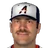
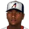
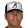
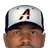
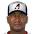

Major League Baseball · West Division
Houston Astros
22-20 .524 · 4th in West Division, 5 GB
Run differential +26 (224 RS, 198 RA) · Pythagorean 23-19 · L10 6-4 · Streak L1 · Home 13-10 · Road 9-10
Minute Maid Park (capacity 40,976)
High Minors:  Sugar Land Space Cowboys · Low Minors:
Sugar Land Space Cowboys · Low Minors:  Space Coast Cosmos
Space Coast Cosmos
Depth chart & lineupsPayrollTransactionsLeague financesStaffBallparkRecord bookThis week's previewThe season so far
Season So Far games over .500 by date
Recent Results
Farm System automatic farm score
16th of 20 in the MLB with a farm score of 5.9 (44 players 25 or younger with stats at the affiliates). All farm systems →
Roster (26)
| # | Player | Pos | B/T | Age |
|---|---|---|---|---|
| 26 | Chris Carpenter | SP | R/R | 27 |
| 31 | Dustin Hermanson | SP | R/R | 29 |
| 32 | Jon Lieber | SP | L/R | 32 |
| 40 | Brian Powell | SP | R/R | 28 |
| 16 | Ismael Valdez | SP | R/R | 28 |
| 97 | Scott Elarton | RP | R/R | 26 |
| 29 | Scott Eyre | RP | L/L | 29 |
| 52 | Tony Fiore | RP | R/R | 30 |
| 27 |  Buddy Groom | RP | L/L | 36 |
| 74 | Scott Strickland | RP | R/R | 26 |
| 5 | Julian Tavarez | RP | L/R | 28 |
| 44 | John Wasdin | RP | R/R | 29 |
| 13 | Vance Wilson | C | R/R | 29 |
| 4 | Shawn Wooten | C | R/R | 29 |
| 22 | Tony Clark | 1B | S/R | 29 |
| 71 |  Calvin Pickering | 1B | L/L | 25 |
| 6 | Jose Flores | 2B | R/R | 28 |
| 23 | Jeff Kent | 2B | R/R | 34 |
| 19 | Jeff Cirillo | 3B | R/R | 32 |
| 8 | Clay Bellinger | SS | R/R | 33 |
| 3 |  Alex Rodriguez | SS | R/R | 26 |
| 10 | Brian Banks | LF | S/R | 31 |
| 34 |  Juan Encarnacion | LF | R/R | 26 |
| 9 |  Ron Gant | LF | R/R | 37 |
| 17 | Marvin Benard | CF | L/L | 32 |
| 21 | Sammy Sosa | RF | R/R | 33 |
2002 Batting
| Player | G | PA | AB | R | H | 2B | 3B | HR | RBI | BB | K | SB | AVG | OBP | SLG | OPS |
|---|---|---|---|---|---|---|---|---|---|---|---|---|---|---|---|---|
| Jeff Kent | 38 | 181 | 162 | 29 | 45 | 7 | 3 | 11 | 30 | 19 | 31 | 3 | .278 | .354 | .562 | .915 |
| Sammy Sosa | 40 | 176 | 152 | 26 | 38 | 7 | 0 | 12 | 30 | 23 | 42 | 0 | .250 | .347 | .533 | .879 |
| Juan Encarnacion | 41 | 175 | 161 | 24 | 41 | 8 | 2 | 1 | 9 | 10 | 28 | 7 | .255 | .309 | .348 | .656 |
| Alex Rodriguez | 40 | 171 | 150 | 27 | 48 | 10 | 0 | 11 | 34 | 16 | 32 | 3 | .320 | .398 | .607 | 1.004 |
| Jeff Cirillo | 38 | 170 | 149 | 22 | 38 | 11 | 0 | 2 | 11 | 17 | 11 | 3 | .255 | .339 | .369 | .708 |
| Ron Gant | 38 | 165 | 144 | 18 | 37 | 10 | 2 | 9 | 25 | 18 | 33 | 2 | .257 | .333 | .542 | .875 |
| Tony Clark | 40 | 164 | 150 | 19 | 41 | 11 | 0 | 6 | 21 | 12 | 39 | 0 | .273 | .325 | .467 | .792 |
| Marvin Benard | 39 | 153 | 134 | 22 | 40 | 7 | 4 | 4 | 21 | 12 | 21 | 4 | .299 | .375 | .500 | .875 |
| Vance Wilson | 33 | 129 | 115 | 18 | 25 | 3 | 0 | 5 | 18 | 10 | 12 | 0 | .217 | .291 | .374 | .665 |
| Shawn Wooten | 21 | 77 | 71 | 9 | 20 | 4 | 1 | 2 | 8 | 5 | 12 | 0 | .282 | .329 | .451 | .780 |
| Brian Banks | 13 | 33 | 29 | 3 | 3 | 1 | 0 | 1 | 4 | 3 | 7 | 1 | .103 | .212 | .241 | .454 |
| Clay Bellinger | 13 | 32 | 31 | 3 | 5 | 0 | 1 | 1 | 2 | 1 | 7 | 1 | .161 | .188 | .323 | .510 |
| Calvin Pickering | 16 | 24 | 19 | 2 | 4 | 2 | 0 | 0 | 1 | 4 | 5 | 0 | .211 | .375 | .316 | .691 |
| Jose Flores | 4 | 3 | 3 | 2 | 3 | 2 | 0 | 0 | 0 | 0 | 0 | 0 | 1.000 | 1.000 | 1.667 | 2.667 |
| Team | 42 | 1653 | 1470 | 224 | 388 | 83 | 13 | 65 | 214 | 150 | 280 | 24 | .264 | .338 | .471 | .809 |
2002 Batting, Advanced
| Player | PA | AVG | OBP | SLG | OPS+ | ISO | BABIP | BB% | K% | WPA | UBR | WAR |
|---|---|---|---|---|---|---|---|---|---|---|---|---|
| Jeff Kent | 181 | .278 | .354 | .562 | 143 | .284 | .283 | 10.5% | 17.1% | 1.83 | -2.4 | 1.0 |
| Sammy Sosa | 176 | .250 | .347 | .533 | 134 | .283 | .263 | 13.1% | 23.9% | 0.23 | -2.0 | 1.1 |
| Juan Encarnacion | 175 | .255 | .309 | .348 | 78 | .093 | .301 | 5.7% | 16.0% | -0.76 | -0.3 | -0.4 |
| Alex Rodriguez | 171 | .320 | .398 | .607 | 168 | .287 | .343 | 9.4% | 18.7% | 1.17 | 0.0 | 1.9 |
| Jeff Cirillo | 170 | .255 | .339 | .369 | 93 | .114 | .265 | 10.0% | 6.5% | -0.15 | -0.1 | 0.9 |
| Ron Gant | 165 | .257 | .333 | .542 | 132 | .285 | .267 | 10.9% | 20.0% | 0.50 | -0.6 | 0.7 |
| Tony Clark | 164 | .273 | .325 | .467 | 112 | .193 | .330 | 7.3% | 23.8% | -0.26 | -0.9 | 0.2 |
| Marvin Benard | 153 | .299 | .375 | .500 | 135 | .201 | .327 | 7.8% | 13.7% | 0.18 | -2.5 | 1.1 |
| Vance Wilson | 129 | .217 | .291 | .374 | 79 | .157 | .204 | 7.8% | 9.3% | -0.12 | -0.6 | 0.2 |
| Shawn Wooten | 77 | .282 | .329 | .451 | 109 | .169 | .316 | 6.5% | 15.6% | 0.11 | 0.3 | 0.2 |
| Brian Banks | 33 | .103 | .212 | .241 | 23 | .138 | .095 | 9.1% | 21.2% | -0.68 | -0.5 | -0.2 |
| Clay Bellinger | 32 | .161 | .188 | .323 | 35 | .161 | .174 | 3.1% | 21.9% | -0.44 | -0.1 | -0.3 |
| Calvin Pickering | 24 | .211 | .375 | .316 | 91 | .105 | .286 | 16.7% | 20.8% | -0.01 | 0.0 | 0.0 |
| Jose Flores | 3 | 1.000 | 1.000 | 1.667 | 606 | .667 | 1.000 | 0.0% | 0.0% | 0.00 | 0.0 | 0.2 |
| Team | 1653 | .264 | .338 | .471 | 117 | .207 | .285 | 9.1% | 16.9% | 1.59 | -9.8 | 6.6 |
2002 Pitching
| Pitcher | G | GS | W | L | SV | IP | H | R | ER | BB | K | HR | ERA | WHIP |
|---|---|---|---|---|---|---|---|---|---|---|---|---|---|---|
| Chris Carpenter | 9 | 9 | 3 | 3 | 0 | 61.1 | 59 | 28 | 25 | 11 | 44 | 9 | 3.67 | 1.14 |
| Jon Lieber | 9 | 9 | 3 | 5 | 0 | 61.1 | 68 | 42 | 39 | 12 | 43 | 10 | 5.72 | 1.30 |
| Ismael Valdez | 9 | 9 | 4 | 3 | 0 | 55.2 | 51 | 31 | 26 | 17 | 35 | 12 | 4.20 | 1.22 |
| Dustin Hermanson | 8 | 8 | 3 | 1 | 0 | 48.1 | 45 | 22 | 22 | 18 | 30 | 8 | 4.10 | 1.30 |
| Brian Powell | 11 | 5 | 1 | 4 | 2 | 29.2 | 37 | 20 | 17 | 16 | 17 | 4 | 5.16 | 1.79 |
| Scott Elarton | 13 | 2 | 1 | 2 | 5 | 24.1 | 20 | 18 | 18 | 8 | 19 | 4 | 6.66 | 1.15 |
| John Wasdin | 17 | 0 | 2 | 1 | 2 | 24.1 | 19 | 12 | 11 | 5 | 15 | 8 | 4.07 | 0.99 |
| Julian Tavarez | 10 | 0 | 0 | 0 | 0 | 19.1 | 21 | 9 | 9 | 4 | 9 | 1 | 4.19 | 1.29 |
| Buddy Groom | 10 | 0 | 1 | 0 | 0 | 16.2 | 10 | 6 | 6 | 4 | 11 | 0 | 3.24 | 0.84 |
| Tony Fiore | 11 | 0 | 0 | 0 | 0 | 15.1 | 14 | 6 | 6 | 9 | 9 | 1 | 3.52 | 1.50 |
| Scott Strickland | 10 | 0 | 1 | 1 | 0 | 14.1 | 11 | 3 | 3 | 3 | 10 | 1 | 1.88 | 0.98 |
| Scott Eyre | 10 | 0 | 3 | 0 | 0 | 13.2 | 10 | 1 | 1 | 6 | 10 | 1 | 0.66 | 1.17 |
| Team | 42 | 42 | 22 | 20 | 9 | 384.1 | 365 | 198 | 183 | 113 | 252 | 59 | 4.29 | 1.24 |
2002 Pitching, Advanced
| Pitcher | IP | ERA | WHIP | K/9 | BB/9 | HR/9 | K% | BB% | K-BB% | FIP | ERA+ | GB% | WPA | WAR |
|---|---|---|---|---|---|---|---|---|---|---|---|---|---|---|
| Chris Carpenter | 61.1 | 3.67 | 1.14 | 6.5 | 1.6 | 1.3 | 17.4% | 4.3% | 13.0% | 3.91 | 111 | 60.6% | 0.01 | 1.0 |
| Jon Lieber | 61.1 | 5.72 | 1.30 | 6.3 | 1.8 | 1.5 | 16.5% | 4.6% | 11.9% | 4.20 | 71 | 45.1% | -0.89 | 0.8 |
| Ismael Valdez | 55.2 | 4.20 | 1.22 | 5.7 | 2.7 | 1.9 | 15.4% | 7.5% | 7.9% | 5.26 | 97 | 47.1% | -0.64 | 0.1 |
| Dustin Hermanson | 48.1 | 4.10 | 1.30 | 5.6 | 3.4 | 1.5 | 14.5% | 8.7% | 5.8% | 4.90 | 99 | 49.5% | 0.00 | 0.2 |
| Brian Powell | 29.2 | 5.16 | 1.79 | 5.2 | 4.9 | 1.2 | 12.0% | 11.3% | 0.7% | 5.07 | 79 | 48.5% | -0.22 | 0.0 |
| Scott Elarton | 24.1 | 6.66 | 1.15 | 7.0 | 3.0 | 1.5 | 18.8% | 7.9% | 10.9% | 4.43 | 61 | 40.4% | -0.79 | 0.1 |
| John Wasdin | 24.1 | 4.07 | 0.99 | 5.5 | 1.8 | 3.0 | 15.6% | 5.2% | 10.4% | 6.41 | 100 | 61.8% | 0.88 | -0.7 |
| Julian Tavarez | 19.1 | 4.19 | 1.29 | 4.2 | 1.9 | 0.5 | 11.1% | 4.9% | 6.2% | 3.27 | 97 | 46.7% | -0.02 | 0.3 |
| Buddy Groom | 16.2 | 3.24 | 0.84 | 5.9 | 2.2 | 0.0 | 17.2% | 6.2% | 10.9% | 2.33 | 126 | 60.5% | 0.74 | 0.5 |
| Tony Fiore | 15.1 | 3.52 | 1.50 | 5.3 | 5.3 | 0.6 | 14.1% | 14.1% | 0.0% | 4.18 | 116 | 56.2% | -0.18 | 0.1 |
| Scott Strickland | 14.1 | 1.88 | 0.98 | 6.3 | 1.9 | 0.6 | 17.9% | 5.4% | 12.5% | 3.10 | 216 | 32.3% | -0.28 | 0.3 |
| Scott Eyre | 13.2 | 0.66 | 1.17 | 6.6 | 4.0 | 0.7 | 18.5% | 11.1% | 7.4% | 3.55 | 619 | 46.4% | 0.38 | 0.2 |
| Team | 384.1 | 4.29 | 1.24 | 5.9 | 2.6 | 1.4 | 15.7% | 7.0% | 8.6% | 4.42 | 95 | 50.2% | -1.01 | 2.8 |
2002 Fielding
| Player | Pos | G | GS | Inn | TC | PO | A | E | DP | FPct | ZR | Arm | Framing |
|---|---|---|---|---|---|---|---|---|---|---|---|---|---|
| Larry Dierker | P | 39 | 37 | 305.1 | 59 | 14 | 42 | 3 | 5 | .949 | 0.0 | - | - |
| J.R. Richard | P | 38 | 38 | 292.1 | 51 | 14 | 32 | 5 | 0 | .902 | 0.0 | - | - |
| J.R. Richard | P | 39 | 39 | 291.0 | 68 | 19 | 39 | 10 | 2 | .853 | 0.0 | - | - |
| Jerry Reuss | P | 41 | 40 | 279.1 | 44 | 4 | 37 | 3 | 2 | .932 | 0.0 | - | - |
| J.R. Richard | P | 36 | 36 | 275.1 | 70 | 29 | 38 | 3 | 0 | .957 | 0.0 | - | - |
| Mike Scott | P | 37 | 37 | 275.1 | 65 | 24 | 39 | 2 | 2 | .969 | 0.0 | - | - |
| Larry Dierker | P | 37 | 36 | 270.0 | 53 | 19 | 31 | 3 | 3 | .943 | 0.0 | - | - |
| Joe Niekro | P | 35 | 35 | 270.0 | 67 | 22 | 42 | 3 | 2 | .955 | 0.0 | - | - |
| Don Wilson | P | 35 | 34 | 268.0 | 37 | 9 | 26 | 2 | 4 | .946 | 0.0 | - | - |
| J.R. Richard | P | 36 | 36 | 267.0 | 70 | 26 | 44 | 0 | 2 | 1.000 | 0.0 | - | - |
| Joe Niekro | P | 38 | 38 | 263.2 | 53 | 14 | 39 | 0 | 4 | 1.000 | 0.0 | - | - |
| Joe Niekro | P | 38 | 38 | 263.2 | 49 | 9 | 36 | 4 | 0 | .918 | 0.0 | - | - |
| Bob Knepper | P | 40 | 38 | 258.0 | 73 | 23 | 47 | 3 | 6 | .959 | 0.0 | - | - |
| Joe Niekro | P | 37 | 36 | 256.0 | 56 | 17 | 37 | 2 | 2 | .964 | 0.0 | - | - |
| Darryl Kile | P | 34 | 34 | 255.2 | 68 | 28 | 39 | 1 | 3 | .985 | 0.0 | - | - |
| Dave Giusti | P | 37 | 34 | 251.0 | 73 | 20 | 51 | 2 | 3 | .973 | 0.0 | - | - |
| Nolan Ryan | P | 35 | 35 | 250.1 | 44 | 9 | 33 | 2 | 1 | .955 | 0.0 | - | - |
| Dave Roberts | P | 39 | 36 | 249.1 | 49 | 9 | 39 | 1 | 1 | .980 | 0.0 | - | - |
| Joe Niekro | P | 38 | 38 | 248.1 | 60 | 19 | 39 | 2 | 5 | .967 | 0.0 | - | - |
| Mike Scott | P | 36 | 36 | 247.2 | 51 | 17 | 32 | 2 | 2 | .961 | 0.0 | - | - |
| Mike Cuellar | P | 36 | 32 | 246.1 | 52 | 15 | 35 | 2 | 1 | .962 | 0.0 | - | - |
| Jose Lima | P | 35 | 35 | 246.1 | 41 | 18 | 21 | 2 | 1 | .951 | 0.0 | - | - |
| Denny Lemaster | P | 38 | 37 | 244.2 | 45 | 12 | 33 | 0 | 1 | 1.000 | 0.0 | - | - |
| Turk Farrell | P | 43 | 29 | 241.2 | 40 | 10 | 28 | 2 | 1 | .950 | 0.0 | - | - |
| Bob Knepper | P | 37 | 37 | 241.0 | 38 | 5 | 30 | 3 | 1 | .921 | 0.0 | - | - |
| Shane Reynolds | P | 35 | 35 | 239.0 | 45 | 19 | 26 | 0 | 2 | 1.000 | 0.0 | - | - |
| Mike Hampton | P | 34 | 34 | 239.0 | 56 | 12 | 41 | 3 | 4 | .946 | 0.0 | - | - |
| Don Wilson | P | 37 | 32 | 239.0 | 44 | 15 | 25 | 4 | 3 | .909 | 0.0 | - | - |
| Doug Drabek | P | 34 | 34 | 237.2 | 51 | 19 | 32 | 0 | 2 | 1.000 | 0.0 | - | - |
| Bob Knepper | P | 35 | 34 | 233.2 | 41 | 7 | 32 | 2 | 2 | .951 | 0.0 | - | - |
| Shane Reynolds | P | 35 | 35 | 233.1 | 66 | 24 | 40 | 2 | 9 | .970 | 0.0 | - | - |
| Jose Lima | P | 33 | 33 | 233.1 | 59 | 24 | 32 | 3 | 3 | .949 | 0.0 | - | - |
| Larry Dierker | P | 32 | 32 | 233.2 | 42 | 13 | 28 | 1 | 2 | .976 | 0.0 | - | - |
| Nolan Ryan | P | 35 | 35 | 233.2 | 45 | 13 | 27 | 5 | 0 | .889 | 0.0 | - | - |
| Larry Dierker | P | 34 | 34 | 232.0 | 49 | 15 | 31 | 3 | 1 | .939 | 0.0 | - | - |
| Nolan Ryan | P | 35 | 35 | 232.0 | 28 | 6 | 20 | 2 | 0 | .929 | 0.0 | - | - |
| Shane Reynolds | P | 35 | 35 | 231.2 | 59 | 18 | 41 | 0 | 3 | 1.000 | 0.0 | - | - |
| Bob Bruce | P | 35 | 34 | 229.2 | 64 | 25 | 36 | 3 | 1 | .953 | 0.0 | - | - |
| Mike Scott | P | 33 | 32 | 229.0 | 44 | 15 | 25 | 4 | 0 | .909 | 0.0 | - | - |
| Don Wilson | P | 33 | 33 | 228.0 | 47 | 8 | 37 | 2 | 1 | .957 | 0.0 | - | - |
| Jack Billingham | P | 33 | 33 | 228.0 | 56 | 20 | 32 | 4 | 3 | .929 | 0.0 | - | - |
| Mike Cuellar | P | 38 | 28 | 227.1 | 45 | 5 | 38 | 2 | 4 | .956 | 0.0 | - | - |
| Jim Deshaies | P | 34 | 34 | 225.2 | 42 | 8 | 31 | 3 | 2 | .929 | 0.0 | - | - |
| Don Wilson | P | 34 | 34 | 225.0 | 47 | 19 | 25 | 3 | 0 | .936 | 0.0 | - | - |
| Denny Lemaster | P | 33 | 32 | 224.0 | 38 | 7 | 27 | 4 | 1 | .895 | 0.0 | - | - |
| Ken Johnson | P | 37 | 32 | 223.2 | 60 | 8 | 51 | 1 | 4 | .983 | 0.0 | - | - |
| Mike Hampton | P | 34 | 34 | 223.0 | 76 | 16 | 57 | 3 | 4 | .961 | 0.0 | - | - |
| Larry Dierker | P | 33 | 33 | 223.2 | 45 | 10 | 34 | 1 | 1 | .978 | 0.0 | - | - |
| Ken Forsch | P | 32 | 32 | 222.1 | 59 | 11 | 45 | 3 | 2 | .949 | 0.0 | - | - |
| Dave Giusti | P | 37 | 33 | 221.2 | 41 | 14 | 26 | 1 | 0 | .976 | 0.0 | - | - |
| Mike Scott | P | 36 | 35 | 221.2 | 45 | 21 | 22 | 2 | 1 | .956 | 0.0 | - | - |
| Nolan Ryan | P | 33 | 33 | 220.0 | 30 | 8 | 18 | 4 | 0 | .867 | 0.0 | - | - |
| Darryl Kile | P | 35 | 33 | 219.0 | 43 | 12 | 28 | 3 | 6 | .930 | 0.0 | - | - |
| Ken Johnson | P | 35 | 35 | 218.0 | 65 | 9 | 50 | 6 | 4 | .908 | 0.0 | - | - |
| Mike Scott | P | 32 | 32 | 218.2 | 41 | 14 | 27 | 0 | 0 | 1.000 | 0.0 | - | - |
| Pete Harnisch | P | 33 | 33 | 217.2 | 20 | 3 | 15 | 2 | 0 | .900 | 0.0 | - | - |
| Pete Harnisch | P | 33 | 33 | 216.2 | 26 | 7 | 18 | 1 | 0 | .962 | 0.0 | - | - |
| Larry Dierker | P | 31 | 31 | 215.0 | 35 | 16 | 19 | 0 | 1 | 1.000 | 0.0 | - | - |
| Mark Lemongello | P | 34 | 30 | 214.2 | 58 | 23 | 30 | 5 | 1 | .914 | 0.0 | - | - |
| Joe Niekro | P | 32 | 32 | 213.0 | 49 | 14 | 34 | 1 | 1 | .980 | 0.0 | - | - |
| Wade Miller | P | 32 | 32 | 212.0 | 54 | 16 | 36 | 2 | 3 | .963 | 0.0 | - | - |
| Tom Griffin | P | 34 | 34 | 211.0 | 62 | 19 | 35 | 8 | 2 | .871 | 0.0 | - | - |
| Mike Hampton | P | 32 | 32 | 211.2 | 64 | 11 | 49 | 4 | 7 | .938 | 0.0 | - | - |
| Nolan Ryan | P | 34 | 34 | 211.2 | 30 | 11 | 18 | 1 | 1 | .967 | 0.0 | - | - |
| Dave Giusti | P | 34 | 33 | 210.0 | 43 | 18 | 24 | 1 | 0 | .977 | 0.0 | - | - |
| Mark Lemongello | P | 33 | 30 | 210.1 | 51 | 15 | 34 | 2 | 1 | .961 | 0.0 | - | - |
| Jim Deshaies | P | 34 | 34 | 209.1 | 37 | 3 | 32 | 2 | 1 | .946 | 0.0 | - | - |
| Chris Holt | P | 33 | 32 | 209.2 | 50 | 13 | 36 | 1 | 1 | .980 | 0.0 | - | - |
| Mark Portugal | P | 33 | 33 | 208.0 | 51 | 21 | 28 | 2 | 2 | .961 | 0.0 | - | - |
| Turk Farrell | P | 33 | 29 | 208.1 | 42 | 9 | 30 | 3 | 3 | .929 | 0.0 | - | - |
| Don Wilson | P | 33 | 30 | 208.2 | 42 | 16 | 22 | 4 | 0 | .905 | 0.0 | - | - |
| Jim Deshaies | P | 31 | 31 | 207.0 | 34 | 7 | 25 | 2 | 1 | .941 | 0.0 | - | - |
| Chris Holt | P | 34 | 32 | 207.0 | 43 | 13 | 27 | 3 | 4 | .930 | 0.0 | - | - |
| Pete Harnisch | P | 34 | 34 | 206.2 | 33 | 16 | 15 | 2 | 1 | .939 | 0.0 | - | - |
| Mike Scott | P | 32 | 32 | 205.2 | 31 | 10 | 20 | 1 | 0 | .968 | 0.0 | - | - |
| Dave Roberts | P | 34 | 30 | 204.0 | 61 | 15 | 43 | 3 | 5 | .951 | 0.0 | - | - |
| Don Wilson | P | 33 | 27 | 204.2 | 37 | 11 | 21 | 5 | 1 | .865 | 0.0 | - | - |
| Bob Knepper | P | 35 | 29 | 203.0 | 45 | 2 | 40 | 3 | 4 | .933 | 0.0 | - | - |
| J.R. Richard | P | 33 | 31 | 203.0 | 28 | 8 | 19 | 1 | 0 | .964 | 0.0 | - | - |
| Bob Bruce | P | 35 | 29 | 202.1 | 47 | 11 | 35 | 1 | 0 | .979 | 0.0 | - | - |
| Turk Farrell | P | 34 | 26 | 202.2 | 36 | 9 | 27 | 0 | 1 | 1.000 | 0.0 | - | - |
| Joe Niekro | P | 35 | 29 | 202.2 | 39 | 18 | 21 | 0 | 3 | 1.000 | 0.0 | - | - |
| Ken Forsch | P | 46 | 26 | 201.0 | 31 | 15 | 16 | 0 | 1 | 1.000 | 0.0 | - | - |
| Dave Roberts | P | 32 | 27 | 198.1 | 49 | 13 | 36 | 0 | 0 | 1.000 | 0.0 | - | - |
| Turk Farrell | P | 32 | 27 | 198.1 | 36 | 5 | 31 | 0 | 2 | 1.000 | 0.0 | - | - |
| Ken Johnson | P | 33 | 31 | 196.2 | 50 | 9 | 37 | 4 | 1 | .920 | 0.0 | - | - |
| Mark Portugal | P | 32 | 32 | 196.2 | 43 | 23 | 19 | 1 | 2 | .977 | 0.0 | - | - |
| Jose Lima | P | 33 | 33 | 196.1 | 39 | 16 | 22 | 1 | 3 | .974 | 0.0 | - | - |
| Nolan Ryan | P | 29 | 29 | 196.1 | 34 | 4 | 28 | 2 | 0 | .941 | 0.0 | - | - |
| Danny Darwin | P | 33 | 30 | 195.2 | 34 | 10 | 22 | 2 | 0 | .941 | 0.0 | - | - |
| Don Sutton | P | 27 | 27 | 195.0 | 37 | 16 | 20 | 1 | 2 | .973 | 0.0 | - | - |
| Gomez Andujar | P | 46 | 23 | 194.0 | 71 | 16 | 50 | 5 | 2 | .930 | 0.0 | - | - |
| Don Nottebart | P | 31 | 27 | 193.0 | 45 | 14 | 30 | 1 | 2 | .978 | 0.0 | - | - |
| Bill Gullickson | P | 32 | 32 | 193.1 | 24 | 11 | 13 | 0 | 1 | 1.000 | 0.0 | - | - |
| Danny Darwin | P | 44 | 20 | 192.0 | 52 | 14 | 37 | 1 | 2 | .981 | 0.0 | - | - |
| Scott Elarton | P | 30 | 30 | 192.2 | 35 | 14 | 21 | 0 | 4 | 1.000 | 0.0 | - | - |
| Dave Roberts | P | 35 | 28 | 192.0 | 32 | 0 | 31 | 1 | 0 | .969 | 0.0 | - | - |
| Jerry Reuss | P | 33 | 30 | 192.0 | 33 | 4 | 25 | 4 | 0 | .879 | 0.0 | - | - |
| Greg Swindell | P | 31 | 30 | 190.1 | 35 | 2 | 32 | 1 | 0 | .971 | 0.0 | - | - |
| Shane Reynolds | P | 30 | 30 | 189.1 | 53 | 13 | 39 | 1 | 0 | .981 | 0.0 | - | - |
| Ken Forsch | P | 33 | 23 | 188.0 | 29 | 8 | 19 | 2 | 1 | .931 | 0.0 | - | - |
| Tom Griffin | P | 31 | 31 | 188.1 | 26 | 8 | 16 | 2 | 1 | .923 | 0.0 | - | - |
| Jack Billingham | P | 46 | 24 | 188.0 | 45 | 13 | 30 | 2 | 1 | .956 | 0.0 | - | - |
| Larry Dierker | P | 29 | 28 | 187.0 | 41 | 13 | 26 | 2 | 1 | .951 | 0.0 | - | - |
| Larry Dierker | P | 28 | 28 | 187.2 | 37 | 17 | 18 | 2 | 2 | .946 | 0.0 | - | - |
| Doug Drabek | P | 31 | 31 | 185.0 | 46 | 24 | 20 | 2 | 3 | .957 | 0.0 | - | - |
| Don Wilson | P | 31 | 28 | 184.0 | 28 | 9 | 17 | 2 | 0 | .929 | 0.0 | - | - |
| Don Wilson | P | 29 | 27 | 184.0 | 25 | 6 | 17 | 2 | 2 | .920 | 0.0 | - | - |
| Nolan Ryan | P | 30 | 30 | 183.2 | 20 | 7 | 11 | 2 | 0 | .900 | 0.0 | - | - |
| Shane Reynolds | P | 28 | 28 | 182.2 | 39 | 9 | 30 | 0 | 2 | 1.000 | 0.0 | - | - |
| Shane Reynolds | P | 30 | 30 | 181.0 | 45 | 10 | 31 | 4 | 4 | .911 | 0.0 | - | - |
| Bob Knepper | P | 33 | 29 | 180.0 | 41 | 8 | 32 | 1 | 3 | .976 | 0.0 | - | - |
| Joe Niekro | P | 44 | 14 | 180.2 | 42 | 11 | 31 | 0 | 7 | 1.000 | 0.0 | - | - |
| Nolan Ryan | P | 30 | 30 | 178.0 | 29 | 10 | 17 | 2 | 2 | .931 | 0.0 | - | - |
| Ken Forsch | P | 26 | 24 | 177.2 | 48 | 10 | 37 | 1 | 5 | .979 | 0.0 | - | - |
| Bob Knepper | P | 33 | 31 | 177.2 | 48 | 7 | 39 | 2 | 2 | .958 | 0.0 | - | - |
| Doug Drabek | P | 30 | 30 | 175.1 | 43 | 17 | 23 | 3 | 0 | .930 | 0.0 | - | - |
| Bob Bruce | P | 32 | 27 | 175.0 | 41 | 14 | 26 | 1 | 2 | .976 | 0.0 | - | - |
| Bob Knepper | P | 27 | 27 | 175.0 | 47 | 6 | 39 | 2 | 3 | .957 | 0.0 | - | - |
| Gomez Andujar | P | 28 | 25 | 172.1 | 39 | 12 | 24 | 3 | 1 | .923 | 0.0 | - | - |
| Sean Bergman | P | 31 | 27 | 172.0 | 31 | 16 | 14 | 1 | 0 | .968 | 0.0 | - | - |
| Darryl Kile | P | 32 | 26 | 171.2 | 27 | 9 | 15 | 3 | 0 | .889 | 0.0 | - | - |
| Doug Konieczny | P | 32 | 29 | 171.0 | 32 | 7 | 21 | 4 | 1 | .875 | 0.0 | - | - |
| Bob Bruce | P | 30 | 25 | 170.1 | 35 | 13 | 21 | 1 | 1 | .971 | 0.0 | - | - |
| Mike Cuellar | P | 28 | 24 | 170.2 | 41 | 13 | 24 | 4 | 1 | .902 | 0.0 | - | - |
| Mark Portugal | P | 32 | 27 | 168.1 | 36 | 16 | 17 | 3 | 1 | .917 | 0.0 | - | - |
| Joe Niekro | P | 24 | 24 | 166.0 | 34 | 11 | 23 | 0 | 1 | 1.000 | 0.0 | - | - |
| Butch Henry | P | 28 | 28 | 165.2 | 46 | 13 | 30 | 3 | 2 | .935 | 0.0 | - | - |
| Doug Drabek | P | 23 | 23 | 164.2 | 52 | 21 | 28 | 3 | 2 | .942 | 0.0 | - | - |
| Chris Holt | P | 32 | 26 | 164.0 | 31 | 14 | 16 | 1 | 2 | .968 | 0.0 | - | - |
| Danny Darwin | P | 48 | 17 | 162.2 | 27 | 11 | 15 | 1 | 1 | .963 | 0.0 | - | - |
| Denny Lemaster | P | 39 | 21 | 162.0 | 26 | 8 | 17 | 1 | 1 | .962 | 0.0 | - | - |
| Jim Deshaies | P | 28 | 28 | 161.0 | 25 | 4 | 18 | 3 | 1 | .880 | 0.0 | - | - |
| Mike Hampton | P | 27 | 27 | 160.1 | 48 | 13 | 33 | 2 | 3 | .958 | 0.0 | - | - |
| Vern Ruhle | P | 28 | 22 | 159.1 | 34 | 15 | 17 | 2 | 2 | .941 | 0.0 | - | - |
| Larry Dierker | P | 24 | 23 | 159.0 | 40 | 16 | 23 | 1 | 0 | .975 | 0.0 | - | - |
| Gomez Andujar | P | 26 | 25 | 158.2 | 60 | 14 | 38 | 8 | 1 | .867 | 0.0 | - | - |
| Eusebio Blasingame | P | 30 | 28 | 158.0 | 38 | 8 | 29 | 1 | 1 | .974 | 0.0 | - | - |
| Ramon Garcia | P | 42 | 20 | 158.2 | 40 | 9 | 29 | 2 | 3 | .950 | 0.0 | - | - |
| Don Nottebart | P | 29 | 25 | 158.0 | 49 | 8 | 40 | 1 | 1 | .980 | 0.0 | - | - |
| Don Sutton | P | 23 | 23 | 158.2 | 37 | 11 | 24 | 2 | 3 | .946 | 0.0 | - | - |
| Don Nottebart | P | 28 | 24 | 157.0 | 61 | 14 | 44 | 3 | 3 | .951 | 0.0 | - | - |
| Ken Forsch | P | 30 | 24 | 156.0 | 20 | 9 | 9 | 2 | 1 | .900 | 0.0 | - | - |
| Bob Knepper | P | 22 | 22 | 156.2 | 35 | 6 | 26 | 3 | 1 | .914 | 0.0 | - | - |
| Mike Scott | P | 31 | 29 | 154.0 | 34 | 10 | 23 | 1 | 1 | .971 | 0.0 | - | - |
| Darryl Kile | P | 37 | 22 | 153.2 | 27 | 7 | 17 | 3 | 1 | .889 | 0.0 | - | - |
| Jim Golden | P | 37 | 18 | 153.0 | 41 | 10 | 29 | 2 | 1 | .951 | 0.0 | - | - |
| Greg Swindell | P | 33 | 26 | 153.0 | 41 | 9 | 31 | 1 | 1 | .976 | 0.0 | - | - |
| Jim Deshaies | P | 26 | 25 | 152.0 | 28 | 5 | 22 | 1 | 0 | .964 | 0.0 | - | - |
| Turk Farrell | P | 32 | 21 | 152.2 | 26 | 11 | 13 | 2 | 1 | .923 | 0.0 | - | - |
| Donne Wall | P | 26 | 23 | 150.0 | 37 | 17 | 18 | 2 | 0 | .946 | 0.0 | - | - |
| Mike Hampton | P | 24 | 24 | 150.2 | 36 | 10 | 23 | 3 | 2 | .917 | 0.0 | - | - |
| Vern Ruhle | P | 31 | 21 | 149.0 | 34 | 9 | 23 | 2 | 1 | .941 | 0.0 | - | - |
| Nolan Ryan | P | 21 | 21 | 149.0 | 22 | 5 | 16 | 1 | 3 | .955 | 0.0 | - | - |
| Greg Swindell | P | 24 | 24 | 148.1 | 21 | 6 | 14 | 1 | 0 | .952 | 0.0 | - | - |
| Darryl Kile | P | 24 | 24 | 147.2 | 28 | 9 | 18 | 1 | 0 | .964 | 0.0 | - | - |
| Jim Clancy | P | 33 | 26 | 147.0 | 26 | 9 | 10 | 7 | 2 | .731 | 0.0 | - | - |
| Larry Dierker | P | 26 | 19 | 146.2 | 31 | 10 | 17 | 4 | 0 | .871 | 0.0 | - | - |
| Mike Scott | P | 24 | 24 | 145.0 | 42 | 20 | 20 | 2 | 0 | .952 | 0.0 | - | - |
| Jim Deshaies | P | 26 | 26 | 144.0 | 24 | 9 | 13 | 2 | 0 | .917 | 0.0 | - | - |
| Floyd Bannister | P | 24 | 23 | 142.2 | 20 | 6 | 14 | 0 | 1 | 1.000 | 0.0 | - | - |
| Hal Brown | P | 26 | 20 | 141.1 | 18 | 3 | 15 | 0 | 0 | 1.000 | 0.0 | - | - |
| Roy Oswalt | P | 28 | 20 | 141.2 | 35 | 19 | 15 | 1 | 1 | .971 | 0.0 | - | - |
| Tom Dixon | P | 30 | 19 | 140.0 | 29 | 12 | 16 | 1 | 1 | .966 | 0.0 | - | - |
| Jimmy Jones | P | 25 | 23 | 139.1 | 26 | 9 | 17 | 0 | 1 | 1.000 | 0.0 | - | - |
| Hal Woodeshick | P | 31 | 26 | 139.1 | 36 | 7 | 26 | 3 | 0 | .917 | 0.0 | - | - |
| Claude Osteen | P | 23 | 21 | 138.1 | 32 | 8 | 23 | 1 | 1 | .969 | 0.0 | - | - |
| Mike LaCoss | P | 38 | 17 | 138.0 | 33 | 6 | 27 | 0 | 1 | 1.000 | 0.0 | - | - |
| Jimmy Jones | P | 26 | 22 | 135.1 | 36 | 8 | 26 | 2 | 2 | .944 | 0.0 | - | - |
| Ken Forsch | P | 52 | 6 | 133.1 | 35 | 9 | 24 | 2 | 0 | .943 | 0.0 | - | - |
| Hal Brown | P | 27 | 21 | 132.1 | 24 | 4 | 20 | 0 | 0 | 1.000 | 0.0 | - | - |
| Mike LaCoss | P | 39 | 18 | 132.0 | 31 | 9 | 20 | 2 | 2 | .935 | 0.0 | - | - |
| Dave Giusti | P | 38 | 13 | 131.1 | 42 | 17 | 24 | 1 | 0 | .976 | 0.0 | - | - |
| Shane Reynolds | P | 22 | 22 | 131.0 | 29 | 9 | 20 | 0 | 0 | 1.000 | 0.0 | - | - |
| Bob Bruce | P | 25 | 23 | 129.2 | 33 | 15 | 18 | 0 | 1 | 1.000 | 0.0 | - | - |
| Darryl Kile | P | 25 | 21 | 127.0 | 39 | 11 | 25 | 3 | 2 | .923 | 0.0 | - | - |
| Darryl Kile | P | 22 | 22 | 125.1 | 19 | 2 | 12 | 5 | 0 | .737 | 0.0 | - | - |
| Octavio Dotel | P | 50 | 16 | 125.0 | 19 | 4 | 14 | 1 | 1 | .947 | 0.0 | - | - |
| Scott Elarton | P | 42 | 15 | 124.0 | 12 | 4 | 8 | 0 | 0 | 1.000 | 0.0 | - | - |
| Shane Reynolds | P | 33 | 14 | 124.0 | 26 | 10 | 16 | 0 | 0 | 1.000 | 0.0 | - | - |
| Gomez Andujar | P | 35 | 14 | 122.0 | 39 | 7 | 27 | 5 | 2 | .872 | 0.0 | - | - |
| Danny Darwin | P | 68 | 0 | 122.0 | 16 | 2 | 12 | 2 | 2 | .875 | 0.0 | - | - |
| Rick Williams | P | 31 | 16 | 121.1 | 27 | 3 | 23 | 1 | 2 | .963 | 0.0 | - | - |
| Jim Owens | P | 48 | 11 | 118.0 | 21 | 2 | 17 | 2 | 0 | .905 | 0.0 | - | - |
| Joe Niekro | P | 36 | 13 | 118.0 | 25 | 9 | 13 | 3 | 1 | .880 | 0.0 | - | - |
| Tower Belinsky | P | 27 | 18 | 115.1 | 16 | 3 | 11 | 2 | 0 | .875 | 0.0 | - | - |
| Jim Ray | P | 40 | 13 | 115.0 | 16 | 5 | 11 | 0 | 0 | 1.000 | 0.0 | - | - |
| Mike LaCoss | P | 41 | 8 | 115.0 | 26 | 7 | 16 | 3 | 3 | .885 | 0.0 | - | - |
| Vern Ruhle | P | 41 | 9 | 114.2 | 31 | 12 | 19 | 0 | 0 | 1.000 | 0.0 | - | - |
| Hal Woodeshick | P | 55 | 0 | 114.0 | 42 | 6 | 33 | 3 | 1 | .929 | 0.0 | - | - |
| Bob Knepper | P | 22 | 20 | 113.0 | 32 | 6 | 24 | 2 | 1 | .938 | 0.0 | - | - |
| J.R. Richard | P | 17 | 17 | 113.2 | 16 | 6 | 10 | 0 | 1 | 1.000 | 0.0 | - | - |
| Joe Boever | P | 81 | 0 | 111.1 | 25 | 4 | 19 | 2 | 2 | .920 | 0.0 | - | - |
| Doug Jones | P | 80 | 0 | 111.2 | 19 | 5 | 12 | 2 | 0 | .895 | 0.0 | - | - |
| Xavier Hernandez | P | 77 | 0 | 111.0 | 17 | 9 | 7 | 1 | 0 | .941 | 0.0 | - | - |
| Tom Griffin | P | 23 | 20 | 111.0 | 19 | 8 | 10 | 1 | 0 | .947 | 0.0 | - | - |
| Gomez Andujar | P | 35 | 13 | 110.2 | 42 | 11 | 27 | 4 | 1 | .905 | 0.0 | - | - |
| Floyd Bannister | P | 28 | 16 | 110.1 | 7 | 1 | 6 | 0 | 2 | 1.000 | 0.0 | - | - |
| Scott Elarton | P | 20 | 20 | 109.2 | 29 | 9 | 18 | 2 | 2 | .931 | 0.0 | - | - |
| Ken Forsch | P | 34 | 9 | 109.0 | 22 | 6 | 14 | 2 | 3 | .909 | 0.0 | - | - |
| Mark Portugal | P | 20 | 15 | 108.0 | 28 | 11 | 15 | 2 | 0 | .929 | 0.0 | - | - |
| Bob Forsch | P | 37 | 15 | 108.1 | 23 | 13 | 9 | 1 | 1 | .957 | 0.0 | - | - |
| Wade Miller | P | 16 | 16 | 105.0 | 20 | 9 | 11 | 0 | 4 | 1.000 | 0.0 | - | - |
| Jim Ray | P | 52 | 2 | 105.0 | 22 | 4 | 17 | 1 | 1 | .955 | 0.0 | - | - |
| Octavio Dotel | P | 61 | 4 | 105.0 | 26 | 9 | 15 | 2 | 3 | .923 | 0.0 | - | - |
| Ken Forsch | P | 70 | 0 | 103.1 | 25 | 9 | 14 | 2 | 1 | .920 | 0.0 | - | - |
| Don Larsen | P | 30 | 10 | 103.1 | 27 | 7 | 19 | 1 | 1 | .963 | 0.0 | - | - |
| Dave Veres | P | 72 | 0 | 103.1 | 18 | 6 | 11 | 1 | 0 | .944 | 0.0 | - | - |
| Barry Latman | P | 31 | 9 | 103.0 | 22 | 5 | 16 | 1 | 0 | .955 | 0.0 | - | - |
| Vern Ruhle | P | 20 | 15 | 102.0 | 13 | 4 | 9 | 0 | 2 | 1.000 | 0.0 | - | - |
| Dave Smith | P | 57 | 0 | 102.2 | 15 | 3 | 11 | 1 | 0 | .933 | 0.0 | - | - |
| Rengifo Andersen | P | 67 | 0 | 101.2 | 25 | 12 | 10 | 3 | 0 | .880 | 0.0 | - | - |
| Mark Portugal | P | 18 | 16 | 101.1 | 32 | 16 | 13 | 3 | 1 | .906 | 0.0 | - | - |
| Tom Griffin | P | 25 | 12 | 100.0 | 21 | 7 | 14 | 0 | 0 | 1.000 | 0.0 | - | - |
| Sean Bergman | P | 19 | 16 | 99.0 | 12 | 4 | 8 | 0 | 1 | 1.000 | 0.0 | - | - |
| Todd Jones | P | 68 | 0 | 99.2 | 15 | 3 | 11 | 1 | 1 | .933 | 0.0 | - | - |
| Larry Dierker | P | 15 | 15 | 99.0 | 19 | 7 | 10 | 2 | 0 | .895 | 0.0 | - | - |
| Jim Ray | P | 47 | 1 | 98.0 | 9 | 2 | 7 | 0 | 0 | 1.000 | 0.0 | - | - |
| Bill Dawley | P | 60 | 0 | 98.0 | 18 | 6 | 11 | 1 | 0 | .944 | 0.0 | - | - |
| George Culver | P | 45 | 0 | 97.0 | 20 | 6 | 12 | 2 | 1 | .900 | 0.0 | - | - |
| Dan Larson | P | 32 | 10 | 97.2 | 27 | 11 | 14 | 2 | 0 | .926 | 0.0 | - | - |
| Dick Drott | P | 27 | 14 | 97.2 | 16 | 2 | 13 | 1 | 0 | .938 | 0.0 | - | - |
| Rick Rhoden | P | 20 | 17 | 96.2 | 26 | 6 | 20 | 0 | 0 | 1.000 | 0.0 | - | - |
| Brian Williams | P | 16 | 16 | 96.1 | 25 | 8 | 15 | 2 | 0 | .920 | 0.0 | - | - |
| Xavier Hernandez | P | 72 | 0 | 96.2 | 9 | 1 | 8 | 0 | 0 | 1.000 | 0.0 | - | - |
| Claude Raymond | P | 33 | 7 | 96.1 | 23 | 5 | 15 | 3 | 1 | .870 | 0.0 | - | - |
| George Culver | P | 59 | 0 | 95.0 | 27 | 7 | 17 | 3 | 3 | .889 | 0.0 | - | - |
| Pete Harnisch | P | 17 | 17 | 95.0 | 19 | 11 | 8 | 0 | 0 | 1.000 | 0.0 | - | - |
| Tom Griffin | P | 39 | 5 | 94.0 | 16 | 3 | 11 | 2 | 0 | .875 | 0.0 | - | - |
| Mike Madden | P | 28 | 13 | 94.2 | 23 | 7 | 15 | 1 | 4 | .957 | 0.0 | - | - |
| Charlie Kerfeld | P | 61 | 0 | 93.2 | 16 | 7 | 9 | 0 | 1 | 1.000 | 0.0 | - | - |
| Garcia Agosto | P | 82 | 0 | 92.1 | 29 | 11 | 18 | 0 | 1 | 1.000 | 0.0 | - | - |
| Ken Forsch | P | 52 | 0 | 92.0 | 21 | 4 | 17 | 0 | 0 | 1.000 | 0.0 | - | - |
| Dan Larson | P | 13 | 13 | 92.1 | 20 | 7 | 13 | 0 | 2 | 1.000 | 0.0 | - | - |
| Claude Raymond | P | 62 | 0 | 92.0 | 12 | 7 | 4 | 1 | 0 | .917 | 0.0 | - | - |
| Garcia Agosto | P | 75 | 0 | 91.2 | 48 | 12 | 34 | 2 | 0 | .958 | 0.0 | - | - |
| Joe Sambito | P | 63 | 0 | 91.1 | 21 | 5 | 14 | 2 | 2 | .905 | 0.0 | - | - |
| Vern Ruhle | P | 40 | 6 | 90.1 | 24 | 4 | 18 | 2 | 1 | .917 | 0.0 | - | - |
| Jim Ray | P | 54 | 0 | 90.0 | 12 | 6 | 6 | 0 | 0 | 1.000 | 0.0 | - | - |
| Mike Cosgrove | P | 45 | 0 | 90.0 | 15 | 1 | 13 | 1 | 2 | .933 | 0.0 | - | - |
| Joe Sambito | P | 64 | 0 | 90.1 | 22 | 7 | 13 | 2 | 2 | .909 | 0.0 | - | - |
| Mike Cosgrove | P | 22 | 16 | 89.2 | 16 | 2 | 14 | 0 | 2 | 1.000 | 0.0 | - | - |
| Joe Sambito | P | 54 | 1 | 89.0 | 23 | 4 | 17 | 2 | 1 | .913 | 0.0 | - | - |
| Joe Sambito | P | 62 | 0 | 88.0 | 24 | 6 | 16 | 2 | 3 | .917 | 0.0 | - | - |
| Joe Niekro | P | 40 | 4 | 88.0 | 20 | 7 | 13 | 0 | 0 | 1.000 | 0.0 | - | - |
| Rengifo Andersen | P | 60 | 0 | 87.2 | 27 | 10 | 13 | 4 | 0 | .852 | 0.0 | - | - |
| Gene Pentz | P | 41 | 4 | 87.0 | 18 | 5 | 13 | 0 | 0 | 1.000 | 0.0 | - | - |
| Ken Forsch | P | 42 | 5 | 86.0 | 26 | 10 | 15 | 1 | 1 | .962 | 0.0 | - | - |
| Dave Mlicki | P | 19 | 14 | 86.2 | 15 | 6 | 9 | 0 | 1 | 1.000 | 0.0 | - | - |
| Jim Crawford | P | 44 | 2 | 86.2 | 23 | 8 | 13 | 2 | 2 | .913 | 0.0 | - | - |
| Trytten Tiefenauer | P | 43 | 0 | 85.0 | 14 | 6 | 6 | 2 | 0 | .857 | 0.0 | - | - |
| Doug Jones | P | 71 | 0 | 85.1 | 15 | 2 | 12 | 1 | 0 | .933 | 0.0 | - | - |
| Randy Johnson | P | 11 | 11 | 84.1 | 9 | 1 | 7 | 1 | 1 | .889 | 0.0 | - | - |
| Bo McLaughlin | P | 46 | 6 | 84.2 | 24 | 7 | 15 | 2 | 1 | .917 | 0.0 | - | - |
| Wells Buzhardt | P | 39 | 4 | 83.2 | 25 | 8 | 17 | 0 | 1 | 1.000 | 0.0 | - | - |
| Garcia Agosto | P | 71 | 0 | 83.0 | 26 | 4 | 19 | 3 | 2 | .885 | 0.0 | - | - |
| Frank LaCorte | P | 55 | 0 | 83.0 | 5 | 1 | 3 | 1 | 0 | .800 | 0.0 | - | - |
| Rengifo Andersen | P | 53 | 0 | 82.2 | 20 | 9 | 9 | 2 | 1 | .900 | 0.0 | - | - |
| Nelson Cruz | P | 66 | 0 | 82.1 | 23 | 8 | 14 | 1 | 0 | .957 | 0.0 | - | - |
| Ron Cook | P | 41 | 7 | 82.0 | 18 | 3 | 13 | 2 | 1 | .889 | 0.0 | - | - |
| Brian Williams | P | 42 | 5 | 82.0 | 28 | 7 | 20 | 1 | 0 | .964 | 0.0 | - | - |
| Jack Billingham | P | 52 | 4 | 82.2 | 16 | 3 | 12 | 1 | 1 | .938 | 0.0 | - | - |
| Jim Ray | P | 41 | 2 | 81.0 | 12 | 2 | 9 | 1 | 0 | .917 | 0.0 | - | - |
| Bill Dawley | P | 49 | 0 | 81.0 | 20 | 6 | 13 | 1 | 2 | .950 | 0.0 | - | - |
| Al Osuna | P | 71 | 0 | 81.2 | 15 | 4 | 10 | 1 | 2 | .933 | 0.0 | - | - |
| Don McMahon | P | 49 | 2 | 80.0 | 18 | 5 | 12 | 1 | 2 | .944 | 0.0 | - | - |
| Pete Schourek | P | 15 | 15 | 80.0 | 8 | 1 | 7 | 0 | 0 | 1.000 | 0.0 | - | - |
| Dave Smith | P | 64 | 0 | 79.1 | 14 | 4 | 7 | 3 | 1 | .786 | 0.0 | - | - |
| Bill Dawley | P | 48 | 0 | 79.2 | 7 | 2 | 5 | 0 | 1 | 1.000 | 0.0 | - | - |
| Bo McLaughlin | P | 17 | 11 | 79.0 | 20 | 10 | 10 | 0 | 2 | 1.000 | 0.0 | - | - |
| Tom Griffin | P | 17 | 13 | 79.1 | 20 | 5 | 14 | 1 | 2 | .950 | 0.0 | - | - |
| Claude Raymond | P | 38 | 0 | 79.2 | 25 | 4 | 20 | 1 | 3 | .960 | 0.0 | - | - |
| Gomez Andujar | P | 23 | 10 | 78.2 | 22 | 5 | 15 | 2 | 0 | .909 | 0.0 | - | - |
| Holbrook Blair | P | 29 | 8 | 78.2 | 13 | 4 | 7 | 2 | 0 | .846 | 0.0 | - | - |
| Eusebio Blasingame | P | 13 | 13 | 78.0 | 18 | 2 | 15 | 1 | 0 | .944 | 0.0 | - | - |
| Aurelio Lopez | P | 45 | 0 | 78.0 | 10 | 2 | 6 | 2 | 0 | .800 | 0.0 | - | - |
| Hal Woodeshick | P | 61 | 0 | 78.1 | 33 | 5 | 23 | 5 | 0 | .848 | 0.0 | - | - |
| Brian Williams | P | 20 | 13 | 78.1 | 21 | 8 | 9 | 4 | 0 | .810 | 0.0 | - | - |
| Doug Brocail | P | 36 | 7 | 77.1 | 20 | 11 | 9 | 0 | 0 | 1.000 | 0.0 | - | - |
| Eusebio Blasingame | P | 15 | 14 | 77.0 | 17 | 7 | 10 | 0 | 0 | 1.000 | 0.0 | - | - |
| Dave Smith | P | 53 | 0 | 77.1 | 15 | 5 | 9 | 1 | 1 | .933 | 0.0 | - | - |
| Jim Corsi | P | 47 | 0 | 77.2 | 22 | 6 | 15 | 1 | 1 | .955 | 0.0 | - | - |
| Barry Latman | P | 39 | 1 | 77.2 | 15 | 2 | 13 | 0 | 0 | 1.000 | 0.0 | - | - |
| Joe Slusarski | P | 54 | 0 | 77.0 | 11 | 5 | 6 | 0 | 0 | 1.000 | 0.0 | - | - |
| Frank DiPino | P | 54 | 0 | 76.0 | 9 | 3 | 5 | 1 | 0 | .889 | 0.0 | - | - |
| Frank LaCorte | P | 55 | 0 | 76.1 | 8 | 2 | 4 | 2 | 0 | .750 | 0.0 | - | - |
| Don McMahon | P | 51 | 0 | 76.2 | 15 | 4 | 11 | 0 | 0 | 1.000 | 0.0 | - | - |
| Jim Clancy | P | 33 | 10 | 76.0 | 17 | 4 | 13 | 0 | 1 | 1.000 | 0.0 | - | - |
| Jim Umbricht | P | 35 | 3 | 76.0 | 21 | 7 | 14 | 0 | 2 | 1.000 | 0.0 | - | - |
| Robin Roberts | P | 10 | 10 | 76.0 | 14 | 7 | 5 | 2 | 0 | .857 | 0.0 | - | - |
| Frank DiPino | P | 57 | 0 | 75.1 | 15 | 3 | 12 | 0 | 0 | 1.000 | 0.0 | - | - |
| Dave Smith | P | 42 | 0 | 75.0 | 15 | 3 | 11 | 1 | 0 | .933 | 0.0 | - | - |
| Curt Schilling | P | 56 | 0 | 75.2 | 11 | 6 | 4 | 1 | 0 | .909 | 0.0 | - | - |
| Jay Powell | P | 67 | 0 | 75.0 | 10 | 1 | 7 | 2 | 0 | .800 | 0.0 | - | - |
| Jose Lima | P | 52 | 1 | 75.0 | 9 | 5 | 4 | 0 | 0 | 1.000 | 0.0 | - | - |
| Wayne Granger | P | 55 | 0 | 74.0 | 23 | 2 | 18 | 3 | 1 | .870 | 0.0 | - | - |
| Xavier Hernandez | P | 58 | 0 | 74.2 | 11 | 2 | 9 | 0 | 0 | 1.000 | 0.0 | - | - |
| Billy Wagner | P | 66 | 0 | 74.2 | 7 | 2 | 5 | 0 | 1 | 1.000 | 0.0 | - | - |
| Rengifo Andersen | P | 50 | 0 | 73.2 | 24 | 11 | 12 | 1 | 1 | .958 | 0.0 | - | - |
| Gomez Bouton | P | 29 | 6 | 73.0 | 18 | 4 | 11 | 3 | 0 | .833 | 0.0 | - | - |
| Dave Giusti | P | 22 | 5 | 73.2 | 22 | 8 | 13 | 1 | 2 | .955 | 0.0 | - | - |
| Fred Gladding | P | 57 | 0 | 72.2 | 17 | 5 | 12 | 0 | 0 | 1.000 | 0.0 | - | - |
| Todd Jones | P | 48 | 0 | 72.2 | 7 | 4 | 3 | 0 | 0 | 1.000 | 0.0 | - | - |
| Dave Smith | P | 42 | 0 | 72.2 | 9 | 3 | 4 | 2 | 0 | .778 | 0.0 | - | - |
| Perez Bowen | P | 14 | 13 | 71.2 | 9 | 4 | 3 | 2 | 0 | .778 | 0.0 | - | - |
| Fred Gladding | P | 63 | 0 | 71.0 | 23 | 7 | 15 | 1 | 1 | .957 | 0.0 | - | - |
| Frank DiPino | P | 53 | 0 | 71.1 | 16 | 5 | 11 | 0 | 1 | 1.000 | 0.0 | - | - |
| Mike Cosgrove | P | 32 | 3 | 71.1 | 15 | 2 | 12 | 1 | 1 | .933 | 0.0 | - | - |
| Jim Owens | P | 50 | 0 | 71.1 | 13 | 2 | 11 | 0 | 0 | 1.000 | 0.0 | - | - |
| J.R. Richard | P | 16 | 10 | 71.2 | 9 | 5 | 3 | 1 | 0 | .889 | 0.0 | - | - |
| Doug Henry | P | 59 | 0 | 71.0 | 8 | 4 | 4 | 0 | 1 | 1.000 | 0.0 | - | - |
| Ron Mathis | P | 23 | 8 | 70.0 | 16 | 5 | 10 | 1 | 0 | .938 | 0.0 | - | - |
| Jim Crawford | P | 48 | 0 | 70.1 | 18 | 3 | 14 | 1 | 0 | .944 | 0.0 | - | - |
| Jim Ray | P | 42 | 0 | 69.0 | 13 | 4 | 9 | 0 | 0 | 1.000 | 0.0 | - | - |
| Mike Jackson | P | 67 | 0 | 69.0 | 11 | 7 | 4 | 0 | 0 | 1.000 | 0.0 | - | - |
| Vern Ruhle | P | 13 | 10 | 68.0 | 11 | 4 | 7 | 0 | 0 | 1.000 | 0.0 | - | - |
| Ron Villone | P | 31 | 6 | 68.0 | 12 | 2 | 10 | 0 | 1 | 1.000 | 0.0 | - | - |
| Russ Kemmerer | P | 36 | 2 | 68.0 | 18 | 6 | 12 | 0 | 1 | 1.000 | 0.0 | - | - |
| Dwayne Henry | P | 52 | 0 | 67.2 | 9 | 4 | 5 | 0 | 1 | 1.000 | 0.0 | - | - |
| Randy Niemann | P | 26 | 7 | 67.0 | 8 | 1 | 7 | 0 | 0 | 1.000 | 0.0 | - | - |
| Jim Dougherty | P | 56 | 0 | 67.2 | 18 | 4 | 14 | 0 | 4 | 1.000 | 0.0 | - | - |
| Jim Umbricht | P | 34 | 0 | 67.0 | 15 | 1 | 14 | 0 | 0 | 1.000 | 0.0 | - | - |
| Brian Williams | P | 50 | 0 | 67.1 | 15 | 4 | 11 | 0 | 1 | 1.000 | 0.0 | - | - |
| Vern Ruhle | P | 13 | 10 | 66.1 | 8 | 3 | 5 | 0 | 0 | 1.000 | 0.0 | - | - |
| Billy Wagner | P | 62 | 0 | 66.1 | 10 | 2 | 7 | 1 | 0 | .900 | 0.0 | - | - |
| Rengifo Andersen | P | 38 | 0 | 64.2 | 18 | 8 | 9 | 1 | 2 | .944 | 0.0 | - | - |
| Dan Schatzeder | P | 45 | 2 | 64.0 | 12 | 1 | 10 | 1 | 0 | .917 | 0.0 | - | - |
| J.R. Richard | P | 15 | 9 | 64.2 | 10 | 5 | 5 | 0 | 0 | 1.000 | 0.0 | - | - |
| Ron Taylor | P | 36 | 1 | 64.2 | 7 | 0 | 7 | 0 | 0 | 1.000 | 0.0 | - | - |
| Brous Calhoun | P | 44 | 0 | 63.2 | 17 | 5 | 10 | 2 | 2 | .882 | 0.0 | - | - |
| Dave Smith | P | 49 | 1 | 63.1 | 12 | 3 | 7 | 2 | 2 | .833 | 0.0 | - | - |
| Gene Pentz | P | 40 | 0 | 63.2 | 15 | 3 | 12 | 0 | 2 | 1.000 | 0.0 | - | - |
| Joe Sambito | P | 49 | 0 | 63.2 | 17 | 5 | 12 | 0 | 2 | 1.000 | 0.0 | - | - |
| Xavier Hernandez | P | 32 | 6 | 63.0 | 15 | 6 | 9 | 0 | 0 | 1.000 | 0.0 | - | - |
| Robin Roberts | P | 13 | 12 | 63.2 | 12 | 2 | 9 | 1 | 0 | .917 | 0.0 | - | - |
| Xavier Hernandez | P | 34 | 1 | 62.1 | 8 | 3 | 5 | 0 | 0 | 1.000 | 0.0 | - | - |
| Billy Wagner | P | 64 | 0 | 62.2 | 7 | 1 | 5 | 1 | 0 | .857 | 0.0 | - | - |
| Chris Carpenter | P | 9 | 9 | 61.1 | 13 | 3 | 10 | 0 | 1 | 1.000 | 1.4 | - | - |
| Jon Lieber | P | 9 | 9 | 61.1 | 4 | 1 | 2 | 1 | 0 | .750 | -0.4 | - | - |
| Fred Scherman | P | 53 | 0 | 61.1 | 14 | 6 | 7 | 1 | 0 | .929 | 0.0 | - | - |
| Al Osuna | P | 66 | 0 | 61.2 | 13 | 2 | 11 | 0 | 0 | 1.000 | 0.0 | - | - |
| Dave Smith | P | 50 | 0 | 60.0 | 8 | 4 | 4 | 0 | 0 | 1.000 | 0.0 | - | - |
| Dave Smith | P | 49 | 0 | 60.1 | 5 | 1 | 3 | 1 | 1 | .800 | 0.0 | - | - |
| Billy Wagner | P | 58 | 0 | 60.0 | 5 | 2 | 2 | 1 | 0 | .800 | 0.0 | - | - |
| Denny Lemaster | P | 42 | 0 | 60.0 | 11 | 1 | 10 | 0 | 1 | 1.000 | 0.0 | - | - |
| Jose Cabrera | P | 52 | 0 | 59.1 | 9 | 4 | 5 | 0 | 0 | 1.000 | 0.0 | - | - |
| Dave Eilers | P | 35 | 0 | 59.1 | 13 | 3 | 10 | 0 | 1 | 1.000 | 0.0 | - | - |
| C.J. Nitkowski | P | 43 | 0 | 59.2 | 11 | 1 | 10 | 0 | 2 | 1.000 | 0.0 | - | - |
| Carroll Sembera | P | 45 | 0 | 59.2 | 17 | 2 | 15 | 0 | 0 | 1.000 | 0.0 | - | - |
| Dave Smith | P | 52 | 0 | 58.0 | 16 | 6 | 10 | 0 | 1 | 1.000 | 0.0 | - | - |
| Scott Elarton | P | 28 | 2 | 57.0 | 8 | 4 | 4 | 0 | 1 | 1.000 | 0.0 | - | - |
| Todd Jones | P | 51 | 0 | 57.1 | 10 | 4 | 6 | 0 | 0 | 1.000 | 0.0 | - | - |
| Dave Smith | P | 51 | 0 | 57.1 | 11 | 3 | 8 | 0 | 0 | 1.000 | 0.0 | - | - |
| Chris Zachary | P | 22 | 7 | 57.0 | 17 | 3 | 14 | 0 | 0 | 1.000 | 0.0 | - | - |
| Ron Taylor | P | 32 | 1 | 57.2 | 10 | 3 | 7 | 0 | 0 | 1.000 | 0.0 | - | - |
| Dan Schatzeder | P | 36 | 0 | 56.2 | 13 | 2 | 9 | 2 | 1 | .846 | 0.0 | - | - |
| Dave Smith | P | 54 | 0 | 56.0 | 13 | 7 | 6 | 0 | 0 | 1.000 | 0.0 | - | - |
| Marc Valdes | P | 53 | 0 | 56.2 | 15 | 6 | 9 | 0 | 2 | 1.000 | 0.0 | - | - |
| Mike Cuellar | P | 25 | 4 | 56.0 | 13 | 2 | 10 | 1 | 1 | .923 | 0.0 | - | - |
| Jeff Heathcock | P | 14 | 7 | 56.1 | 13 | 4 | 9 | 0 | 1 | 1.000 | 0.0 | - | - |
| Tom Martin | P | 55 | 0 | 56.0 | 11 | 1 | 9 | 1 | 0 | .909 | 0.0 | - | - |
| Ismael Valdez | P | 9 | 9 | 55.2 | 12 | 3 | 9 | 0 | 2 | 1.000 | 0.5 | - | - |
| Rob Murphy | P | 59 | 0 | 55.2 | 14 | 2 | 12 | 0 | 0 | 1.000 | 0.0 | - | - |
| Jim Clancy | P | 30 | 0 | 55.0 | 5 | 0 | 4 | 1 | 0 | .800 | 0.0 | - | - |
| Chris Zachary | P | 10 | 8 | 55.0 | 13 | 5 | 6 | 2 | 0 | .846 | 0.0 | - | - |
| Russ Springer | P | 54 | 0 | 55.1 | 11 | 5 | 5 | 1 | 1 | .909 | 0.0 | - | - |
| Tim Redding | P | 13 | 9 | 55.2 | 9 | 4 | 5 | 0 | 1 | 1.000 | 0.0 | - | - |
| Palm Brunet | P | 17 | 11 | 54.0 | 18 | 4 | 12 | 2 | 2 | .889 | 0.0 | - | - |
| Danny Darwin | P | 12 | 8 | 54.1 | 9 | 4 | 5 | 0 | 0 | 1.000 | 0.0 | - | - |
| Doug Brocail | P | 23 | 4 | 53.0 | 11 | 6 | 5 | 0 | 0 | 1.000 | 0.0 | - | - |
| Frank LaCorte | P | 37 | 0 | 53.1 | 7 | 1 | 6 | 0 | 0 | 1.000 | 0.0 | - | - |
| Trever Miller | P | 37 | 1 | 53.1 | 10 | 4 | 6 | 0 | 0 | 1.000 | 0.0 | - | - |
| Gilberto Rondon | P | 19 | 7 | 53.2 | 9 | 5 | 4 | 0 | 0 | 1.000 | 0.0 | - | - |
| Joe Sambito | P | 20 | 4 | 53.1 | 14 | 4 | 10 | 0 | 1 | 1.000 | 0.0 | - | - |
| Doug Henry | P | 45 | 0 | 53.0 | 10 | 4 | 6 | 0 | 1 | 1.000 | 0.0 | - | - |
| Jose Lima | P | 14 | 9 | 53.0 | 10 | 0 | 9 | 1 | 2 | .900 | 0.0 | - | - |
| Jim York | P | 41 | 0 | 53.1 | 15 | 1 | 12 | 2 | 0 | .867 | 0.0 | - | - |
| Thomas Bottenfield | P | 13 | 9 | 52.0 | 5 | 0 | 5 | 0 | 0 | 1.000 | 0.0 | - | - |
| Eusebio Blasingame | P | 26 | 5 | 52.0 | 17 | 5 | 9 | 3 | 0 | .824 | 0.0 | - | - |
| Tom Dukes | P | 43 | 0 | 52.2 | 13 | 1 | 11 | 1 | 0 | .923 | 0.0 | - | - |
| Dan Schneider | P | 54 | 0 | 52.2 | 18 | 4 | 14 | 0 | 1 | 1.000 | 0.0 | - | - |
| Dean Stone | P | 15 | 7 | 52.1 | 14 | 3 | 10 | 1 | 0 | .929 | 0.0 | - | - |
| Fred Gladding | P | 48 | 0 | 51.0 | 8 | 3 | 3 | 2 | 0 | .750 | 0.0 | - | - |
| Ken Johnson | P | 8 | 8 | 51.2 | 19 | 6 | 13 | 0 | 1 | 1.000 | 0.0 | - | - |
| Dooley Womack | P | 30 | 0 | 51.1 | 25 | 7 | 17 | 1 | 0 | .960 | 0.0 | - | - |
| Mike Magnante | P | 48 | 0 | 51.2 | 23 | 6 | 17 | 0 | 0 | 1.000 | 0.0 | - | - |
| Billy Wagner | P | 37 | 0 | 51.2 | 5 | 2 | 3 | 0 | 0 | 1.000 | 0.0 | - | - |
| Gordon Jones | P | 34 | 0 | 50.0 | 11 | 4 | 7 | 0 | 0 | 1.000 | 0.0 | - | - |
| Bruce Von Hoff | P | 10 | 10 | 50.1 | 6 | 1 | 5 | 0 | 0 | 1.000 | 0.0 | - | - |
| Tom Edens | P | 39 | 0 | 50.0 | 18 | 6 | 12 | 0 | 1 | 1.000 | 0.0 | - | - |
| Jim Owens | P | 40 | 0 | 50.0 | 12 | 0 | 12 | 0 | 1 | 1.000 | 0.0 | - | - |
| Julio Solano | P | 31 | 0 | 50.2 | 10 | 5 | 3 | 2 | 0 | .800 | 0.0 | - | - |
| Fred Gladding | P | 42 | 0 | 49.0 | 6 | 1 | 4 | 1 | 0 | .833 | 0.0 | - | - |
| Trever Miller | P | 47 | 0 | 49.2 | 10 | 3 | 7 | 0 | 0 | 1.000 | 0.0 | - | - |
| Tom Edens | P | 38 | 0 | 49.0 | 14 | 3 | 10 | 1 | 0 | .929 | 0.0 | - | - |
| Dustin Hermanson | P | 8 | 8 | 48.1 | 3 | 2 | 1 | 0 | 0 | 1.000 | 0.3 | - | - |
| Dave Meads | P | 45 | 0 | 48.2 | 5 | 1 | 4 | 0 | 1 | 1.000 | 0.0 | - | - |
| Rocky Childress | P | 32 | 0 | 48.1 | 8 | 2 | 6 | 0 | 0 | 1.000 | 0.0 | - | - |
| Joe Sambito | P | 32 | 0 | 47.2 | 4 | 1 | 3 | 0 | 0 | 1.000 | 0.0 | - | - |
| Jose Sosa | P | 25 | 2 | 47.0 | 2 | 1 | 1 | 0 | 0 | 1.000 | 0.0 | - | - |
| Danny Coombs | P | 26 | 3 | 47.0 | 15 | 4 | 10 | 1 | 1 | .933 | 0.0 | - | - |
| Mike Magnante | P | 40 | 0 | 47.2 | 9 | 1 | 7 | 1 | 0 | .889 | 0.0 | - | - |
| Danny Coombs | P | 40 | 2 | 46.2 | 14 | 2 | 11 | 1 | 1 | .929 | 0.0 | - | - |
| Jim York | P | 19 | 4 | 46.2 | 6 | 3 | 2 | 1 | 0 | .833 | 0.0 | - | - |
| George Culver | P | 32 | 0 | 45.0 | 7 | 3 | 3 | 1 | 0 | .857 | 0.0 | - | - |
| Jerry Johnson | P | 34 | 0 | 45.0 | 11 | 3 | 6 | 2 | 2 | .818 | 0.0 | - | - |
| Charlie Kerfeld | P | 11 | 6 | 44.1 | 8 | 5 | 2 | 1 | 1 | .875 | 0.0 | - | - |
| Danny Darwin | P | 15 | 6 | 42.1 | 6 | 1 | 4 | 1 | 0 | .833 | 0.0 | - | - |
| Frank LaCorte | P | 37 | 0 | 42.0 | 6 | 2 | 4 | 0 | 0 | 1.000 | 0.0 | - | - |
| Mark Knudson | P | 9 | 7 | 42.2 | 5 | 1 | 4 | 0 | 0 | 1.000 | 0.0 | - | - |
| Alvin Morman | P | 53 | 0 | 42.0 | 11 | 2 | 8 | 1 | 0 | .909 | 0.0 | - | - |
| Jeff Heathcock | P | 19 | 2 | 42.2 | 11 | 3 | 7 | 1 | 0 | .909 | 0.0 | - | - |
| Randy Moffitt | P | 30 | 0 | 41.2 | 5 | 3 | 2 | 0 | 0 | 1.000 | 0.0 | - | - |
| Dave Veres | P | 32 | 0 | 41.0 | 7 | 5 | 2 | 0 | 0 | 1.000 | 0.0 | - | - |
| Donne Wall | P | 8 | 8 | 41.2 | 8 | 2 | 6 | 0 | 1 | 1.000 | 0.0 | - | - |
| Tom Griffin | P | 20 | 2 | 41.2 | 9 | 2 | 6 | 1 | 1 | .889 | 0.0 | - | - |
| Mike Hampton | P | 44 | 0 | 41.1 | 17 | 6 | 11 | 0 | 2 | 1.000 | 0.0 | - | - |
| Gordie Pladson | P | 12 | 6 | 41.1 | 14 | 3 | 9 | 2 | 0 | .857 | 0.0 | - | - |
| John Hudek | P | 40 | 0 | 40.2 | 7 | 1 | 6 | 0 | 1 | 1.000 | 0.0 | - | - |
| Larry Sherry | P | 29 | 0 | 40.2 | 14 | 4 | 9 | 1 | 1 | .929 | 0.0 | - | - |
| Doug Henry | P | 35 | 0 | 40.2 | 9 | 2 | 6 | 1 | 0 | .889 | 0.0 | - | - |
| Mike Madden | P | 17 | 7 | 40.2 | 2 | 0 | 2 | 0 | 0 | 1.000 | 0.0 | - | - |
| John Hudek | P | 42 | 0 | 39.1 | 7 | 4 | 3 | 0 | 0 | 1.000 | 0.0 | - | - |
| Dave Meads | P | 22 | 2 | 39.2 | 10 | 3 | 6 | 1 | 0 | .900 | 0.0 | - | - |
| Mike Madden | P | 13 | 6 | 39.2 | 6 | 1 | 5 | 0 | 0 | 1.000 | 0.0 | - | - |
| Smith Upshaw | P | 35 | 0 | 38.1 | 12 | 3 | 9 | 0 | 0 | 1.000 | 0.0 | - | - |
| Aurelio Lopez | P | 26 | 0 | 38.0 | 8 | 0 | 7 | 1 | 0 | .875 | 0.0 | - | - |
| Tom Griffin | P | 10 | 6 | 38.0 | 10 | 0 | 10 | 0 | 0 | 1.000 | 0.0 | - | - |
| Jim York | P | 28 | 0 | 38.1 | 10 | 4 | 6 | 0 | 0 | 1.000 | 0.0 | - | - |
| Todd Jones | P | 27 | 0 | 37.1 | 6 | 4 | 2 | 0 | 0 | 1.000 | 0.0 | - | - |
| Ken Mackenzie | P | 21 | 0 | 37.1 | 6 | 0 | 6 | 0 | 1 | 1.000 | 0.0 | - | - |
| Eusebio Blasingame | P | 22 | 2 | 36.0 | 11 | 1 | 10 | 0 | 1 | 1.000 | 0.0 | - | - |
| Dean Hartgraves | P | 40 | 0 | 36.1 | 8 | 3 | 5 | 0 | 0 | 1.000 | 0.0 | - | - |
| Jay Powell | P | 35 | 0 | 36.1 | 8 | 3 | 4 | 1 | 1 | .875 | 0.0 | - | - |
| Chris Zachary | P | 9 | 7 | 36.1 | 9 | 2 | 5 | 2 | 1 | .778 | 0.0 | - | - |
| Jim York | P | 26 | 0 | 36.0 | 6 | 0 | 6 | 0 | 0 | 1.000 | 0.0 | - | - |
| Russ Kemmerer | P | 17 | 0 | 36.2 | 13 | 5 | 8 | 0 | 1 | 1.000 | 0.0 | - | - |
| Matt Keough | P | 10 | 5 | 35.0 | 3 | 1 | 2 | 0 | 1 | 1.000 | 0.0 | - | - |
| Tony McKnight | P | 6 | 6 | 35.0 | 7 | 1 | 6 | 0 | 1 | 1.000 | 0.0 | - | - |
| Jack Dilauro | P | 42 | 0 | 34.0 | 8 | 2 | 4 | 2 | 0 | .750 | 0.0 | - | - |
| Steve Shea | P | 30 | 0 | 34.2 | 11 | 2 | 9 | 0 | 1 | 1.000 | 0.0 | - | - |
| Jay Powell | P | 29 | 0 | 34.0 | 3 | 2 | 1 | 0 | 0 | 1.000 | 0.0 | - | - |
| Rick Williams | P | 17 | 1 | 34.2 | 9 | 1 | 7 | 1 | 0 | .889 | 0.0 | - | - |
| Perez Bowen | P | 11 | 9 | 33.2 | 3 | 0 | 3 | 0 | 0 | 1.000 | 0.0 | - | - |
| Randy Niemann | P | 22 | 1 | 33.0 | 12 | 4 | 8 | 0 | 0 | 1.000 | 0.0 | - | - |
| Carroll Sembera | P | 24 | 0 | 33.0 | 9 | 3 | 6 | 0 | 0 | 1.000 | 0.0 | - | - |
| Julio Solano | P | 20 | 0 | 33.2 | 2 | 0 | 2 | 0 | 0 | 1.000 | 0.0 | - | - |
| Anthony Young | P | 28 | 0 | 33.1 | 6 | 1 | 5 | 0 | 1 | 1.000 | 0.0 | - | - |
| John Halama | P | 6 | 6 | 32.1 | 7 | 2 | 5 | 0 | 0 | 1.000 | 0.0 | - | - |
| Bert Roberge | P | 26 | 0 | 32.0 | 6 | 3 | 3 | 0 | 0 | 1.000 | 0.0 | - | - |
| Mike Capel | P | 25 | 0 | 32.2 | 7 | 3 | 4 | 0 | 1 | 1.000 | 0.0 | - | - |
| Julio Solano | P | 16 | 1 | 32.0 | 7 | 2 | 4 | 1 | 0 | .857 | 0.0 | - | - |
| Hal Woodeshick | P | 27 | 0 | 32.1 | 12 | 4 | 7 | 1 | 1 | .917 | 0.0 | - | - |
| Jeff Heathcock | P | 17 | 1 | 31.0 | 11 | 3 | 7 | 1 | 0 | .909 | 0.0 | - | - |
| Buddy Harris | P | 20 | 0 | 31.0 | 2 | 0 | 2 | 0 | 0 | 1.000 | 0.0 | - | - |
| Brian Powell | P | 9 | 5 | 31.1 | 5 | 3 | 2 | 0 | 0 | 1.000 | 0.0 | - | - |
| Claude Raymond | P | 21 | 0 | 31.0 | 5 | 2 | 3 | 0 | 0 | 1.000 | 0.0 | - | - |
| Gomez Bouton | P | 16 | 1 | 30.2 | 7 | 2 | 5 | 0 | 0 | 1.000 | 0.0 | - | - |
| Tom Dixon | P | 9 | 4 | 30.1 | 10 | 2 | 6 | 2 | 0 | .800 | 0.0 | - | - |
| Jose Cabrera | P | 26 | 0 | 29.1 | 2 | 0 | 2 | 0 | 0 | 1.000 | 0.0 | - | - |
| Mark Lemongello | P | 4 | 4 | 29.0 | 10 | 1 | 9 | 0 | 0 | 1.000 | 0.0 | - | - |
| Charlie Kerfeld | P | 21 | 0 | 29.2 | 9 | 5 | 3 | 1 | 0 | .889 | 0.0 | - | - |
| Scipio Spinks | P | 5 | 3 | 29.0 | 5 | 1 | 4 | 0 | 0 | 1.000 | 0.0 | - | - |
| Brian Powell | P | 11 | 5 | 29.2 | 7 | 1 | 4 | 2 | 2 | .714 | -0.1 | - | - |
| Pedro Astacio | P | 4 | 4 | 28.2 | 9 | 2 | 7 | 0 | 0 | 1.000 | 0.0 | - | - |
| Frank DiPino | P | 6 | 6 | 28.1 | 2 | 0 | 2 | 0 | 0 | 1.000 | 0.0 | - | - |
| Jeff Heathcock | P | 6 | 3 | 28.0 | 7 | 3 | 4 | 0 | 1 | 1.000 | 0.0 | - | - |
| Bobby Sprowl | P | 15 | 1 | 28.2 | 5 | 2 | 3 | 0 | 0 | 1.000 | 0.0 | - | - |
| Garcia Agosto | P | 27 | 0 | 27.1 | 14 | 3 | 10 | 1 | 1 | .929 | 0.0 | - | - |
| Frank LaCorte | P | 12 | 3 | 27.0 | 1 | 0 | 1 | 0 | 0 | 1.000 | 0.0 | - | - |
| Bob Forsch | P | 6 | 6 | 27.2 | 4 | 1 | 3 | 0 | 0 | 1.000 | 0.0 | - | - |
| Manny Hernandez | P | 9 | 4 | 27.2 | 6 | 1 | 5 | 0 | 0 | 1.000 | 0.0 | - | - |
| Skip Guinn | P | 28 | 0 | 27.0 | 4 | 1 | 3 | 0 | 0 | 1.000 | 0.0 | - | - |
| Mike Maddux | P | 21 | 0 | 27.1 | 7 | 1 | 6 | 0 | 0 | 1.000 | 0.0 | - | - |
| Jay Powell | P | 29 | 0 | 27.0 | 6 | 4 | 2 | 0 | 0 | 1.000 | 0.0 | - | - |
| Larry Dierker | P | 14 | 3 | 27.0 | 3 | 0 | 3 | 0 | 0 | 1.000 | 0.0 | - | - |
| Billy Wagner | P | 28 | 0 | 27.2 | 3 | 1 | 2 | 0 | 0 | 1.000 | 0.0 | - | - |
| Brous Calhoun | P | 20 | 0 | 26.2 | 3 | 2 | 1 | 0 | 0 | 1.000 | 0.0 | - | - |
| Ron Cook | P | 5 | 4 | 26.0 | 7 | 1 | 5 | 1 | 0 | .857 | 0.0 | - | - |
| Bob Scanlan | P | 27 | 0 | 26.1 | 6 | 4 | 1 | 1 | 0 | .833 | 0.0 | - | - |
| Dave Giusti | P | 8 | 0 | 25.2 | 14 | 6 | 7 | 1 | 0 | .929 | 0.0 | - | - |
| Bert Roberge | P | 22 | 0 | 25.2 | 6 | 2 | 4 | 0 | 0 | 1.000 | 0.0 | - | - |
| Paul Siebert | P | 5 | 5 | 25.1 | 10 | 1 | 9 | 0 | 0 | 1.000 | 0.0 | - | - |
| Paul Siebert | P | 19 | 0 | 25.2 | 5 | 3 | 1 | 1 | 0 | .800 | 0.0 | - | - |
| Tom Dixon | P | 19 | 1 | 25.2 | 9 | 3 | 6 | 0 | 1 | 1.000 | 0.0 | - | - |
| Al Osuna | P | 44 | 0 | 25.1 | 3 | 0 | 2 | 1 | 0 | .667 | 0.0 | - | - |
| Shane Reynolds | P | 8 | 5 | 25.1 | 8 | 0 | 7 | 1 | 0 | .875 | 0.0 | - | - |
| John Wasdin | P | 17 | 0 | 24.1 | 4 | 0 | 4 | 0 | 0 | 1.000 | -0.2 | - | - |
| Chris Gardner | P | 5 | 4 | 24.2 | 10 | 3 | 6 | 1 | 1 | .900 | 0.0 | - | - |
| Scott Elarton | P | 13 | 2 | 24.1 | 3 | 1 | 2 | 0 | 0 | 1.000 | 0.0 | - | - |
| Ken Forsch | P | 4 | 4 | 24.0 | 4 | 2 | 2 | 0 | 1 | 1.000 | 0.0 | - | - |
| Bert Roberge | P | 14 | 0 | 24.1 | 7 | 2 | 5 | 0 | 0 | 1.000 | 0.0 | - | - |
| Jeff Tabaka | P | 24 | 0 | 24.1 | 4 | 1 | 3 | 0 | 0 | 1.000 | 0.0 | - | - |
| Donne Wall | P | 6 | 5 | 24.1 | 7 | 4 | 2 | 1 | 0 | .857 | 0.0 | - | - |
| Mark Small | P | 16 | 0 | 24.1 | 2 | 1 | 1 | 0 | 0 | 1.000 | 0.0 | - | - |
| Danny Coombs | P | 6 | 2 | 24.1 | 6 | 0 | 6 | 0 | 0 | 1.000 | 0.0 | - | - |
| Gomez Andujar | P | 9 | 3 | 23.2 | 3 | 1 | 1 | 1 | 0 | .667 | 0.0 | - | - |
| Gary Kroll | P | 10 | 0 | 23.2 | 5 | 1 | 4 | 0 | 0 | 1.000 | 0.0 | - | - |
| Rob Mallicoat | P | 24 | 0 | 23.1 | 2 | 1 | 0 | 1 | 0 | .500 | 0.0 | - | - |
| Rob Mallicoat | P | 23 | 0 | 23.2 | 3 | 0 | 3 | 0 | 0 | 1.000 | 0.0 | - | - |
| Rocky Childress | P | 11 | 0 | 23.1 | 2 | 0 | 1 | 1 | 1 | .500 | 0.0 | - | - |
| Jose Cano | P | 6 | 3 | 23.0 | 5 | 2 | 2 | 1 | 1 | .800 | 0.0 | - | - |
| Tom Dukes | P | 17 | 0 | 23.2 | 3 | 1 | 2 | 0 | 0 | 1.000 | 0.0 | - | - |
| Bo McLaughlin | P | 12 | 1 | 23.1 | 4 | 1 | 3 | 0 | 0 | 1.000 | 0.0 | - | - |
| Greg Swindell | P | 8 | 4 | 23.0 | 6 | 2 | 3 | 1 | 0 | .833 | 0.0 | - | - |
| Juan Pizarro | P | 15 | 1 | 23.1 | 9 | 1 | 7 | 1 | 0 | .889 | 0.0 | - | - |
| Yorkis Perez | P | 33 | 0 | 22.2 | 3 | 0 | 2 | 1 | 0 | .667 | 0.0 | - | - |
| Frank Riccelli | P | 11 | 2 | 22.0 | 6 | 0 | 6 | 0 | 0 | 1.000 | 0.0 | - | - |
| George Throop | P | 14 | 0 | 22.1 | 3 | 1 | 2 | 0 | 0 | 1.000 | 0.0 | - | - |
| Mike Williams | P | 25 | 0 | 22.1 | 6 | 4 | 2 | 0 | 0 | 1.000 | 0.0 | - | - |
| Mike Barlow | P | 16 | 0 | 22.0 | 7 | 0 | 7 | 0 | 0 | 1.000 | 0.0 | - | - |
| Doug Konieczny | P | 4 | 4 | 21.0 | 8 | 5 | 3 | 0 | 0 | 1.000 | 0.0 | - | - |
| Wayne Franklin | P | 25 | 0 | 21.1 | 2 | 1 | 1 | 0 | 0 | 1.000 | 0.0 | - | - |
| Mike Henneman | P | 21 | 0 | 21.0 | 2 | 1 | 1 | 0 | 0 | 1.000 | 0.0 | - | - |
| Larry Hardy | P | 15 | 0 | 21.2 | 4 | 0 | 4 | 0 | 1 | 1.000 | 0.0 | - | - |
| Manny Hernandez | P | 6 | 3 | 21.2 | 7 | 2 | 4 | 1 | 0 | .857 | 0.0 | - | - |
| Larry Yellen | P | 13 | 1 | 21.0 | 4 | 0 | 4 | 0 | 0 | 1.000 | 0.0 | - | - |
| J.R. Richard | P | 4 | 4 | 21.0 | 4 | 1 | 3 | 0 | 0 | 1.000 | 0.0 | - | - |
| John Hudek | P | 19 | 0 | 20.0 | 6 | 1 | 5 | 0 | 0 | 1.000 | 0.0 | - | - |
| Pedro Martinez | P | 25 | 0 | 20.2 | 5 | 3 | 2 | 0 | 0 | 1.000 | 0.0 | - | - |
| Brian Meyer | P | 14 | 0 | 20.1 | 9 | 2 | 7 | 0 | 0 | 1.000 | 0.0 | - | - |
| Billy Smith | P | 10 | 1 | 20.2 | 5 | 2 | 3 | 0 | 1 | 1.000 | 0.0 | - | - |
| Jeff Tabaka | P | 18 | 0 | 20.1 | 1 | 1 | 0 | 0 | 0 | 1.000 | 0.0 | - | - |
| Mitch Williams | P | 25 | 0 | 20.0 | 1 | 0 | 1 | 0 | 0 | 1.000 | 0.0 | - | - |
| Bobby Shantz | P | 3 | 3 | 20.2 | 14 | 1 | 13 | 0 | 1 | 1.000 | 0.0 | - | - |
| Julio Solano | P | 11 | 0 | 20.0 | 4 | 1 | 3 | 0 | 0 | 1.000 | 0.0 | - | - |
| George Cappuzzello | P | 17 | 0 | 19.1 | 5 | 1 | 4 | 0 | 1 | 1.000 | 0.0 | - | - |
| Dean Hartgraves | P | 19 | 0 | 19.0 | 4 | 2 | 2 | 0 | 0 | 1.000 | 0.0 | - | - |
| Julian Tavarez | P | 10 | 0 | 19.1 | 2 | 1 | 1 | 0 | 0 | 1.000 | -0.9 | - | - |
| Mike Madden | P | 13 | 0 | 19.0 | 3 | 2 | 1 | 0 | 0 | 1.000 | 0.0 | - | - |
| Jeff Juden | P | 4 | 3 | 18.0 | 5 | 0 | 2 | 3 | 0 | .400 | 0.0 | - | - |
| Tony McKnight | P | 3 | 3 | 18.0 | 6 | 1 | 4 | 1 | 1 | .833 | 0.0 | - | - |
| Don Lee | P | 9 | 0 | 18.0 | 10 | 3 | 6 | 1 | 1 | .900 | 0.0 | - | - |
| Brian Meyer | P | 12 | 0 | 18.0 | 4 | 2 | 2 | 0 | 0 | 1.000 | 0.0 | - | - |
| Howie Reed | P | 4 | 2 | 18.1 | 2 | 0 | 2 | 0 | 0 | 1.000 | 0.0 | - | - |
| Paul Siebert | P | 7 | 2 | 18.1 | 7 | 3 | 4 | 0 | 0 | 1.000 | 0.0 | - | - |
| Danny Coombs | P | 7 | 1 | 18.0 | 2 | 0 | 2 | 0 | 0 | 1.000 | 0.0 | - | - |
| Carlos E. Hernandez | P | 3 | 3 | 17.2 | 3 | 1 | 2 | 0 | 1 | 1.000 | 0.0 | - | - |
| Anderson Camacho | P | 13 | 0 | 17.2 | 4 | 1 | 3 | 0 | 0 | 1.000 | 0.0 | - | - |
| Mike Stanton | P | 7 | 2 | 17.1 | 5 | 2 | 3 | 0 | 0 | 1.000 | 0.0 | - | - |
| Jason Green | P | 14 | 0 | 17.2 | 4 | 0 | 2 | 2 | 0 | .500 | 0.0 | - | - |
| John Anderson | P | 10 | 0 | 17.2 | 7 | 1 | 6 | 0 | 0 | 1.000 | 0.0 | - | - |
| Pat House | P | 18 | 0 | 16.1 | 3 | 1 | 2 | 0 | 0 | 1.000 | 0.0 | - | - |
| John Hudek | P | 15 | 0 | 16.0 | 6 | 1 | 5 | 0 | 0 | 1.000 | 0.0 | - | - |
| Doug Konieczny | P | 6 | 3 | 16.0 | 3 | 1 | 2 | 0 | 0 | 1.000 | 0.0 | - | - |
| Bill Greif | P | 7 | 3 | 16.0 | 3 | 0 | 3 | 0 | 0 | 1.000 | 0.0 | - | - |
| Buddy Groom | P | 10 | 0 | 16.2 | 1 | 0 | 1 | 0 | 0 | 1.000 | -0.1 | - | - |
| Bo McLaughlin | P | 12 | 0 | 16.1 | 3 | 1 | 2 | 0 | 0 | 1.000 | 0.0 | - | - |
| Jose Cabrera | P | 12 | 0 | 15.1 | 3 | 1 | 2 | 0 | 0 | 1.000 | 0.0 | - | - |
| Brous Calhoun | P | 9 | 0 | 15.1 | 2 | 1 | 1 | 0 | 0 | 1.000 | 0.0 | - | - |
| Fred Gladding | P | 16 | 0 | 15.2 | 4 | 1 | 3 | 0 | 0 | 1.000 | 0.0 | - | - |
| Aurelio Monteagudo | P | 10 | 0 | 15.1 | 2 | 0 | 2 | 0 | 1 | 1.000 | 0.0 | - | - |
| Gene Pentz | P | 10 | 0 | 15.0 | 9 | 3 | 6 | 0 | 0 | 1.000 | 0.0 | - | - |
| Tony Fiore | P | 11 | 0 | 15.1 | 3 | 1 | 2 | 0 | 0 | 1.000 | 0.6 | - | - |
| Bob Watkins | P | 5 | 0 | 15.2 | 1 | 0 | 1 | 0 | 0 | 1.000 | 0.0 | - | - |
| George Witt | P | 8 | 2 | 15.1 | 4 | 1 | 3 | 0 | 0 | 1.000 | 0.0 | - | - |
| Oscar Zamora | P | 10 | 0 | 15.0 | 3 | 1 | 2 | 0 | 1 | 1.000 | 0.0 | - | - |
| Scott Strickland | P | 10 | 0 | 14.1 | 3 | 3 | 0 | 0 | 0 | 1.000 | 0.4 | - | - |
| Scipio Spinks | P | 5 | 2 | 14.0 | 0 | 0 | 0 | 0 | 0 | - | 0.0 | - | - |
| Jim Dickson | P | 13 | 0 | 14.2 | 2 | 0 | 2 | 0 | 0 | 1.000 | 0.0 | - | - |
| Mike Cosgrove | P | 7 | 1 | 14.0 | 0 | 0 | 0 | 0 | 0 | - | 0.0 | - | - |
| Conrad Cardinal | P | 6 | 1 | 13.1 | 4 | 0 | 4 | 0 | 0 | 1.000 | 0.0 | - | - |
| Scott Eyre | P | 10 | 0 | 13.2 | 2 | 1 | 1 | 0 | 0 | 1.000 | 0.3 | - | - |
| John Johnstone | P | 9 | 0 | 13.0 | 2 | 1 | 1 | 0 | 0 | 1.000 | 0.0 | - | - |
| Doug Konieczny | P | 2 | 2 | 13.0 | 2 | 1 | 1 | 0 | 0 | 1.000 | 0.0 | - | - |
| Mark Ross | P | 8 | 0 | 13.0 | 4 | 2 | 2 | 0 | 0 | 1.000 | 0.0 | - | - |
| Jim Dougherty | P | 12 | 0 | 13.0 | 4 | 1 | 3 | 0 | 0 | 1.000 | 0.0 | - | - |
| Dick Drott | P | 6 | 1 | 13.0 | 3 | 1 | 1 | 1 | 0 | .667 | 0.0 | - | - |
| Pena Boone | P | 10 | 0 | 12.2 | 3 | 0 | 3 | 0 | 0 | 1.000 | 0.0 | - | - |
| Palm Brunet | P | 5 | 2 | 12.2 | 4 | 2 | 2 | 0 | 0 | 1.000 | 0.0 | - | - |
| Ramon de los Santos | P | 12 | 0 | 12.1 | 2 | 1 | 1 | 0 | 1 | 1.000 | 0.0 | - | - |
| Pete Ladd | P | 10 | 0 | 12.1 | 5 | 3 | 2 | 0 | 0 | 1.000 | 0.0 | - | - |
| Ron Mathis | P | 8 | 0 | 12.0 | 5 | 2 | 2 | 1 | 0 | .800 | 0.0 | - | - |
| Brian Meyer | P | 8 | 0 | 12.1 | 5 | 0 | 5 | 0 | 0 | 1.000 | 0.0 | - | - |
| Blas Minor | P | 11 | 0 | 12.0 | 3 | 1 | 2 | 0 | 0 | 1.000 | 0.0 | - | - |
| Wayne Franklin | P | 11 | 0 | 12.0 | 2 | 0 | 2 | 0 | 0 | 1.000 | 0.0 | - | - |
| Jack Lamabe | P | 3 | 2 | 12.2 | 3 | 2 | 1 | 0 | 0 | 1.000 | 0.0 | - | - |
| Mike Nagy | P | 9 | 0 | 12.2 | 2 | 0 | 2 | 0 | 0 | 1.000 | 0.0 | - | - |
| Rich Scheid | P | 7 | 1 | 12.0 | 2 | 1 | 1 | 0 | 0 | 1.000 | 0.0 | - | - |
| Joe Sambito | P | 9 | 0 | 12.2 | 5 | 0 | 4 | 1 | 1 | .800 | 0.0 | - | - |
| Brian Williams | P | 2 | 2 | 12.0 | 3 | 1 | 2 | 0 | 0 | 1.000 | 0.0 | - | - |
| Mark Knudson | P | 2 | 2 | 11.0 | 2 | 1 | 1 | 0 | 0 | 1.000 | 0.0 | - | - |
| Turk Farrell | P | 7 | 0 | 11.2 | 2 | 0 | 2 | 0 | 0 | 1.000 | 0.0 | - | - |
| Mark Grant | P | 6 | 0 | 11.0 | 5 | 1 | 4 | 0 | 0 | 1.000 | 0.0 | - | - |
| Joe Hoerner | P | 7 | 0 | 11.0 | 5 | 1 | 3 | 1 | 0 | .800 | 0.0 | - | - |
| Al Osuna | P | 12 | 0 | 11.1 | 2 | 1 | 1 | 0 | 0 | 1.000 | 0.0 | - | - |
| Shane Reynolds | P | 5 | 1 | 11.0 | 1 | 0 | 1 | 0 | 0 | 1.000 | 0.0 | - | - |
| Jose Sosa | P | 9 | 0 | 11.2 | 7 | 2 | 5 | 0 | 0 | 1.000 | 0.0 | - | - |
| Wade Miller | P | 5 | 1 | 10.1 | 2 | 0 | 2 | 0 | 0 | 1.000 | 0.0 | - | - |
| Fred Scherman | P | 16 | 0 | 10.1 | 3 | 1 | 2 | 0 | 0 | 1.000 | 0.0 | - | - |
| Dan Warthen | P | 5 | 1 | 10.2 | 2 | 1 | 1 | 0 | 0 | 1.000 | 0.0 | - | - |
| Mike Cosgrove | P | 13 | 0 | 10.1 | 0 | 0 | 0 | 0 | 0 | - | 0.0 | - | - |
| Craig McMurtry | P | 11 | 0 | 10.1 | 4 | 1 | 3 | 0 | 0 | 1.000 | 0.0 | - | - |
| Jim Owens | P | 10 | 0 | 10.2 | 0 | 0 | 0 | 0 | 0 | - | 0.0 | - | - |
| Joe Slusarski | P | 8 | 0 | 10.0 | 1 | 0 | 1 | 0 | 0 | 1.000 | 0.0 | - | - |
| Chris Zachary | P | 4 | 2 | 10.2 | 3 | 2 | 1 | 0 | 0 | 1.000 | 0.0 | - | - |
| Scott Linebrink | P | 9 | 0 | 10.1 | 0 | 0 | 0 | 0 | 0 | - | 0.0 | - | - |
| Randy Hennis | P | 3 | 1 | 9.2 | 2 | 2 | 0 | 0 | 0 | 1.000 | 0.0 | - | - |
| Ross Powell | P | 15 | 0 | 9.0 | 2 | 1 | 1 | 0 | 0 | 1.000 | 0.0 | - | - |
| Gregg Olson | P | 9 | 0 | 9.1 | 3 | 3 | 0 | 0 | 0 | 1.000 | 0.0 | - | - |
| Tommy Greene | P | 2 | 2 | 9.0 | 0 | 0 | 0 | 0 | 0 | - | 0.0 | - | - |
| Scott Linebrink | P | 8 | 0 | 9.2 | 0 | 0 | 0 | 0 | 0 | - | 0.0 | - | - |
| Wells Buzhardt | P | 1 | 0 | 8.2 | 1 | 0 | 1 | 0 | 0 | 1.000 | 0.0 | - | - |
| Eusebio Blasingame | P | 10 | 0 | 8.0 | 1 | 0 | 1 | 0 | 0 | 1.000 | 0.0 | - | - |
| Don Lee | P | 7 | 0 | 8.0 | 4 | 2 | 2 | 0 | 0 | 1.000 | 0.0 | - | - |
| Dean Wilkins | P | 7 | 0 | 8.0 | 1 | 1 | 0 | 0 | 0 | 1.000 | 0.0 | - | - |
| Jim Ray | P | 1 | 0 | 8.0 | 0 | 0 | 0 | 0 | 0 | - | 0.0 | - | - |
| Tom Funk | P | 8 | 0 | 8.1 | 2 | 1 | 1 | 0 | 0 | 1.000 | 0.0 | - | - |
| Marty Martinez | P | 1 | 0 | 8.2 | 0 | 0 | 0 | 0 | 0 | - | 0.0 | - | - |
| Larry Yount | P | 1 | 0 | 8.0 | 0 | 0 | 0 | 0 | 0 | - | 0.0 | - | - |
| Danny Coombs | P | 1 | 0 | 8.1 | 1 | 0 | 1 | 0 | 0 | 1.000 | 0.0 | - | - |
| Danny Coombs | P | 8 | 0 | 8.0 | 0 | 0 | 0 | 0 | 0 | - | 0.0 | - | - |
| Larry Dierker | P | 3 | 1 | 8.2 | 1 | 0 | 0 | 1 | 0 | .000 | 0.0 | - | - |
| Billy Wagner | P | 1 | 0 | 8.1 | 0 | 0 | 0 | 0 | 0 | - | 0.0 | - | - |
| Hawk Bell | P | 10 | 0 | 7.1 | 0 | 0 | 0 | 0 | 0 | - | 0.0 | - | - |
| Ross Powell | P | 12 | 0 | 7.1 | 2 | 0 | 2 | 0 | 0 | 1.000 | 0.0 | - | - |
| Carroll Sembera | P | 2 | 1 | 7.1 | 2 | 0 | 2 | 0 | 0 | 1.000 | 0.0 | - | - |
| Gary Wilson | P | 6 | 0 | 7.1 | 0 | 0 | 0 | 0 | 0 | - | 0.0 | - | - |
| Jim Ray | P | 3 | 2 | 7.2 | 3 | 1 | 2 | 0 | 0 | 1.000 | 0.0 | - | - |
| Joe Gibbon | P | 9 | 0 | 7.0 | 5 | 2 | 3 | 0 | 0 | 1.000 | 0.0 | - | - |
| Dan Schneider | P | 6 | 0 | 7.1 | 4 | 0 | 3 | 1 | 0 | .750 | 0.0 | - | - |
| Ricky Stone | P | 6 | 0 | 7.2 | 0 | 0 | 0 | 0 | 0 | - | 0.0 | - | - |
| Mike Scott | P | 2 | 2 | 7.0 | 1 | 0 | 1 | 0 | 0 | 1.000 | 0.0 | - | - |
| Laratta Arlich | P | 1 | 1 | 6.0 | 1 | 0 | 1 | 0 | 0 | 1.000 | 0.0 | - | - |
| Garcia Agosto | P | 6 | 0 | 6.0 | 0 | 0 | 0 | 0 | 0 | - | 0.0 | - | - |
| Frank Carpin | P | 10 | 0 | 6.0 | 1 | 0 | 0 | 1 | 0 | .000 | 0.0 | - | - |
| Terry Clark | P | 5 | 0 | 6.1 | 4 | 1 | 3 | 0 | 1 | 1.000 | 0.0 | - | - |
| Reggie Harris | P | 6 | 0 | 6.0 | 1 | 1 | 0 | 0 | 0 | 1.000 | 0.0 | - | - |
| Rob Mallicoat | P | 4 | 1 | 6.2 | 2 | 1 | 1 | 0 | 0 | 1.000 | 0.0 | - | - |
| Mark Ross | P | 4 | 0 | 6.0 | 1 | 0 | 1 | 0 | 0 | 1.000 | 0.0 | - | - |
| Jim Golden | P | 3 | 1 | 6.1 | 1 | 0 | 1 | 0 | 0 | 1.000 | 0.0 | - | - |
| Buddy Harris | P | 2 | 0 | 6.0 | 1 | 1 | 0 | 0 | 0 | 1.000 | 0.0 | - | - |
| Julio Solano | P | 4 | 0 | 6.0 | 1 | 0 | 1 | 0 | 0 | 1.000 | 0.0 | - | - |
| J.R. Richard | P | 4 | 1 | 6.0 | 2 | 0 | 2 | 0 | 1 | 1.000 | 0.0 | - | - |
| Roy Thomas | P | 4 | 0 | 6.1 | 1 | 0 | 1 | 0 | 0 | 1.000 | 0.0 | - | - |
| Don Wilson | P | 1 | 0 | 6.0 | 1 | 0 | 1 | 0 | 1 | 1.000 | 0.0 | - | - |
| Brian Fisher | P | 4 | 0 | 5.0 | 0 | 0 | 0 | 0 | 0 | - | 0.0 | - | - |
| Don Larsen | P | 1 | 1 | 5.1 | 4 | 1 | 3 | 0 | 0 | 1.000 | 0.0 | - | - |
| Jeff Juden | P | 2 | 0 | 5.0 | 0 | 0 | 0 | 0 | 0 | - | 0.0 | - | - |
| Jim Mann | P | 4 | 0 | 5.1 | 1 | 0 | 1 | 0 | 0 | 1.000 | 0.0 | - | - |
| Skip Guinn | P | 4 | 0 | 5.0 | 1 | 1 | 0 | 0 | 0 | 1.000 | 0.0 | - | - |
| Larry Yellen | P | 1 | 1 | 5.0 | 2 | 0 | 2 | 0 | 0 | 1.000 | 0.0 | - | - |
| Bill Henry | P | 3 | 0 | 5.0 | 0 | 0 | 0 | 0 | 0 | - | 0.0 | - | - |
| Sid Fernandez | P | 1 | 1 | 5.0 | 1 | 0 | 1 | 0 | 0 | 1.000 | 0.0 | - | - |
| Mike Marshall | P | 4 | 0 | 5.0 | 4 | 0 | 4 | 0 | 0 | 1.000 | 0.0 | - | - |
| Jose Cabrera | P | 3 | 0 | 4.1 | 1 | 0 | 1 | 0 | 0 | 1.000 | 0.0 | - | - |
| Laratta Arlich | P | 7 | 0 | 4.0 | 0 | 0 | 0 | 0 | 0 | - | 0.0 | - | - |
| Fred Gladding | P | 7 | 0 | 4.1 | 1 | 1 | 0 | 0 | 0 | 1.000 | 0.0 | - | - |
| Terry Clark | P | 1 | 1 | 4.0 | 0 | 0 | 0 | 0 | 0 | - | 0.0 | - | - |
| Dwight Gooden | P | 1 | 1 | 4.0 | 1 | 0 | 1 | 0 | 0 | 1.000 | 0.0 | - | - |
| Kip Gross | P | 2 | 1 | 4.1 | 1 | 0 | 0 | 1 | 0 | .000 | 0.0 | - | - |
| Pat House | P | 6 | 0 | 4.0 | 3 | 1 | 2 | 0 | 0 | 1.000 | 0.0 | - | - |
| Oscar Henriquez | P | 4 | 0 | 4.0 | 2 | 2 | 0 | 0 | 0 | 1.000 | 0.0 | - | - |
| Jeff McCurry | P | 5 | 0 | 4.0 | 0 | 0 | 0 | 0 | 0 | - | 0.0 | - | - |
| Rusty Meacham | P | 5 | 0 | 4.2 | 1 | 1 | 0 | 0 | 1 | 1.000 | 0.0 | - | - |
| Dan Osinski | P | 3 | 0 | 4.0 | 0 | 0 | 0 | 0 | 0 | - | 0.0 | - | - |
| Al Cicotte | P | 5 | 0 | 4.2 | 1 | 1 | 0 | 0 | 0 | 1.000 | 0.0 | - | - |
| Chris Holt | P | 4 | 0 | 4.2 | 2 | 0 | 2 | 0 | 0 | 1.000 | 0.0 | - | - |
| Bobby Sprowl | P | 3 | 0 | 4.0 | 0 | 0 | 0 | 0 | 0 | - | 0.0 | - | - |
| Chris Zachary | P | 1 | 1 | 4.0 | 2 | 0 | 2 | 0 | 0 | 1.000 | 0.0 | - | - |
| Gordie Pladson | P | 4 | 0 | 4.0 | 0 | 0 | 0 | 0 | 0 | - | 0.0 | - | - |
| Gordie Pladson | P | 2 | 0 | 4.0 | 0 | 0 | 0 | 0 | 0 | - | 0.0 | - | - |
| Valdes Barrios | P | 2 | 0 | 3.0 | 0 | 0 | 0 | 0 | 0 | - | 0.0 | - | - |
| Charlie Kerfeld | P | 5 | 0 | 3.1 | 1 | 0 | 0 | 1 | 0 | .000 | 0.0 | - | - |
| Wilfredo Rodriguez | P | 2 | 0 | 3.0 | 0 | 0 | 0 | 0 | 0 | - | 0.0 | - | - |
| Frank Riccelli | P | 2 | 0 | 3.0 | 0 | 0 | 0 | 0 | 0 | - | 0.0 | - | - |
| Bruce Von Hoff | P | 3 | 0 | 3.0 | 0 | 0 | 0 | 0 | 0 | - | 0.0 | - | - |
| Jim Deshaies | P | 2 | 0 | 3.0 | 0 | 0 | 0 | 0 | 0 | - | 0.0 | - | - |
| Hal Gilson | P | 2 | 0 | 3.2 | 2 | 1 | 1 | 0 | 0 | 1.000 | 0.0 | - | - |
| Joe Hoerner | P | 1 | 0 | 3.0 | 1 | 0 | 1 | 0 | 0 | 1.000 | 0.0 | - | - |
| Brian Powell | P | 1 | 1 | 3.0 | 0 | 0 | 0 | 0 | 0 | - | 0.0 | - | - |
| Joe Slusarski | P | 3 | 0 | 3.2 | 0 | 0 | 0 | 0 | 0 | - | 0.0 | - | - |
| Tim Bogar | P | 2 | 0 | 2.0 | 0 | 0 | 0 | 0 | 0 | - | 0.0 | - | - |
| Smith Bradey | P | 3 | 1 | 2.1 | 0 | 0 | 0 | 0 | 0 | - | 0.0 | - | - |
| Frank DiPino | P | 31 | 0 | 2.0 | 14 | 7 | 6 | 1 | 1 | .929 | 0.0 | - | - |
| Jay Dahl | P | 1 | 1 | 2.2 | 0 | 0 | 0 | 0 | 0 | - | 0.0 | - | - |
| Mark Ross | P | 2 | 0 | 2.1 | 0 | 0 | 0 | 0 | 0 | - | 0.0 | - | - |
| Scipio Spinks | P | 1 | 0 | 2.0 | 0 | 0 | 0 | 0 | 0 | - | 0.0 | - | - |
| Ron Willis | P | 3 | 0 | 2.1 | 0 | 0 | 0 | 0 | 0 | - | 0.0 | - | - |
| Danny Coombs | P | 2 | 0 | 2.2 | 0 | 0 | 0 | 0 | 0 | - | 0.0 | - | - |
| Leyva High Minors | P | 1 | 0 | 1.0 | 1 | 0 | 1 | 0 | 0 | 1.000 | 0.0 | - | - |
| Arnold Earley | P | 2 | 0 | 1.1 | 1 | 0 | 1 | 0 | 0 | 1.000 | 0.0 | - | - |
| Gordon Jones | P | 1 | 0 | 1.0 | 0 | 0 | 0 | 0 | 0 | - | 0.0 | - | - |
| Rafael Montalvo | P | 1 | 0 | 1.0 | 2 | 1 | 1 | 0 | 0 | 1.000 | 0.0 | - | - |
| Greg Gross | P | 1 | 0 | 1.0 | 0 | 0 | 0 | 0 | 0 | - | 0.0 | - | - |
| Mike Grzanich | P | 1 | 0 | 1.0 | 0 | 0 | 0 | 0 | 0 | - | 0.0 | - | - |
| Mike Mendoza | P | 1 | 0 | 1.0 | 0 | 0 | 0 | 0 | 0 | - | 0.0 | - | - |
| Craig Reynolds | P | 1 | 0 | 1.0 | 0 | 0 | 0 | 0 | 0 | - | 0.0 | - | - |
| Craig Reynolds | P | 1 | 0 | 1.0 | 0 | 0 | 0 | 0 | 0 | - | 0.0 | - | - |
| Bobby Sprowl | P | 1 | 0 | 1.0 | 0 | 0 | 0 | 0 | 0 | - | 0.0 | - | - |
| Gordie Pladson | P | 2 | 0 | 1.1 | 0 | 0 | 0 | 0 | 0 | - | 0.0 | - | - |
| Roger Mason | P | 2 | 0 | 1.1 | 1 | 1 | 0 | 0 | 0 | 1.000 | 0.0 | - | - |
| Johnny Edwards | C | 151 | 140 | 1241.2 | 1221 | 1135 | 79 | 7 | 9 | .994 | -0.2 | 0.0 | 0.0 |
| Johnny Edwards | C | 139 | 134 | 1177.0 | 933 | 854 | 74 | 5 | 11 | .995 | 0.7 | 0.0 | 0.0 |
| Craig Biggio | C | 139 | 131 | 1175.1 | 963 | 889 | 64 | 10 | 10 | .990 | -1.0 | 0.0 | 0.0 |
| Craig Biggio | C | 125 | 119 | 1064.2 | 792 | 728 | 56 | 8 | 6 | .990 | -0.3 | 0.0 | 0.0 |
| Brad Ausmus | C | 127 | 120 | 1056.2 | 1013 | 948 | 62 | 3 | 9 | .997 | 1.7 | 0.0 | 0.0 |
| Brad Ausmus | C | 124 | 117 | 1054.1 | 915 | 850 | 58 | 7 | 10 | .992 | 1.0 | 0.0 | 0.0 |
| Joe Ferguson | C | 122 | 116 | 1041.2 | 725 | 634 | 80 | 11 | 10 | .985 | -2.0 | 0.0 | 0.0 |
| Brad Ausmus | C | 129 | 113 | 1032.2 | 887 | 807 | 73 | 7 | 16 | .992 | 0.4 | 0.0 | 0.0 |
| Patterson American Baseball League | C | 121 | 120 | 1023.0 | 809 | 731 | 63 | 15 | 14 | .981 | -3.3 | 0.0 | 0.0 |
| Patterson American Baseball League | C | 115 | 111 | 963.2 | 794 | 690 | 81 | 23 | 7 | .971 | -2.2 | 0.0 | 0.0 |
| Davila May | C | 116 | 109 | 955.1 | 592 | 525 | 63 | 4 | 10 | .993 | -0.5 | 0.0 | 0.0 |
| Mantei American Baseball League | C | 114 | 104 | 911.1 | 674 | 608 | 60 | 6 | 10 | .991 | -1.8 | 0.0 | 0.0 |
| Mantei American Baseball League | C | 110 | 105 | 904.1 | 830 | 778 | 46 | 6 | 6 | .993 | 0.2 | 0.0 | 0.0 |
| Craig Biggio | C | 113 | 101 | 904.2 | 609 | 546 | 54 | 9 | 4 | .985 | -0.1 | 0.0 | 0.0 |
| Isenia High Minors | C | 108 | 103 | 902.1 | 697 | 629 | 56 | 12 | 4 | .983 | -2.6 | 0.0 | 0.0 |
| Mantei American Baseball League | C | 105 | 104 | 891.2 | 613 | 548 | 57 | 8 | 5 | .987 | -0.6 | 0.0 | 0.0 |
| Isenia High Minors | C | 110 | 96 | 883.2 | 629 | 565 | 51 | 13 | 6 | .979 | -3.1 | 0.0 | 0.0 |
| Patterson American Baseball League | C | 108 | 105 | 881.0 | 750 | 690 | 49 | 11 | 6 | .985 | -0.6 | 0.0 | 0.0 |
| Davila May | C | 102 | 99 | 863.0 | 647 | 568 | 70 | 9 | 8 | .986 | -2.9 | 0.0 | 0.0 |
| Johnny Edwards | C | 105 | 96 | 860.0 | 694 | 645 | 41 | 8 | 8 | .988 | -0.6 | 0.0 | 0.0 |
| Meza High Minors | C | 102 | 94 | 851.1 | 647 | 585 | 54 | 8 | 8 | .988 | -2.7 | 0.0 | 0.0 |
| Tony Eusebio | C | 103 | 87 | 821.1 | 699 | 645 | 49 | 5 | 9 | .993 | -1.2 | 0.0 | 0.0 |
| Johnny Edwards | C | 104 | 91 | 816.0 | 606 | 555 | 48 | 3 | 7 | .995 | -0.7 | 0.0 | 0.0 |
| Ed Taubensee | C | 103 | 88 | 804.1 | 628 | 557 | 66 | 5 | 6 | .992 | -0.7 | 0.0 | 0.0 |
| Mantei American Baseball League | C | 95 | 90 | 795.2 | 599 | 530 | 55 | 14 | 5 | .977 | -1.0 | 0.0 | 0.0 |
| Jerry Grote | C | 98 | 88 | 793.1 | 583 | 522 | 52 | 9 | 5 | .985 | -1.3 | 0.0 | 0.0 |
| Mitch Meluskey | C | 103 | 88 | 778.0 | 666 | 623 | 31 | 12 | 6 | .982 | 0.7 | 0.0 | 0.0 |
| Rivero Smith | C | 92 | 86 | 772.0 | 644 | 570 | 65 | 9 | 9 | .986 | -0.1 | 0.0 | 0.0 |
| Tony Eusebio | C | 98 | 83 | 764.2 | 693 | 652 | 37 | 4 | 3 | .994 | 0.4 | 0.0 | 0.0 |
| Mantei American Baseball League | C | 103 | 86 | 754.0 | 685 | 632 | 43 | 10 | 2 | .985 | -0.3 | 0.0 | 0.0 |
| Ed Taubensee | C | 90 | 80 | 727.2 | 597 | 551 | 41 | 5 | 5 | .992 | 0.6 | 0.0 | 0.0 |
| Skip Jutze | C | 86 | 78 | 697.2 | 489 | 450 | 31 | 8 | 4 | .984 | -1.4 | 0.0 | 0.0 |
| Mantei American Baseball League | C | 85 | 78 | 696.2 | 504 | 435 | 56 | 13 | 2 | .974 | -0.9 | 0.0 | 0.0 |
| Mantei American Baseball League | C | 81 | 74 | 672.0 | 501 | 434 | 58 | 9 | 6 | .982 | 0.5 | 0.0 | 0.0 |
| Ed Herrmann | C | 79 | 75 | 660.1 | 455 | 412 | 37 | 6 | 5 | .987 | -1.3 | 0.0 | 0.0 |
| Rick Wilkins | C | 82 | 72 | 655.0 | 595 | 550 | 39 | 6 | 2 | .990 | -0.5 | 0.0 | 0.0 |
| Scott Servais | C | 82 | 75 | 653.2 | 535 | 493 | 40 | 2 | 9 | .996 | 0.2 | 0.0 | 0.0 |
| Scott Servais | C | 78 | 72 | 626.2 | 512 | 481 | 29 | 2 | 1 | .996 | -1.1 | 0.0 | 0.0 |
| Johnny Edwards | C | 76 | 69 | 611.2 | 462 | 435 | 22 | 5 | 3 | .989 | 0.6 | 0.0 | 0.0 |
| Patterson American Baseball League | C | 71 | 70 | 604.2 | 535 | 483 | 46 | 6 | 5 | .989 | -1.4 | 0.0 | 0.0 |
| Patterson American Baseball League | C | 72 | 67 | 580.2 | 449 | 400 | 43 | 6 | 4 | .987 | -1.4 | 0.0 | 0.0 |
| Paul Bako | C | 71 | 63 | 551.0 | 502 | 461 | 35 | 6 | 10 | .988 | 0.0 | 0.0 | 0.0 |
| Mantei American Baseball League | C | 66 | 60 | 546.1 | 441 | 414 | 23 | 4 | 4 | .991 | 0.8 | 0.0 | 0.0 |
| Cliff Johnson | C | 66 | 64 | 545.1 | 354 | 312 | 34 | 8 | 2 | .977 | -2.0 | 0.0 | 0.0 |
| Luis Pujols | C | 75 | 57 | 541.0 | 387 | 348 | 35 | 4 | 5 | .990 | -1.2 | 0.0 | 0.0 |
| Tony Eusebio | C | 68 | 61 | 536.2 | 433 | 411 | 17 | 5 | 2 | .988 | 0.3 | 0.0 | 0.0 |
| Scott Servais | C | 73 | 59 | 524.0 | 415 | 386 | 27 | 2 | 5 | .995 | 0.2 | 0.0 | 0.0 |
| Alex Trevino | C | 74 | 55 | 520.2 | 393 | 360 | 24 | 9 | 5 | .977 | 0.2 | 0.0 | 0.0 |
| Meza High Minors | C | 67 | 55 | 509.1 | 434 | 397 | 36 | 1 | 3 | .998 | -0.8 | 0.0 | 0.0 |
| Jack Hiatt | C | 65 | 57 | 500.0 | 352 | 329 | 20 | 3 | 6 | .991 | -0.1 | 0.0 | 0.0 |
| Luis Pujols | C | 64 | 56 | 488.0 | 337 | 295 | 39 | 3 | 3 | .991 | -4.1 | 0.0 | 0.0 |
| Mantei American Baseball League | C | 63 | 53 | 476.2 | 350 | 303 | 42 | 5 | 3 | .986 | -2.9 | 0.0 | 0.0 |
| Zamora Ranew | C | 58 | 51 | 473.2 | 400 | 357 | 35 | 8 | 1 | .980 | -2.6 | 0.0 | 0.0 |
| Mantei American Baseball League | C | 60 | 55 | 471.1 | 357 | 312 | 37 | 8 | 1 | .978 | -2.6 | 0.0 | 0.0 |
| Larry Howard | C | 53 | 47 | 416.0 | 345 | 323 | 15 | 7 | 2 | .980 | -1.0 | 0.0 | 0.0 |
| Joe Ferguson | C | 51 | 46 | 414.0 | 319 | 288 | 29 | 2 | 0 | .994 | -0.5 | 0.0 | 0.0 |
| Luis Pujols | C | 55 | 47 | 410.2 | 310 | 271 | 33 | 6 | 2 | .981 | -2.2 | 0.0 | 0.0 |
| Tony Eusebio | C | 54 | 45 | 409.0 | 374 | 352 | 19 | 3 | 2 | .992 | -0.2 | 0.0 | 0.0 |
| Isenia High Minors | C | 53 | 45 | 404.2 | 355 | 318 | 33 | 4 | 3 | .989 | 0.5 | 0.0 | 0.0 |
| Downing High Minors | C | 53 | 45 | 393.1 | 311 | 268 | 35 | 8 | 5 | .974 | 0.0 | 0.0 | 0.0 |
| Ed Herrmann | C | 49 | 42 | 387.0 | 312 | 280 | 29 | 3 | 2 | .990 | -1.0 | 0.0 | 0.0 |
| Tony Eusebio | C | 52 | 41 | 379.0 | 289 | 263 | 24 | 2 | 1 | .993 | -0.5 | 0.0 | 0.0 |
| Tony Eusebio | C | 48 | 40 | 365.1 | 325 | 300 | 22 | 3 | 4 | .991 | 0.2 | 0.0 | 0.0 |
| Tony Eusebio | C | 43 | 42 | 364.1 | 317 | 297 | 16 | 4 | 4 | .987 | 0.7 | 0.0 | 0.0 |
| Conine American Baseball League | C | 42 | 39 | 361.2 | 280 | 246 | 28 | 6 | 4 | .979 | -0.1 | 0.0 | 0.0 |
| Downing High Minors | C | 55 | 36 | 354.0 | 234 | 198 | 29 | 7 | 4 | .970 | -0.3 | 0.0 | 0.0 |
| Patterson American Baseball League | C | 39 | 38 | 347.1 | 264 | 234 | 26 | 4 | 3 | .985 | -0.3 | 0.0 | 0.0 |
| Craig Biggio | C | 50 | 40 | 346.1 | 323 | 292 | 28 | 3 | 0 | .991 | -0.1 | 0.0 | 0.0 |
| Tony Eusebio | C | 47 | 38 | 333.0 | 280 | 255 | 24 | 1 | 1 | .996 | 0.4 | 0.0 | 0.0 |
| Cliff Johnson | C | 41 | 37 | 333.2 | 219 | 195 | 16 | 8 | 4 | .963 | -1.4 | 0.0 | 0.0 |
| Luis Pujols | C | 39 | 35 | 304.0 | 207 | 192 | 14 | 1 | 1 | .995 | -0.7 | 0.0 | 0.0 |
| Vance Wilson | C | 33 | 33 | 294.1 | 213 | 194 | 17 | 2 | 2 | .991 | -0.1 | 0.0 | 0.7 |
| Rich Gedman | C | 39 | 33 | 281.2 | 205 | 180 | 25 | 0 | 5 | 1.000 | -1.5 | 0.0 | 0.0 |
| Walker American Baseball League | C | 36 | 29 | 263.1 | 206 | 193 | 11 | 2 | 0 | .990 | -0.3 | 0.0 | 0.0 |
| John Mizerock | C | 42 | 30 | 263.2 | 236 | 221 | 12 | 3 | 0 | .987 | 0.2 | 0.0 | 0.0 |
| Ronn Reynolds | C | 38 | 30 | 262.0 | 238 | 216 | 16 | 6 | 1 | .975 | 0.2 | 0.0 | 0.0 |
| Skip Jutze | C | 47 | 26 | 261.2 | 164 | 147 | 15 | 2 | 3 | .988 | -0.5 | 0.0 | 0.0 |
| Luis Pujols | C | 39 | 28 | 260.0 | 206 | 180 | 20 | 6 | 0 | .971 | -2.3 | 0.0 | 0.0 |
| John Mizerock | C | 33 | 30 | 258.0 | 184 | 154 | 24 | 6 | 5 | .967 | -2.3 | 0.0 | 0.0 |
| Bill Heath | C | 37 | 28 | 252.0 | 188 | 167 | 20 | 1 | 1 | .995 | -0.3 | 0.0 | 0.0 |
| Alex Trevino | C | 32 | 24 | 240.0 | 176 | 163 | 11 | 2 | 2 | .989 | -0.6 | 0.0 | 0.0 |
| Johnny Edwards | C | 32 | 27 | 240.2 | 175 | 157 | 16 | 2 | 3 | .989 | 0.2 | 0.0 | 0.0 |
| Skip Jutze | C | 42 | 23 | 238.2 | 148 | 125 | 21 | 2 | 5 | .986 | -2.1 | 0.0 | 0.0 |
| Scott Servais | C | 28 | 27 | 231.2 | 220 | 198 | 17 | 5 | 3 | .977 | 0.4 | 0.0 | 0.0 |
| Randy Knorr | C | 33 | 26 | 226.1 | 218 | 204 | 14 | 0 | 1 | 1.000 | 0.4 | 0.0 | 0.0 |
| Salazar Low Minors | C | 29 | 25 | 225.1 | 153 | 136 | 16 | 1 | 0 | .993 | -0.6 | 0.0 | 0.0 |
| Walker American Baseball League | C | 31 | 24 | 224.2 | 188 | 179 | 8 | 1 | 1 | .995 | -0.3 | 0.0 | 0.0 |
| Amador Manwaring | C | 37 | 25 | 224.2 | 193 | 171 | 21 | 1 | 3 | .995 | 0.4 | 0.0 | 0.0 |
| Cliff Johnson | C | 28 | 22 | 210.2 | 135 | 123 | 9 | 3 | 4 | .978 | -0.4 | 0.0 | 0.0 |
| Conine American Baseball League | C | 25 | 25 | 207.0 | 200 | 174 | 20 | 6 | 1 | .970 | -0.9 | 0.0 | 0.0 |
| Larry Howard | C | 26 | 22 | 197.0 | 137 | 125 | 11 | 1 | 0 | .993 | 0.1 | 0.0 | 0.0 |
| Meza High Minors | C | 29 | 18 | 190.0 | 167 | 153 | 14 | 0 | 3 | 1.000 | 0.4 | 0.0 | 0.0 |
| Luis Pujols | C | 26 | 22 | 189.0 | 143 | 136 | 6 | 1 | 0 | .993 | -0.9 | 0.0 | 0.0 |
| Leuenberger Triandos | C | 20 | 19 | 169.2 | 133 | 124 | 5 | 4 | 0 | .970 | -0.4 | 0.0 | 0.0 |
| Hamilton Knicely | C | 23 | 16 | 163.0 | 130 | 112 | 15 | 3 | 2 | .977 | -0.2 | 0.0 | 0.0 |
| Meza High Minors | C | 25 | 15 | 161.2 | 140 | 132 | 6 | 2 | 1 | .986 | 0.1 | 0.0 | 0.0 |
| Alex Trevino | C | 30 | 17 | 157.2 | 132 | 124 | 7 | 1 | 0 | .992 | 0.0 | 0.0 | 0.0 |
| Don Bryant | C | 28 | 18 | 157.0 | 149 | 141 | 7 | 1 | 2 | .993 | -0.5 | 0.0 | 0.0 |
| Larry Howard | C | 22 | 14 | 153.0 | 119 | 106 | 12 | 1 | 2 | .992 | -1.0 | 0.0 | 0.0 |
| Mantei American Baseball League | C | 19 | 17 | 150.2 | 105 | 101 | 4 | 0 | 0 | 1.000 | 0.0 | 0.0 | 0.0 |
| Isenia High Minors | C | 27 | 14 | 150.2 | 135 | 126 | 7 | 2 | 0 | .985 | 0.3 | 0.0 | 0.0 |
| Eddie Tucker | C | 19 | 15 | 131.0 | 83 | 75 | 6 | 2 | 0 | .976 | 0.0 | 0.0 | 0.0 |
| Larry Howard | C | 20 | 13 | 127.0 | 87 | 79 | 7 | 1 | 0 | .989 | 0.2 | 0.0 | 0.0 |
| Butler Nichols | C | 17 | 14 | 125.2 | 103 | 86 | 14 | 3 | 2 | .971 | -0.3 | 0.0 | 0.0 |
| Deardorff High Minors | C | 17 | 13 | 114.2 | 88 | 76 | 8 | 4 | 1 | .955 | 0.2 | 0.0 | 0.0 |
| Hal King | C | 19 | 10 | 112.2 | 94 | 83 | 8 | 3 | 0 | .968 | -0.5 | 0.0 | 0.0 |
| Raul Chavez | C | 14 | 12 | 110.0 | 74 | 67 | 6 | 1 | 1 | .986 | 0.2 | 0.0 | 0.0 |
| Rick Wilkins | C | 13 | 12 | 104.2 | 91 | 87 | 4 | 0 | 0 | 1.000 | 0.2 | 0.0 | 0.0 |
| John Mizerock | C | 15 | 11 | 100.0 | 88 | 77 | 8 | 3 | 1 | .966 | -0.6 | 0.0 | 0.0 |
| Ed Herrmann | C | 14 | 11 | 98.0 | 68 | 65 | 3 | 0 | 0 | 1.000 | -0.1 | 0.0 | 0.0 |
| Scott Servais | C | 14 | 10 | 94.0 | 82 | 77 | 4 | 1 | 0 | .988 | 0.2 | 0.0 | 0.0 |
| Butler Nichols | C | 15 | 10 | 90.0 | 74 | 64 | 9 | 1 | 3 | .986 | -0.3 | 0.0 | 0.0 |
| Rivero Smith | C | 11 | 10 | 90.2 | 68 | 65 | 2 | 1 | 1 | .985 | -0.3 | 0.0 | 0.0 |
| Hal King | C | 11 | 11 | 87.0 | 70 | 62 | 8 | 0 | 1 | 1.000 | -0.6 | 0.0 | 0.0 |
| Shawn Wooten | C | 9 | 9 | 87.0 | 74 | 70 | 3 | 1 | 0 | .986 | -0.4 | 0.0 | -0.3 |
| Pat Borders | C | 11 | 10 | 83.1 | 76 | 70 | 5 | 1 | 2 | .987 | -0.3 | 0.0 | 0.0 |
| Walker American Baseball League | C | 13 | 10 | 82.0 | 56 | 51 | 5 | 0 | 1 | 1.000 | -0.1 | 0.0 | 0.0 |
| Mitch Meluskey | C | 10 | 9 | 79.0 | 68 | 62 | 6 | 0 | 1 | 1.000 | 0.1 | 0.0 | 0.0 |
| Robbie Wine | C | 12 | 8 | 73.0 | 48 | 40 | 7 | 1 | 2 | .979 | -0.1 | 0.0 | 0.0 |
| Jack Hiatt | C | 10 | 8 | 70.0 | 40 | 36 | 4 | 0 | 1 | 1.000 | -0.1 | 0.0 | 0.0 |
| Whitney Low Minors | C | 11 | 7 | 69.1 | 86 | 80 | 6 | 0 | 1 | 1.000 | -0.1 | 0.0 | 0.0 |
| Randy Knorr | C | 11 | 7 | 64.0 | 57 | 54 | 3 | 0 | 0 | 1.000 | -0.1 | 0.0 | 0.0 |
| Isenia High Minors | C | 8 | 7 | 61.1 | 52 | 48 | 3 | 1 | 0 | .981 | -0.1 | 0.0 | 0.0 |
| Eddie Tucker | C | 8 | 7 | 60.0 | 59 | 56 | 3 | 0 | 0 | 1.000 | 0.1 | 0.0 | 0.0 |
| Tony Eusebio | C | 9 | 7 | 58.0 | 54 | 49 | 4 | 1 | 0 | .981 | -0.1 | 0.0 | 0.0 |
| Don Bryant | C | 13 | 4 | 54.0 | 46 | 42 | 2 | 2 | 0 | .957 | -0.6 | 0.0 | 0.0 |
| Tony Pena Sr. | C | 8 | 6 | 52.0 | 54 | 48 | 6 | 0 | 1 | 1.000 | 0.1 | 0.0 | 0.0 |
| Pressley High Minors | C | 10 | 5 | 51.1 | 38 | 35 | 2 | 1 | 1 | .974 | -0.7 | 0.0 | 0.0 |
| Skip Jutze | C | 7 | 4 | 44.0 | 18 | 16 | 2 | 0 | 0 | 1.000 | 0.1 | 0.0 | 0.0 |
| Tom Wieghaus | C | 6 | 4 | 38.0 | 33 | 30 | 3 | 0 | 0 | 1.000 | -1.2 | 0.0 | 0.0 |
| Luis Pujols | C | 6 | 4 | 37.0 | 22 | 18 | 4 | 0 | 0 | 1.000 | -0.2 | 0.0 | 0.0 |
| Bob Stinson | C | 12 | 2 | 36.0 | 28 | 25 | 2 | 1 | 0 | .964 | 0.1 | 0.0 | 0.0 |
| Marty Martinez | C | 7 | 4 | 35.0 | 30 | 24 | 3 | 3 | 0 | .900 | -0.2 | 0.0 | 0.0 |
| Meyer Hoffman | C | 5 | 5 | 33.0 | 19 | 18 | 1 | 0 | 0 | 1.000 | -0.4 | 0.0 | 0.0 |
| Robbie Wine | C | 8 | 1 | 33.0 | 33 | 28 | 5 | 0 | 0 | 1.000 | 0.1 | 0.0 | 0.0 |
| Scott Servais | C | 9 | 2 | 32.2 | 39 | 38 | 1 | 0 | 0 | 1.000 | -0.2 | 0.0 | 0.0 |
| Harry Spilman | C | 8 | 2 | 32.1 | 16 | 13 | 3 | 0 | 0 | 1.000 | -0.2 | 0.0 | 0.0 |
| Downing High Minors | C | 10 | 2 | 30.1 | 20 | 19 | 1 | 0 | 0 | 1.000 | -0.2 | 0.0 | 0.0 |
| Harry Spilman | C | 6 | 1 | 26.1 | 15 | 14 | 1 | 0 | 0 | 1.000 | 0.0 | 0.0 | 0.0 |
| Ed Taubensee | C | 5 | 2 | 24.0 | 21 | 19 | 2 | 0 | 0 | 1.000 | -0.5 | 0.0 | 0.0 |
| Butler Nichols | C | 6 | 2 | 22.0 | 17 | 16 | 1 | 0 | 0 | 1.000 | 0.0 | 0.0 | 0.0 |
| Walker American Baseball League | C | 3 | 2 | 21.0 | 13 | 11 | 2 | 0 | 0 | 1.000 | 0.0 | 0.0 | 0.0 |
| Bill Heath | C | 5 | 2 | 20.0 | 23 | 20 | 3 | 0 | 1 | 1.000 | 0.0 | 0.0 | 0.0 |
| Jerry Grote | C | 3 | 2 | 19.0 | 10 | 10 | 0 | 0 | 0 | 1.000 | 0.0 | 0.0 | 0.0 |
| Bob Watson | C | 3 | 2 | 19.0 | 14 | 12 | 1 | 1 | 0 | .929 | -0.5 | 0.0 | 0.0 |
| Terry McGriff | C | 4 | 1 | 16.0 | 10 | 9 | 0 | 1 | 0 | .900 | 0.0 | 0.0 | 0.0 |
| Walker American Baseball League | C | 6 | 0 | 15.1 | 9 | 8 | 0 | 1 | 0 | .889 | -0.2 | 0.0 | 0.0 |
| Marty Martinez | C | 6 | 2 | 15.0 | 13 | 12 | 0 | 1 | 0 | .923 | -0.2 | 0.0 | 0.0 |
| Hamilton Knicely | C | 2 | 1 | 13.0 | 13 | 11 | 2 | 0 | 0 | 1.000 | 0.0 | 0.0 | 0.0 |
| Meyer Hoffman | C | 2 | 1 | 11.0 | 8 | 8 | 0 | 0 | 0 | 1.000 | 0.0 | 0.0 | 0.0 |
| Bob Watson | C | 6 | 0 | 11.0 | 12 | 11 | 1 | 0 | 0 | 1.000 | -0.2 | 0.0 | 0.0 |
| Randy Knorr | C | 3 | 1 | 10.0 | 13 | 12 | 1 | 0 | 0 | 1.000 | 0.0 | 0.0 | 0.0 |
| Eddie Tucker | C | 3 | 1 | 10.0 | 8 | 7 | 1 | 0 | 0 | 1.000 | 0.0 | 0.0 | 0.0 |
| Frank Charles | C | 1 | 1 | 9.0 | 9 | 7 | 2 | 0 | 1 | 1.000 | 0.0 | 0.0 | 0.0 |
| Wilbur Howard | C | 3 | 0 | 9.2 | 5 | 4 | 1 | 0 | 0 | 1.000 | -0.2 | 0.0 | 0.0 |
| Deardorff High Minors | C | 3 | 0 | 8.0 | 3 | 3 | 0 | 0 | 0 | 1.000 | 0.0 | 0.0 | 0.0 |
| Whitney Low Minors | C | 1 | 1 | 8.0 | 11 | 11 | 0 | 0 | 1 | 1.000 | -1.5 | 0.0 | 0.0 |
| Mitch Meluskey | C | 3 | 0 | 8.0 | 9 | 9 | 0 | 0 | 0 | 1.000 | -0.2 | 0.0 | 0.0 |
| Walker American Baseball League | C | 1 | 0 | 7.0 | 11 | 11 | 0 | 0 | 0 | 1.000 | 0.0 | 0.0 | 0.0 |
| Hamilton Knicely | C | 3 | 0 | 5.0 | 2 | 2 | 0 | 0 | 0 | 1.000 | 0.0 | 0.0 | 0.0 |
| Otis Thornton | C | 2 | 0 | 5.1 | 4 | 4 | 0 | 0 | 1 | 1.000 | 0.0 | 0.0 | 0.0 |
| Paul Bako | C | 1 | 0 | 4.0 | 3 | 2 | 1 | 0 | 0 | 1.000 | 0.0 | 0.0 | 0.0 |
| Cliff Johnson | C | 1 | 0 | 4.0 | 6 | 6 | 0 | 0 | 0 | 1.000 | 0.0 | 0.0 | 0.0 |
| Brian Banks | C | 2 | 0 | 3.0 | 3 | 3 | 0 | 0 | 0 | 1.000 | 0.0 | 0.0 | 0.0 |
| Harry Spilman | C | 2 | 0 | 3.0 | 3 | 3 | 0 | 0 | 0 | 1.000 | 0.0 | 0.0 | 0.0 |
| Matthews Miller | C | 1 | 0 | 2.0 | 2 | 2 | 0 | 0 | 0 | 1.000 | 0.0 | 0.0 | 0.0 |
| Matthews Miller | C | 1 | 0 | 2.0 | 0 | 0 | 0 | 0 | 0 | - | 0.0 | 0.0 | 0.0 |
| Harry Spilman | C | 1 | 0 | 2.0 | 0 | 0 | 0 | 0 | 0 | - | 0.0 | 0.0 | 0.0 |
| Bob Watson | C | 1 | 0 | 2.0 | 5 | 5 | 0 | 0 | 0 | 1.000 | -0.2 | 0.0 | 0.0 |
| Jim Busby | C | 1 | 0 | 1.0 | 0 | 0 | 0 | 0 | 0 | - | 0.0 | 0.0 | 0.0 |
| Jim Pankovits | C | 1 | 0 | 1.0 | 0 | 0 | 0 | 0 | 0 | - | 0.0 | 0.0 | 0.0 |
| Dave Roberts | C | 1 | 0 | 1.0 | 0 | 0 | 0 | 0 | 0 | - | 0.0 | 0.0 | 0.0 |
| Jeff Bagwell | 1B | 162 | 162 | 1430.0 | 1488 | 1336 | 136 | 16 | 117 | .989 | 0.0 | - | - |
| Jeff Bagwell | 1B | 160 | 159 | 1414.2 | 1446 | 1291 | 143 | 12 | 123 | .992 | 0.0 | - | - |
| Jeff Bagwell | 1B | 159 | 157 | 1401.1 | 1474 | 1334 | 133 | 7 | 110 | .995 | 0.0 | - | - |
| Jeff Bagwell | 1B | 161 | 158 | 1401.2 | 1451 | 1336 | 107 | 8 | 141 | .994 | 0.0 | - | - |
| Jeff Bagwell | 1B | 159 | 156 | 1390.0 | 1552 | 1404 | 137 | 11 | 140 | .993 | 0.0 | - | - |
| Glenn Davis | 1B | 156 | 153 | 1377.2 | 1472 | 1347 | 113 | 12 | 101 | .992 | 0.0 | - | - |
| Jeff Bagwell | 1B | 158 | 157 | 1362.0 | 1386 | 1261 | 116 | 9 | 129 | .994 | 0.0 | - | - |
| Glenn Davis | 1B | 156 | 156 | 1356.2 | 1375 | 1253 | 111 | 11 | 90 | .992 | 0.0 | - | - |
| Bob Watson | 1B | 155 | 154 | 1355.0 | 1506 | 1395 | 96 | 15 | 126 | .990 | 0.0 | - | - |
| Glenn Davis | 1B | 151 | 150 | 1340.2 | 1464 | 1355 | 103 | 6 | 104 | .996 | 0.0 | - | - |
| Jeff Bagwell | 1B | 155 | 151 | 1331.2 | 1388 | 1270 | 106 | 12 | 97 | .991 | 0.0 | - | - |
| Glenn Davis | 1B | 151 | 150 | 1324.0 | 1407 | 1283 | 112 | 12 | 89 | .991 | 0.0 | - | - |
| Freites Blefary | 1B | 152 | 149 | 1322.2 | 1355 | 1235 | 103 | 17 | 117 | .987 | 0.0 | - | - |
| Lee May | 1B | 146 | 146 | 1312.0 | 1400 | 1318 | 76 | 6 | 133 | .996 | 0.0 | - | - |
| Jeff Bagwell | 1B | 147 | 146 | 1311.1 | 1374 | 1239 | 128 | 7 | 115 | .995 | 0.0 | - | - |
| Rusty Staub | 1B | 147 | 146 | 1303.2 | 1417 | 1313 | 93 | 11 | 100 | .992 | 0.0 | - | - |
| Bob Watson | 1B | 146 | 146 | 1278.1 | 1458 | 1331 | 118 | 9 | 100 | .994 | 0.0 | - | - |
| Lee May | 1B | 144 | 144 | 1239.1 | 1307 | 1220 | 78 | 9 | 112 | .993 | 0.0 | - | - |
| Jeff Bagwell | 1B | 140 | 138 | 1229.2 | 1322 | 1200 | 113 | 9 | 106 | .993 | 0.0 | - | - |
| Lee May | 1B | 145 | 143 | 1186.1 | 1349 | 1253 | 88 | 8 | 116 | .994 | 0.0 | - | - |
| Ray Knight | 1B | 143 | 141 | 1182.2 | 1367 | 1285 | 73 | 9 | 131 | .993 | 0.0 | - | - |
| Norm Larker | 1B | 135 | 130 | 1144.1 | 1262 | 1148 | 103 | 11 | 103 | .991 | 0.0 | - | - |
| Jeff Bagwell | 1B | 114 | 114 | 1048.1 | 1140 | 1004 | 129 | 7 | 81 | .994 | 0.0 | - | - |
| Bob Watson | 1B | 128 | 127 | 1045.2 | 1078 | 974 | 95 | 9 | 63 | .992 | 0.0 | - | - |
| Bob Watson | 1B | 118 | 116 | 990.1 | 1154 | 1077 | 69 | 8 | 106 | .993 | 0.0 | - | - |
| Chuck Harrison | 1B | 114 | 113 | 989.2 | 1060 | 974 | 78 | 8 | 68 | .992 | 0.0 | - | - |
| Jeff Bagwell | 1B | 109 | 107 | 945.2 | 1051 | 922 | 120 | 9 | 94 | .991 | 0.0 | - | - |
| Martinez Cabell | 1B | 112 | 104 | 911.1 | 1044 | 971 | 66 | 7 | 97 | .993 | 0.0 | - | - |
| Rusty Staub | 1B | 109 | 94 | 873.0 | 949 | 881 | 58 | 10 | 52 | .989 | 0.0 | - | - |
| Ray Knight | 1B | 96 | 93 | 829.2 | 1010 | 945 | 55 | 10 | 76 | .990 | 0.0 | - | - |
| Umphres Menke | 1B | 101 | 87 | 810.0 | 907 | 845 | 59 | 3 | 77 | .997 | 0.0 | - | - |
| Maroth American Baseball League | 1B | 91 | 89 | 789.2 | 882 | 832 | 33 | 17 | 79 | .981 | 0.0 | - | - |
| Glenn Davis | 1B | 91 | 88 | 775.1 | 855 | 796 | 55 | 4 | 56 | .995 | 0.0 | - | - |
| Glenn Davis | 1B | 89 | 88 | 737.1 | 818 | 749 | 57 | 12 | 76 | .985 | 0.0 | - | - |
| Bob Watson | 1B | 83 | 82 | 686.0 | 740 | 695 | 39 | 6 | 54 | .992 | 0.0 | - | - |
| Walt Bond | 1B | 76 | 76 | 650.0 | 733 | 685 | 40 | 8 | 46 | .989 | 0.0 | - | - |
| Walt Bond | 1B | 74 | 68 | 629.1 | 711 | 650 | 49 | 12 | 52 | .983 | 0.0 | - | - |
| Eddie Mathews | 1B | 79 | 68 | 602.2 | 620 | 572 | 40 | 8 | 50 | .987 | 0.0 | - | - |
| Nitkowski American Baseball League | 1B | 77 | 68 | 585.1 | 638 | 580 | 49 | 9 | 47 | .986 | 0.0 | - | - |
| Pete Runnels | 1B | 70 | 65 | 554.1 | 570 | 526 | 40 | 4 | 31 | .993 | 0.0 | - | - |
| Elliot Stubbs | 1B | 72 | 61 | 542.1 | 544 | 497 | 42 | 5 | 42 | .991 | 0.0 | - | - |
| Jim Gentile | 1B | 68 | 62 | 541.1 | 591 | 544 | 43 | 4 | 41 | .993 | 0.0 | - | - |
| Denny Walling | 1B | 63 | 57 | 476.2 | 542 | 505 | 31 | 6 | 46 | .989 | 0.0 | - | - |
| Rusty Staub | 1B | 49 | 47 | 419.1 | 473 | 442 | 27 | 4 | 34 | .992 | 0.0 | - | - |
| Chuck Harrison | 1B | 59 | 44 | 415.2 | 471 | 438 | 27 | 6 | 24 | .987 | 0.0 | - | - |
| Joe Pepitone | 1B | 50 | 42 | 397.0 | 407 | 376 | 29 | 2 | 45 | .995 | 0.0 | - | - |
| Cliff Johnson | 1B | 47 | 43 | 395.1 | 432 | 407 | 21 | 4 | 33 | .991 | 0.0 | - | - |
| Maroth American Baseball League | 1B | 46 | 46 | 384.0 | 459 | 428 | 27 | 4 | 27 | .991 | 0.0 | - | - |
| Bob Watson | 1B | 44 | 44 | 357.1 | 407 | 371 | 33 | 3 | 23 | .993 | 0.0 | - | - |
| Jim Gentile | 1B | 43 | 38 | 352.0 | 355 | 321 | 30 | 4 | 28 | .989 | 0.0 | - | - |
| John Mayberry | 1B | 45 | 38 | 348.0 | 408 | 371 | 35 | 2 | 29 | .995 | 0.0 | - | - |
| John Mayberry | 1B | 37 | 36 | 320.0 | 333 | 317 | 15 | 1 | 20 | .997 | 0.0 | - | - |
| Bob Watson | 1B | 45 | 37 | 319.0 | 360 | 339 | 16 | 5 | 28 | .986 | 0.0 | - | - |
| Martinez Cabell | 1B | 49 | 29 | 300.0 | 335 | 311 | 22 | 2 | 30 | .994 | 0.0 | - | - |
| Tony Clark | 1B | 34 | 33 | 295.1 | 321 | 300 | 19 | 2 | 26 | .994 | -1.3 | - | - |
| Nitkowski American Baseball League | 1B | 35 | 34 | 289.2 | 313 | 291 | 21 | 1 | 34 | .997 | 0.0 | - | - |
| Doug Rader | 1B | 36 | 33 | 288.1 | 289 | 263 | 18 | 8 | 26 | .972 | 0.0 | - | - |
| Denny Walling | 1B | 46 | 30 | 288.0 | 305 | 283 | 20 | 2 | 22 | .993 | 0.0 | - | - |
| Dave Bergman | 1B | 66 | 21 | 269.1 | 298 | 280 | 16 | 2 | 26 | .993 | 0.0 | - | - |
| Martinez Cabell | 1B | 51 | 24 | 259.2 | 309 | 287 | 21 | 1 | 20 | .997 | 0.0 | - | - |
| Dave Roberts | 1B | 34 | 26 | 238.1 | 295 | 263 | 27 | 5 | 18 | .983 | 0.0 | - | - |
| Mike Simms | 1B | 25 | 23 | 198.1 | 222 | 204 | 17 | 1 | 17 | .995 | 0.0 | - | - |
| Ray Knight | 1B | 24 | 21 | 196.0 | 208 | 199 | 9 | 0 | 16 | 1.000 | 0.0 | - | - |
| Danny Heep | 1B | 22 | 22 | 185.2 | 209 | 198 | 9 | 2 | 12 | .990 | 0.0 | - | - |
| Denny Walling | 1B | 27 | 18 | 179.0 | 198 | 188 | 8 | 2 | 17 | .990 | 0.0 | - | - |
| Danny Heep | 1B | 22 | 21 | 176.0 | 198 | 188 | 8 | 2 | 8 | .990 | 0.0 | - | - |
| Dave Bergman | 1B | 59 | 8 | 174.1 | 200 | 183 | 16 | 1 | 23 | .995 | 0.0 | - | - |
| Chris Donnels | 1B | 23 | 20 | 166.2 | 168 | 157 | 9 | 2 | 14 | .988 | 0.0 | - | - |
| Pidge Browne | 1B | 26 | 17 | 155.1 | 173 | 155 | 15 | 3 | 11 | .983 | 0.0 | - | - |
| Bob Watson | 1B | 26 | 12 | 150.0 | 154 | 150 | 2 | 2 | 7 | .987 | 0.0 | - | - |
| Cliff Johnson | 1B | 21 | 16 | 146.2 | 157 | 147 | 9 | 1 | 13 | .994 | 0.0 | - | - |
| Glenn Davis | 1B | 16 | 15 | 137.0 | 168 | 151 | 15 | 2 | 13 | .988 | 0.0 | - | - |
| Harry Spilman | 1B | 18 | 16 | 127.1 | 139 | 130 | 6 | 3 | 14 | .978 | 0.0 | - | - |
| Denny Walling | 1B | 42 | 5 | 124.0 | 124 | 115 | 8 | 1 | 12 | .992 | 0.0 | - | - |
| Danny Heep | 1B | 16 | 14 | 123.1 | 135 | 130 | 4 | 1 | 9 | .993 | 0.0 | - | - |
| Denny Walling | 1B | 16 | 12 | 117.1 | 104 | 95 | 9 | 0 | 8 | 1.000 | 0.0 | - | - |
| Pete Runnels | 1B | 14 | 13 | 115.1 | 145 | 138 | 5 | 2 | 8 | .986 | 0.0 | - | - |
| Tomaszewski Brandt | 1B | 14 | 14 | 114.0 | 109 | 102 | 6 | 1 | 5 | .991 | 0.0 | - | - |
| Denny Walling | 1B | 20 | 10 | 112.1 | 138 | 129 | 8 | 1 | 8 | .993 | 0.0 | - | - |
| Harry Spilman | 1B | 19 | 14 | 111.2 | 135 | 131 | 4 | 0 | 15 | 1.000 | 0.0 | - | - |
| Harry Spilman | 1B | 19 | 11 | 110.1 | 131 | 124 | 7 | 0 | 5 | 1.000 | 0.0 | - | - |
| Lara Thomas | 1B | 16 | 12 | 107.2 | 126 | 118 | 6 | 2 | 11 | .984 | 0.0 | - | - |
| Chuck Harrison | 1B | 12 | 12 | 105.0 | 117 | 107 | 8 | 2 | 9 | .983 | 0.0 | - | - |
| Ryan Mantilla | 1B | 14 | 12 | 97.0 | 104 | 100 | 3 | 1 | 8 | .990 | 0.0 | - | - |
| Cliff Johnson | 1B | 16 | 8 | 86.1 | 118 | 117 | 1 | 0 | 8 | 1.000 | 0.0 | - | - |
| Bob Watson | 1B | 35 | 2 | 85.2 | 101 | 96 | 5 | 0 | 7 | 1.000 | 0.0 | - | - |
| Harry Spilman | 1B | 11 | 10 | 82.2 | 92 | 86 | 5 | 1 | 5 | .989 | 0.0 | - | - |
| Shawn Wooten | 1B | 10 | 9 | 81.0 | 93 | 86 | 6 | 1 | 9 | .989 | -0.1 | - | - |
| Mike Ivie | 1B | 10 | 8 | 80.1 | 88 | 76 | 11 | 1 | 5 | .989 | 0.0 | - | - |
| J.R. Phillips | 1B | 12 | 8 | 76.0 | 79 | 70 | 6 | 3 | 7 | .962 | 0.0 | - | - |
| Denny Walling | 1B | 16 | 6 | 76.2 | 86 | 83 | 2 | 1 | 7 | .988 | 0.0 | - | - |
| Martinez Cabell | 1B | 14 | 8 | 75.1 | 78 | 75 | 3 | 0 | 4 | 1.000 | 0.0 | - | - |
| Dave Roberts | 1B | 10 | 8 | 74.1 | 95 | 83 | 8 | 4 | 6 | .958 | 0.0 | - | - |
| Martinez Cabell | 1B | 25 | 3 | 72.2 | 82 | 75 | 5 | 2 | 12 | .976 | 0.0 | - | - |
| Daryle Ward | 1B | 19 | 5 | 70.2 | 58 | 55 | 3 | 0 | 5 | 1.000 | 0.0 | - | - |
| Cliff Johnson | 1B | 10 | 6 | 69.0 | 71 | 64 | 7 | 0 | 8 | 1.000 | 0.0 | - | - |
| Tope Magadan | 1B | 11 | 6 | 68.1 | 70 | 66 | 4 | 0 | 5 | 1.000 | 0.0 | - | - |
| Ken Oberkfell | 1B | 13 | 7 | 68.2 | 74 | 66 | 8 | 0 | 6 | 1.000 | 0.0 | - | - |
| Jeffrey Leonard | 1B | 11 | 9 | 64.0 | 78 | 74 | 3 | 1 | 7 | .987 | 0.0 | - | - |
| Ken Oberkfell | 1B | 11 | 7 | 64.2 | 77 | 69 | 7 | 1 | 7 | .987 | 0.0 | - | - |
| Jimmy Stewart | 1B | 9 | 6 | 63.0 | 76 | 71 | 5 | 0 | 5 | 1.000 | 0.0 | - | - |
| Umphres Menke | 1B | 9 | 7 | 62.0 | 62 | 52 | 9 | 1 | 3 | .984 | 0.0 | - | - |
| Sid Bream | 1B | 10 | 7 | 62.1 | 72 | 60 | 11 | 1 | 8 | .986 | 0.0 | - | - |
| Dick Gernert | 1B | 9 | 7 | 61.2 | 64 | 62 | 2 | 0 | 9 | 1.000 | 0.0 | - | - |
| Dan Driessen | 1B | 12 | 4 | 59.2 | 55 | 52 | 3 | 0 | 5 | 1.000 | 0.0 | - | - |
| Craig Reynolds | 1B | 10 | 5 | 57.0 | 50 | 43 | 5 | 2 | 5 | .960 | 0.0 | - | - |
| Jack Howell | 1B | 10 | 5 | 53.0 | 69 | 63 | 6 | 0 | 3 | 1.000 | 0.0 | - | - |
| Jim Pendleton | 1B | 8 | 5 | 53.0 | 57 | 54 | 1 | 2 | 5 | .965 | 0.0 | - | - |
| Kemlo Tolentino | 1B | 10 | 4 | 50.0 | 55 | 49 | 5 | 1 | 3 | .982 | 0.0 | - | - |
| Barreras Bell | 1B | 7 | 6 | 50.0 | 44 | 43 | 0 | 1 | 4 | .977 | 0.0 | - | - |
| Figueroa Tolman | 1B | 7 | 5 | 49.1 | 55 | 53 | 2 | 0 | 6 | 1.000 | 0.0 | - | - |
| Harry Spilman | 1B | 13 | 4 | 46.1 | 48 | 46 | 2 | 0 | 3 | 1.000 | 0.0 | - | - |
| Ardoin American Baseball League | 1B | 5 | 5 | 45.0 | 44 | 43 | 0 | 1 | 2 | .977 | 0.0 | - | - |
| Duarte American Baseball League | 1B | 6 | 4 | 44.1 | 54 | 52 | 1 | 1 | 6 | .981 | 0.0 | - | - |
| Slocum Low Minors | 1B | 6 | 4 | 44.0 | 53 | 47 | 5 | 1 | 3 | .981 | 0.0 | - | - |
| Jim Lindeman | 1B | 9 | 4 | 44.0 | 45 | 40 | 5 | 0 | 6 | 1.000 | 0.0 | - | - |
| Harry Spilman | 1B | 9 | 4 | 43.1 | 51 | 47 | 4 | 0 | 2 | 1.000 | 0.0 | - | - |
| Cliff Johnson | 1B | 5 | 5 | 43.0 | 49 | 47 | 2 | 0 | 7 | 1.000 | 0.0 | - | - |
| Bill Spiers | 1B | 8 | 4 | 41.0 | 33 | 32 | 1 | 0 | 5 | 1.000 | 0.0 | - | - |
| Doug Rader | 1B | 5 | 5 | 40.0 | 53 | 47 | 3 | 3 | 4 | .943 | 0.0 | - | - |
| Daryle Ward | 1B | 10 | 3 | 39.0 | 38 | 36 | 2 | 0 | 6 | 1.000 | 0.0 | - | - |
| Bob Watson | 1B | 5 | 5 | 37.0 | 37 | 34 | 3 | 0 | 4 | 1.000 | 0.0 | - | - |
| Daryle Ward | 1B | 9 | 3 | 33.0 | 19 | 19 | 0 | 0 | 2 | 1.000 | 0.0 | - | - |
| Danny Walton | 1B | 5 | 3 | 32.1 | 45 | 41 | 2 | 2 | 1 | .956 | 0.0 | - | - |
| Ernie Riles | 1B | 4 | 3 | 32.0 | 26 | 24 | 1 | 1 | 0 | .962 | 0.0 | - | - |
| Bill Spiers | 1B | 7 | 3 | 30.2 | 35 | 34 | 1 | 0 | 1 | 1.000 | 0.0 | - | - |
| Martinez Cabell | 1B | 8 | 2 | 29.2 | 37 | 34 | 2 | 1 | 2 | .973 | 0.0 | - | - |
| Dave Roberts | 1B | 6 | 2 | 29.0 | 30 | 29 | 1 | 0 | 1 | 1.000 | 0.0 | - | - |
| Denny Walling | 1B | 4 | 2 | 28.0 | 34 | 30 | 4 | 0 | 2 | 1.000 | 0.0 | - | - |
| Greg Gross | 1B | 6 | 3 | 27.1 | 25 | 24 | 1 | 0 | 2 | 1.000 | 0.0 | - | - |
| Butler Nichols | 1B | 3 | 3 | 25.0 | 25 | 22 | 1 | 2 | 1 | .920 | 0.0 | - | - |
| Schultz Batista | 1B | 8 | 1 | 25.2 | 27 | 26 | 1 | 0 | 1 | 1.000 | 0.0 | - | - |
| Jim Obradovich | 1B | 3 | 3 | 25.2 | 29 | 28 | 1 | 0 | 1 | 1.000 | 0.0 | - | - |
| Bob Watson | 1B | 3 | 3 | 25.0 | 24 | 21 | 2 | 1 | 0 | .958 | 0.0 | - | - |
| Williams Low Minors | 1B | 3 | 3 | 24.0 | 32 | 25 | 6 | 1 | 1 | .969 | 0.0 | - | - |
| Wilson American Baseball League | 1B | 6 | 2 | 23.0 | 25 | 23 | 2 | 0 | 4 | 1.000 | 0.0 | - | - |
| Umphres Menke | 1B | 5 | 2 | 21.0 | 30 | 29 | 1 | 0 | 2 | 1.000 | 0.0 | - | - |
| Mike Simms | 1B | 6 | 1 | 21.0 | 21 | 20 | 1 | 0 | 2 | 1.000 | 0.0 | - | - |
| Devine Warwick | 1B | 2 | 2 | 20.0 | 21 | 20 | 1 | 0 | 0 | 1.000 | 0.0 | - | - |
| Jeffrey Leonard | 1B | 2 | 2 | 20.0 | 24 | 23 | 1 | 0 | 0 | 1.000 | 0.0 | - | - |
| Denny Walling | 1B | 3 | 1 | 19.0 | 22 | 21 | 1 | 0 | 1 | 1.000 | 0.0 | - | - |
| Nitkowski American Baseball League | 1B | 3 | 3 | 18.0 | 18 | 15 | 3 | 0 | 3 | 1.000 | 0.0 | - | - |
| Nitkowski American Baseball League | 1B | 2 | 2 | 18.0 | 15 | 15 | 0 | 0 | 3 | 1.000 | 0.0 | - | - |
| Figueroa Tolman | 1B | 6 | 1 | 18.2 | 14 | 12 | 2 | 0 | 1 | 1.000 | 0.0 | - | - |
| Marty Martinez | 1B | 4 | 2 | 18.0 | 24 | 22 | 2 | 0 | 2 | 1.000 | 0.0 | - | - |
| Chris Donnels | 1B | 4 | 1 | 17.2 | 26 | 24 | 2 | 0 | 2 | 1.000 | 0.0 | - | - |
| Umphres Menke | 1B | 12 | 1 | 16.0 | 19 | 18 | 1 | 0 | 4 | 1.000 | 0.0 | - | - |
| John Mayberry | 1B | 2 | 2 | 16.2 | 25 | 25 | 0 | 0 | 1 | 1.000 | 0.0 | - | - |
| Jack Howell | 1B | 5 | 1 | 15.0 | 11 | 9 | 2 | 0 | 4 | 1.000 | 0.0 | - | - |
| Doug Rader | 1B | 4 | 1 | 14.0 | 15 | 14 | 0 | 1 | 2 | .933 | 0.0 | - | - |
| Craig Reynolds | 1B | 5 | 1 | 14.0 | 17 | 13 | 4 | 0 | 0 | 1.000 | 0.0 | - | - |
| Lee Thomas | 1B | 2 | 2 | 14.0 | 16 | 13 | 3 | 0 | 3 | 1.000 | 0.0 | - | - |
| Umphres Menke | 1B | 5 | 0 | 13.0 | 14 | 14 | 0 | 0 | 0 | 1.000 | 0.0 | - | - |
| Dave Bergman | 1B | 4 | 1 | 13.0 | 8 | 8 | 0 | 0 | 1 | 1.000 | 0.0 | - | - |
| Jose Cruz | 1B | 2 | 2 | 13.1 | 18 | 17 | 1 | 0 | 1 | 1.000 | 0.0 | - | - |
| Randy Knorr | 1B | 2 | 0 | 12.0 | 9 | 7 | 2 | 0 | 1 | 1.000 | 0.0 | - | - |
| J.R. Phillips | 1B | 3 | 1 | 11.0 | 6 | 6 | 0 | 0 | 1 | 1.000 | 0.0 | - | - |
| Rivero Smith | 1B | 2 | 1 | 10.0 | 10 | 10 | 0 | 0 | 1 | 1.000 | 0.0 | - | - |
| Alex Trevino | 1B | 2 | 1 | 10.0 | 10 | 9 | 1 | 0 | 0 | 1.000 | 0.0 | - | - |
| Luis Gonzalez | 1B | 2 | 1 | 10.2 | 17 | 17 | 0 | 0 | 0 | 1.000 | 0.0 | - | - |
| Craig Reynolds | 1B | 5 | 0 | 10.0 | 13 | 12 | 1 | 0 | 0 | 1.000 | 0.0 | - | - |
| Mike Simms | 1B | 5 | 0 | 10.0 | 8 | 7 | 1 | 0 | 0 | 1.000 | 0.0 | - | - |
| Bob Watson | 1B | 2 | 1 | 10.0 | 14 | 13 | 1 | 0 | 3 | 1.000 | 0.0 | - | - |
| Nitkowski American Baseball League | 1B | 1 | 1 | 9.0 | 7 | 6 | 0 | 1 | 0 | .857 | 0.0 | - | - |
| Figueroa Tolman | 1B | 1 | 1 | 9.0 | 11 | 10 | 1 | 0 | 2 | 1.000 | 0.0 | - | - |
| Joe Ferguson | 1B | 1 | 1 | 9.0 | 10 | 10 | 0 | 0 | 0 | 1.000 | 0.0 | - | - |
| Deardorff High Minors | 1B | 1 | 1 | 8.0 | 8 | 7 | 1 | 0 | 0 | 1.000 | 0.0 | - | - |
| Kaup Low Minors | 1B | 6 | 0 | 8.0 | 12 | 12 | 0 | 0 | 1 | 1.000 | 0.0 | - | - |
| Alex Trevino | 1B | 1 | 1 | 8.0 | 16 | 14 | 1 | 1 | 0 | .938 | 0.0 | - | - |
| Nellie Fox | 1B | 2 | 1 | 8.0 | 9 | 8 | 1 | 0 | 1 | 1.000 | 0.0 | - | - |
| Billy Goodman | 1B | 1 | 0 | 8.1 | 0 | 0 | 0 | 0 | 0 | - | 0.0 | - | - |
| Bob Gallagher | 1B | 4 | 0 | 8.0 | 8 | 7 | 1 | 0 | 0 | 1.000 | 0.0 | - | - |
| Bill Spiers | 1B | 4 | 0 | 7.0 | 10 | 9 | 1 | 0 | 2 | 1.000 | 0.0 | - | - |
| Slocum Low Minors | 1B | 1 | 0 | 6.2 | 7 | 6 | 1 | 0 | 0 | 1.000 | 0.0 | - | - |
| Larry Howard | 1B | 2 | 0 | 6.0 | 6 | 5 | 1 | 0 | 0 | 1.000 | 0.0 | - | - |
| Keith Lampard | 1B | 2 | 0 | 6.0 | 5 | 5 | 0 | 0 | 0 | 1.000 | 0.0 | - | - |
| Terry Puhl | 1B | 3 | 0 | 6.0 | 8 | 8 | 0 | 0 | 1 | 1.000 | 0.0 | - | - |
| Williams Low Minors | 1B | 2 | 0 | 5.0 | 7 | 6 | 1 | 0 | 1 | 1.000 | 0.0 | - | - |
| Slocum Low Minors | 1B | 2 | 0 | 5.0 | 6 | 5 | 0 | 1 | 1 | .833 | 0.0 | - | - |
| Downing High Minors | 1B | 1 | 0 | 5.0 | 0 | 0 | 0 | 0 | 0 | - | 0.0 | - | - |
| Lance Berkman | 1B | 2 | 0 | 5.0 | 3 | 2 | 1 | 0 | 0 | 1.000 | 0.0 | - | - |
| Calvin Pickering | 1B | 3 | 0 | 5.0 | 6 | 6 | 0 | 0 | 2 | 1.000 | 0.0 | - | - |
| Luis Gonzalez | 1B | 1 | 1 | 4.0 | 3 | 3 | 0 | 0 | 1 | 1.000 | 0.0 | - | - |
| Charlie Hayes | 1B | 2 | 0 | 4.0 | 7 | 7 | 0 | 0 | 0 | 1.000 | 0.0 | - | - |
| Harry Spilman | 1B | 1 | 0 | 4.0 | 5 | 5 | 0 | 0 | 0 | 1.000 | 0.0 | - | - |
| Rusty Staub | 1B | 1 | 0 | 4.0 | 4 | 2 | 2 | 0 | 1 | 1.000 | 0.0 | - | - |
| Roberto Petagine | 1B | 2 | 0 | 4.0 | 3 | 3 | 0 | 0 | 0 | 1.000 | 0.0 | - | - |
| Slocum Low Minors | 1B | 1 | 1 | 3.0 | 3 | 3 | 0 | 0 | 0 | 1.000 | 0.0 | - | - |
| Maroth American Baseball League | 1B | 2 | 0 | 3.0 | 3 | 3 | 0 | 0 | 0 | 1.000 | 0.0 | - | - |
| Martinez Cabell | 1B | 3 | 0 | 3.0 | 3 | 3 | 0 | 0 | 0 | 1.000 | 0.0 | - | - |
| Jim Fuller | 1B | 1 | 0 | 3.0 | 3 | 3 | 0 | 0 | 0 | 1.000 | 0.0 | - | - |
| Jim Pankovits | 1B | 2 | 0 | 3.0 | 4 | 3 | 0 | 1 | 0 | .750 | 0.0 | - | - |
| Mike Simms | 1B | 1 | 0 | 3.0 | 4 | 4 | 0 | 0 | 0 | 1.000 | 0.0 | - | - |
| Clay Bellinger | 1B | 2 | 0 | 3.0 | 3 | 3 | 0 | 0 | 1 | 1.000 | 0.0 | - | - |
| Isenia High Minors | 1B | 2 | 0 | 2.1 | 2 | 1 | 1 | 0 | 0 | 1.000 | 0.0 | - | - |
| Isenia High Minors | 1B | 1 | 0 | 2.0 | 4 | 4 | 0 | 0 | 0 | 1.000 | 0.0 | - | - |
| Aldridge Rohde | 1B | 1 | 0 | 2.2 | 3 | 3 | 0 | 0 | 0 | 1.000 | 0.0 | - | - |
| Chris Truby | 1B | 1 | 0 | 2.0 | 1 | 1 | 0 | 0 | 0 | 1.000 | 0.0 | - | - |
| Dave Bergman | 1B | 1 | 0 | 2.1 | 4 | 3 | 1 | 0 | 0 | 1.000 | 0.0 | - | - |
| Derrick May | 1B | 1 | 1 | 2.1 | 0 | 0 | 0 | 0 | 0 | - | 0.0 | - | - |
| Luis Pujols | 1B | 1 | 0 | 2.0 | 1 | 1 | 0 | 0 | 0 | 1.000 | 0.0 | - | - |
| Glenn Wilson | 1B | 1 | 0 | 2.0 | 2 | 2 | 0 | 0 | 0 | 1.000 | 0.0 | - | - |
| Bill Spiers | 1B | 1 | 0 | 2.0 | 3 | 3 | 0 | 0 | 0 | 1.000 | 0.0 | - | - |
| Rusty Staub | 1B | 1 | 0 | 2.0 | 1 | 1 | 0 | 0 | 0 | 1.000 | 0.0 | - | - |
| Mike Brumley | 1B | 1 | 0 | 2.0 | 2 | 1 | 1 | 0 | 0 | 1.000 | 0.0 | - | - |
| Jesus Alou | 1B | 1 | 0 | 2.0 | 2 | 2 | 0 | 0 | 1 | 1.000 | 0.0 | - | - |
| Kaup Low Minors | 1B | 2 | 0 | 1.2 | 1 | 1 | 0 | 0 | 1 | 1.000 | 0.0 | - | - |
| Lance Berkman | 1B | 1 | 0 | 1.0 | 1 | 1 | 0 | 0 | 1 | 1.000 | 0.0 | - | - |
| Orlando Merced | 1B | 1 | 0 | 1.0 | 1 | 1 | 0 | 0 | 0 | 1.000 | 0.0 | - | - |
| Romprey Shipley | 1B | 1 | 0 | 1.0 | 1 | 1 | 0 | 0 | 0 | 1.000 | 0.0 | - | - |
| Tim Bogar | 1B | 1 | 0 | 1.0 | 0 | 0 | 0 | 0 | 0 | - | 0.0 | - | - |
| Figueroa Tolman | 1B | 1 | 0 | 1.0 | 2 | 2 | 0 | 0 | 0 | 1.000 | 0.0 | - | - |
| Martinez Cabell | 1B | 1 | 0 | 1.1 | 0 | 0 | 0 | 0 | 0 | - | 0.0 | - | - |
| Steve Henderson | 1B | 1 | 0 | 1.0 | 2 | 2 | 0 | 0 | 0 | 1.000 | 0.0 | - | - |
| Jack Hiatt | 1B | 1 | 0 | 1.0 | 0 | 0 | 0 | 0 | 0 | - | 0.0 | - | - |
| Doug Rader | 1B | 1 | 0 | 1.0 | 2 | 2 | 0 | 0 | 0 | 1.000 | 0.0 | - | - |
| Jack Daugherty | 1B | 1 | 0 | 1.0 | 0 | 0 | 0 | 0 | 0 | - | 0.0 | - | - |
| Louie Meadows | 1B | 1 | 0 | 1.0 | 1 | 1 | 0 | 0 | 0 | 1.000 | 0.0 | - | - |
| Terry Puhl | 1B | 1 | 0 | 1.0 | 1 | 1 | 0 | 0 | 0 | 1.000 | 0.0 | - | - |
| Bob Gallagher | 1B | 1 | 0 | 1.0 | 1 | 1 | 0 | 0 | 0 | 1.000 | 0.0 | - | - |
| Joe Morgan | 2B | 157 | 155 | 1409.1 | 867 | 348 | 492 | 27 | 82 | .969 | 0.0 | - | - |
| Craig Biggio | 2B | 162 | 160 | 1409.1 | 811 | 361 | 440 | 10 | 76 | .988 | 0.0 | - | - |
| Craig Biggio | 2B | 161 | 157 | 1407.2 | 769 | 344 | 413 | 12 | 81 | .984 | 0.0 | - | - |
| Johnson High Minors | 2B | 162 | 162 | 1399.1 | 737 | 300 | 431 | 6 | 70 | .992 | 0.0 | - | - |
| Craig Biggio | 2B | 160 | 155 | 1384.1 | 863 | 341 | 504 | 18 | 108 | .979 | 0.0 | - | - |
| Joe Morgan | 2B | 157 | 153 | 1381.0 | 830 | 336 | 482 | 12 | 93 | .986 | 0.0 | - | - |
| Craig Biggio | 2B | 159 | 154 | 1368.1 | 764 | 318 | 431 | 15 | 92 | .980 | 0.0 | - | - |
| Craig Biggio | 2B | 155 | 155 | 1352.2 | 767 | 306 | 447 | 14 | 90 | .982 | 0.0 | - | - |
| Craig Biggio | 2B | 155 | 153 | 1351.1 | 801 | 359 | 430 | 12 | 117 | .985 | 0.0 | - | - |
| Craig Biggio | 2B | 154 | 152 | 1344.2 | 680 | 280 | 389 | 11 | 86 | .984 | 0.0 | - | - |
| Johnson High Minors | 2B | 153 | 151 | 1339.0 | 825 | 347 | 461 | 17 | 109 | .979 | 0.0 | - | - |
| Tommy Helms | 2B | 145 | 145 | 1293.0 | 772 | 325 | 438 | 9 | 104 | .988 | 0.0 | - | - |
| Craig Biggio | 2B | 141 | 139 | 1271.1 | 728 | 299 | 419 | 10 | 78 | .986 | 0.0 | - | - |
| Johnson High Minors | 2B | 147 | 145 | 1262.2 | 801 | 345 | 440 | 16 | 108 | .980 | 0.0 | - | - |
| Joe Morgan | 2B | 142 | 141 | 1254.0 | 796 | 349 | 430 | 17 | 98 | .979 | 0.0 | - | - |
| Tommy Helms | 2B | 139 | 139 | 1247.0 | 811 | 353 | 441 | 17 | 115 | .979 | 0.0 | - | - |
| Johnson High Minors | 2B | 144 | 143 | 1244.2 | 607 | 262 | 329 | 16 | 62 | .974 | 0.0 | - | - |
| Phil Garner | 2B | 136 | 136 | 1213.2 | 716 | 273 | 429 | 14 | 90 | .980 | 0.0 | - | - |
| Johnson High Minors | 2B | 138 | 131 | 1157.0 | 611 | 254 | 345 | 12 | 64 | .980 | 0.0 | - | - |
| Joe Morgan | 2B | 132 | 131 | 1138.0 | 649 | 303 | 328 | 18 | 79 | .972 | 0.0 | - | - |
| Johnson High Minors | 2B | 139 | 131 | 1137.0 | 690 | 261 | 419 | 10 | 83 | .986 | 0.0 | - | - |
| Joe Morgan | 2B | 130 | 126 | 1127.0 | 655 | 297 | 344 | 14 | 67 | .979 | 0.0 | - | - |
| Johnson High Minors | 2B | 130 | 128 | 1120.0 | 639 | 260 | 371 | 8 | 73 | .987 | 0.0 | - | - |
| Tommy Helms | 2B | 133 | 130 | 1050.2 | 678 | 308 | 360 | 10 | 99 | .985 | 0.0 | - | - |
| Joe Morgan | 2B | 117 | 117 | 1038.1 | 593 | 256 | 316 | 21 | 61 | .965 | 0.0 | - | - |
| Joe Morgan | 2B | 130 | 123 | 1037.0 | 599 | 244 | 348 | 7 | 68 | .988 | 0.0 | - | - |
| Umphres Menke | 2B | 119 | 115 | 1001.0 | 564 | 269 | 285 | 10 | 47 | .982 | 0.0 | - | - |
| Craig Biggio | 2B | 113 | 112 | 979.2 | 570 | 225 | 338 | 7 | 63 | .988 | 0.0 | - | - |
| Nellie Fox | 2B | 115 | 114 | 962.0 | 561 | 231 | 317 | 13 | 51 | .977 | 0.0 | - | - |
| Nitkowski American Baseball League | 2B | 107 | 107 | 922.1 | 525 | 224 | 289 | 12 | 51 | .977 | 0.0 | - | - |
| Moreta Low Minors | 2B | 107 | 101 | 913.2 | 596 | 228 | 354 | 14 | 66 | .977 | 0.0 | - | - |
| Baker Low Minors | 2B | 110 | 99 | 890.0 | 515 | 230 | 268 | 17 | 72 | .967 | 0.0 | - | - |
| Francisco Candaele | 2B | 109 | 95 | 868.0 | 507 | 197 | 301 | 9 | 52 | .982 | 0.0 | - | - |
| Craig Biggio | 2B | 100 | 100 | 852.2 | 467 | 181 | 280 | 6 | 57 | .987 | 0.0 | - | - |
| Johnson High Minors | 2B | 99 | 96 | 827.1 | 440 | 170 | 265 | 5 | 43 | .989 | 0.0 | - | - |
| Nitkowski American Baseball League | 2B | 96 | 95 | 822.0 | 478 | 192 | 279 | 7 | 49 | .985 | 0.0 | - | - |
| Rafael Landestoy | 2B | 114 | 68 | 698.2 | 412 | 166 | 234 | 12 | 53 | .971 | 0.0 | - | - |
| Moreta Low Minors | 2B | 94 | 81 | 689.2 | 436 | 191 | 237 | 8 | 65 | .982 | 0.0 | - | - |
| Dickey American Baseball League | 2B | 84 | 53 | 538.2 | 285 | 132 | 145 | 8 | 18 | .972 | 0.0 | - | - |
| Nitkowski American Baseball League | 2B | 68 | 67 | 504.1 | 317 | 126 | 188 | 3 | 33 | .991 | 0.0 | - | - |
| Johnny Temple | 2B | 61 | 57 | 463.1 | 269 | 119 | 142 | 8 | 18 | .970 | 0.0 | - | - |
| Rafael Landestoy | 2B | 94 | 40 | 434.2 | 233 | 97 | 134 | 2 | 33 | .991 | 0.0 | - | - |
| Julio Gonzalez | 2B | 45 | 41 | 378.0 | 222 | 73 | 142 | 7 | 28 | .968 | 0.0 | - | - |
| Julio Gonzalez | 2B | 54 | 38 | 368.0 | 177 | 62 | 112 | 3 | 21 | .983 | 0.0 | - | - |
| Julio Lugo | 2B | 45 | 40 | 366.1 | 205 | 92 | 108 | 5 | 26 | .976 | 0.0 | - | - |
| Larry Milbourne | 2B | 87 | 29 | 359.0 | 229 | 92 | 131 | 6 | 23 | .974 | 0.0 | - | - |
| Julio Gotay | 2B | 48 | 35 | 341.2 | 223 | 116 | 103 | 4 | 28 | .982 | 0.0 | - | - |
| Jeff Kent | 2B | 37 | 37 | 334.1 | 208 | 90 | 115 | 3 | 27 | .986 | -1.8 | - | - |
| Francisco Candaele | 2B | 49 | 35 | 316.1 | 184 | 75 | 107 | 2 | 18 | .989 | 0.0 | - | - |
| Bob Lillis | 2B | 52 | 33 | 314.1 | 194 | 86 | 107 | 1 | 18 | .995 | 0.0 | - | - |
| Larry Milbourne | 2B | 32 | 32 | 286.1 | 173 | 67 | 100 | 6 | 19 | .965 | 0.0 | - | - |
| Joe Pittman | 2B | 35 | 31 | 273.0 | 148 | 56 | 89 | 3 | 14 | .980 | 0.0 | - | - |
| Pete Runnels | 2B | 36 | 33 | 268.1 | 130 | 64 | 64 | 2 | 18 | .985 | 0.0 | - | - |
| Tommy Helms | 2B | 42 | 27 | 265.1 | 169 | 58 | 109 | 2 | 19 | .988 | 0.0 | - | - |
| Phil Garner | 2B | 31 | 30 | 262.0 | 167 | 62 | 102 | 3 | 17 | .982 | 0.0 | - | - |
| Julio Gotay | 2B | 30 | 30 | 260.0 | 136 | 58 | 74 | 4 | 18 | .971 | 0.0 | - | - |
| Larry Milbourne | 2B | 43 | 28 | 258.0 | 157 | 67 | 85 | 5 | 27 | .968 | 0.0 | - | - |
| Bob Lillis | 2B | 35 | 28 | 248.1 | 142 | 70 | 65 | 7 | 15 | .951 | 0.0 | - | - |
| Julio Gonzalez | 2B | 32 | 27 | 243.0 | 150 | 59 | 89 | 2 | 16 | .987 | 0.0 | - | - |
| Phil Garner | 2B | 35 | 25 | 240.2 | 160 | 65 | 88 | 7 | 26 | .956 | 0.0 | - | - |
| Johnson High Minors | 2B | 26 | 26 | 230.1 | 122 | 41 | 78 | 3 | 17 | .975 | 0.0 | - | - |
| Robles High Minors | 2B | 27 | 26 | 220.1 | 99 | 30 | 66 | 3 | 11 | .970 | 0.0 | - | - |
| Jim Pankovits | 2B | 31 | 23 | 218.0 | 115 | 40 | 68 | 7 | 18 | .939 | 0.0 | - | - |
| Rafael Landestoy | 2B | 31 | 24 | 214.0 | 119 | 52 | 63 | 4 | 11 | .966 | 0.0 | - | - |
| Bob Lillis | 2B | 33 | 23 | 206.0 | 119 | 46 | 71 | 2 | 14 | .983 | 0.0 | - | - |
| Johnny Temple | 2B | 26 | 24 | 189.2 | 102 | 37 | 59 | 6 | 6 | .941 | 0.0 | - | - |
| Reed Boswell | 2B | 31 | 18 | 184.1 | 106 | 40 | 65 | 1 | 11 | .991 | 0.0 | - | - |
| Bill Spiers | 2B | 26 | 19 | 175.1 | 95 | 40 | 53 | 2 | 13 | .979 | 0.0 | - | - |
| Aldridge Rohde | 2B | 32 | 17 | 174.2 | 90 | 27 | 63 | 0 | 11 | 1.000 | 0.0 | - | - |
| Umphres Menke | 2B | 23 | 20 | 172.1 | 91 | 42 | 47 | 2 | 9 | .978 | 0.0 | - | - |
| Dickie Thon | 2B | 28 | 18 | 170.2 | 80 | 37 | 39 | 4 | 10 | .950 | 0.0 | - | - |
| Jim Pankovits | 2B | 26 | 15 | 164.1 | 98 | 38 | 57 | 3 | 10 | .969 | 0.0 | - | - |
| Umphres Menke | 2B | 21 | 18 | 162.0 | 114 | 51 | 62 | 1 | 14 | .991 | 0.0 | - | - |
| Rafael Ramirez | 2B | 27 | 18 | 161.1 | 89 | 35 | 52 | 2 | 9 | .978 | 0.0 | - | - |
| Craig Reynolds | 2B | 29 | 15 | 152.1 | 97 | 35 | 60 | 2 | 11 | .979 | 0.0 | - | - |
| Mark McLemore | 2B | 19 | 17 | 150.2 | 81 | 25 | 54 | 2 | 8 | .975 | 0.0 | - | - |
| Billy Goodman | 2B | 31 | 15 | 147.0 | 72 | 25 | 45 | 2 | 6 | .972 | 0.0 | - | - |
| Corrado Sperring | 2B | 20 | 17 | 141.2 | 93 | 34 | 56 | 3 | 6 | .968 | 0.0 | - | - |
| Jerry DaVanon | 2B | 17 | 17 | 141.1 | 99 | 30 | 67 | 2 | 7 | .980 | 0.0 | - | - |
| Rodriguez American Baseball League | 2B | 17 | 15 | 128.0 | 72 | 27 | 41 | 4 | 9 | .944 | 0.0 | - | - |
| Craig Reynolds | 2B | 26 | 11 | 127.1 | 68 | 25 | 40 | 3 | 7 | .956 | 0.0 | - | - |
| Julio Gotay | 2B | 16 | 11 | 119.0 | 76 | 34 | 41 | 1 | 12 | .987 | 0.0 | - | - |
| Garcia Sutherland | 2B | 14 | 13 | 117.0 | 70 | 37 | 31 | 2 | 11 | .971 | 0.0 | - | - |
| Reed Boswell | 2B | 26 | 9 | 114.0 | 64 | 33 | 31 | 0 | 9 | 1.000 | 0.0 | - | - |
| Bob Lillis | 2B | 19 | 11 | 109.0 | 59 | 24 | 34 | 1 | 7 | .983 | 0.0 | - | - |
| McKinney Lombardozzi | 2B | 18 | 10 | 99.0 | 51 | 20 | 27 | 4 | 5 | .922 | 0.0 | - | - |
| Jose Vizcaino | 2B | 18 | 9 | 94.0 | 49 | 22 | 26 | 1 | 6 | .980 | 0.0 | - | - |
| Jim Pankovits | 2B | 21 | 8 | 94.2 | 59 | 24 | 35 | 0 | 7 | 1.000 | 0.0 | - | - |
| Joe Morgan | 2B | 10 | 10 | 94.2 | 59 | 31 | 25 | 3 | 4 | .949 | 0.0 | - | - |
| Bobby Fenwick | 2B | 17 | 9 | 94.0 | 55 | 21 | 31 | 3 | 12 | .945 | 0.0 | - | - |
| Phil Garner | 2B | 15 | 9 | 93.1 | 59 | 26 | 32 | 1 | 10 | .983 | 0.0 | - | - |
| Francisco Candaele | 2B | 19 | 7 | 80.0 | 34 | 15 | 19 | 0 | 3 | 1.000 | 0.0 | - | - |
| Craig Reynolds | 2B | 11 | 8 | 76.0 | 39 | 16 | 22 | 1 | 5 | .974 | 0.0 | - | - |
| Jim Pankovits | 2B | 15 | 6 | 71.2 | 40 | 17 | 20 | 3 | 7 | .925 | 0.0 | - | - |
| Hernandez Yelding | 2B | 13 | 6 | 70.0 | 52 | 20 | 30 | 2 | 5 | .962 | 0.0 | - | - |
| Meza High Minors | 2B | 9 | 7 | 69.0 | 39 | 15 | 23 | 1 | 5 | .974 | 0.0 | - | - |
| Ryan Mantilla | 2B | 9 | 9 | 68.0 | 19 | 6 | 13 | 0 | 2 | 1.000 | 0.0 | - | - |
| Russ Johnson | 2B | 15 | 7 | 67.1 | 50 | 16 | 32 | 2 | 6 | .960 | 0.0 | - | - |
| Ken Oberkfell | 2B | 11 | 7 | 66.2 | 26 | 12 | 14 | 0 | 6 | 1.000 | 0.0 | - | - |
| Kiko Garcia | 2B | 9 | 7 | 66.1 | 43 | 16 | 26 | 1 | 2 | .977 | 0.0 | - | - |
| Hernandez Yelding | 2B | 10 | 7 | 65.0 | 43 | 21 | 20 | 2 | 3 | .953 | 0.0 | - | - |
| Jerry DaVanon | 2B | 9 | 8 | 61.0 | 41 | 16 | 24 | 1 | 3 | .976 | 0.0 | - | - |
| Jose Herrera | 2B | 7 | 7 | 59.1 | 37 | 15 | 19 | 3 | 4 | .919 | 0.0 | - | - |
| Francisco Candaele | 2B | 10 | 3 | 58.2 | 40 | 16 | 24 | 0 | 4 | 1.000 | 0.0 | - | - |
| Mike White | 2B | 10 | 5 | 57.0 | 55 | 22 | 32 | 1 | 11 | .982 | 0.0 | - | - |
| Joe Morgan | 2B | 7 | 6 | 54.0 | 33 | 15 | 15 | 3 | 2 | .909 | 0.0 | - | - |
| DeLeon Taveras | 2B | 7 | 6 | 51.0 | 39 | 15 | 21 | 3 | 2 | .923 | 0.0 | - | - |
| Marty Martinez | 2B | 9 | 4 | 50.0 | 31 | 12 | 18 | 1 | 3 | .968 | 0.0 | - | - |
| Ron Gant | 2B | 7 | 5 | 49.0 | 28 | 11 | 15 | 2 | 4 | .929 | -0.7 | - | - |
| Bill Spiers | 2B | 9 | 5 | 49.0 | 24 | 10 | 13 | 1 | 2 | .958 | 0.0 | - | - |
| Hector Torres | 2B | 13 | 4 | 48.2 | 28 | 14 | 13 | 1 | 3 | .964 | 0.0 | - | - |
| Tim Bogar | 2B | 11 | 2 | 46.0 | 24 | 10 | 14 | 0 | 4 | 1.000 | 0.0 | - | - |
| Bob Lillis | 2B | 6 | 6 | 46.0 | 26 | 7 | 18 | 1 | 1 | .962 | 0.0 | - | - |
| Phil Garner | 2B | 7 | 4 | 46.1 | 19 | 8 | 11 | 0 | 2 | 1.000 | 0.0 | - | - |
| Johnson American Baseball League | 2B | 6 | 5 | 45.2 | 18 | 7 | 10 | 1 | 0 | .944 | 0.0 | - | - |
| Jimmy Stewart | 2B | 8 | 4 | 43.0 | 19 | 6 | 13 | 0 | 0 | 1.000 | 0.0 | - | - |
| Joe Morgan | 2B | 5 | 5 | 43.0 | 17 | 9 | 6 | 2 | 2 | .882 | 0.0 | - | - |
| Francisco Candaele | 2B | 9 | 4 | 38.2 | 22 | 13 | 9 | 0 | 1 | 1.000 | 0.0 | - | - |
| Ricky Gutierrez | 2B | 9 | 3 | 33.0 | 12 | 9 | 3 | 0 | 2 | 1.000 | 0.0 | - | - |
| Umphres Menke | 2B | 5 | 4 | 32.0 | 19 | 7 | 11 | 1 | 2 | .947 | 0.0 | - | - |
| Jim Pankovits | 2B | 9 | 0 | 31.0 | 18 | 8 | 10 | 0 | 3 | 1.000 | 0.0 | - | - |
| Chris Donnels | 2B | 4 | 3 | 28.0 | 16 | 8 | 8 | 0 | 3 | 1.000 | 0.0 | - | - |
| Kaup Low Minors | 2B | 9 | 2 | 27.0 | 19 | 8 | 9 | 2 | 4 | .895 | 0.0 | - | - |
| Aldridge Rohde | 2B | 4 | 3 | 27.2 | 19 | 7 | 12 | 0 | 1 | 1.000 | 0.0 | - | - |
| Hector Torres | 2B | 6 | 2 | 27.0 | 14 | 8 | 6 | 0 | 2 | 1.000 | 0.0 | - | - |
| Craig Biggio | 2B | 3 | 3 | 25.0 | 14 | 5 | 8 | 1 | 1 | .929 | 0.0 | - | - |
| Andy Stankiewicz | 2B | 6 | 1 | 22.0 | 10 | 3 | 7 | 0 | 0 | 1.000 | 0.0 | - | - |
| Bill Spiers | 2B | 7 | 2 | 22.2 | 11 | 7 | 4 | 0 | 2 | 1.000 | 0.0 | - | - |
| Romprey Shipley | 2B | 4 | 3 | 21.0 | 15 | 5 | 10 | 0 | 1 | 1.000 | 0.0 | - | - |
| Gene Freese | 2B | 3 | 2 | 20.0 | 9 | 2 | 7 | 0 | 0 | 1.000 | 0.0 | - | - |
| Bill Spiers | 2B | 4 | 2 | 19.0 | 15 | 5 | 10 | 0 | 0 | 1.000 | 0.0 | - | - |
| Russ Johnson | 2B | 3 | 2 | 19.0 | 11 | 9 | 2 | 0 | 1 | 1.000 | 0.0 | - | - |
| Russ Johnson | 2B | 3 | 1 | 19.0 | 8 | 5 | 2 | 1 | 0 | .875 | 0.0 | - | - |
| Keith Ginter | 2B | 2 | 2 | 18.0 | 9 | 4 | 5 | 0 | 2 | 1.000 | 0.0 | - | - |
| Carlos Hernandez | 2B | 7 | 0 | 18.0 | 16 | 5 | 11 | 0 | 3 | 1.000 | 0.0 | - | - |
| Mike White | 2B | 2 | 2 | 17.0 | 13 | 10 | 3 | 0 | 0 | 1.000 | 0.0 | - | - |
| Roger Metzger | 2B | 2 | 2 | 17.0 | 11 | 5 | 6 | 0 | 0 | 1.000 | 0.0 | - | - |
| Nitkowski American Baseball League | 2B | 2 | 2 | 16.0 | 8 | 1 | 7 | 0 | 2 | 1.000 | 0.0 | - | - |
| Shumaker Sexton | 2B | 3 | 2 | 16.0 | 10 | 3 | 6 | 1 | 1 | .900 | 0.0 | - | - |
| Bill Spiers | 2B | 4 | 2 | 16.2 | 16 | 3 | 13 | 0 | 3 | 1.000 | 0.0 | - | - |
| Umphres Menke | 2B | 3 | 1 | 14.0 | 5 | 1 | 4 | 0 | 0 | 1.000 | 0.0 | - | - |
| Mendy Lopez | 2B | 3 | 1 | 14.0 | 7 | 5 | 2 | 0 | 0 | 1.000 | 0.0 | - | - |
| Andy Stankiewicz | 2B | 6 | 0 | 14.1 | 6 | 1 | 5 | 0 | 1 | 1.000 | 0.0 | - | - |
| Wilbur Howard | 2B | 2 | 2 | 14.0 | 9 | 2 | 6 | 1 | 1 | .889 | 0.0 | - | - |
| Baez Williams | 2B | 3 | 0 | 13.0 | 6 | 1 | 5 | 0 | 1 | 1.000 | 0.0 | - | - |
| Marty Martinez | 2B | 4 | 1 | 13.0 | 8 | 5 | 3 | 0 | 1 | 1.000 | 0.0 | - | - |
| Ricky Gutierrez | 2B | 5 | 0 | 11.0 | 7 | 3 | 3 | 1 | 1 | .857 | 0.0 | - | - |
| Bob Lillis | 2B | 3 | 1 | 11.0 | 6 | 2 | 2 | 2 | 1 | .667 | 0.0 | - | - |
| Wilbur Howard | 2B | 4 | 0 | 9.0 | 8 | 5 | 3 | 0 | 0 | 1.000 | 0.0 | - | - |
| Nitkowski American Baseball League | 2B | 3 | 0 | 8.0 | 4 | 0 | 4 | 0 | 0 | 1.000 | 0.0 | - | - |
| Slocum Low Minors | 2B | 1 | 1 | 8.0 | 6 | 5 | 1 | 0 | 1 | 1.000 | 0.0 | - | - |
| Tripp Cromer | 2B | 1 | 0 | 8.1 | 0 | 0 | 0 | 0 | 0 | - | 0.0 | - | - |
| Kiko Garcia | 2B | 1 | 0 | 8.2 | 2 | 0 | 2 | 0 | 0 | 1.000 | 0.0 | - | - |
| Derrel Thomas | 2B | 1 | 1 | 8.0 | 5 | 3 | 2 | 0 | 1 | 1.000 | 0.0 | - | - |
| Russ Johnson | 2B | 1 | 1 | 8.0 | 4 | 2 | 2 | 0 | 0 | 1.000 | 0.0 | - | - |
| Ernie Riles | 2B | 2 | 1 | 8.0 | 8 | 3 | 5 | 0 | 1 | 1.000 | 0.0 | - | - |
| Chris Donnels | 2B | 1 | 0 | 7.0 | 4 | 1 | 3 | 0 | 2 | 1.000 | 0.0 | - | - |
| Orlando Miller | 2B | 3 | 0 | 7.2 | 2 | 0 | 2 | 0 | 0 | 1.000 | 0.0 | - | - |
| Chris Donnels | 2B | 1 | 1 | 6.0 | 1 | 0 | 1 | 0 | 0 | 1.000 | 0.0 | - | - |
| Mathys Rivera | 2B | 1 | 0 | 6.0 | 4 | 3 | 1 | 0 | 0 | 1.000 | 0.0 | - | - |
| Tim Bogar | 2B | 2 | 0 | 6.0 | 4 | 1 | 2 | 1 | 1 | .750 | 0.0 | - | - |
| Nellie Fox | 2B | 1 | 1 | 6.0 | 2 | 0 | 2 | 0 | 0 | 1.000 | 0.0 | - | - |
| Marty Martinez | 2B | 1 | 0 | 6.1 | 2 | 2 | 0 | 0 | 0 | 1.000 | 0.0 | - | - |
| Mirizzi Low Minors | 2B | 3 | 0 | 5.0 | 3 | 1 | 2 | 0 | 1 | 1.000 | 0.0 | - | - |
| Richard American Baseball League | 2B | 2 | 0 | 5.0 | 3 | 0 | 3 | 0 | 0 | 1.000 | 0.0 | - | - |
| Reed Boswell | 2B | 3 | 0 | 5.0 | 1 | 1 | 0 | 0 | 0 | 1.000 | 0.0 | - | - |
| Minjarez Low Minors | 2B | 3 | 0 | 4.0 | 2 | 1 | 1 | 0 | 0 | 1.000 | 0.0 | - | - |
| Menechino American Baseball League | 2B | 2 | 0 | 4.0 | 3 | 2 | 1 | 0 | 0 | 1.000 | 0.0 | - | - |
| Craig Reynolds | 2B | 1 | 0 | 4.0 | 2 | 1 | 1 | 0 | 0 | 1.000 | 0.0 | - | - |
| Dave Roberts | 2B | 3 | 0 | 4.0 | 1 | 1 | 0 | 0 | 0 | 1.000 | 0.0 | - | - |
| Tim Bogar | 2B | 1 | 0 | 3.0 | 3 | 1 | 2 | 0 | 1 | 1.000 | 0.0 | - | - |
| Julio Gonzalez | 2B | 2 | 0 | 3.0 | 1 | 1 | 0 | 0 | 0 | 1.000 | 0.0 | - | - |
| Rafael Landestoy | 2B | 2 | 0 | 3.0 | 1 | 1 | 0 | 0 | 1 | 1.000 | 0.0 | - | - |
| Bert Pena | 2B | 2 | 0 | 3.1 | 1 | 1 | 0 | 0 | 0 | 1.000 | 0.0 | - | - |
| Meza High Minors | 2B | 1 | 0 | 2.0 | 1 | 0 | 1 | 0 | 0 | 1.000 | 0.0 | - | - |
| Julio Lugo | 2B | 2 | 0 | 2.0 | 0 | 0 | 0 | 0 | 0 | - | 0.0 | - | - |
| Frias Smajstrla | 2B | 2 | 0 | 2.0 | 1 | 1 | 0 | 0 | 0 | 1.000 | 0.0 | - | - |
| Dickie Thon | 2B | 1 | 0 | 2.0 | 0 | 0 | 0 | 0 | 0 | - | 0.0 | - | - |
| Jimmy Stewart | 2B | 1 | 0 | 2.0 | 0 | 0 | 0 | 0 | 0 | - | 0.0 | - | - |
| Hector Torres | 2B | 1 | 0 | 2.0 | 2 | 0 | 2 | 0 | 0 | 1.000 | 0.0 | - | - |
| Phil Garner | 2B | 2 | 0 | 2.0 | 1 | 0 | 1 | 0 | 0 | 1.000 | 0.0 | - | - |
| Roger Metzger | 2B | 1 | 0 | 2.0 | 2 | 0 | 2 | 0 | 0 | 1.000 | 0.0 | - | - |
| Shumaker Sexton | 2B | 2 | 0 | 1.2 | 1 | 0 | 1 | 0 | 0 | 1.000 | 0.0 | - | - |
| Garcia Sutherland | 2B | 1 | 1 | 1.0 | 0 | 0 | 0 | 0 | 0 | - | 0.0 | - | - |
| Bomer Washington | 2B | 1 | 0 | 1.0 | 0 | 0 | 0 | 0 | 0 | - | 0.0 | - | - |
| Jose Flores | 2B | 1 | 0 | 1.0 | 1 | 1 | 0 | 0 | 0 | 1.000 | 0.0 | - | - |
| Bert Pena | 2B | 1 | 0 | 1.0 | 0 | 0 | 0 | 0 | 0 | - | 0.0 | - | - |
| Rick Parker | 2B | 1 | 0 | 1.2 | 1 | 1 | 0 | 0 | 0 | 1.000 | 0.0 | - | - |
| Roger Metzger | 2B | 1 | 0 | 1.0 | 0 | 0 | 0 | 0 | 0 | - | 0.0 | - | - |
| Wilbur Howard | 2B | 1 | 0 | 1.0 | 0 | 0 | 0 | 0 | 0 | - | 0.0 | - | - |
| Crider Caminiti | 3B | 160 | 159 | 1414.2 | 483 | 126 | 335 | 22 | 27 | .954 | 0.0 | - | - |
| Doug Rader | 3B | 154 | 154 | 1371.0 | 522 | 147 | 357 | 18 | 39 | .966 | 0.0 | - | - |
| Doug Rader | 3B | 152 | 151 | 1357.0 | 479 | 119 | 340 | 20 | 31 | .958 | 0.0 | - | - |
| Doug Rader | 3B | 152 | 152 | 1357.2 | 455 | 134 | 296 | 25 | 24 | .945 | 0.0 | - | - |
| Phil Garner | 3B | 154 | 153 | 1352.2 | 435 | 100 | 311 | 24 | 22 | .945 | 0.0 | - | - |
| Doug Rader | 3B | 152 | 152 | 1343.2 | 492 | 128 | 347 | 17 | 28 | .965 | 0.0 | - | - |
| Doug Rader | 3B | 154 | 153 | 1341.1 | 458 | 126 | 307 | 25 | 34 | .945 | 0.0 | - | - |
| Slocum Low Minors | 3B | 155 | 153 | 1332.0 | 405 | 133 | 261 | 11 | 10 | .973 | 0.0 | - | - |
| Martinez Cabell | 3B | 153 | 153 | 1330.0 | 428 | 136 | 274 | 18 | 15 | .958 | 0.0 | - | - |
| Crider Caminiti | 3B | 152 | 150 | 1308.2 | 445 | 129 | 293 | 23 | 29 | .948 | 0.0 | - | - |
| Martinez Cabell | 3B | 150 | 149 | 1291.1 | 397 | 118 | 250 | 29 | 15 | .927 | 0.0 | - | - |
| Slocum Low Minors | 3B | 149 | 146 | 1284.2 | 426 | 149 | 261 | 16 | 18 | .962 | 0.0 | - | - |
| Slocum Low Minors | 3B | 146 | 146 | 1281.2 | 420 | 123 | 281 | 16 | 25 | .962 | 0.0 | - | - |
| Martinez Cabell | 3B | 144 | 144 | 1262.0 | 443 | 140 | 280 | 23 | 17 | .948 | 0.0 | - | - |
| Martinez Cabell | 3B | 143 | 142 | 1250.2 | 408 | 128 | 263 | 17 | 24 | .958 | 0.0 | - | - |
| Crider Caminiti | 3B | 149 | 140 | 1249.1 | 382 | 118 | 243 | 21 | 22 | .945 | 0.0 | - | - |
| Crider Caminiti | 3B | 143 | 142 | 1237.0 | 411 | 123 | 264 | 24 | 23 | .942 | 0.0 | - | - |
| Slocum Low Minors | 3B | 142 | 139 | 1193.0 | 396 | 150 | 233 | 13 | 21 | .967 | 0.0 | - | - |
| Doug Rader | 3B | 135 | 130 | 1177.0 | 389 | 93 | 275 | 21 | 28 | .946 | 0.0 | - | - |
| Slocum Low Minors | 3B | 133 | 132 | 1167.1 | 381 | 130 | 237 | 14 | 17 | .963 | 0.0 | - | - |
| Crider Caminiti | 3B | 129 | 128 | 1140.2 | 323 | 102 | 210 | 11 | 19 | .966 | 0.0 | - | - |
| Slocum Low Minors | 3B | 131 | 126 | 1115.0 | 370 | 134 | 213 | 23 | 4 | .938 | 0.0 | - | - |
| Martinez Cabell | 3B | 132 | 130 | 1084.0 | 300 | 109 | 178 | 13 | 11 | .957 | 0.0 | - | - |
| Doug Rader | 3B | 124 | 121 | 1074.1 | 379 | 111 | 257 | 11 | 24 | .971 | 0.0 | - | - |
| Vinny Castilla | 3B | 121 | 119 | 1056.2 | 324 | 82 | 230 | 12 | 18 | .963 | 0.0 | - | - |
| Phil Garner | 3B | 123 | 103 | 943.1 | 292 | 75 | 197 | 20 | 14 | .932 | 0.0 | - | - |
| Crider Caminiti | 3B | 108 | 103 | 924.1 | 288 | 79 | 200 | 9 | 17 | .969 | 0.0 | - | - |
| Sean Berry | 3B | 110 | 110 | 872.1 | 283 | 67 | 194 | 22 | 13 | .922 | 0.0 | - | - |
| Nitkowski American Baseball League | 3B | 98 | 98 | 840.2 | 267 | 52 | 206 | 9 | 16 | .966 | 0.0 | - | - |
| Doug Rader | 3B | 86 | 85 | 751.2 | 270 | 83 | 168 | 19 | 14 | .930 | 0.0 | - | - |
| Bill Spiers | 3B | 99 | 81 | 742.1 | 235 | 57 | 170 | 8 | 9 | .966 | 0.0 | - | - |
| Denny Walling | 3B | 102 | 81 | 741.2 | 224 | 59 | 156 | 9 | 6 | .960 | 0.0 | - | - |
| Tope Magadan | 3B | 100 | 84 | 736.2 | 232 | 55 | 159 | 18 | 9 | .922 | 0.0 | - | - |
| Slocum Low Minors | 3B | 75 | 74 | 665.2 | 221 | 67 | 148 | 6 | 8 | .973 | 0.0 | - | - |
| Phil Garner | 3B | 84 | 76 | 656.2 | 222 | 58 | 141 | 23 | 13 | .896 | 0.0 | - | - |
| Sean Berry | 3B | 87 | 75 | 654.1 | 215 | 55 | 150 | 10 | 13 | .953 | 0.0 | - | - |
| Phil Garner | 3B | 82 | 68 | 633.1 | 239 | 71 | 163 | 5 | 16 | .979 | 0.0 | - | - |
| Nitkowski American Baseball League | 3B | 72 | 72 | 631.1 | 212 | 53 | 153 | 6 | 13 | .972 | 0.0 | - | - |
| Crider Caminiti | 3B | 75 | 73 | 629.0 | 205 | 52 | 139 | 14 | 17 | .932 | 0.0 | - | - |
| Sean Berry | 3B | 85 | 79 | 629.1 | 203 | 47 | 140 | 16 | 11 | .921 | 0.0 | - | - |
| Chris Truby | 3B | 74 | 67 | 591.2 | 190 | 51 | 125 | 14 | 15 | .926 | 0.0 | - | - |
| Denny Walling | 3B | 79 | 68 | 577.0 | 191 | 72 | 109 | 10 | 13 | .948 | 0.0 | - | - |
| Barreras Bell | 3B | 66 | 65 | 565.0 | 157 | 31 | 114 | 12 | 8 | .924 | 0.0 | - | - |
| Ray Knight | 3B | 67 | 65 | 564.1 | 195 | 57 | 131 | 7 | 18 | .964 | 0.0 | - | - |
| Bill Spiers | 3B | 71 | 55 | 517.0 | 191 | 40 | 143 | 8 | 11 | .958 | 0.0 | - | - |
| Bill Spiers | 3B | 84 | 48 | 496.0 | 185 | 44 | 129 | 12 | 12 | .935 | 0.0 | - | - |
| Crider Caminiti | 3B | 58 | 56 | 475.2 | 129 | 37 | 81 | 11 | 8 | .915 | 0.0 | - | - |
| Crider Caminiti | 3B | 61 | 51 | 469.2 | 156 | 50 | 98 | 8 | 11 | .949 | 0.0 | - | - |
| Ray Knight | 3B | 54 | 48 | 433.0 | 130 | 37 | 86 | 7 | 6 | .946 | 0.0 | - | - |
| Denny Walling | 3B | 51 | 48 | 403.0 | 144 | 31 | 104 | 9 | 9 | .938 | 0.0 | - | - |
| Romprey Shipley | 3B | 65 | 39 | 387.2 | 111 | 27 | 82 | 2 | 5 | .982 | 0.0 | - | - |
| Bill Spiers | 3B | 77 | 38 | 386.0 | 121 | 22 | 94 | 5 | 9 | .959 | 0.0 | - | - |
| Denny Walling | 3B | 52 | 46 | 382.0 | 136 | 30 | 100 | 6 | 14 | .956 | 0.0 | - | - |
| Denny Walling | 3B | 51 | 42 | 376.0 | 139 | 33 | 99 | 7 | 14 | .950 | 0.0 | - | - |
| Bill Spiers | 3B | 51 | 36 | 340.0 | 123 | 33 | 85 | 5 | 9 | .959 | 0.0 | - | - |
| Jeff Cirillo | 3B | 38 | 38 | 334.1 | 102 | 25 | 75 | 2 | 8 | .980 | 4.6 | - | - |
| Nitkowski American Baseball League | 3B | 59 | 29 | 325.2 | 121 | 47 | 70 | 4 | 6 | .967 | 0.0 | - | - |
| Chris Truby | 3B | 35 | 33 | 299.0 | 78 | 17 | 55 | 6 | 4 | .923 | 0.0 | - | - |
| Phil Garner | 3B | 36 | 29 | 259.0 | 84 | 28 | 54 | 2 | 3 | .976 | 0.0 | - | - |
| Umphres Menke | 3B | 32 | 29 | 250.0 | 69 | 24 | 41 | 4 | 4 | .942 | 0.0 | - | - |
| Johnny Temple | 3B | 29 | 27 | 249.1 | 81 | 27 | 46 | 8 | 1 | .901 | 0.0 | - | - |
| Russ Johnson | 3B | 36 | 23 | 220.2 | 72 | 16 | 52 | 4 | 8 | .944 | 0.0 | - | - |
| Francisco Candaele | 3B | 29 | 24 | 218.1 | 80 | 24 | 52 | 4 | 3 | .950 | 0.0 | - | - |
| Chuck Jackson | 3B | 32 | 20 | 196.0 | 65 | 11 | 48 | 6 | 6 | .908 | 0.0 | - | - |
| Crider Caminiti | 3B | 28 | 20 | 194.0 | 58 | 12 | 43 | 3 | 2 | .948 | 0.0 | - | - |
| Reed Boswell | 3B | 23 | 20 | 188.0 | 57 | 14 | 38 | 5 | 2 | .912 | 0.0 | - | - |
| Chris Donnels | 3B | 31 | 20 | 187.2 | 59 | 11 | 42 | 6 | 5 | .898 | 0.0 | - | - |
| Martinez Cabell | 3B | 22 | 19 | 180.2 | 67 | 23 | 43 | 1 | 5 | .985 | 0.0 | - | - |
| Eddie Mathews | 3B | 24 | 20 | 178.2 | 58 | 22 | 33 | 3 | 3 | .948 | 0.0 | - | - |
| Ricky Gutierrez | 3B | 22 | 17 | 155.0 | 45 | 10 | 35 | 0 | 3 | 1.000 | 0.0 | - | - |
| Phil Garner | 3B | 18 | 17 | 150.2 | 50 | 12 | 35 | 3 | 4 | .940 | 0.0 | - | - |
| Orlando Miller | 3B | 29 | 11 | 148.1 | 39 | 14 | 23 | 2 | 1 | .949 | 0.0 | - | - |
| Nitkowski American Baseball League | 3B | 19 | 15 | 147.2 | 54 | 16 | 37 | 1 | 1 | .981 | 0.0 | - | - |
| Nitkowski American Baseball League | 3B | 25 | 13 | 143.1 | 39 | 11 | 27 | 1 | 3 | .974 | 0.0 | - | - |
| Ken Oberkfell | 3B | 24 | 18 | 142.0 | 46 | 12 | 31 | 3 | 3 | .935 | 0.0 | - | - |
| Phil Nevin | 3B | 17 | 17 | 142.2 | 45 | 10 | 32 | 3 | 4 | .933 | 0.0 | - | - |
| Chuck Jackson | 3B | 16 | 13 | 122.1 | 46 | 6 | 38 | 2 | 4 | .957 | 0.0 | - | - |
| Reed Boswell | 3B | 16 | 15 | 120.0 | 30 | 7 | 21 | 2 | 4 | .933 | 0.0 | - | - |
| Russ Johnson | 3B | 14 | 11 | 107.2 | 27 | 4 | 22 | 1 | 2 | .963 | 0.0 | - | - |
| Ryan Mantilla | 3B | 14 | 11 | 100.1 | 48 | 15 | 30 | 3 | 1 | .938 | 0.0 | - | - |
| Billy Goodman | 3B | 17 | 10 | 99.0 | 40 | 11 | 22 | 7 | 2 | .825 | 0.0 | - | - |
| Chris Donnels | 3B | 14 | 11 | 96.1 | 28 | 10 | 18 | 0 | 0 | 1.000 | 0.0 | - | - |
| Marty Martinez | 3B | 15 | 8 | 84.1 | 33 | 7 | 23 | 3 | 2 | .909 | 0.0 | - | - |
| Denny Walling | 3B | 13 | 9 | 79.2 | 32 | 8 | 21 | 3 | 1 | .906 | 0.0 | - | - |
| Craig Reynolds | 3B | 19 | 7 | 78.0 | 22 | 6 | 12 | 4 | 1 | .818 | 0.0 | - | - |
| German Rivera | 3B | 11 | 9 | 77.1 | 34 | 7 | 25 | 2 | 3 | .941 | 0.0 | - | - |
| Tim Bogar | 3B | 12 | 9 | 74.2 | 26 | 6 | 20 | 0 | 0 | 1.000 | 0.0 | - | - |
| Nitkowski American Baseball League | 3B | 11 | 8 | 73.0 | 23 | 10 | 13 | 0 | 0 | 1.000 | 0.0 | - | - |
| Charlie Hayes | 3B | 11 | 9 | 72.1 | 19 | 7 | 12 | 0 | 2 | 1.000 | 0.0 | - | - |
| Tim Bogar | 3B | 14 | 7 | 71.0 | 22 | 7 | 14 | 1 | 2 | .955 | 0.0 | - | - |
| Doug Rader | 3B | 7 | 7 | 66.2 | 22 | 7 | 15 | 0 | 1 | 1.000 | 0.0 | - | - |
| Bob Lillis | 3B | 12 | 6 | 66.1 | 24 | 8 | 15 | 1 | 1 | .958 | 0.0 | - | - |
| Bob Lillis | 3B | 9 | 6 | 65.0 | 24 | 11 | 13 | 0 | 2 | 1.000 | 0.0 | - | - |
| Francisco Candaele | 3B | 11 | 5 | 64.0 | 24 | 7 | 16 | 1 | 1 | .958 | 0.0 | - | - |
| Jim Pankovits | 3B | 11 | 8 | 64.0 | 20 | 5 | 12 | 3 | 2 | .850 | 0.0 | - | - |
| Richard American Baseball League | 3B | 12 | 6 | 62.2 | 16 | 3 | 12 | 1 | 0 | .938 | 0.0 | - | - |
| Bob Lillis | 3B | 9 | 7 | 62.0 | 25 | 8 | 17 | 0 | 4 | 1.000 | 0.0 | - | - |
| Kiko Garcia | 3B | 13 | 5 | 61.2 | 25 | 4 | 17 | 4 | 1 | .840 | 0.0 | - | - |
| Jimmy Stewart | 3B | 8 | 6 | 60.0 | 20 | 3 | 17 | 0 | 2 | 1.000 | 0.0 | - | - |
| White Low Minors | 3B | 8 | 6 | 57.0 | 22 | 2 | 17 | 3 | 1 | .864 | 0.0 | - | - |
| Marty Martinez | 3B | 10 | 6 | 57.0 | 17 | 6 | 11 | 0 | 0 | 1.000 | 0.0 | - | - |
| Dickie Thon | 3B | 8 | 6 | 57.1 | 21 | 6 | 13 | 2 | 2 | .905 | 0.0 | - | - |
| Craig Reynolds | 3B | 10 | 3 | 51.2 | 21 | 2 | 17 | 2 | 2 | .905 | 0.0 | - | - |
| Nitkowski American Baseball League | 3B | 8 | 4 | 46.0 | 16 | 6 | 9 | 1 | 1 | .938 | 0.0 | - | - |
| Meza High Minors | 3B | 6 | 5 | 46.0 | 12 | 7 | 5 | 0 | 2 | 1.000 | 0.0 | - | - |
| Chris Donnels | 3B | 9 | 4 | 45.0 | 11 | 3 | 6 | 2 | 2 | .818 | 0.0 | - | - |
| Corrado Sperring | 3B | 11 | 2 | 45.0 | 18 | 5 | 13 | 0 | 0 | 1.000 | 0.0 | - | - |
| Nellie Fox | 3B | 6 | 4 | 45.0 | 15 | 4 | 11 | 0 | 1 | 1.000 | 0.0 | - | - |
| Hamilton High Minors | 3B | 9 | 3 | 41.0 | 20 | 6 | 11 | 3 | 1 | .850 | 0.0 | - | - |
| Tim Bogar | 3B | 11 | 3 | 41.2 | 11 | 4 | 6 | 1 | 1 | .909 | 0.0 | - | - |
| Umphres Menke | 3B | 7 | 3 | 39.0 | 18 | 2 | 16 | 0 | 1 | 1.000 | 0.0 | - | - |
| Davey Lopes | 3B | 5 | 4 | 36.0 | 9 | 1 | 8 | 0 | 1 | 1.000 | 0.0 | - | - |
| Ken Oberkfell | 3B | 4 | 4 | 36.1 | 11 | 4 | 5 | 2 | 0 | .818 | 0.0 | - | - |
| Ernie Riles | 3B | 5 | 4 | 36.0 | 7 | 1 | 6 | 0 | 0 | 1.000 | 0.0 | - | - |
| Bob Lillis | 3B | 6 | 3 | 34.0 | 7 | 2 | 5 | 0 | 0 | 1.000 | 0.0 | - | - |
| Craig Reynolds | 3B | 15 | 0 | 34.0 | 8 | 2 | 6 | 0 | 2 | 1.000 | 0.0 | - | - |
| Dave Roberts | 3B | 7 | 2 | 34.0 | 13 | 4 | 8 | 1 | 1 | .923 | 0.0 | - | - |
| Julio Gonzalez | 3B | 11 | 0 | 33.0 | 12 | 3 | 8 | 1 | 1 | .917 | 0.0 | - | - |
| Kaup Low Minors | 3B | 5 | 3 | 31.0 | 14 | 2 | 12 | 0 | 1 | 1.000 | 0.0 | - | - |
| Bert Pena | 3B | 7 | 2 | 31.1 | 10 | 3 | 7 | 0 | 0 | 1.000 | 0.0 | - | - |
| Phillips High Minors | 3B | 4 | 3 | 30.0 | 6 | 3 | 2 | 1 | 0 | .833 | 0.0 | - | - |
| Alex Rodriguez | 3B | 5 | 3 | 30.0 | 7 | 5 | 2 | 0 | 0 | 1.000 | 0.1 | - | - |
| Umphres Menke | 3B | 4 | 3 | 28.0 | 9 | 3 | 6 | 0 | 1 | 1.000 | 0.0 | - | - |
| Umphres Menke | 3B | 5 | 2 | 28.0 | 6 | 1 | 4 | 1 | 1 | .833 | 0.0 | - | - |
| Julio Gonzalez | 3B | 9 | 2 | 28.0 | 5 | 2 | 3 | 0 | 0 | 1.000 | 0.0 | - | - |
| Luis Gonzalez | 3B | 4 | 3 | 28.0 | 15 | 5 | 10 | 0 | 1 | 1.000 | 0.0 | - | - |
| Dickie Thon | 3B | 5 | 2 | 27.1 | 11 | 4 | 7 | 0 | 1 | 1.000 | 0.0 | - | - |
| Jerry DaVanon | 3B | 9 | 1 | 27.2 | 10 | 3 | 6 | 1 | 1 | .900 | 0.0 | - | - |
| Joe Pittman | 3B | 4 | 3 | 26.1 | 6 | 3 | 3 | 0 | 0 | 1.000 | 0.0 | - | - |
| Gene Freese | 3B | 4 | 2 | 26.0 | 15 | 4 | 8 | 3 | 0 | .800 | 0.0 | - | - |
| Pete Runnels | 3B | 3 | 3 | 26.0 | 10 | 3 | 7 | 0 | 1 | 1.000 | 0.0 | - | - |
| Craig Reynolds | 3B | 7 | 1 | 26.0 | 6 | 2 | 4 | 0 | 0 | 1.000 | 0.0 | - | - |
| Rivero Smith | 3B | 6 | 2 | 25.0 | 8 | 0 | 7 | 1 | 0 | .875 | 0.0 | - | - |
| Shumaker Sexton | 3B | 8 | 0 | 23.1 | 4 | 0 | 3 | 1 | 0 | .750 | 0.0 | - | - |
| Mike White | 3B | 3 | 3 | 23.0 | 8 | 2 | 5 | 1 | 0 | .875 | 0.0 | - | - |
| Ricky Gutierrez | 3B | 6 | 2 | 22.1 | 6 | 1 | 5 | 0 | 0 | 1.000 | 0.0 | - | - |
| Baker Low Minors | 3B | 5 | 1 | 21.2 | 4 | 1 | 2 | 1 | 0 | .750 | 0.0 | - | - |
| Aldridge Rohde | 3B | 4 | 1 | 21.1 | 5 | 0 | 5 | 0 | 0 | 1.000 | 0.0 | - | - |
| Julio Gotay | 3B | 3 | 2 | 20.0 | 8 | 2 | 6 | 0 | 0 | 1.000 | 0.0 | - | - |
| Menechino American Baseball League | 3B | 3 | 1 | 17.0 | 7 | 1 | 6 | 0 | 0 | 1.000 | 0.0 | - | - |
| Jimmy Wynn | 3B | 2 | 2 | 17.0 | 3 | 3 | 0 | 0 | 0 | 1.000 | 0.0 | - | - |
| Russ Johnson | 3B | 5 | 1 | 17.0 | 8 | 1 | 7 | 0 | 0 | 1.000 | 0.0 | - | - |
| Jack Howell | 3B | 2 | 2 | 16.0 | 6 | 1 | 5 | 0 | 0 | 1.000 | 0.0 | - | - |
| Bob Lillis | 3B | 6 | 1 | 16.0 | 6 | 3 | 3 | 0 | 1 | 1.000 | 0.0 | - | - |
| Matthews Miller | 3B | 2 | 2 | 14.0 | 8 | 3 | 4 | 1 | 2 | .875 | 0.0 | - | - |
| Julio Gonzalez | 3B | 4 | 1 | 14.0 | 4 | 2 | 2 | 0 | 0 | 1.000 | 0.0 | - | - |
| Shawn Wooten | 3B | 2 | 1 | 14.0 | 6 | 1 | 5 | 0 | 0 | 1.000 | -0.4 | - | - |
| Russ Johnson | 3B | 4 | 2 | 14.2 | 5 | 1 | 4 | 0 | 0 | 1.000 | 0.0 | - | - |
| Bobby Fenwick | 3B | 2 | 1 | 14.0 | 3 | 0 | 3 | 0 | 0 | 1.000 | 0.0 | - | - |
| Eddie Kasko | 3B | 2 | 1 | 14.0 | 5 | 2 | 3 | 0 | 0 | 1.000 | 0.0 | - | - |
| Jose Vizcaino | 3B | 7 | 0 | 13.0 | 4 | 0 | 2 | 2 | 0 | .500 | 0.0 | - | - |
| White Low Minors | 3B | 3 | 1 | 12.0 | 4 | 1 | 3 | 0 | 1 | 1.000 | 0.0 | - | - |
| Aldridge Rohde | 3B | 3 | 0 | 12.0 | 3 | 0 | 3 | 0 | 0 | 1.000 | 0.0 | - | - |
| Craig Reynolds | 3B | 4 | 0 | 12.0 | 6 | 4 | 2 | 0 | 0 | 1.000 | 0.0 | - | - |
| Kaup Low Minors | 3B | 2 | 1 | 11.0 | 8 | 0 | 8 | 0 | 0 | 1.000 | 0.0 | - | - |
| Reed Boswell | 3B | 2 | 1 | 11.0 | 4 | 0 | 4 | 0 | 0 | 1.000 | 0.0 | - | - |
| Rafael Landestoy | 3B | 3 | 1 | 11.0 | 5 | 1 | 4 | 0 | 0 | 1.000 | 0.0 | - | - |
| Jerry DaVanon | 3B | 3 | 1 | 11.1 | 6 | 1 | 5 | 0 | 0 | 1.000 | 0.0 | - | - |
| White Low Minors | 3B | 3 | 3 | 10.1 | 10 | 3 | 6 | 1 | 0 | .900 | 0.0 | - | - |
| Bert Pena | 3B | 2 | 1 | 10.0 | 5 | 3 | 2 | 0 | 0 | 1.000 | 0.0 | - | - |
| Morgan Ensberg | 3B | 1 | 1 | 9.0 | 3 | 1 | 1 | 1 | 0 | .667 | 0.0 | - | - |
| Umphres Menke | 3B | 1 | 1 | 9.0 | 4 | 2 | 2 | 0 | 0 | 1.000 | 0.0 | - | - |
| Mendy Lopez | 3B | 2 | 1 | 9.2 | 1 | 0 | 1 | 0 | 1 | 1.000 | 0.0 | - | - |
| Tomaszewski Brandt | 3B | 1 | 1 | 9.0 | 1 | 0 | 1 | 0 | 0 | 1.000 | 0.0 | - | - |
| Jack Howell | 3B | 3 | 1 | 9.1 | 4 | 1 | 3 | 0 | 0 | 1.000 | 0.0 | - | - |
| Andy Stankiewicz | 3B | 1 | 1 | 9.0 | 0 | 0 | 0 | 0 | 0 | - | 0.0 | - | - |
| Meza High Minors | 3B | 1 | 0 | 8.2 | 0 | 0 | 0 | 0 | 0 | - | 0.0 | - | - |
| Martel High Minors | 3B | 1 | 0 | 8.2 | 3 | 2 | 1 | 0 | 0 | 1.000 | 0.0 | - | - |
| Ricky Gutierrez | 3B | 1 | 1 | 8.0 | 1 | 0 | 1 | 0 | 0 | 1.000 | 0.0 | - | - |
| Julio Gotay | 3B | 1 | 0 | 8.1 | 0 | 0 | 0 | 0 | 0 | - | 0.0 | - | - |
| Jim Pankovits | 3B | 4 | 1 | 8.2 | 2 | 0 | 2 | 0 | 0 | 1.000 | 0.0 | - | - |
| Shumaker Sexton | 3B | 4 | 0 | 7.0 | 1 | 1 | 0 | 0 | 0 | 1.000 | 0.0 | - | - |
| Garcia Sutherland | 3B | 1 | 0 | 7.0 | 3 | 1 | 2 | 0 | 0 | 1.000 | 0.0 | - | - |
| Jimmy Stewart | 3B | 2 | 1 | 7.0 | 1 | 1 | 0 | 0 | 0 | 1.000 | 0.0 | - | - |
| Jim Pendleton | 3B | 3 | 0 | 7.0 | 1 | 1 | 0 | 0 | 0 | 1.000 | 0.0 | - | - |
| Hernandez Yelding | 3B | 3 | 0 | 6.1 | 3 | 0 | 2 | 1 | 0 | .667 | 0.0 | - | - |
| Francisco Candaele | 3B | 4 | 0 | 6.0 | 1 | 0 | 1 | 0 | 0 | 1.000 | 0.0 | - | - |
| Alex Trevino | 3B | 2 | 0 | 6.0 | 2 | 1 | 1 | 0 | 0 | 1.000 | 0.0 | - | - |
| Joe Pittman | 3B | 3 | 0 | 6.0 | 2 | 1 | 1 | 0 | 0 | 1.000 | 0.0 | - | - |
| Kiko Garcia | 3B | 2 | 0 | 6.0 | 1 | 1 | 0 | 0 | 0 | 1.000 | 0.0 | - | - |
| Marty Martinez | 3B | 3 | 0 | 6.0 | 2 | 0 | 2 | 0 | 0 | 1.000 | 0.0 | - | - |
| Hamilton Knicely | 3B | 1 | 1 | 5.0 | 0 | 0 | 0 | 0 | 0 | - | 0.0 | - | - |
| Bomer Washington | 3B | 1 | 0 | 5.0 | 1 | 0 | 1 | 0 | 0 | 1.000 | 0.0 | - | - |
| Glenn Vaughan | 3B | 1 | 1 | 5.0 | 1 | 0 | 1 | 0 | 0 | 1.000 | 0.0 | - | - |
| Mike White | 3B | 1 | 0 | 5.2 | 1 | 0 | 1 | 0 | 0 | 1.000 | 0.0 | - | - |
| Andy Stankiewicz | 3B | 3 | 0 | 5.0 | 3 | 2 | 1 | 0 | 0 | 1.000 | 0.0 | - | - |
| Johnny Temple | 3B | 1 | 0 | 5.0 | 0 | 0 | 0 | 0 | 0 | - | 0.0 | - | - |
| Dickey American Baseball League | 3B | 1 | 0 | 4.0 | 0 | 0 | 0 | 0 | 0 | - | 0.0 | - | - |
| Jeff Kent | 3B | 1 | 0 | 4.0 | 1 | 0 | 1 | 0 | 0 | 1.000 | 0.0 | - | - |
| Orlando Merced | 3B | 2 | 0 | 4.0 | 0 | 0 | 0 | 0 | 0 | - | 0.0 | - | - |
| Tommy Helms | 3B | 3 | 1 | 4.0 | 0 | 0 | 0 | 0 | 0 | - | 0.0 | - | - |
| Luis Pujols | 3B | 1 | 0 | 4.0 | 1 | 1 | 0 | 0 | 0 | 1.000 | 0.0 | - | - |
| Bob Lillis | 3B | 2 | 0 | 4.0 | 0 | 0 | 0 | 0 | 0 | - | 0.0 | - | - |
| Eddie Kasko | 3B | 2 | 0 | 4.2 | 2 | 1 | 0 | 1 | 0 | .500 | 0.0 | - | - |
| Hamilton Knicely | 3B | 1 | 0 | 3.0 | 0 | 0 | 0 | 0 | 0 | - | 0.0 | - | - |
| Lara Thomas | 3B | 2 | 0 | 3.0 | 0 | 0 | 0 | 0 | 0 | - | 0.0 | - | - |
| Francisco Candaele | 3B | 1 | 0 | 3.0 | 1 | 0 | 1 | 0 | 0 | 1.000 | 0.0 | - | - |
| Tripp Cromer | 3B | 2 | 0 | 3.2 | 2 | 0 | 1 | 1 | 0 | .500 | 0.0 | - | - |
| Jim Pankovits | 3B | 1 | 0 | 3.0 | 0 | 0 | 0 | 0 | 0 | - | 0.0 | - | - |
| Craig Reynolds | 3B | 2 | 0 | 3.2 | 2 | 0 | 2 | 0 | 0 | 1.000 | 0.0 | - | - |
| McKinney Lombardozzi | 3B | 1 | 0 | 2.0 | 1 | 0 | 1 | 0 | 0 | 1.000 | 0.0 | - | - |
| Van Allen Hertz | 3B | 2 | 0 | 2.0 | 1 | 1 | 0 | 0 | 0 | 1.000 | 0.0 | - | - |
| Jose Flores | 3B | 1 | 0 | 2.0 | 0 | 0 | 0 | 0 | 0 | - | 0.0 | - | - |
| Ricky Gutierrez | 3B | 2 | 0 | 2.0 | 0 | 0 | 0 | 0 | 0 | - | 0.0 | - | - |
| Julio Gotay | 3B | 1 | 1 | 2.0 | 2 | 1 | 1 | 0 | 0 | 1.000 | 0.0 | - | - |
| Mitch Meluskey | 3B | 1 | 0 | 2.0 | 1 | 0 | 0 | 1 | 0 | .000 | 0.0 | - | - |
| Rafael Ramirez | 3B | 2 | 0 | 2.0 | 1 | 0 | 1 | 0 | 0 | 1.000 | 0.0 | - | - |
| Mike Brumley | 3B | 1 | 0 | 2.0 | 0 | 0 | 0 | 0 | 0 | - | 0.0 | - | - |
| Meza High Minors | 3B | 1 | 0 | 1.1 | 0 | 0 | 0 | 0 | 0 | - | 0.0 | - | - |
| Martel High Minors | 3B | 1 | 0 | 1.0 | 1 | 0 | 1 | 0 | 0 | 1.000 | 0.0 | - | - |
| Tim Bogar | 3B | 1 | 0 | 1.0 | 0 | 0 | 0 | 0 | 0 | - | 0.0 | - | - |
| Francisco Candaele | 3B | 1 | 0 | 1.2 | 0 | 0 | 0 | 0 | 0 | - | 0.0 | - | - |
| Julio Gotay | 3B | 1 | 0 | 1.0 | 0 | 0 | 0 | 0 | 0 | - | 0.0 | - | - |
| Sonny Jackson | 3B | 1 | 0 | 1.0 | 0 | 0 | 0 | 0 | 0 | - | 0.0 | - | - |
| Rafael Ramirez | 3B | 1 | 0 | 1.2 | 1 | 0 | 1 | 0 | 0 | 1.000 | 0.0 | - | - |
| Bert Pena | 3B | 1 | 0 | 1.0 | 0 | 0 | 0 | 0 | 0 | - | 0.0 | - | - |
| Craig Reynolds | 3B | 1 | 0 | 1.0 | 1 | 0 | 1 | 0 | 0 | 1.000 | 0.0 | - | - |
| Mike Brumley | 3B | 1 | 0 | 1.1 | 1 | 0 | 0 | 1 | 0 | .000 | 0.0 | - | - |
| Dickie Thon | SS | 154 | 154 | 1382.1 | 819 | 258 | 533 | 28 | 114 | .966 | 0.0 | - | - |
| Roger Metzger | SS | 153 | 153 | 1373.0 | 764 | 238 | 504 | 22 | 101 | .971 | 0.0 | - | - |
| Rafael Ramirez | SS | 154 | 149 | 1346.2 | 663 | 232 | 408 | 23 | 68 | .965 | 0.0 | - | - |
| Sonny Jackson | SS | 150 | 150 | 1311.0 | 756 | 270 | 449 | 37 | 73 | .951 | 0.0 | - | - |
| Roger Metzger | SS | 149 | 146 | 1306.2 | 672 | 231 | 429 | 12 | 83 | .982 | 0.0 | - | - |
| Roger Metzger | SS | 150 | 149 | 1304.1 | 725 | 253 | 462 | 10 | 93 | .986 | 0.0 | - | - |
| Roger Metzger | SS | 148 | 145 | 1302.0 | 751 | 275 | 459 | 17 | 91 | .977 | 0.0 | - | - |
| Roger Metzger | SS | 143 | 143 | 1261.2 | 706 | 238 | 451 | 17 | 85 | .976 | 0.0 | - | - |
| Craig Reynolds | SS | 143 | 140 | 1235.1 | 659 | 208 | 428 | 23 | 88 | .965 | 0.0 | - | - |
| Rafael Ramirez | SS | 149 | 137 | 1229.1 | 545 | 189 | 326 | 30 | 60 | .945 | 0.0 | - | - |
| Martel High Minors | SS | 149 | 146 | 1224.2 | 553 | 153 | 375 | 25 | 78 | .955 | 0.0 | - | - |
| Craig Reynolds | SS | 143 | 137 | 1190.1 | 709 | 212 | 472 | 25 | 91 | .965 | 0.0 | - | - |
| Ricky Gutierrez | SS | 141 | 129 | 1147.2 | 634 | 215 | 404 | 15 | 82 | .976 | 0.0 | - | - |
| Umphres Menke | SS | 133 | 131 | 1139.0 | 614 | 192 | 394 | 28 | 66 | .954 | 0.0 | - | - |
| Umphres Menke | SS | 131 | 126 | 1115.1 | 541 | 161 | 356 | 24 | 63 | .956 | 0.0 | - | - |
| Sonny Jackson | SS | 128 | 124 | 1108.1 | 618 | 204 | 379 | 35 | 63 | .943 | 0.0 | - | - |
| Julio Lugo | SS | 133 | 124 | 1096.0 | 606 | 211 | 373 | 22 | 74 | .964 | 0.0 | - | - |
| Roger Metzger | SS | 126 | 123 | 1094.1 | 642 | 186 | 441 | 15 | 83 | .977 | 0.0 | - | - |
| Eddie Kasko | SS | 128 | 119 | 1063.1 | 630 | 228 | 388 | 14 | 72 | .978 | 0.0 | - | - |
| Rafael Ramirez | SS | 129 | 120 | 1058.0 | 536 | 190 | 321 | 25 | 57 | .953 | 0.0 | - | - |
| Hector Torres | SS | 127 | 119 | 1054.0 | 574 | 159 | 391 | 24 | 55 | .958 | 0.0 | - | - |
| Bob Lillis | SS | 124 | 119 | 1037.0 | 584 | 223 | 336 | 25 | 52 | .957 | 0.0 | - | - |
| Dickie Thon | SS | 119 | 114 | 1018.1 | 591 | 177 | 399 | 15 | 80 | .975 | 0.0 | - | - |
| Craig Reynolds | SS | 135 | 106 | 962.2 | 541 | 162 | 362 | 17 | 59 | .969 | 0.0 | - | - |
| Craig Reynolds | SS | 129 | 108 | 949.2 | 464 | 160 | 290 | 14 | 43 | .970 | 0.0 | - | - |
| Orlando Miller | SS | 117 | 110 | 913.0 | 449 | 133 | 297 | 19 | 59 | .958 | 0.0 | - | - |
| Bob Lillis | SS | 104 | 100 | 894.0 | 476 | 188 | 273 | 15 | 49 | .968 | 0.0 | - | - |
| Martel High Minors | SS | 95 | 93 | 832.2 | 435 | 130 | 282 | 23 | 71 | .947 | 0.0 | - | - |
| Craig Reynolds | SS | 102 | 89 | 817.2 | 487 | 158 | 318 | 11 | 65 | .977 | 0.0 | - | - |
| Bob Lillis | SS | 99 | 89 | 790.0 | 472 | 169 | 290 | 13 | 54 | .972 | 0.0 | - | - |
| Orlando Miller | SS | 89 | 85 | 775.1 | 416 | 131 | 270 | 15 | 52 | .964 | 0.0 | - | - |
| Roger Metzger | SS | 96 | 86 | 758.0 | 401 | 130 | 260 | 11 | 45 | .973 | 0.0 | - | - |
| Craig Reynolds | SS | 85 | 83 | 730.1 | 411 | 139 | 261 | 11 | 36 | .973 | 0.0 | - | - |
| Tim Bogar | SS | 95 | 82 | 729.1 | 373 | 119 | 243 | 11 | 55 | .971 | 0.0 | - | - |
| Dickie Thon | SS | 104 | 76 | 702.0 | 362 | 142 | 210 | 10 | 39 | .972 | 0.0 | - | - |
| Craig Reynolds | SS | 98 | 78 | 687.0 | 319 | 106 | 206 | 7 | 35 | .978 | 0.0 | - | - |
| Tim Bogar | SS | 90 | 74 | 683.1 | 387 | 123 | 255 | 9 | 65 | .977 | 0.0 | - | - |
| Ricky Gutierrez | SS | 80 | 78 | 674.2 | 313 | 102 | 202 | 9 | 37 | .971 | 0.0 | - | - |
| Dickie Thon | SS | 79 | 68 | 606.0 | 335 | 106 | 218 | 11 | 48 | .967 | 0.0 | - | - |
| Hernandez Yelding | SS | 72 | 67 | 587.0 | 297 | 113 | 166 | 18 | 31 | .939 | 0.0 | - | - |
| Tim Bogar | SS | 80 | 67 | 586.1 | 323 | 103 | 215 | 5 | 53 | .985 | 0.0 | - | - |
| Martel High Minors | SS | 66 | 66 | 577.1 | 257 | 88 | 151 | 18 | 36 | .930 | 0.0 | - | - |
| Martel High Minors | SS | 70 | 69 | 563.0 | 268 | 82 | 175 | 11 | 27 | .959 | 0.0 | - | - |
| Julio Gonzalez | SS | 63 | 55 | 489.2 | 252 | 81 | 151 | 20 | 28 | .921 | 0.0 | - | - |
| Ricky Gutierrez | SS | 74 | 47 | 484.0 | 234 | 82 | 141 | 11 | 33 | .953 | 0.0 | - | - |
| Julio Lugo | SS | 60 | 53 | 481.1 | 246 | 93 | 141 | 12 | 30 | .951 | 0.0 | - | - |
| Eddie Kasko | SS | 59 | 53 | 474.0 | 254 | 96 | 152 | 6 | 27 | .976 | 0.0 | - | - |
| Ricky Gutierrez | SS | 64 | 52 | 469.1 | 246 | 85 | 153 | 8 | 35 | .967 | 0.0 | - | - |
| Rafael Landestoy | SS | 65 | 48 | 423.2 | 251 | 87 | 157 | 7 | 34 | .972 | 0.0 | - | - |
| Rafael Landestoy | SS | 50 | 48 | 410.0 | 201 | 65 | 132 | 4 | 18 | .980 | 0.0 | - | - |
| Francisco Candaele | SS | 65 | 41 | 391.1 | 221 | 79 | 135 | 7 | 30 | .968 | 0.0 | - | - |
| Ricky Gutierrez | SS | 44 | 40 | 359.2 | 180 | 64 | 108 | 8 | 17 | .956 | 0.0 | - | - |
| J.C. Hartman | SS | 48 | 42 | 358.0 | 214 | 87 | 121 | 6 | 31 | .972 | 0.0 | - | - |
| Rafael Ramirez | SS | 57 | 37 | 357.0 | 180 | 60 | 113 | 7 | 17 | .961 | 0.0 | - | - |
| Jose Vizcaino | SS | 53 | 38 | 348.0 | 174 | 49 | 114 | 11 | 21 | .937 | 0.0 | - | - |
| Shumaker Sexton | SS | 58 | 37 | 339.1 | 157 | 59 | 95 | 3 | 18 | .981 | 0.0 | - | - |
| Hernandez Yelding | SS | 40 | 38 | 336.2 | 168 | 64 | 97 | 7 | 16 | .958 | 0.0 | - | - |
| Roger Metzger | SS | 42 | 38 | 333.2 | 168 | 59 | 103 | 6 | 21 | .964 | 0.0 | - | - |
| Tim Bogar | SS | 55 | 33 | 320.2 | 178 | 49 | 127 | 2 | 16 | .989 | 0.0 | - | - |
| Bob Lillis | SS | 43 | 38 | 316.0 | 197 | 75 | 114 | 8 | 21 | .959 | 0.0 | - | - |
| Alex Rodriguez | SS | 35 | 33 | 308.1 | 187 | 69 | 112 | 6 | 20 | .968 | -0.3 | - | - |
| Craig Reynolds | SS | 35 | 31 | 276.2 | 143 | 43 | 94 | 6 | 15 | .958 | 0.0 | - | - |
| Rafael Ramirez | SS | 45 | 27 | 268.2 | 128 | 51 | 71 | 6 | 13 | .953 | 0.0 | - | - |
| Umphres Menke | SS | 35 | 29 | 264.0 | 142 | 45 | 92 | 5 | 21 | .965 | 0.0 | - | - |
| Mike Fischlin | SS | 41 | 29 | 257.0 | 125 | 49 | 67 | 9 | 11 | .928 | 0.0 | - | - |
| Pat Listach | SS | 31 | 28 | 247.0 | 102 | 26 | 71 | 5 | 12 | .951 | 0.0 | - | - |
| J.C. Hartman | SS | 32 | 21 | 213.0 | 120 | 45 | 69 | 6 | 14 | .950 | 0.0 | - | - |
| Kiko Garcia | SS | 28 | 22 | 200.1 | 120 | 38 | 76 | 6 | 11 | .950 | 0.0 | - | - |
| Hamilton High Minors | SS | 27 | 22 | 193.2 | 105 | 38 | 62 | 5 | 13 | .952 | 0.0 | - | - |
| Bill Spiers | SS | 27 | 23 | 184.1 | 98 | 40 | 57 | 1 | 18 | .990 | 0.0 | - | - |
| Marty Martinez | SS | 29 | 16 | 182.0 | 99 | 34 | 64 | 1 | 9 | .990 | 0.0 | - | - |
| Dickie Thon | SS | 31 | 18 | 178.2 | 80 | 21 | 53 | 6 | 7 | .925 | 0.0 | - | - |
| Jerry DaVanon | SS | 21 | 18 | 174.0 | 108 | 37 | 65 | 6 | 13 | .944 | 0.0 | - | - |
| Craig Reynolds | SS | 26 | 19 | 171.1 | 93 | 35 | 54 | 4 | 10 | .957 | 0.0 | - | - |
| Julio Gotay | SS | 20 | 20 | 170.0 | 100 | 33 | 63 | 4 | 9 | .960 | 0.0 | - | - |
| Howay Uribe | SS | 41 | 13 | 165.2 | 90 | 34 | 51 | 5 | 20 | .944 | 0.0 | - | - |
| Bob Lillis | SS | 23 | 17 | 161.1 | 94 | 25 | 64 | 5 | 8 | .947 | 0.0 | - | - |
| Kiko Garcia | SS | 21 | 17 | 151.2 | 93 | 28 | 60 | 5 | 13 | .946 | 0.0 | - | - |
| Hector Torres | SS | 22 | 14 | 144.2 | 72 | 30 | 38 | 4 | 7 | .944 | 0.0 | - | - |
| Larry Milbourne | SS | 22 | 16 | 141.2 | 84 | 28 | 51 | 5 | 8 | .940 | 0.0 | - | - |
| Kremblas Kelleher | SS | 18 | 16 | 139.0 | 90 | 23 | 62 | 5 | 10 | .944 | 0.0 | - | - |
| Julio Gonzalez | SS | 21 | 15 | 138.1 | 88 | 31 | 54 | 3 | 11 | .966 | 0.0 | - | - |
| Hector Torres | SS | 22 | 15 | 137.0 | 84 | 18 | 62 | 4 | 7 | .952 | 0.0 | - | - |
| Hector Torres | SS | 22 | 15 | 135.0 | 75 | 26 | 45 | 4 | 7 | .947 | 0.0 | - | - |
| Richard American Baseball League | SS | 19 | 15 | 133.1 | 51 | 15 | 35 | 1 | 5 | .980 | 0.0 | - | - |
| Jimmy Wynn | SS | 21 | 13 | 130.0 | 54 | 22 | 28 | 4 | 2 | .926 | 0.0 | - | - |
| Lizarraga McFadden | SS | 16 | 14 | 127.0 | 62 | 16 | 44 | 2 | 3 | .968 | 0.0 | - | - |
| Bert Pena | SS | 19 | 14 | 127.0 | 55 | 19 | 35 | 1 | 3 | .982 | 0.0 | - | - |
| Corrado Sperring | SS | 22 | 12 | 125.1 | 50 | 18 | 29 | 3 | 9 | .940 | 0.0 | - | - |
| Craig Reynolds | SS | 22 | 13 | 124.0 | 67 | 23 | 42 | 2 | 9 | .970 | 0.0 | - | - |
| Bob Lillis | SS | 18 | 12 | 123.0 | 70 | 26 | 41 | 3 | 8 | .957 | 0.0 | - | - |
| Marty Martinez | SS | 17 | 16 | 122.0 | 67 | 23 | 39 | 5 | 5 | .925 | 0.0 | - | - |
| Bill Spiers | SS | 28 | 13 | 122.1 | 88 | 25 | 57 | 6 | 12 | .932 | 0.0 | - | - |
| Minjarez Low Minors | SS | 18 | 16 | 119.1 | 54 | 13 | 39 | 2 | 4 | .963 | 0.0 | - | - |
| Andy Stankiewicz | SS | 17 | 12 | 112.1 | 51 | 11 | 40 | 0 | 6 | 1.000 | 0.0 | - | - |
| Andy Stankiewicz | SS | 14 | 12 | 109.1 | 67 | 15 | 51 | 1 | 6 | .985 | 0.0 | - | - |
| Bert Pena | SS | 21 | 10 | 109.1 | 68 | 26 | 39 | 3 | 5 | .956 | 0.0 | - | - |
| Julio Gonzalez | SS | 17 | 10 | 99.1 | 48 | 19 | 25 | 4 | 7 | .917 | 0.0 | - | - |
| Bill Spiers | SS | 13 | 9 | 87.1 | 45 | 22 | 23 | 0 | 7 | 1.000 | 0.0 | - | - |
| Jerry DaVanon | SS | 17 | 7 | 85.0 | 45 | 20 | 21 | 4 | 8 | .911 | 0.0 | - | - |
| Orlando Miller | SS | 11 | 10 | 84.2 | 40 | 12 | 28 | 0 | 4 | 1.000 | 0.0 | - | - |
| Umphres Menke | SS | 17 | 8 | 83.0 | 58 | 16 | 40 | 2 | 5 | .966 | 0.0 | - | - |
| Hernandez Yelding | SS | 15 | 6 | 78.2 | 36 | 10 | 26 | 0 | 4 | 1.000 | 0.0 | - | - |
| Slocum Low Minors | SS | 11 | 6 | 72.0 | 38 | 13 | 23 | 2 | 3 | .947 | 0.0 | - | - |
| Julio Gonzalez | SS | 16 | 7 | 72.1 | 41 | 18 | 23 | 0 | 7 | 1.000 | 0.0 | - | - |
| Johnson High Minors | SS | 13 | 7 | 70.2 | 36 | 13 | 21 | 2 | 7 | .944 | 0.0 | - | - |
| Romprey Shipley | SS | 11 | 7 | 69.0 | 35 | 10 | 24 | 1 | 2 | .971 | 0.0 | - | - |
| Bert Pena | SS | 10 | 8 | 67.1 | 43 | 17 | 22 | 4 | 2 | .907 | 0.0 | - | - |
| Clay Bellinger | SS | 8 | 8 | 66.0 | 39 | 12 | 27 | 0 | 5 | 1.000 | -0.6 | - | - |
| Glenn Vaughan | SS | 9 | 8 | 64.0 | 35 | 13 | 19 | 3 | 1 | .914 | 0.0 | - | - |
| Shumaker Sexton | SS | 11 | 6 | 61.0 | 35 | 10 | 23 | 2 | 6 | .943 | 0.0 | - | - |
| Mirizzi Low Minors | SS | 16 | 6 | 59.2 | 27 | 8 | 16 | 3 | 2 | .889 | 0.0 | - | - |
| Sonny Jackson | SS | 8 | 7 | 59.0 | 32 | 16 | 15 | 1 | 3 | .969 | 0.0 | - | - |
| Craig Reynolds | SS | 8 | 5 | 56.0 | 21 | 10 | 11 | 0 | 6 | 1.000 | 0.0 | - | - |
| Dickie Thon | SS | 13 | 5 | 54.2 | 31 | 12 | 17 | 2 | 2 | .935 | 0.0 | - | - |
| Lizarraga McFadden | SS | 8 | 6 | 53.2 | 26 | 8 | 17 | 1 | 0 | .962 | 0.0 | - | - |
| DeLeon Taveras | SS | 7 | 6 | 51.0 | 34 | 11 | 23 | 0 | 2 | 1.000 | 0.0 | - | - |
| Francisco Candaele | SS | 14 | 3 | 49.0 | 30 | 9 | 19 | 2 | 1 | .933 | 0.0 | - | - |
| Sonny Jackson | SS | 7 | 5 | 48.2 | 23 | 8 | 12 | 3 | 1 | .870 | 0.0 | - | - |
| White Low Minors | SS | 5 | 5 | 44.0 | 14 | 4 | 9 | 1 | 0 | .929 | 0.0 | - | - |
| Mike Fischlin | SS | 12 | 3 | 42.2 | 20 | 3 | 17 | 0 | 1 | 1.000 | 0.0 | - | - |
| Marty Martinez | SS | 7 | 4 | 42.0 | 22 | 7 | 15 | 0 | 2 | 1.000 | 0.0 | - | - |
| Larry Milbourne | SS | 8 | 3 | 42.2 | 27 | 9 | 17 | 1 | 1 | .963 | 0.0 | - | - |
| Nitkowski American Baseball League | SS | 11 | 5 | 41.0 | 22 | 5 | 17 | 0 | 2 | 1.000 | 0.0 | - | - |
| Dickie Thon | SS | 5 | 5 | 39.0 | 21 | 8 | 13 | 0 | 1 | 1.000 | 0.0 | - | - |
| Russ Johnson | SS | 5 | 4 | 38.1 | 13 | 5 | 8 | 0 | 2 | 1.000 | 0.0 | - | - |
| Dickey American Baseball League | SS | 10 | 3 | 37.0 | 23 | 5 | 13 | 5 | 1 | .783 | 0.0 | - | - |
| Moreta Low Minors | SS | 6 | 4 | 36.0 | 16 | 2 | 12 | 2 | 2 | .875 | 0.0 | - | - |
| Mathys Rivera | SS | 6 | 2 | 34.0 | 16 | 6 | 8 | 2 | 4 | .875 | 0.0 | - | - |
| Francisco Candaele | SS | 13 | 2 | 33.1 | 18 | 6 | 11 | 1 | 2 | .944 | 0.0 | - | - |
| Bert Pena | SS | 6 | 4 | 32.1 | 14 | 5 | 8 | 1 | 2 | .929 | 0.0 | - | - |
| Alan Bannister | SS | 4 | 3 | 30.0 | 19 | 10 | 8 | 1 | 1 | .947 | 0.0 | - | - |
| Bert Pena | SS | 4 | 3 | 28.0 | 8 | 1 | 7 | 0 | 2 | 1.000 | 0.0 | - | - |
| Nitkowski American Baseball League | SS | 5 | 2 | 22.0 | 13 | 7 | 6 | 0 | 2 | 1.000 | 0.0 | - | - |
| Aldridge Rohde | SS | 3 | 2 | 20.0 | 11 | 3 | 8 | 0 | 1 | 1.000 | 0.0 | - | - |
| Bill Spiers | SS | 4 | 4 | 19.0 | 12 | 3 | 9 | 0 | 1 | 1.000 | 0.0 | - | - |
| Slocum Low Minors | SS | 4 | 1 | 17.2 | 15 | 8 | 6 | 1 | 2 | .933 | 0.0 | - | - |
| White Low Minors | SS | 5 | 1 | 16.0 | 9 | 2 | 7 | 0 | 1 | 1.000 | 0.0 | - | - |
| Martel High Minors | SS | 3 | 2 | 16.0 | 6 | 3 | 2 | 1 | 0 | .833 | 0.0 | - | - |
| Jim Mahoney | SS | 5 | 1 | 16.2 | 7 | 5 | 2 | 0 | 3 | 1.000 | 0.0 | - | - |
| Rafael Landestoy | SS | 3 | 1 | 13.0 | 5 | 2 | 3 | 0 | 1 | 1.000 | 0.0 | - | - |
| Bobby Fenwick | SS | 4 | 0 | 12.0 | 4 | 1 | 3 | 0 | 0 | 1.000 | 0.0 | - | - |
| Ernie Riles | SS | 6 | 0 | 11.2 | 4 | 1 | 3 | 0 | 1 | 1.000 | 0.0 | - | - |
| Ron Gant | SS | 1 | 1 | 10.0 | 6 | 3 | 3 | 0 | 3 | 1.000 | -0.1 | - | - |
| Doug Rader | SS | 2 | 1 | 10.1 | 5 | 3 | 2 | 0 | 1 | 1.000 | 0.0 | - | - |
| Jim Pankovits | SS | 4 | 0 | 10.0 | 4 | 2 | 2 | 0 | 0 | 1.000 | 0.0 | - | - |
| Russ Johnson | SS | 2 | 1 | 10.0 | 6 | 1 | 4 | 1 | 1 | .833 | 0.0 | - | - |
| Slocum Low Minors | SS | 2 | 1 | 9.2 | 4 | 0 | 3 | 1 | 0 | .750 | 0.0 | - | - |
| Martel High Minors | SS | 2 | 1 | 9.0 | 9 | 3 | 6 | 0 | 3 | 1.000 | 0.0 | - | - |
| Martinez Cabell | SS | 1 | 1 | 9.0 | 8 | 2 | 6 | 0 | 0 | 1.000 | 0.0 | - | - |
| Umphres Menke | SS | 2 | 0 | 7.1 | 2 | 0 | 2 | 0 | 0 | 1.000 | 0.0 | - | - |
| Adam Everett | SS | 6 | 0 | 7.0 | 6 | 2 | 2 | 2 | 1 | .667 | 0.0 | - | - |
| Mike Brumley | SS | 3 | 0 | 7.0 | 1 | 0 | 1 | 0 | 0 | 1.000 | 0.0 | - | - |
| Johnson American Baseball League | SS | 1 | 1 | 6.0 | 5 | 2 | 3 | 0 | 2 | 1.000 | 0.0 | - | - |
| Aldridge Rohde | SS | 2 | 0 | 6.0 | 3 | 1 | 2 | 0 | 0 | 1.000 | 0.0 | - | - |
| Sonny Jackson | SS | 1 | 1 | 5.0 | 6 | 0 | 5 | 1 | 0 | .833 | 0.0 | - | - |
| Moreta Low Minors | SS | 3 | 0 | 4.0 | 2 | 0 | 2 | 0 | 0 | 1.000 | 0.0 | - | - |
| Johnson High Minors | SS | 3 | 0 | 4.0 | 2 | 0 | 1 | 1 | 0 | .500 | 0.0 | - | - |
| Chuck Jackson | SS | 3 | 0 | 4.0 | 5 | 1 | 3 | 1 | 0 | .800 | 0.0 | - | - |
| Tripp Cromer | SS | 1 | 0 | 4.1 | 1 | 0 | 1 | 0 | 0 | 1.000 | 0.0 | - | - |
| Bert Pena | SS | 3 | 0 | 4.2 | 2 | 1 | 1 | 0 | 1 | 1.000 | 0.0 | - | - |
| Vinny Castilla | SS | 3 | 0 | 3.2 | 2 | 1 | 1 | 0 | 0 | 1.000 | 0.0 | - | - |
| Hernandez Yelding | SS | 2 | 0 | 3.0 | 0 | 0 | 0 | 0 | 0 | - | 0.0 | - | - |
| Carlos Hernandez | SS | 2 | 0 | 3.1 | 3 | 2 | 0 | 1 | 0 | .667 | 0.0 | - | - |
| Chuck Jackson | SS | 1 | 0 | 3.0 | 1 | 0 | 1 | 0 | 0 | 1.000 | 0.0 | - | - |
| Bill Spiers | SS | 2 | 0 | 3.0 | 0 | 0 | 0 | 0 | 0 | - | 0.0 | - | - |
| Jim Pendleton | SS | 2 | 0 | 3.0 | 0 | 0 | 0 | 0 | 0 | - | 0.0 | - | - |
| Slocum Low Minors | SS | 1 | 0 | 2.0 | 1 | 0 | 1 | 0 | 0 | 1.000 | 0.0 | - | - |
| Tommy Helms | SS | 1 | 0 | 2.0 | 0 | 0 | 0 | 0 | 0 | - | 0.0 | - | - |
| Mike Fischlin | SS | 1 | 0 | 2.0 | 1 | 1 | 0 | 0 | 0 | 1.000 | 0.0 | - | - |
| Jim Pankovits | SS | 1 | 1 | 2.0 | 3 | 1 | 1 | 1 | 0 | .667 | 0.0 | - | - |
| Dickey American Baseball League | SS | 1 | 0 | 1.0 | 0 | 0 | 0 | 0 | 0 | - | 0.0 | - | - |
| Garcia Sutherland | SS | 1 | 0 | 1.0 | 0 | 0 | 0 | 0 | 0 | - | 0.0 | - | - |
| Martinez Cabell | SS | 1 | 0 | 1.0 | 0 | 0 | 0 | 0 | 0 | - | 0.0 | - | - |
| Rick Parker | SS | 1 | 0 | 1.0 | 0 | 0 | 0 | 0 | 0 | - | 0.0 | - | - |
| Mike Brumley | SS | 1 | 0 | 1.0 | 1 | 0 | 1 | 0 | 0 | 1.000 | 0.0 | - | - |
| Jose Cruz | LF | 160 | 158 | 1417.0 | 338 | 322 | 9 | 7 | 1 | .979 | 0.0 | 0.0 | - |
| Jose Cruz | LF | 158 | 158 | 1405.0 | 356 | 329 | 16 | 11 | 1 | .969 | 0.0 | 0.0 | - |
| Jose Cruz | LF | 160 | 159 | 1397.1 | 332 | 312 | 12 | 8 | 1 | .976 | 0.0 | 0.0 | - |
| Jose Cruz | LF | 155 | 153 | 1357.0 | 357 | 336 | 8 | 13 | 3 | .964 | 0.0 | 0.0 | - |
| Jose Cruz | LF | 156 | 156 | 1356.1 | 344 | 320 | 10 | 14 | 0 | .959 | 0.0 | 0.0 | - |
| Moises Alou | LF | 152 | 148 | 1330.0 | 242 | 227 | 11 | 4 | 2 | .983 | 0.0 | 0.0 | - |
| Bob Watson | LF | 143 | 143 | 1261.1 | 227 | 215 | 7 | 5 | 0 | .978 | 0.0 | 0.0 | - |
| Luis Gonzalez | LF | 146 | 142 | 1257.1 | 278 | 263 | 10 | 5 | 1 | .982 | 0.0 | 0.0 | - |
| Luis Gonzalez | LF | 149 | 142 | 1248.0 | 368 | 350 | 10 | 8 | 2 | .978 | 0.0 | 0.0 | - |
| Jose Cruz | LF | 136 | 136 | 1193.0 | 282 | 263 | 11 | 8 | 3 | .972 | 0.0 | 0.0 | - |
| Bob Watson | LF | 142 | 142 | 1184.0 | 281 | 264 | 8 | 9 | 0 | .968 | 0.0 | 0.0 | - |
| Jose Cruz | LF | 134 | 131 | 1106.1 | 244 | 237 | 3 | 4 | 1 | .984 | 0.0 | 0.0 | - |
| Luis Gonzalez | LF | 133 | 124 | 1084.1 | 305 | 294 | 6 | 5 | 1 | .984 | 0.0 | 0.0 | - |
| Bob Watson | LF | 140 | 139 | 1061.0 | 211 | 202 | 5 | 4 | 2 | .981 | 0.0 | 0.0 | - |
| Billy Hatcher | LF | 124 | 115 | 1027.0 | 244 | 234 | 6 | 4 | 2 | .984 | 0.0 | 0.0 | - |
| Lance Berkman | LF | 128 | 111 | 1013.1 | 227 | 218 | 5 | 4 | 1 | .982 | 0.0 | 0.0 | - |
| Jose Cruz | LF | 105 | 105 | 929.0 | 242 | 233 | 5 | 4 | 2 | .983 | 0.0 | 0.0 | - |
| Luis Gonzalez | LF | 111 | 103 | 927.1 | 232 | 225 | 5 | 2 | 1 | .991 | 0.0 | 0.0 | - |
| Luis Gonzalez | LF | 111 | 96 | 859.0 | 267 | 260 | 5 | 2 | 1 | .993 | 0.0 | 0.0 | - |
| Al Spangler | LF | 106 | 89 | 812.1 | 145 | 138 | 2 | 5 | 1 | .966 | 0.0 | 0.0 | - |
| Jose Cruz | LF | 97 | 89 | 783.1 | 187 | 178 | 6 | 3 | 3 | .984 | 0.0 | 0.0 | - |
| Billy Hatcher | LF | 96 | 83 | 781.0 | 202 | 199 | 1 | 2 | 1 | .990 | 0.0 | 0.0 | - |
| Lee Maye | LF | 97 | 93 | 767.0 | 153 | 141 | 4 | 8 | 0 | .948 | 0.0 | 0.0 | - |
| Lee Maye | LF | 91 | 85 | 759.1 | 164 | 150 | 6 | 8 | 1 | .951 | 0.0 | 0.0 | - |
| Al Spangler | LF | 92 | 82 | 718.0 | 147 | 137 | 5 | 5 | 2 | .966 | 0.0 | 0.0 | - |
| Richard Hidalgo | LF | 97 | 73 | 704.0 | 168 | 155 | 13 | 0 | 2 | 1.000 | 0.0 | 0.0 | - |
| Bob Watson | LF | 87 | 87 | 699.0 | 136 | 132 | 2 | 2 | 0 | .985 | 0.0 | 0.0 | - |
| Jose Cruz | LF | 84 | 78 | 692.0 | 187 | 176 | 5 | 6 | 2 | .968 | 0.0 | 0.0 | - |
| Al Spangler | LF | 87 | 77 | 689.0 | 160 | 154 | 4 | 2 | 1 | .988 | 0.0 | 0.0 | - |
| Jimmy Wynn | LF | 66 | 66 | 554.0 | 89 | 82 | 5 | 2 | 1 | .978 | 0.0 | 0.0 | - |
| Greg Gross | LF | 61 | 61 | 529.1 | 117 | 106 | 7 | 4 | 0 | .966 | 0.0 | 0.0 | - |
| Derrick May | LF | 70 | 65 | 524.0 | 131 | 123 | 4 | 4 | 0 | .969 | 0.0 | 0.0 | - |
| Jimmy Wynn | LF | 59 | 57 | 516.0 | 101 | 90 | 9 | 2 | 3 | .980 | 0.0 | 0.0 | - |
| Sellier High Minors | LF | 64 | 59 | 513.0 | 109 | 99 | 7 | 3 | 2 | .972 | 0.0 | 0.0 | - |
| James Mouton | LF | 79 | 51 | 498.0 | 109 | 100 | 5 | 4 | 1 | .963 | 0.0 | 0.0 | - |
| Jesus Alou | LF | 65 | 56 | 494.1 | 89 | 81 | 4 | 4 | 1 | .955 | 0.0 | 0.0 | - |
| Elliot Stubbs | LF | 67 | 57 | 478.0 | 111 | 109 | 1 | 1 | 0 | .991 | 0.0 | 0.0 | - |
| Moises Alou | LF | 59 | 56 | 477.1 | 96 | 91 | 0 | 5 | 0 | .948 | 0.0 | 0.0 | - |
| Denny Walling | LF | 67 | 49 | 469.1 | 119 | 112 | 4 | 3 | 2 | .975 | 0.0 | 0.0 | - |
| Luis Gonzalez | LF | 55 | 52 | 464.0 | 97 | 93 | 2 | 2 | 0 | .979 | 0.0 | 0.0 | - |
| Jim Pendleton | LF | 63 | 47 | 457.0 | 102 | 95 | 2 | 5 | 0 | .951 | 0.0 | 0.0 | - |
| Matthews Miller | LF | 53 | 49 | 427.0 | 88 | 82 | 3 | 3 | 1 | .966 | 0.0 | 0.0 | - |
| Terry Puhl | LF | 50 | 49 | 425.0 | 89 | 86 | 3 | 0 | 0 | 1.000 | 0.0 | 0.0 | - |
| Payro High Minors | LF | 53 | 51 | 419.0 | 76 | 68 | 4 | 4 | 1 | .947 | 0.0 | 0.0 | - |
| Rusty Staub | LF | 57 | 42 | 416.1 | 81 | 74 | 3 | 4 | 1 | .951 | 0.0 | 0.0 | - |
| Pete Incaviglia | LF | 57 | 49 | 401.0 | 121 | 115 | 3 | 3 | 1 | .975 | 0.0 | 0.0 | - |
| Jesus Alou | LF | 51 | 44 | 392.0 | 95 | 91 | 2 | 2 | 0 | .979 | 0.0 | 0.0 | - |
| Leon Roberts | LF | 50 | 44 | 385.1 | 76 | 74 | 1 | 1 | 0 | .987 | 0.0 | 0.0 | - |
| Wilbur Howard | LF | 53 | 40 | 381.1 | 88 | 83 | 5 | 0 | 0 | 1.000 | 0.0 | 0.0 | - |
| Billy Hatcher | LF | 51 | 42 | 363.0 | 85 | 79 | 6 | 0 | 1 | 1.000 | 0.0 | 0.0 | - |
| Jimmy Wynn | LF | 43 | 43 | 360.0 | 88 | 79 | 5 | 4 | 1 | .955 | 0.0 | 0.0 | - |
| Terry Puhl | LF | 43 | 40 | 346.0 | 85 | 83 | 1 | 1 | 0 | .988 | 0.0 | 0.0 | - |
| Bob Watson | LF | 40 | 37 | 329.0 | 51 | 45 | 0 | 6 | 0 | .882 | 0.0 | 0.0 | - |
| Terry Puhl | LF | 48 | 36 | 325.0 | 79 | 76 | 1 | 2 | 0 | .975 | 0.0 | 0.0 | - |
| Daryle Ward | LF | 43 | 41 | 322.0 | 67 | 65 | 1 | 1 | 1 | .985 | 0.0 | 0.0 | - |
| Leyva High Minors | LF | 53 | 33 | 321.1 | 66 | 61 | 4 | 1 | 0 | .985 | 0.0 | 0.0 | - |
| Derrick May | LF | 43 | 36 | 313.1 | 66 | 64 | 0 | 2 | 0 | .970 | 0.0 | 0.0 | - |
| Slocum Low Minors | LF | 35 | 34 | 297.0 | 49 | 42 | 5 | 2 | 1 | .959 | 0.0 | 0.0 | - |
| James Mouton | LF | 39 | 33 | 270.0 | 65 | 61 | 4 | 0 | 0 | 1.000 | 0.0 | 0.0 | - |
| Lance Berkman | LF | 40 | 31 | 269.0 | 70 | 69 | 1 | 0 | 0 | 1.000 | 0.0 | 0.0 | - |
| Terry Puhl | LF | 37 | 32 | 265.0 | 63 | 62 | 1 | 0 | 0 | 1.000 | 0.0 | 0.0 | - |
| Kevin Bass | LF | 31 | 31 | 265.0 | 70 | 68 | 2 | 0 | 0 | 1.000 | 0.0 | 0.0 | - |
| Ron Gant | LF | 30 | 30 | 262.1 | 43 | 41 | 2 | 0 | 0 | 1.000 | -0.7 | -0.1 | - |
| Martinez Cabell | LF | 37 | 28 | 251.1 | 55 | 48 | 5 | 2 | 0 | .964 | 0.0 | 0.0 | - |
| Wilbur Howard | LF | 46 | 22 | 251.1 | 63 | 62 | 0 | 1 | 0 | .984 | 0.0 | 0.0 | - |
| Al Spangler | LF | 31 | 25 | 242.1 | 44 | 39 | 3 | 2 | 0 | .955 | 0.0 | 0.0 | - |
| Cliff Johnson | LF | 33 | 30 | 242.0 | 55 | 48 | 4 | 3 | 0 | .945 | 0.0 | 0.0 | - |
| Walt Bond | LF | 29 | 28 | 232.0 | 49 | 45 | 1 | 3 | 1 | .939 | 0.0 | 0.0 | - |
| Willie Crawford | LF | 30 | 28 | 229.1 | 51 | 49 | 0 | 2 | 0 | .961 | 0.0 | 0.0 | - |
| Sandy Valdespino | LF | 29 | 28 | 227.0 | 36 | 32 | 3 | 1 | 0 | .972 | 0.0 | 0.0 | - |
| Jim Fuller | LF | 26 | 26 | 224.0 | 61 | 55 | 5 | 1 | 1 | .984 | 0.0 | 0.0 | - |
| Jim Landis | LF | 28 | 24 | 220.0 | 31 | 28 | 3 | 0 | 0 | 1.000 | 0.0 | 0.0 | - |
| Dave Bergman | LF | 29 | 28 | 218.1 | 51 | 49 | 0 | 2 | 0 | .961 | 0.0 | 0.0 | - |
| Wilbur Howard | LF | 41 | 18 | 214.0 | 50 | 47 | 3 | 0 | 1 | 1.000 | 0.0 | 0.0 | - |
| Daryle Ward | LF | 27 | 26 | 208.1 | 42 | 42 | 0 | 0 | 0 | 1.000 | 0.0 | 0.0 | - |
| Jesus Alou | LF | 29 | 20 | 204.0 | 43 | 39 | 3 | 1 | 1 | .977 | 0.0 | 0.0 | - |
| Daryle Ward | LF | 31 | 30 | 203.1 | 36 | 33 | 1 | 2 | 0 | .944 | 0.0 | 0.0 | - |
| Jesus Alou | LF | 27 | 26 | 198.1 | 39 | 37 | 1 | 1 | 0 | .974 | 0.0 | 0.0 | - |
| Jose Cruz | LF | 26 | 21 | 195.0 | 43 | 39 | 4 | 0 | 0 | 1.000 | 0.0 | 0.0 | - |
| Wilbur Howard | LF | 37 | 17 | 190.1 | 48 | 45 | 0 | 3 | 0 | .938 | 0.0 | 0.0 | - |
| Capparelli Pointer | LF | 21 | 19 | 189.0 | 41 | 37 | 2 | 2 | 0 | .951 | 0.0 | 0.0 | - |
| Gary Geiger | LF | 47 | 14 | 183.0 | 40 | 36 | 2 | 2 | 0 | .950 | 0.0 | 0.0 | - |
| Piedra High Minors | LF | 25 | 20 | 177.0 | 35 | 35 | 0 | 0 | 0 | 1.000 | 0.0 | 0.0 | - |
| Roger Cedeno | LF | 23 | 20 | 176.0 | 40 | 38 | 1 | 1 | 0 | .975 | 0.0 | 0.0 | - |
| Devine Warwick | LF | 23 | 18 | 168.0 | 39 | 38 | 1 | 0 | 1 | 1.000 | 0.0 | 0.0 | - |
| Cazares Mieske | LF | 30 | 20 | 164.1 | 44 | 43 | 1 | 0 | 0 | 1.000 | 0.0 | 0.0 | - |
| Joe Gaines | LF | 24 | 19 | 163.1 | 33 | 31 | 0 | 2 | 0 | .939 | 0.0 | 0.0 | - |
| Payro High Minors | LF | 20 | 19 | 161.0 | 26 | 25 | 1 | 0 | 0 | 1.000 | 0.0 | 0.0 | - |
| Lance Berkman | LF | 22 | 16 | 157.0 | 35 | 34 | 0 | 1 | 0 | .971 | 0.0 | 0.0 | - |
| Wilbur Howard | LF | 30 | 14 | 156.0 | 26 | 25 | 1 | 0 | 0 | 1.000 | 0.0 | 0.0 | - |
| Leyva High Minors | LF | 26 | 12 | 152.1 | 37 | 32 | 3 | 2 | 0 | .946 | 0.0 | 0.0 | - |
| Mark Davidson | LF | 26 | 17 | 151.1 | 48 | 46 | 0 | 2 | 0 | .958 | 0.0 | 0.0 | - |
| Walt Bond | LF | 18 | 16 | 148.0 | 23 | 21 | 0 | 2 | 0 | .913 | 0.0 | 0.0 | - |
| Marty Martinez | LF | 21 | 21 | 148.1 | 22 | 21 | 1 | 0 | 0 | 1.000 | 0.0 | 0.0 | - |
| Cliff Johnson | LF | 20 | 20 | 148.0 | 40 | 39 | 0 | 1 | 0 | .975 | 0.0 | 0.0 | - |
| Richard Hidalgo | LF | 23 | 16 | 147.1 | 40 | 36 | 4 | 0 | 1 | 1.000 | 0.0 | 0.0 | - |
| Greg Gross | LF | 56 | 4 | 145.0 | 36 | 36 | 0 | 0 | 0 | 1.000 | 0.0 | 0.0 | - |
| Terry Puhl | LF | 28 | 14 | 144.0 | 38 | 37 | 0 | 1 | 0 | .974 | 0.0 | 0.0 | - |
| Glenn Wilson | LF | 21 | 16 | 143.0 | 35 | 34 | 0 | 1 | 0 | .971 | 0.0 | 0.0 | - |
| Mark Davidson | LF | 32 | 12 | 143.0 | 38 | 38 | 0 | 0 | 0 | 1.000 | 0.0 | 0.0 | - |
| Barnett Agee | LF | 34 | 10 | 142.0 | 41 | 41 | 0 | 0 | 0 | 1.000 | 0.0 | 0.0 | - |
| Javier Ortiz | LF | 20 | 17 | 138.1 | 34 | 33 | 1 | 0 | 0 | 1.000 | 0.0 | 0.0 | - |
| Francisco Candaele | LF | 36 | 10 | 131.0 | 37 | 36 | 1 | 0 | 0 | 1.000 | 0.0 | 0.0 | - |
| Bill Spiers | LF | 25 | 14 | 124.0 | 22 | 21 | 0 | 1 | 0 | .955 | 0.0 | 0.0 | - |
| Dick Simpson | LF | 15 | 13 | 124.0 | 21 | 18 | 1 | 2 | 1 | .905 | 0.0 | 0.0 | - |
| Karl Rhodes | LF | 20 | 13 | 122.0 | 38 | 36 | 0 | 2 | 0 | .947 | 0.0 | 0.0 | - |
| Billy Hatcher | LF | 39 | 7 | 117.0 | 25 | 24 | 1 | 0 | 0 | 1.000 | 0.0 | 0.0 | - |
| Chris James | LF | 16 | 15 | 117.0 | 39 | 36 | 1 | 2 | 1 | .949 | 0.0 | 0.0 | - |
| Richard Hidalgo | LF | 36 | 7 | 115.1 | 38 | 36 | 0 | 2 | 1 | .947 | 0.0 | 0.0 | - |
| Joe Pepitone | LF | 15 | 15 | 115.0 | 26 | 25 | 1 | 0 | 0 | 1.000 | 0.0 | 0.0 | - |
| Hernandez Nicholson | LF | 15 | 12 | 113.0 | 25 | 23 | 1 | 1 | 0 | .960 | 0.0 | 0.0 | - |
| Francisco Candaele | LF | 18 | 14 | 112.0 | 30 | 30 | 0 | 0 | 0 | 1.000 | 0.0 | 0.0 | - |
| Cesar Geronimo | LF | 47 | 2 | 109.1 | 22 | 20 | 1 | 1 | 0 | .955 | 0.0 | 0.0 | - |
| Johnny Weekly | LF | 15 | 10 | 107.0 | 25 | 25 | 0 | 0 | 0 | 1.000 | 0.0 | 0.0 | - |
| Jimmy Wynn | LF | 13 | 12 | 103.0 | 19 | 18 | 1 | 0 | 0 | 1.000 | 0.0 | 0.0 | - |
| Joe Morgan | LF | 12 | 11 | 96.0 | 10 | 10 | 0 | 0 | 0 | 1.000 | 0.0 | 0.0 | - |
| Robinson-Pierce Anthony | LF | 13 | 12 | 94.0 | 19 | 17 | 1 | 1 | 0 | .947 | 0.0 | 0.0 | - |
| Juan Encarnacion | LF | 10 | 10 | 94.0 | 15 | 15 | 0 | 0 | 0 | 1.000 | -0.3 | -0.3 | - |
| Jim Pankovits | LF | 14 | 10 | 94.0 | 26 | 24 | 1 | 1 | 0 | .962 | 0.0 | 0.0 | - |
| Devine Warwick | LF | 17 | 12 | 92.0 | 13 | 12 | 1 | 0 | 0 | 1.000 | 0.0 | 0.0 | - |
| Williams Low Minors | LF | 11 | 11 | 88.0 | 19 | 18 | 0 | 1 | 0 | .947 | 0.0 | 0.0 | - |
| Carroll Hardy | LF | 10 | 10 | 88.1 | 19 | 17 | 1 | 1 | 0 | .947 | 0.0 | 0.0 | - |
| Craig Biggio | LF | 17 | 10 | 87.1 | 23 | 20 | 2 | 1 | 0 | .957 | 0.0 | 0.0 | - |
| Javier Ortiz | LF | 15 | 10 | 83.0 | 19 | 19 | 0 | 0 | 0 | 1.000 | 0.0 | 0.0 | - |
| Williams Low Minors | LF | 9 | 9 | 80.0 | 13 | 12 | 1 | 0 | 0 | 1.000 | 0.0 | 0.0 | - |
| Maroth American Baseball League | LF | 12 | 8 | 79.0 | 20 | 19 | 0 | 1 | 0 | .950 | 0.0 | 0.0 | - |
| Kevin Bass | LF | 11 | 10 | 77.0 | 13 | 11 | 0 | 2 | 0 | .846 | 0.0 | 0.0 | - |
| Davey Lopes | LF | 9 | 9 | 76.0 | 13 | 12 | 1 | 0 | 0 | 1.000 | 0.0 | 0.0 | - |
| Chris Jones | LF | 17 | 7 | 72.0 | 14 | 12 | 0 | 2 | 0 | .857 | 0.0 | 0.0 | - |
| Francisco Candaele | LF | 20 | 5 | 71.0 | 13 | 13 | 0 | 0 | 0 | 1.000 | 0.0 | 0.0 | - |
| Capparelli Pointer | LF | 11 | 7 | 69.0 | 18 | 15 | 3 | 0 | 1 | 1.000 | 0.0 | 0.0 | - |
| Bob Gallagher | LF | 16 | 4 | 69.0 | 16 | 15 | 1 | 0 | 0 | 1.000 | 0.0 | 0.0 | - |
| Orlando Merced | LF | 11 | 8 | 68.0 | 11 | 10 | 1 | 0 | 0 | 1.000 | 0.0 | 0.0 | - |
| Thomas Howard | LF | 10 | 7 | 68.0 | 17 | 17 | 0 | 0 | 0 | 1.000 | 0.0 | 0.0 | - |
| Bob Watson | LF | 9 | 8 | 66.0 | 13 | 12 | 1 | 0 | 0 | 1.000 | 0.0 | 0.0 | - |
| Keith Lampard | LF | 13 | 5 | 65.1 | 19 | 17 | 2 | 0 | 0 | 1.000 | 0.0 | 0.0 | - |
| Louie Meadows | LF | 12 | 6 | 64.1 | 11 | 11 | 0 | 0 | 0 | 1.000 | 0.0 | 0.0 | - |
| Kevin Bass | LF | 10 | 7 | 64.0 | 14 | 13 | 1 | 0 | 0 | 1.000 | 0.0 | 0.0 | - |
| Matthews Miller | LF | 7 | 7 | 61.1 | 9 | 9 | 0 | 0 | 0 | 1.000 | 0.0 | 0.0 | - |
| Jesus Alou | LF | 10 | 6 | 58.0 | 14 | 14 | 0 | 0 | 0 | 1.000 | 0.0 | 0.0 | - |
| Dave Clark | LF | 9 | 7 | 57.0 | 11 | 9 | 0 | 2 | 0 | .818 | 0.0 | 0.0 | - |
| James Mouton | LF | 9 | 6 | 56.0 | 10 | 10 | 0 | 0 | 0 | 1.000 | 0.0 | 0.0 | - |
| Mike Simms | LF | 9 | 8 | 56.0 | 14 | 14 | 0 | 0 | 0 | 1.000 | 0.0 | 0.0 | - |
| Milt Thompson | LF | 15 | 3 | 56.0 | 17 | 16 | 1 | 0 | 0 | 1.000 | 0.0 | 0.0 | - |
| Cazares Mieske | LF | 14 | 6 | 55.0 | 10 | 9 | 0 | 1 | 0 | .900 | 0.0 | 0.0 | - |
| Payne Plantier | LF | 8 | 7 | 54.0 | 11 | 11 | 0 | 0 | 0 | 1.000 | 0.0 | 0.0 | - |
| Matthews Miller | LF | 7 | 6 | 53.1 | 15 | 14 | 1 | 0 | 0 | 1.000 | 0.0 | 0.0 | - |
| Bobby Abreu | LF | 10 | 4 | 52.0 | 7 | 6 | 0 | 1 | 0 | .857 | 0.0 | 0.0 | - |
| Mike White | LF | 7 | 7 | 51.0 | 12 | 11 | 0 | 1 | 0 | .917 | 0.0 | 0.0 | - |
| Louie Meadows | LF | 7 | 5 | 51.0 | 16 | 15 | 1 | 0 | 0 | 1.000 | 0.0 | 0.0 | - |
| Kevin Bass | LF | 12 | 4 | 51.0 | 10 | 10 | 0 | 0 | 0 | 1.000 | 0.0 | 0.0 | - |
| Denny Walling | LF | 6 | 5 | 50.1 | 17 | 16 | 1 | 0 | 0 | 1.000 | 0.0 | 0.0 | - |
| Dave Roberts | LF | 7 | 6 | 50.0 | 14 | 14 | 0 | 0 | 0 | 1.000 | 0.0 | 0.0 | - |
| Alex Diaz | LF | 7 | 6 | 49.0 | 9 | 7 | 1 | 1 | 0 | .889 | 0.0 | 0.0 | - |
| Farnsworth Low Minors | LF | 6 | 6 | 48.0 | 8 | 7 | 0 | 1 | 0 | .875 | 0.0 | 0.0 | - |
| Jackson Murrell | LF | 6 | 6 | 48.0 | 12 | 10 | 0 | 2 | 0 | .833 | 0.0 | 0.0 | - |
| Mark Davidson | LF | 7 | 4 | 46.0 | 13 | 13 | 0 | 0 | 0 | 1.000 | 0.0 | 0.0 | - |
| Greg Gross | LF | 5 | 5 | 44.0 | 10 | 8 | 2 | 0 | 0 | 1.000 | 0.0 | 0.0 | - |
| Bob Cerv | LF | 6 | 5 | 44.0 | 8 | 5 | 2 | 1 | 0 | .875 | 0.0 | 0.0 | - |
| Meza High Minors | LF | 5 | 5 | 43.0 | 7 | 6 | 1 | 0 | 1 | 1.000 | 0.0 | 0.0 | - |
| Matthews Miller | LF | 5 | 5 | 43.1 | 8 | 8 | 0 | 0 | 0 | 1.000 | 0.0 | 0.0 | - |
| Denny Walling | LF | 5 | 4 | 43.0 | 17 | 16 | 1 | 0 | 1 | 1.000 | 0.0 | 0.0 | - |
| Bob Watson | LF | 6 | 5 | 43.0 | 4 | 4 | 0 | 0 | 0 | 1.000 | 0.0 | 0.0 | - |
| Jim Pankovits | LF | 6 | 5 | 42.0 | 15 | 12 | 3 | 0 | 0 | 1.000 | 0.0 | 0.0 | - |
| Richard Hidalgo | LF | 9 | 3 | 41.0 | 11 | 10 | 0 | 1 | 0 | .909 | 0.0 | 0.0 | - |
| Carroll Hardy | LF | 5 | 5 | 39.1 | 14 | 13 | 1 | 0 | 0 | 1.000 | 0.0 | 0.0 | - |
| Davey Lopes | LF | 5 | 5 | 38.1 | 7 | 6 | 0 | 1 | 0 | .857 | 0.0 | 0.0 | - |
| Brock Davis | LF | 5 | 4 | 37.0 | 14 | 11 | 1 | 2 | 1 | .857 | 0.0 | 0.0 | - |
| Terry Puhl | LF | 6 | 4 | 37.0 | 5 | 5 | 0 | 0 | 0 | 1.000 | 0.0 | 0.0 | - |
| Tomaszewski Brandt | LF | 6 | 4 | 36.0 | 3 | 3 | 0 | 0 | 0 | 1.000 | 0.0 | 0.0 | - |
| Norm Larker | LF | 6 | 5 | 36.0 | 5 | 5 | 0 | 0 | 0 | 1.000 | 0.0 | 0.0 | - |
| Denny Walling | LF | 6 | 3 | 36.0 | 7 | 6 | 0 | 1 | 0 | .857 | 0.0 | 0.0 | - |
| Dave Roberts | LF | 4 | 4 | 36.0 | 12 | 11 | 0 | 1 | 0 | .917 | 0.0 | 0.0 | - |
| Hernandez Yelding | LF | 11 | 3 | 35.0 | 12 | 12 | 0 | 0 | 0 | 1.000 | 0.0 | 0.0 | - |
| Jose Herrera | LF | 5 | 4 | 35.1 | 4 | 4 | 0 | 0 | 0 | 1.000 | 0.0 | 0.0 | - |
| Lee Thomas | LF | 7 | 4 | 35.0 | 5 | 3 | 1 | 1 | 0 | .800 | 0.0 | 0.0 | - |
| Figueroa Tolman | LF | 6 | 3 | 34.0 | 10 | 10 | 0 | 0 | 0 | 1.000 | 0.0 | 0.0 | - |
| Denny Walling | LF | 6 | 4 | 34.0 | 8 | 7 | 1 | 0 | 0 | 1.000 | 0.0 | 0.0 | - |
| Lizarraga Low Minors | LF | 15 | 1 | 33.1 | 4 | 4 | 0 | 0 | 0 | 1.000 | 0.0 | 0.0 | - |
| Ty Gainey | LF | 6 | 3 | 33.0 | 10 | 10 | 0 | 0 | 0 | 1.000 | 0.0 | 0.0 | - |
| Terry Puhl | LF | 4 | 3 | 33.0 | 4 | 4 | 0 | 0 | 0 | 1.000 | 0.0 | 0.0 | - |
| Williams Low Minors | LF | 14 | 1 | 32.0 | 2 | 2 | 0 | 0 | 0 | 1.000 | 0.0 | 0.0 | - |
| Neitz Taussig | LF | 4 | 2 | 32.0 | 9 | 9 | 0 | 0 | 0 | 1.000 | 0.0 | 0.0 | - |
| Figueroa Tolman | LF | 4 | 4 | 32.0 | 5 | 5 | 0 | 0 | 0 | 1.000 | 0.0 | 0.0 | - |
| Matthews Miller | LF | 7 | 3 | 31.0 | 5 | 5 | 0 | 0 | 0 | 1.000 | 0.0 | 0.0 | - |
| Jackson Murrell | LF | 4 | 3 | 31.0 | 2 | 2 | 0 | 0 | 0 | 1.000 | 0.0 | 0.0 | - |
| Farnsworth Low Minors | LF | 4 | 3 | 30.0 | 6 | 4 | 0 | 2 | 0 | .667 | 0.0 | 0.0 | - |
| Bobby Abreu | LF | 6 | 3 | 30.0 | 6 | 6 | 0 | 0 | 0 | 1.000 | 0.0 | 0.0 | - |
| Denny Walling | LF | 7 | 2 | 29.0 | 9 | 9 | 0 | 0 | 0 | 1.000 | 0.0 | 0.0 | - |
| Jeffrey Leonard | LF | 4 | 3 | 28.0 | 8 | 7 | 1 | 0 | 1 | 1.000 | 0.0 | 0.0 | - |
| Cesar Geronimo | LF | 12 | 1 | 28.0 | 4 | 3 | 0 | 1 | 0 | .750 | 0.0 | 0.0 | - |
| Greg Gross | LF | 5 | 3 | 28.0 | 4 | 3 | 0 | 1 | 0 | .750 | 0.0 | 0.0 | - |
| Brian Banks | LF | 4 | 2 | 27.0 | 5 | 5 | 0 | 0 | 0 | 1.000 | 0.3 | 0.0 | - |
| Wilson American Baseball League | LF | 7 | 3 | 27.1 | 13 | 13 | 0 | 0 | 0 | 1.000 | 0.0 | 0.0 | - |
| Tony Scott | LF | 6 | 2 | 27.0 | 9 | 9 | 0 | 0 | 0 | 1.000 | 0.0 | 0.0 | - |
| Lizarraga Low Minors | LF | 3 | 3 | 26.0 | 9 | 9 | 0 | 0 | 0 | 1.000 | 0.0 | 0.0 | - |
| J.R. Phillips | LF | 6 | 2 | 26.0 | 2 | 2 | 0 | 0 | 0 | 1.000 | 0.0 | 0.0 | - |
| Al Javier | LF | 4 | 3 | 26.0 | 4 | 4 | 0 | 0 | 0 | 1.000 | 0.0 | 0.0 | - |
| Kevin Bass | LF | 4 | 3 | 26.0 | 5 | 4 | 0 | 1 | 0 | .800 | 0.0 | 0.0 | - |
| Jackson Murrell | LF | 4 | 3 | 25.0 | 5 | 4 | 1 | 0 | 0 | 1.000 | 0.0 | 0.0 | - |
| Joe Cannon | LF | 3 | 3 | 25.0 | 6 | 6 | 0 | 0 | 0 | 1.000 | 0.0 | 0.0 | - |
| Craig Biggio | LF | 6 | 3 | 25.0 | 7 | 6 | 1 | 0 | 0 | 1.000 | 0.0 | 0.0 | - |
| Louie Meadows | LF | 7 | 3 | 24.0 | 7 | 7 | 0 | 0 | 0 | 1.000 | 0.0 | 0.0 | - |
| Walt Williams | LF | 5 | 2 | 24.0 | 4 | 4 | 0 | 0 | 0 | 1.000 | 0.0 | 0.0 | - |
| Johnny Weekly | LF | 4 | 3 | 24.0 | 2 | 2 | 0 | 0 | 0 | 1.000 | 0.0 | 0.0 | - |
| Terry Puhl | LF | 7 | 2 | 24.0 | 3 | 3 | 0 | 0 | 0 | 1.000 | 0.0 | 0.0 | - |
| John Fishel | LF | 5 | 1 | 21.1 | 1 | 1 | 0 | 0 | 0 | 1.000 | 0.0 | 0.0 | - |
| Terry Puhl | LF | 8 | 1 | 21.1 | 5 | 5 | 0 | 0 | 0 | 1.000 | 0.0 | 0.0 | - |
| Jim Pankovits | LF | 5 | 2 | 20.0 | 6 | 4 | 1 | 1 | 0 | .833 | 0.0 | 0.0 | - |
| Terry Puhl | LF | 5 | 2 | 20.1 | 1 | 1 | 0 | 0 | 0 | 1.000 | 0.0 | 0.0 | - |
| Nicholson Javier | LF | 6 | 0 | 19.1 | 5 | 5 | 0 | 0 | 0 | 1.000 | 0.0 | 0.0 | - |
| Mike Felder | LF | 8 | 1 | 19.0 | 4 | 4 | 0 | 0 | 0 | 1.000 | 0.0 | 0.0 | - |
| Jimmy Stewart | LF | 9 | 0 | 19.0 | 2 | 2 | 0 | 0 | 0 | 1.000 | 0.0 | 0.0 | - |
| Burch High Minors | LF | 3 | 2 | 18.1 | 6 | 6 | 0 | 0 | 0 | 1.000 | 0.0 | 0.0 | - |
| Ardoin American Baseball League | LF | 3 | 2 | 18.0 | 2 | 2 | 0 | 0 | 0 | 1.000 | 0.0 | 0.0 | - |
| Matthews Miller | LF | 4 | 2 | 18.0 | 7 | 6 | 1 | 0 | 0 | 1.000 | 0.0 | 0.0 | - |
| Gerald Young | LF | 6 | 1 | 18.0 | 7 | 7 | 0 | 0 | 0 | 1.000 | 0.0 | 0.0 | - |
| Denny Walling | LF | 2 | 2 | 18.0 | 9 | 9 | 0 | 0 | 0 | 1.000 | 0.0 | 0.0 | - |
| Bob Gallagher | LF | 5 | 1 | 18.0 | 4 | 4 | 0 | 0 | 0 | 1.000 | 0.0 | 0.0 | - |
| Matthews Miller | LF | 2 | 2 | 17.0 | 2 | 2 | 0 | 0 | 0 | 1.000 | 0.0 | 0.0 | - |
| Esparza Montgomery | LF | 5 | 2 | 17.0 | 5 | 5 | 0 | 0 | 0 | 1.000 | 0.0 | 0.0 | - |
| Steve Henderson | LF | 4 | 2 | 17.0 | 9 | 8 | 1 | 0 | 0 | 1.000 | 0.0 | 0.0 | - |
| Joe Cannon | LF | 3 | 2 | 17.1 | 5 | 4 | 0 | 1 | 0 | .800 | 0.0 | 0.0 | - |
| Jesus Alou | LF | 5 | 1 | 17.0 | 6 | 6 | 0 | 0 | 0 | 1.000 | 0.0 | 0.0 | - |
| Pete Incaviglia | LF | 3 | 2 | 16.0 | 3 | 3 | 0 | 0 | 0 | 1.000 | 0.0 | 0.0 | - |
| Julio Lugo | LF | 6 | 1 | 16.1 | 2 | 2 | 0 | 0 | 0 | 1.000 | 0.0 | 0.0 | - |
| Robinson-Pierce Anthony | LF | 3 | 2 | 16.0 | 5 | 5 | 0 | 0 | 0 | 1.000 | 0.0 | 0.0 | - |
| Leon Roberts | LF | 4 | 1 | 16.0 | 1 | 1 | 0 | 0 | 0 | 1.000 | 0.0 | 0.0 | - |
| Meza High Minors | LF | 3 | 2 | 15.0 | 3 | 3 | 0 | 0 | 0 | 1.000 | 0.0 | 0.0 | - |
| Figueroa Tolman | LF | 3 | 2 | 15.0 | 2 | 2 | 0 | 0 | 0 | 1.000 | 0.0 | 0.0 | - |
| Gerald Young | LF | 6 | 1 | 15.0 | 4 | 4 | 0 | 0 | 0 | 1.000 | 0.0 | 0.0 | - |
| Gary Woods | LF | 4 | 1 | 15.0 | 3 | 3 | 0 | 0 | 0 | 1.000 | 0.0 | 0.0 | - |
| Bill Spiers | LF | 6 | 1 | 14.0 | 3 | 2 | 1 | 0 | 0 | 1.000 | 0.0 | 0.0 | - |
| Figueroa Tolman | LF | 3 | 1 | 13.0 | 2 | 2 | 0 | 0 | 0 | 1.000 | 0.0 | 0.0 | - |
| Jeffrey Leonard | LF | 2 | 0 | 13.0 | 4 | 3 | 1 | 0 | 0 | 1.000 | 0.0 | 0.0 | - |
| Lizarraga McFadden | LF | 4 | 1 | 12.1 | 2 | 2 | 0 | 0 | 0 | 1.000 | 0.0 | 0.0 | - |
| Danny Heep | LF | 2 | 1 | 12.0 | 7 | 7 | 0 | 0 | 0 | 1.000 | 0.0 | 0.0 | - |
| Ty Gainey | LF | 7 | 0 | 12.0 | 4 | 4 | 0 | 0 | 0 | 1.000 | 0.0 | 0.0 | - |
| Francisco Candaele | LF | 4 | 1 | 11.1 | 3 | 2 | 0 | 1 | 0 | .667 | 0.0 | 0.0 | - |
| Larry Milbourne | LF | 4 | 0 | 11.0 | 1 | 1 | 0 | 0 | 0 | 1.000 | 0.0 | 0.0 | - |
| Tony Scott | LF | 2 | 1 | 11.0 | 5 | 4 | 1 | 0 | 0 | 1.000 | 0.0 | 0.0 | - |
| Hamilton Knicely | LF | 2 | 1 | 10.0 | 2 | 2 | 0 | 0 | 0 | 1.000 | 0.0 | 0.0 | - |
| Richard American Baseball League | LF | 3 | 1 | 9.1 | 1 | 1 | 0 | 0 | 0 | 1.000 | 0.0 | 0.0 | - |
| Umphres Menke | LF | 1 | 1 | 9.0 | 2 | 2 | 0 | 0 | 0 | 1.000 | 0.0 | 0.0 | - |
| Esparza Montgomery | LF | 2 | 1 | 9.1 | 4 | 4 | 0 | 0 | 0 | 1.000 | 0.0 | 0.0 | - |
| Denny Walling | LF | 1 | 1 | 9.0 | 2 | 2 | 0 | 0 | 0 | 1.000 | 0.0 | 0.0 | - |
| Denny Walling | LF | 4 | 0 | 9.0 | 2 | 2 | 0 | 0 | 0 | 1.000 | 0.0 | 0.0 | - |
| Jimmy Wynn | LF | 1 | 1 | 9.0 | 2 | 1 | 1 | 0 | 0 | 1.000 | 0.0 | 0.0 | - |
| Jim Pankovits | LF | 3 | 1 | 9.0 | 2 | 2 | 0 | 0 | 0 | 1.000 | 0.0 | 0.0 | - |
| Mike Brumley | LF | 3 | 1 | 9.1 | 2 | 2 | 0 | 0 | 0 | 1.000 | 0.0 | 0.0 | - |
| Ryan Mantilla | LF | 1 | 1 | 8.0 | 3 | 3 | 0 | 0 | 0 | 1.000 | 0.0 | 0.0 | - |
| Richard Hidalgo | LF | 1 | 1 | 8.0 | 1 | 1 | 0 | 0 | 0 | 1.000 | 0.0 | 0.0 | - |
| Kemlo Tolentino | LF | 1 | 1 | 8.0 | 4 | 4 | 0 | 0 | 0 | 1.000 | 0.0 | 0.0 | - |
| Freites Blefary | LF | 1 | 1 | 8.0 | 3 | 3 | 0 | 0 | 0 | 1.000 | 0.0 | 0.0 | - |
| Jeffrey Leonard | LF | 4 | 0 | 8.0 | 3 | 3 | 0 | 0 | 0 | 1.000 | 0.0 | 0.0 | - |
| Karl Rhodes | LF | 1 | 0 | 8.1 | 0 | 0 | 0 | 0 | 0 | - | 0.0 | 0.0 | - |
| Jim Busby | LF | 1 | 0 | 8.1 | 0 | 0 | 0 | 0 | 0 | - | 0.0 | 0.0 | - |
| Brock Davis | LF | 1 | 1 | 8.0 | 2 | 2 | 0 | 0 | 0 | 1.000 | 0.0 | 0.0 | - |
| Mike Easler | LF | 1 | 1 | 8.0 | 1 | 0 | 0 | 1 | 0 | .000 | 0.0 | 0.0 | - |
| Bob Stinson | LF | 3 | 0 | 8.0 | 2 | 2 | 0 | 0 | 0 | 1.000 | 0.0 | 0.0 | - |
| Cliff Johnson | LF | 1 | 1 | 8.0 | 3 | 2 | 1 | 0 | 0 | 1.000 | 0.0 | 0.0 | - |
| Alan Bannister | LF | 1 | 1 | 8.0 | 1 | 1 | 0 | 0 | 0 | 1.000 | 0.0 | 0.0 | - |
| Joe Morgan | LF | 1 | 1 | 8.0 | 2 | 2 | 0 | 0 | 0 | 1.000 | 0.0 | 0.0 | - |
| Craig Biggio | LF | 1 | 1 | 8.0 | 5 | 4 | 0 | 1 | 0 | .800 | 0.0 | 0.0 | - |
| Craig Biggio | LF | 1 | 0 | 8.1 | 0 | 0 | 0 | 0 | 0 | - | 0.0 | 0.0 | - |
| Dave Bergman | LF | 3 | 0 | 7.0 | 0 | 0 | 0 | 0 | 0 | - | 0.0 | 0.0 | - |
| Denny Walling | LF | 3 | 0 | 7.0 | 1 | 1 | 0 | 0 | 0 | 1.000 | 0.0 | 0.0 | - |
| Jimmy Wynn | LF | 2 | 0 | 7.0 | 1 | 1 | 0 | 0 | 0 | 1.000 | 0.0 | 0.0 | - |
| Cesar Geronimo | LF | 4 | 0 | 7.0 | 0 | 0 | 0 | 0 | 0 | - | 0.0 | 0.0 | - |
| Piedra High Minors | LF | 1 | 1 | 6.0 | 2 | 2 | 0 | 0 | 0 | 1.000 | 0.0 | 0.0 | - |
| Glen Barker | LF | 4 | 0 | 6.0 | 0 | 0 | 0 | 0 | 0 | - | 0.0 | 0.0 | - |
| Johnson Jones | LF | 2 | 0 | 6.0 | 0 | 0 | 0 | 0 | 0 | - | 0.0 | 0.0 | - |
| James Mouton | LF | 1 | 1 | 6.0 | 1 | 1 | 0 | 0 | 0 | 1.000 | 0.0 | 0.0 | - |
| Lara Thomas | LF | 1 | 1 | 6.0 | 0 | 0 | 0 | 0 | 0 | - | 0.0 | 0.0 | - |
| Rick Parker | LF | 3 | 0 | 6.0 | 2 | 2 | 0 | 0 | 0 | 1.000 | 0.0 | 0.0 | - |
| Mike Brumley | LF | 1 | 0 | 6.0 | 1 | 1 | 0 | 0 | 0 | 1.000 | 0.0 | 0.0 | - |
| Rodriguez High Minors | LF | 2 | 0 | 5.0 | 1 | 1 | 0 | 0 | 0 | 1.000 | 0.0 | 0.0 | - |
| Thede Schlueter | LF | 2 | 0 | 5.0 | 3 | 3 | 0 | 0 | 0 | 1.000 | 0.0 | 0.0 | - |
| Gary Geiger | LF | 2 | 0 | 5.0 | 0 | 0 | 0 | 0 | 0 | - | 0.0 | 0.0 | - |
| Rafael Landestoy | LF | 1 | 0 | 5.0 | 0 | 0 | 0 | 0 | 0 | - | 0.0 | 0.0 | - |
| Gene Freese | LF | 1 | 1 | 5.0 | 2 | 2 | 0 | 0 | 0 | 1.000 | 0.0 | 0.0 | - |
| Joe Morgan | LF | 1 | 1 | 5.0 | 1 | 1 | 0 | 0 | 0 | 1.000 | 0.0 | 0.0 | - |
| Glen Barker | LF | 2 | 0 | 4.0 | 3 | 3 | 0 | 0 | 0 | 1.000 | 0.0 | 0.0 | - |
| Ayala Sims | LF | 1 | 0 | 4.0 | 2 | 1 | 0 | 1 | 0 | .500 | 0.0 | 0.0 | - |
| Figueroa Tolman | LF | 1 | 0 | 4.0 | 1 | 1 | 0 | 0 | 0 | 1.000 | 0.0 | 0.0 | - |
| Denny Walling | LF | 2 | 0 | 4.0 | 0 | 0 | 0 | 0 | 0 | - | 0.0 | 0.0 | - |
| Jimmy Stewart | LF | 3 | 0 | 4.0 | 2 | 2 | 0 | 0 | 0 | 1.000 | 0.0 | 0.0 | - |
| Pat Listach | LF | 1 | 1 | 4.1 | 2 | 2 | 0 | 0 | 0 | 1.000 | 0.0 | 0.0 | - |
| Kevin Bass | LF | 2 | 0 | 4.0 | 1 | 1 | 0 | 0 | 0 | 1.000 | 0.0 | 0.0 | - |
| Gary Woods | LF | 2 | 0 | 4.0 | 1 | 1 | 0 | 0 | 0 | 1.000 | 0.0 | 0.0 | - |
| Meza High Minors | LF | 1 | 0 | 3.0 | 0 | 0 | 0 | 0 | 0 | - | 0.0 | 0.0 | - |
| Julio Lugo | LF | 3 | 0 | 3.0 | 0 | 0 | 0 | 0 | 0 | - | 0.0 | 0.0 | - |
| Ryan Thompson | LF | 2 | 0 | 3.0 | 0 | 0 | 0 | 0 | 0 | - | 0.0 | 0.0 | - |
| Craig Reynolds | LF | 1 | 0 | 3.0 | 2 | 1 | 1 | 0 | 1 | 1.000 | 0.0 | 0.0 | - |
| Bob Watson | LF | 1 | 0 | 3.1 | 1 | 1 | 0 | 0 | 0 | 1.000 | 0.0 | 0.0 | - |
| Carl Everett | LF | 2 | 0 | 2.0 | 0 | 0 | 0 | 0 | 0 | - | 0.0 | 0.0 | - |
| Frazier Loucks | LF | 1 | 0 | 2.0 | 1 | 1 | 0 | 0 | 0 | 1.000 | 0.0 | 0.0 | - |
| Hernandez Yelding | LF | 1 | 0 | 2.0 | 0 | 0 | 0 | 0 | 0 | - | 0.0 | 0.0 | - |
| Hernandez Yelding | LF | 2 | 0 | 2.0 | 1 | 1 | 0 | 0 | 0 | 1.000 | 0.0 | 0.0 | - |
| Steve Finley | LF | 1 | 0 | 2.0 | 0 | 0 | 0 | 0 | 0 | - | 0.0 | 0.0 | - |
| Joe Gaines | LF | 1 | 0 | 2.0 | 1 | 0 | 0 | 1 | 0 | .000 | 0.0 | 0.0 | - |
| Larry Howard | LF | 1 | 0 | 2.0 | 0 | 0 | 0 | 0 | 0 | - | 0.0 | 0.0 | - |
| Ken Ramos | LF | 1 | 0 | 2.0 | 0 | 0 | 0 | 0 | 0 | - | 0.0 | 0.0 | - |
| Tony Scott | LF | 1 | 0 | 2.0 | 1 | 1 | 0 | 0 | 0 | 1.000 | 0.0 | 0.0 | - |
| Piedra High Minors | LF | 1 | 0 | 1.1 | 1 | 1 | 0 | 0 | 0 | 1.000 | 0.0 | 0.0 | - |
| Kaup Low Minors | LF | 1 | 0 | 1.0 | 0 | 0 | 0 | 0 | 0 | - | 0.0 | 0.0 | - |
| Kaup Low Minors | LF | 1 | 0 | 1.0 | 0 | 0 | 0 | 0 | 0 | - | 0.0 | 0.0 | - |
| Hamilton Knicely | LF | 1 | 0 | 1.0 | 0 | 0 | 0 | 0 | 0 | - | 0.0 | 0.0 | - |
| Butler Nichols | LF | 1 | 0 | 1.0 | 0 | 0 | 0 | 0 | 0 | - | 0.0 | 0.0 | - |
| Esparza Montgomery | LF | 1 | 0 | 1.0 | 0 | 0 | 0 | 0 | 0 | - | 0.0 | 0.0 | - |
| Reed Boswell | LF | 1 | 0 | 1.0 | 0 | 0 | 0 | 0 | 0 | - | 0.0 | 0.0 | - |
| Robinson-Pierce Anthony | LF | 1 | 0 | 1.0 | 1 | 1 | 0 | 0 | 0 | 1.000 | 0.0 | 0.0 | - |
| Danny Heep | LF | 1 | 0 | 1.0 | 1 | 1 | 0 | 0 | 0 | 1.000 | 0.0 | 0.0 | - |
| Alex Trevino | LF | 1 | 0 | 1.0 | 0 | 0 | 0 | 0 | 0 | - | 0.0 | 0.0 | - |
| Denny Walling | LF | 1 | 1 | 1.1 | 2 | 2 | 0 | 0 | 0 | 1.000 | 0.0 | 0.0 | - |
| Karl Rhodes | LF | 1 | 0 | 1.0 | 0 | 0 | 0 | 0 | 0 | - | 0.0 | 0.0 | - |
| Chuck Jackson | LF | 1 | 0 | 1.0 | 0 | 0 | 0 | 0 | 0 | - | 0.0 | 0.0 | - |
| Chuck Carr | LF | 1 | 0 | 1.0 | 0 | 0 | 0 | 0 | 0 | - | 0.0 | 0.0 | - |
| Joe Gaines | LF | 1 | 0 | 1.1 | 1 | 0 | 1 | 0 | 0 | 1.000 | 0.0 | 0.0 | - |
| Larry Howard | LF | 1 | 0 | 1.0 | 0 | 0 | 0 | 0 | 0 | - | 0.0 | 0.0 | - |
| Craig Reynolds | LF | 1 | 0 | 1.0 | 0 | 0 | 0 | 0 | 0 | - | 0.0 | 0.0 | - |
| Craig Reynolds | LF | 1 | 0 | 1.0 | 1 | 1 | 0 | 0 | 0 | 1.000 | 0.0 | 0.0 | - |
| Mike Simms | LF | 1 | 0 | 1.0 | 0 | 0 | 0 | 0 | 0 | - | 0.0 | 0.0 | - |
| Rusty Staub | LF | 1 | 0 | 1.0 | 1 | 1 | 0 | 0 | 0 | 1.000 | 0.0 | 0.0 | - |
| Ty Waller | LF | 1 | 0 | 1.0 | 0 | 0 | 0 | 0 | 0 | - | 0.0 | 0.0 | - |
| Tom Wiedenbauer | LF | 1 | 0 | 1.0 | 0 | 0 | 0 | 0 | 0 | - | 0.0 | 0.0 | - |
| Clay Bellinger | LF | 1 | 0 | 1.0 | 0 | 0 | 0 | 0 | 0 | - | 0.0 | 0.0 | - |
| Terry Puhl | LF | 1 | 0 | 1.0 | 0 | 0 | 0 | 0 | 0 | - | 0.0 | 0.0 | - |
| Jesus Alou | LF | 1 | 0 | 1.0 | 1 | 1 | 0 | 0 | 0 | 1.000 | 0.0 | 0.0 | - |
| Maroth American Baseball League | CF | 157 | 157 | 1385.1 | 450 | 436 | 11 | 3 | 4 | .993 | 0.0 | 0.0 | - |
| Jimmy Wynn | CF | 157 | 156 | 1379.1 | 376 | 360 | 4 | 12 | 1 | .968 | 0.0 | 0.0 | - |
| Jimmy Wynn | CF | 155 | 150 | 1365.1 | 406 | 384 | 13 | 9 | 1 | .978 | 0.0 | 0.0 | - |
| Steve Finley | CF | 160 | 153 | 1352.0 | 428 | 417 | 8 | 3 | 3 | .993 | 0.0 | 0.0 | - |
| Jimmy Wynn | CF | 149 | 148 | 1292.1 | 282 | 270 | 7 | 5 | 1 | .982 | 0.0 | 0.0 | - |
| Gerald Young | CF | 145 | 144 | 1280.0 | 375 | 361 | 11 | 3 | 2 | .992 | 0.0 | 0.0 | - |
| Maroth American Baseball League | CF | 146 | 145 | 1276.0 | 396 | 379 | 9 | 8 | 5 | .980 | 0.0 | 0.0 | - |
| Gerald Young | CF | 143 | 136 | 1253.1 | 424 | 407 | 16 | 1 | 6 | .998 | 0.0 | 0.0 | - |
| Maroth American Baseball League | CF | 137 | 136 | 1217.0 | 360 | 344 | 9 | 7 | 1 | .981 | 0.0 | 0.0 | - |
| Maroth American Baseball League | CF | 136 | 136 | 1188.1 | 360 | 345 | 8 | 7 | 3 | .981 | 0.0 | 0.0 | - |
| Maroth American Baseball League | CF | 137 | 136 | 1184.1 | 351 | 336 | 14 | 1 | 2 | .997 | 0.0 | 0.0 | - |
| Ayres Mumphrey | CF | 137 | 136 | 1181.0 | 330 | 321 | 5 | 4 | 2 | .988 | 0.0 | 0.0 | - |
| Maroth American Baseball League | CF | 136 | 135 | 1174.1 | 368 | 351 | 10 | 7 | 2 | .981 | 0.0 | 0.0 | - |
| Steve Finley | CF | 140 | 131 | 1165.0 | 347 | 331 | 12 | 4 | 4 | .988 | 0.0 | 0.0 | - |
| Maroth American Baseball League | CF | 131 | 131 | 1156.0 | 334 | 320 | 8 | 6 | 2 | .982 | 0.0 | 0.0 | - |
| Maroth American Baseball League | CF | 124 | 119 | 1077.0 | 290 | 285 | 5 | 0 | 0 | 1.000 | 0.0 | 0.0 | - |
| Brian Hunter | CF | 127 | 117 | 1046.1 | 302 | 279 | 11 | 12 | 0 | .960 | 0.0 | 0.0 | - |
| Carl Everett | CF | 121 | 111 | 1028.0 | 306 | 290 | 12 | 4 | 3 | .987 | 0.0 | 0.0 | - |
| Richard Hidalgo | CF | 128 | 117 | 1009.0 | 290 | 279 | 8 | 3 | 3 | .990 | 0.0 | 0.0 | - |
| Richard Hidalgo | CF | 125 | 125 | 1008.1 | 343 | 333 | 5 | 5 | 0 | .985 | 0.0 | 0.0 | - |
| Carl Everett | CF | 118 | 116 | 986.0 | 252 | 237 | 10 | 5 | 3 | .980 | 0.0 | 0.0 | - |
| Carter American Baseball League | CF | 123 | 106 | 985.0 | 274 | 265 | 7 | 2 | 2 | .993 | 0.0 | 0.0 | - |
| Tony Scott | CF | 125 | 111 | 976.1 | 269 | 258 | 6 | 5 | 0 | .981 | 0.0 | 0.0 | - |
| Terry Puhl | CF | 110 | 108 | 955.1 | 299 | 293 | 6 | 0 | 3 | 1.000 | 0.0 | 0.0 | - |
| Steve Finley | CF | 124 | 122 | 948.0 | 280 | 266 | 11 | 3 | 2 | .989 | 0.0 | 0.0 | - |
| Devine Warwick | CF | 117 | 104 | 944.1 | 258 | 247 | 8 | 3 | 1 | .988 | 0.0 | 0.0 | - |
| Jimmy Wynn | CF | 104 | 104 | 925.0 | 273 | 262 | 5 | 6 | 3 | .978 | 0.0 | 0.0 | - |
| Terry Puhl | CF | 106 | 102 | 906.0 | 301 | 296 | 3 | 2 | 1 | .993 | 0.0 | 0.0 | - |
| Kevin Bass | CF | 105 | 98 | 872.0 | 255 | 246 | 8 | 1 | 1 | .996 | 0.0 | 0.0 | - |
| Omar Moreno | CF | 97 | 94 | 826.1 | 269 | 256 | 7 | 6 | 3 | .978 | 0.0 | 0.0 | - |
| Billy Hatcher | CF | 94 | 93 | 794.0 | 201 | 188 | 9 | 4 | 5 | .980 | 0.0 | 0.0 | - |
| Steve Finley | CF | 92 | 89 | 791.1 | 230 | 216 | 9 | 5 | 1 | .978 | 0.0 | 0.0 | - |
| Jimmy Wynn | CF | 91 | 89 | 778.1 | 216 | 203 | 11 | 2 | 5 | .991 | 0.0 | 0.0 | - |
| Billy Hatcher | CF | 95 | 88 | 761.0 | 202 | 192 | 6 | 4 | 0 | .980 | 0.0 | 0.0 | - |
| Jimmy Wynn | CF | 87 | 83 | 741.0 | 188 | 181 | 5 | 2 | 2 | .989 | 0.0 | 0.0 | - |
| Hernandez Yelding | CF | 83 | 76 | 662.0 | 232 | 220 | 5 | 7 | 2 | .970 | 0.0 | 0.0 | - |
| Maroth American Baseball League | CF | 75 | 75 | 656.0 | 166 | 158 | 2 | 6 | 0 | .964 | 0.0 | 0.0 | - |
| Brian Hunter | CF | 74 | 71 | 642.1 | 199 | 182 | 8 | 9 | 2 | .955 | 0.0 | 0.0 | - |
| Gerald Young | CF | 67 | 64 | 572.0 | 149 | 141 | 5 | 3 | 1 | .980 | 0.0 | 0.0 | - |
| Ayres Mumphrey | CF | 58 | 57 | 485.0 | 135 | 129 | 2 | 4 | 0 | .970 | 0.0 | 0.0 | - |
| Sellier High Minors | CF | 52 | 52 | 477.0 | 139 | 131 | 4 | 4 | 0 | .971 | 0.0 | 0.0 | - |
| Tony Scott | CF | 55 | 55 | 473.0 | 135 | 128 | 5 | 2 | 0 | .985 | 0.0 | 0.0 | - |
| Jimmy Wynn | CF | 51 | 50 | 449.0 | 120 | 109 | 4 | 7 | 2 | .942 | 0.0 | 0.0 | - |
| Chuck Carr | CF | 59 | 49 | 434.0 | 118 | 111 | 3 | 4 | 2 | .966 | 0.0 | 0.0 | - |
| Maroth American Baseball League | CF | 50 | 50 | 433.1 | 153 | 149 | 2 | 2 | 1 | .987 | 0.0 | 0.0 | - |
| Mike White | CF | 57 | 49 | 430.1 | 112 | 107 | 3 | 2 | 1 | .982 | 0.0 | 0.0 | - |
| Sellier High Minors | CF | 48 | 47 | 415.0 | 106 | 95 | 9 | 2 | 1 | .981 | 0.0 | 0.0 | - |
| Richard Hidalgo | CF | 57 | 47 | 410.0 | 120 | 116 | 3 | 1 | 1 | .992 | 0.0 | 0.0 | - |
| Jimmy Wynn | CF | 47 | 38 | 364.1 | 113 | 107 | 5 | 1 | 5 | .991 | 0.0 | 0.0 | - |
| Ayres Mumphrey | CF | 43 | 43 | 354.1 | 105 | 103 | 1 | 1 | 0 | .990 | 0.0 | 0.0 | - |
| Gerald Young | CF | 50 | 36 | 352.0 | 107 | 102 | 4 | 1 | 1 | .991 | 0.0 | 0.0 | - |
| Maroth American Baseball League | CF | 41 | 39 | 336.0 | 118 | 116 | 2 | 0 | 0 | 1.000 | 0.0 | 0.0 | - |
| Marvin Benard | CF | 39 | 38 | 334.1 | 121 | 118 | 3 | 0 | 0 | 1.000 | 0.3 | 0.5 | - |
| Lance Berkman | CF | 40 | 40 | 325.0 | 84 | 81 | 2 | 1 | 0 | .988 | 0.0 | 0.0 | - |
| Gerald Young | CF | 78 | 20 | 315.0 | 93 | 89 | 4 | 0 | 1 | 1.000 | 0.0 | 0.0 | - |
| Derek Bell | CF | 36 | 34 | 308.0 | 69 | 65 | 2 | 2 | 1 | .971 | 0.0 | 0.0 | - |
| Kevin Bass | CF | 41 | 37 | 300.1 | 82 | 78 | 2 | 2 | 0 | .976 | 0.0 | 0.0 | - |
| Maroth American Baseball League | CF | 34 | 34 | 299.0 | 83 | 81 | 1 | 1 | 0 | .988 | 0.0 | 0.0 | - |
| Thomas Howard | CF | 41 | 35 | 295.1 | 78 | 73 | 5 | 0 | 1 | 1.000 | 0.0 | 0.0 | - |
| Wilbur Howard | CF | 36 | 30 | 290.0 | 92 | 89 | 2 | 1 | 0 | .989 | 0.0 | 0.0 | - |
| Craig Biggio | CF | 34 | 34 | 283.0 | 98 | 91 | 4 | 3 | 0 | .969 | 0.0 | 0.0 | - |
| Carroll Hardy | CF | 33 | 32 | 276.0 | 85 | 82 | 2 | 1 | 0 | .988 | 0.0 | 0.0 | - |
| Derek Bell | CF | 30 | 30 | 260.0 | 71 | 71 | 0 | 0 | 0 | 1.000 | 0.0 | 0.0 | - |
| Al Spangler | CF | 32 | 31 | 252.0 | 62 | 60 | 1 | 1 | 1 | .984 | 0.0 | 0.0 | - |
| James Mouton | CF | 39 | 27 | 249.0 | 60 | 59 | 1 | 0 | 1 | 1.000 | 0.0 | 0.0 | - |
| Al Spangler | CF | 29 | 27 | 242.0 | 55 | 50 | 2 | 3 | 0 | .945 | 0.0 | 0.0 | - |
| Roger Cedeno | CF | 29 | 26 | 241.0 | 68 | 68 | 0 | 0 | 0 | 1.000 | 0.0 | 0.0 | - |
| Tony Walker | CF | 69 | 18 | 239.0 | 75 | 74 | 0 | 1 | 0 | .987 | 0.0 | 0.0 | - |
| Terry Puhl | CF | 30 | 25 | 239.0 | 70 | 68 | 2 | 0 | 0 | 1.000 | 0.0 | 0.0 | - |
| Leyva High Minors | CF | 32 | 25 | 238.1 | 64 | 61 | 0 | 3 | 0 | .953 | 0.0 | 0.0 | - |
| Terry Puhl | CF | 32 | 31 | 237.0 | 59 | 57 | 0 | 2 | 0 | .966 | 0.0 | 0.0 | - |
| Kevin Bass | CF | 31 | 24 | 233.1 | 66 | 65 | 0 | 1 | 0 | .985 | 0.0 | 0.0 | - |
| Richard Hidalgo | CF | 30 | 27 | 202.0 | 57 | 53 | 2 | 2 | 1 | .965 | 0.0 | 0.0 | - |
| Al Spangler | CF | 25 | 23 | 200.0 | 54 | 51 | 1 | 2 | 1 | .963 | 0.0 | 0.0 | - |
| Leyva High Minors | CF | 29 | 26 | 198.1 | 55 | 52 | 1 | 2 | 0 | .964 | 0.0 | 0.0 | - |
| Glen Barker | CF | 63 | 10 | 186.0 | 63 | 61 | 1 | 1 | 0 | .984 | 0.0 | 0.0 | - |
| Billy Hatcher | CF | 25 | 18 | 186.0 | 45 | 44 | 0 | 1 | 0 | .978 | 0.0 | 0.0 | - |
| James Mouton | CF | 29 | 18 | 183.1 | 54 | 51 | 2 | 1 | 0 | .981 | 0.0 | 0.0 | - |
| Glen Barker | CF | 46 | 8 | 169.1 | 49 | 47 | 1 | 1 | 1 | .980 | 0.0 | 0.0 | - |
| James Mouton | CF | 22 | 17 | 166.0 | 35 | 35 | 0 | 0 | 0 | 1.000 | 0.0 | 0.0 | - |
| Terry Puhl | CF | 20 | 17 | 162.1 | 44 | 44 | 0 | 0 | 0 | 1.000 | 0.0 | 0.0 | - |
| Al Heist | CF | 23 | 19 | 156.0 | 35 | 34 | 0 | 1 | 0 | .971 | 0.0 | 0.0 | - |
| Jeffrey Leonard | CF | 22 | 15 | 153.0 | 40 | 40 | 0 | 0 | 0 | 1.000 | 0.0 | 0.0 | - |
| Tony Scott | CF | 31 | 11 | 152.0 | 52 | 52 | 0 | 0 | 0 | 1.000 | 0.0 | 0.0 | - |
| Kenny Lofton | CF | 20 | 18 | 151.0 | 43 | 41 | 1 | 1 | 0 | .977 | 0.0 | 0.0 | - |
| James Mouton | CF | 19 | 17 | 149.0 | 37 | 34 | 0 | 3 | 0 | .919 | 0.0 | 0.0 | - |
| Robinson-Pierce Anthony | CF | 23 | 19 | 148.1 | 34 | 32 | 1 | 1 | 0 | .971 | 0.0 | 0.0 | - |
| Barnett Agee | CF | 19 | 14 | 145.0 | 46 | 44 | 1 | 1 | 1 | .978 | 0.0 | 0.0 | - |
| Richard Hidalgo | CF | 17 | 13 | 133.0 | 27 | 27 | 0 | 0 | 0 | 1.000 | 0.0 | 0.0 | - |
| Frazier Loucks | CF | 37 | 8 | 130.1 | 45 | 41 | 3 | 1 | 1 | .978 | 0.0 | 0.0 | - |
| Glen Barker | CF | 60 | 5 | 120.0 | 36 | 36 | 0 | 0 | 0 | 1.000 | 0.0 | 0.0 | - |
| Dick Simpson | CF | 15 | 13 | 120.0 | 21 | 21 | 0 | 0 | 0 | 1.000 | 0.0 | 0.0 | - |
| Jose Cruz | CF | 14 | 12 | 105.0 | 37 | 36 | 1 | 0 | 1 | 1.000 | 0.0 | 0.0 | - |
| Matthews Miller | CF | 15 | 11 | 101.0 | 18 | 18 | 0 | 0 | 0 | 1.000 | 0.0 | 0.0 | - |
| Wilbur Howard | CF | 15 | 7 | 96.1 | 29 | 28 | 1 | 0 | 1 | 1.000 | 0.0 | 0.0 | - |
| Terry Puhl | CF | 13 | 11 | 91.1 | 27 | 27 | 0 | 0 | 0 | 1.000 | 0.0 | 0.0 | - |
| Jimmy Wynn | CF | 12 | 9 | 90.0 | 24 | 23 | 0 | 1 | 0 | .958 | 0.0 | 0.0 | - |
| Terry Puhl | CF | 12 | 9 | 88.0 | 32 | 31 | 0 | 1 | 0 | .969 | 0.0 | 0.0 | - |
| Jimmy Wynn | CF | 10 | 10 | 87.0 | 20 | 20 | 0 | 0 | 0 | 1.000 | 0.0 | 0.0 | - |
| Devine Warwick | CF | 11 | 11 | 85.0 | 32 | 31 | 1 | 0 | 0 | 1.000 | 0.0 | 0.0 | - |
| Ty Gainey | CF | 14 | 11 | 83.0 | 21 | 21 | 0 | 0 | 0 | 1.000 | 0.0 | 0.0 | - |
| Gerald Young | CF | 14 | 8 | 82.1 | 33 | 31 | 0 | 2 | 0 | .939 | 0.0 | 0.0 | - |
| Terry Puhl | CF | 11 | 10 | 80.1 | 25 | 25 | 0 | 0 | 0 | 1.000 | 0.0 | 0.0 | - |
| Lee Maye | CF | 11 | 10 | 79.1 | 21 | 20 | 0 | 1 | 0 | .952 | 0.0 | 0.0 | - |
| Billy Hatcher | CF | 11 | 10 | 76.0 | 25 | 25 | 0 | 0 | 0 | 1.000 | 0.0 | 0.0 | - |
| Bob Gallagher | CF | 12 | 7 | 74.0 | 18 | 18 | 0 | 0 | 0 | 1.000 | 0.0 | 0.0 | - |
| Davey Lopes | CF | 10 | 8 | 72.0 | 32 | 30 | 2 | 0 | 1 | 1.000 | 0.0 | 0.0 | - |
| Matthews Miller | CF | 10 | 8 | 71.0 | 18 | 17 | 1 | 0 | 1 | 1.000 | 0.0 | 0.0 | - |
| Karl Rhodes | CF | 9 | 9 | 71.0 | 20 | 17 | 2 | 1 | 0 | .950 | 0.0 | 0.0 | - |
| Ty Gainey | CF | 8 | 6 | 71.0 | 22 | 20 | 0 | 2 | 0 | .909 | 0.0 | 0.0 | - |
| Denny Walling | CF | 11 | 8 | 68.0 | 19 | 17 | 2 | 0 | 0 | 1.000 | 0.0 | 0.0 | - |
| Lizarraga Low Minors | CF | 9 | 6 | 66.0 | 27 | 26 | 1 | 0 | 1 | 1.000 | 0.0 | 0.0 | - |
| Wilbur Howard | CF | 11 | 5 | 63.0 | 22 | 20 | 2 | 0 | 1 | 1.000 | 0.0 | 0.0 | - |
| Rick Parker | CF | 13 | 6 | 59.0 | 15 | 15 | 0 | 0 | 0 | 1.000 | 0.0 | 0.0 | - |
| Francisco Candaele | CF | 12 | 5 | 58.0 | 19 | 19 | 0 | 0 | 0 | 1.000 | 0.0 | 0.0 | - |
| Jimmy Wynn | CF | 10 | 5 | 58.0 | 12 | 11 | 1 | 0 | 0 | 1.000 | 0.0 | 0.0 | - |
| Brock Davis | CF | 7 | 7 | 58.1 | 15 | 15 | 0 | 0 | 0 | 1.000 | 0.0 | 0.0 | - |
| Sellier High Minors | CF | 10 | 5 | 57.0 | 12 | 12 | 0 | 0 | 0 | 1.000 | 0.0 | 0.0 | - |
| Brian Hunter | CF | 6 | 6 | 54.0 | 16 | 14 | 1 | 1 | 1 | .938 | 0.0 | 0.0 | - |
| Francisco Candaele | CF | 12 | 5 | 54.1 | 20 | 19 | 1 | 0 | 0 | 1.000 | 0.0 | 0.0 | - |
| Jeffrey Leonard | CF | 9 | 2 | 49.0 | 15 | 15 | 0 | 0 | 0 | 1.000 | 0.0 | 0.0 | - |
| Jim Pendleton | CF | 7 | 6 | 48.0 | 15 | 15 | 0 | 0 | 0 | 1.000 | 0.0 | 0.0 | - |
| Nicholson Javier | CF | 7 | 6 | 47.0 | 12 | 12 | 0 | 0 | 0 | 1.000 | 0.0 | 0.0 | - |
| Chuck Jackson | CF | 12 | 4 | 47.1 | 6 | 6 | 0 | 0 | 0 | 1.000 | 0.0 | 0.0 | - |
| Hernandez Nicholson | CF | 6 | 5 | 44.0 | 11 | 9 | 1 | 1 | 0 | .909 | 0.0 | 0.0 | - |
| Rusty Staub | CF | 7 | 4 | 38.0 | 9 | 8 | 1 | 0 | 0 | 1.000 | 0.0 | 0.0 | - |
| Ardoin American Baseball League | CF | 5 | 4 | 37.0 | 12 | 12 | 0 | 0 | 0 | 1.000 | 0.0 | 0.0 | - |
| Craig Biggio | CF | 4 | 4 | 36.0 | 11 | 11 | 0 | 0 | 0 | 1.000 | 0.0 | 0.0 | - |
| Mike Felder | CF | 6 | 3 | 35.0 | 6 | 6 | 0 | 0 | 0 | 1.000 | 0.0 | 0.0 | - |
| Pat Listach | CF | 4 | 4 | 35.0 | 8 | 7 | 0 | 1 | 0 | .875 | 0.0 | 0.0 | - |
| Wilbur Howard | CF | 6 | 3 | 35.0 | 13 | 13 | 0 | 0 | 0 | 1.000 | 0.0 | 0.0 | - |
| Sellier High Minors | CF | 5 | 4 | 34.0 | 9 | 9 | 0 | 0 | 0 | 1.000 | 0.0 | 0.0 | - |
| Denny Walling | CF | 5 | 3 | 34.0 | 14 | 14 | 0 | 0 | 0 | 1.000 | 0.0 | 0.0 | - |
| Kevin Bass | CF | 4 | 4 | 34.0 | 7 | 7 | 0 | 0 | 0 | 1.000 | 0.0 | 0.0 | - |
| Moises Alou | CF | 6 | 4 | 33.0 | 6 | 5 | 0 | 1 | 0 | .833 | 0.0 | 0.0 | - |
| Bill Spiers | CF | 7 | 4 | 33.1 | 8 | 8 | 0 | 0 | 0 | 1.000 | 0.0 | 0.0 | - |
| Frazier Loucks | CF | 5 | 3 | 30.0 | 12 | 11 | 1 | 0 | 0 | 1.000 | 0.0 | 0.0 | - |
| Brock Davis | CF | 6 | 3 | 30.0 | 7 | 6 | 0 | 1 | 0 | .857 | 0.0 | 0.0 | - |
| Bob Gallagher | CF | 4 | 2 | 30.0 | 8 | 8 | 0 | 0 | 0 | 1.000 | 0.0 | 0.0 | - |
| Gary Woods | CF | 3 | 2 | 28.0 | 13 | 12 | 1 | 0 | 0 | 1.000 | 0.0 | 0.0 | - |
| Williams Low Minors | CF | 4 | 3 | 27.0 | 4 | 3 | 0 | 1 | 0 | .750 | 0.0 | 0.0 | - |
| Tony Scott | CF | 5 | 2 | 27.0 | 8 | 8 | 0 | 0 | 0 | 1.000 | 0.0 | 0.0 | - |
| Wilbur Howard | CF | 5 | 3 | 27.0 | 8 | 7 | 1 | 0 | 0 | 1.000 | 0.0 | 0.0 | - |
| Matthews Miller | CF | 6 | 5 | 26.0 | 9 | 9 | 0 | 0 | 0 | 1.000 | 0.0 | 0.0 | - |
| Francisco Candaele | CF | 5 | 2 | 25.0 | 6 | 6 | 0 | 0 | 0 | 1.000 | 0.0 | 0.0 | - |
| Jim Busby | CF | 8 | 2 | 25.0 | 4 | 4 | 0 | 0 | 0 | 1.000 | 0.0 | 0.0 | - |
| Hernandez Yelding | CF | 4 | 2 | 24.0 | 5 | 3 | 1 | 1 | 0 | .800 | 0.0 | 0.0 | - |
| Jose Cruz | CF | 6 | 3 | 22.0 | 5 | 5 | 0 | 0 | 0 | 1.000 | 0.0 | 0.0 | - |
| Johnson Jones | CF | 9 | 0 | 21.0 | 11 | 11 | 0 | 0 | 0 | 1.000 | 0.0 | 0.0 | - |
| Matthews Miller | CF | 4 | 2 | 20.0 | 11 | 9 | 1 | 1 | 0 | .909 | 0.0 | 0.0 | - |
| Ryan Thompson | CF | 5 | 1 | 20.0 | 4 | 3 | 1 | 0 | 1 | 1.000 | 0.0 | 0.0 | - |
| Tony Clark | CF | 3 | 2 | 20.0 | 6 | 6 | 0 | 0 | 0 | 1.000 | -0.3 | 0.0 | - |
| Chris Jones | CF | 5 | 1 | 19.0 | 4 | 4 | 0 | 0 | 0 | 1.000 | 0.0 | 0.0 | - |
| Frazier Loucks | CF | 5 | 1 | 19.0 | 6 | 6 | 0 | 0 | 0 | 1.000 | 0.0 | 0.0 | - |
| Matthews Miller | CF | 2 | 2 | 18.0 | 5 | 5 | 0 | 0 | 0 | 1.000 | 0.0 | 0.0 | - |
| Jeffrey Leonard | CF | 2 | 2 | 18.0 | 3 | 3 | 0 | 0 | 0 | 1.000 | 0.0 | 0.0 | - |
| Cesar Geronimo | CF | 5 | 1 | 17.1 | 0 | 0 | 0 | 0 | 0 | - | 0.0 | 0.0 | - |
| Lepine Householder | CF | 6 | 1 | 16.0 | 3 | 3 | 0 | 0 | 0 | 1.000 | 0.0 | 0.0 | - |
| Jackson Murrell | CF | 2 | 2 | 16.0 | 6 | 5 | 0 | 1 | 0 | .833 | 0.0 | 0.0 | - |
| Gary Geiger | CF | 6 | 0 | 16.0 | 0 | 0 | 0 | 0 | 0 | - | 0.0 | 0.0 | - |
| Joe Morgan | CF | 2 | 2 | 16.1 | 1 | 1 | 0 | 0 | 0 | 1.000 | 0.0 | 0.0 | - |
| Rusty Staub | CF | 2 | 2 | 15.0 | 2 | 1 | 0 | 1 | 0 | .500 | 0.0 | 0.0 | - |
| Joe Cannon | CF | 2 | 2 | 14.0 | 4 | 3 | 0 | 1 | 0 | .750 | 0.0 | 0.0 | - |
| Ron Gant | CF | 1 | 1 | 13.0 | 4 | 4 | 0 | 0 | 0 | 1.000 | 0.2 | 0.0 | - |
| Joe Pepitone | CF | 3 | 1 | 13.0 | 4 | 4 | 0 | 0 | 0 | 1.000 | 0.0 | 0.0 | - |
| Derek Bell | CF | 2 | 1 | 13.1 | 1 | 1 | 0 | 0 | 0 | 1.000 | 0.0 | 0.0 | - |
| Brian Banks | CF | 1 | 1 | 12.0 | 0 | 0 | 0 | 0 | 0 | - | 0.0 | 0.0 | - |
| Terry Puhl | CF | 2 | 1 | 12.0 | 3 | 3 | 0 | 0 | 0 | 1.000 | 0.0 | 0.0 | - |
| Jackson Murrell | CF | 2 | 1 | 11.0 | 3 | 3 | 0 | 0 | 0 | 1.000 | 0.0 | 0.0 | - |
| Kevin Bass | CF | 6 | 0 | 11.0 | 3 | 2 | 0 | 1 | 0 | .667 | 0.0 | 0.0 | - |
| Kevin Bass | CF | 2 | 1 | 10.0 | 4 | 4 | 0 | 0 | 0 | 1.000 | 0.0 | 0.0 | - |
| Lizarraga Low Minors | CF | 1 | 1 | 9.0 | 3 | 3 | 0 | 0 | 0 | 1.000 | 0.0 | 0.0 | - |
| Jose Cruz | CF | 1 | 1 | 9.0 | 4 | 4 | 0 | 0 | 0 | 1.000 | 0.0 | 0.0 | - |
| Mark Davidson | CF | 3 | 0 | 9.0 | 3 | 3 | 0 | 0 | 0 | 1.000 | 0.0 | 0.0 | - |
| Mark Davidson | CF | 1 | 1 | 9.1 | 3 | 3 | 0 | 0 | 0 | 1.000 | 0.0 | 0.0 | - |
| Jim Landis | CF | 3 | 1 | 9.0 | 2 | 2 | 0 | 0 | 0 | 1.000 | 0.0 | 0.0 | - |
| Williams Low Minors | CF | 3 | 0 | 8.0 | 4 | 4 | 0 | 0 | 0 | 1.000 | 0.0 | 0.0 | - |
| Payro High Minors | CF | 1 | 1 | 8.0 | 2 | 2 | 0 | 0 | 0 | 1.000 | 0.0 | 0.0 | - |
| Denny Walling | CF | 1 | 1 | 8.0 | 3 | 3 | 0 | 0 | 0 | 1.000 | 0.0 | 0.0 | - |
| Denny Walling | CF | 1 | 1 | 8.0 | 1 | 1 | 0 | 0 | 0 | 1.000 | 0.0 | 0.0 | - |
| Greg Gross | CF | 1 | 1 | 8.0 | 0 | 0 | 0 | 0 | 0 | - | 0.0 | 0.0 | - |
| Terry Puhl | CF | 5 | 0 | 8.0 | 2 | 2 | 0 | 0 | 0 | 1.000 | 0.0 | 0.0 | - |
| Rafael Landestoy | CF | 2 | 0 | 7.0 | 4 | 4 | 0 | 0 | 0 | 1.000 | 0.0 | 0.0 | - |
| Denny Walling | CF | 3 | 0 | 7.0 | 1 | 1 | 0 | 0 | 0 | 1.000 | 0.0 | 0.0 | - |
| Mark Davidson | CF | 4 | 0 | 7.0 | 0 | 0 | 0 | 0 | 0 | - | 0.0 | 0.0 | - |
| Jimmy Stewart | CF | 2 | 0 | 7.0 | 3 | 3 | 0 | 0 | 0 | 1.000 | 0.0 | 0.0 | - |
| Walt Bond | CF | 1 | 1 | 6.0 | 1 | 1 | 0 | 0 | 0 | 1.000 | 0.0 | 0.0 | - |
| Frazier Loucks | CF | 2 | 0 | 5.0 | 0 | 0 | 0 | 0 | 0 | - | 0.0 | 0.0 | - |
| Sammy Sosa | CF | 2 | 0 | 5.0 | 4 | 3 | 0 | 1 | 0 | .750 | -0.2 | 0.0 | - |
| Hernandez Yelding | CF | 3 | 0 | 5.0 | 2 | 1 | 0 | 1 | 0 | .500 | 0.0 | 0.0 | - |
| Francisco Candaele | CF | 3 | 0 | 4.0 | 1 | 1 | 0 | 0 | 0 | 1.000 | 0.0 | 0.0 | - |
| Esparza Montgomery | CF | 2 | 0 | 3.0 | 2 | 2 | 0 | 0 | 0 | 1.000 | 0.0 | 0.0 | - |
| Karl Rhodes | CF | 2 | 0 | 3.1 | 1 | 1 | 0 | 0 | 0 | 1.000 | 0.0 | 0.0 | - |
| Jose Cruz | CF | 2 | 0 | 3.0 | 1 | 1 | 0 | 0 | 0 | 1.000 | 0.0 | 0.0 | - |
| Cesar Geronimo | CF | 3 | 0 | 3.1 | 0 | 0 | 0 | 0 | 0 | - | 0.0 | 0.0 | - |
| Ty Waller | CF | 2 | 0 | 3.0 | 2 | 2 | 0 | 0 | 0 | 1.000 | 0.0 | 0.0 | - |
| Tom Wiedenbauer | CF | 1 | 0 | 3.0 | 0 | 0 | 0 | 0 | 0 | - | 0.0 | 0.0 | - |
| Roman Mejias | CF | 1 | 0 | 3.0 | 2 | 2 | 0 | 0 | 0 | 1.000 | 0.0 | 0.0 | - |
| Julio Lugo | CF | 1 | 1 | 2.0 | 0 | 0 | 0 | 0 | 0 | - | 0.0 | 0.0 | - |
| Esparza Montgomery | CF | 1 | 0 | 2.0 | 0 | 0 | 0 | 0 | 0 | - | 0.0 | 0.0 | - |
| Robinson-Pierce Anthony | CF | 2 | 0 | 2.0 | 0 | 0 | 0 | 0 | 0 | - | 0.0 | 0.0 | - |
| Francisco Candaele | CF | 1 | 0 | 2.0 | 1 | 1 | 0 | 0 | 0 | 1.000 | 0.0 | 0.0 | - |
| Javier Ortiz | CF | 1 | 0 | 2.0 | 1 | 1 | 0 | 0 | 0 | 1.000 | 0.0 | 0.0 | - |
| Bill Spiers | CF | 1 | 0 | 2.0 | 1 | 1 | 0 | 0 | 0 | 1.000 | 0.0 | 0.0 | - |
| Terry Puhl | CF | 1 | 0 | 2.0 | 0 | 0 | 0 | 0 | 0 | - | 0.0 | 0.0 | - |
| Hernandez Yelding | CF | 1 | 0 | 1.0 | 0 | 0 | 0 | 0 | 0 | - | 0.0 | 0.0 | - |
| Bobby Abreu | CF | 1 | 0 | 1.0 | 0 | 0 | 0 | 0 | 0 | - | 0.0 | 0.0 | - |
| Rafael Landestoy | CF | 1 | 0 | 1.0 | 0 | 0 | 0 | 0 | 0 | - | 0.0 | 0.0 | - |
| Chuck Jackson | CF | 1 | 0 | 1.0 | 0 | 0 | 0 | 0 | 0 | - | 0.0 | 0.0 | - |
| Cesar Geronimo | CF | 1 | 0 | 1.0 | 0 | 0 | 0 | 0 | 0 | - | 0.0 | 0.0 | - |
| Louie Meadows | CF | 1 | 0 | 1.0 | 0 | 0 | 0 | 0 | 0 | - | 0.0 | 0.0 | - |
| Rusty Staub | CF | 1 | 0 | 1.0 | 0 | 0 | 0 | 0 | 0 | - | 0.0 | 0.0 | - |
| Milt Thompson | CF | 1 | 1 | 1.2 | 2 | 2 | 0 | 0 | 0 | 1.000 | 0.0 | 0.0 | - |
| Al Spangler | CF | 1 | 0 | 1.0 | 0 | 0 | 0 | 0 | 0 | - | 0.0 | 0.0 | - |
| Craig Biggio | CF | 1 | 0 | 1.0 | 1 | 0 | 1 | 0 | 0 | 1.000 | 0.0 | 0.0 | - |
| Derek Bell | RF | 157 | 155 | 1371.0 | 306 | 283 | 16 | 7 | 4 | .977 | 0.0 | 0.0 | - |
| Kevin Bass | RF | 155 | 154 | 1359.0 | 299 | 284 | 11 | 4 | 2 | .987 | 0.0 | 0.0 | - |
| Derek Bell | RF | 154 | 149 | 1337.1 | 298 | 282 | 8 | 8 | 2 | .973 | 0.0 | 0.0 | - |
| Jose Cruz | RF | 155 | 148 | 1336.0 | 323 | 303 | 11 | 9 | 1 | .972 | 0.0 | 0.0 | - |
| Jose Cruz | RF | 152 | 149 | 1323.1 | 325 | 313 | 4 | 8 | 0 | .975 | 0.0 | 0.0 | - |
| Rusty Staub | RF | 144 | 144 | 1271.0 | 293 | 272 | 10 | 11 | 2 | .962 | 0.0 | 0.0 | - |
| Kevin Bass | RF | 147 | 137 | 1225.0 | 278 | 265 | 7 | 6 | 1 | .978 | 0.0 | 0.0 | - |
| Roman Mejias | RF | 142 | 137 | 1214.0 | 237 | 215 | 9 | 13 | 2 | .945 | 0.0 | 0.0 | - |
| Jimmy Wynn | RF | 136 | 135 | 1207.0 | 281 | 266 | 11 | 4 | 2 | .986 | 0.0 | 0.0 | - |
| Greg Gross | RF | 143 | 141 | 1165.0 | 278 | 260 | 16 | 2 | 4 | .993 | 0.0 | 0.0 | - |
| Moises Alou | RF | 130 | 130 | 1116.1 | 217 | 205 | 10 | 2 | 3 | .991 | 0.0 | 0.0 | - |
| Derek Bell | RF | 126 | 123 | 1105.0 | 200 | 193 | 4 | 3 | 1 | .985 | 0.0 | 0.0 | - |
| Jimmy Wynn | RF | 127 | 122 | 1081.1 | 271 | 259 | 8 | 4 | 1 | .985 | 0.0 | 0.0 | - |
| Terry Puhl | RF | 123 | 121 | 1064.0 | 216 | 207 | 6 | 3 | 4 | .986 | 0.0 | 0.0 | - |
| Kevin Bass | RF | 133 | 117 | 1062.0 | 238 | 225 | 10 | 3 | 4 | .987 | 0.0 | 0.0 | - |
| Greg Gross | RF | 115 | 110 | 981.0 | 229 | 211 | 13 | 5 | 4 | .978 | 0.0 | 0.0 | - |
| Rusty Staub | RF | 110 | 103 | 963.0 | 224 | 202 | 12 | 10 | 1 | .955 | 0.0 | 0.0 | - |
| Devine Warwick | RF | 114 | 103 | 951.0 | 179 | 171 | 5 | 3 | 1 | .983 | 0.0 | 0.0 | - |
| Robinson-Pierce Anthony | RF | 121 | 106 | 946.0 | 204 | 197 | 5 | 2 | 0 | .990 | 0.0 | 0.0 | - |
| Terry Puhl | RF | 107 | 102 | 922.0 | 243 | 229 | 11 | 3 | 3 | .988 | 0.0 | 0.0 | - |
| Terry Puhl | RF | 123 | 96 | 909.0 | 206 | 201 | 4 | 1 | 3 | .995 | 0.0 | 0.0 | - |
| Terry Puhl | RF | 118 | 100 | 902.0 | 202 | 197 | 3 | 2 | 1 | .990 | 0.0 | 0.0 | - |
| Robinson-Pierce Anthony | RF | 113 | 110 | 900.0 | 183 | 172 | 6 | 5 | 0 | .973 | 0.0 | 0.0 | - |
| Rusty Staub | RF | 105 | 105 | 895.0 | 241 | 220 | 13 | 8 | 2 | .967 | 0.0 | 0.0 | - |
| Jeffrey Leonard | RF | 100 | 92 | 828.0 | 196 | 181 | 5 | 10 | 1 | .949 | 0.0 | 0.0 | - |
| Matthews Miller | RF | 97 | 88 | 782.1 | 150 | 133 | 14 | 3 | 3 | .980 | 0.0 | 0.0 | - |
| Derek Bell | RF | 89 | 87 | 767.1 | 170 | 160 | 4 | 6 | 1 | .965 | 0.0 | 0.0 | - |
| Derek Bell | RF | 82 | 80 | 725.1 | 146 | 128 | 10 | 8 | 2 | .945 | 0.0 | 0.0 | - |
| Jesus Alou | RF | 89 | 84 | 689.0 | 136 | 122 | 8 | 6 | 1 | .956 | 0.0 | 0.0 | - |
| Joe Gaines | RF | 81 | 81 | 687.0 | 143 | 132 | 4 | 7 | 1 | .951 | 0.0 | 0.0 | - |
| Glenn Wilson | RF | 92 | 79 | 680.0 | 209 | 192 | 12 | 5 | 6 | .976 | 0.0 | 0.0 | - |
| Terry Puhl | RF | 71 | 69 | 613.0 | 148 | 143 | 5 | 0 | 1 | 1.000 | 0.0 | 0.0 | - |
| Jimmy Wynn | RF | 72 | 64 | 577.0 | 129 | 123 | 4 | 2 | 1 | .984 | 0.0 | 0.0 | - |
| Moises Alou | RF | 64 | 64 | 535.0 | 108 | 102 | 5 | 1 | 0 | .991 | 0.0 | 0.0 | - |
| Jose Cruz | RF | 68 | 59 | 533.1 | 158 | 149 | 5 | 4 | 0 | .975 | 0.0 | 0.0 | - |
| Greg Gross | RF | 60 | 59 | 532.0 | 126 | 114 | 6 | 6 | 2 | .952 | 0.0 | 0.0 | - |
| James Mouton | RF | 80 | 54 | 519.0 | 133 | 128 | 5 | 0 | 2 | 1.000 | 0.0 | 0.0 | - |
| Ayres Mumphrey | RF | 68 | 56 | 518.0 | 133 | 124 | 5 | 4 | 1 | .970 | 0.0 | 0.0 | - |
| Matthews Miller | RF | 65 | 56 | 516.0 | 121 | 116 | 1 | 4 | 1 | .967 | 0.0 | 0.0 | - |
| Hernandez Nicholson | RF | 70 | 54 | 514.1 | 117 | 106 | 8 | 3 | 1 | .974 | 0.0 | 0.0 | - |
| Terry Puhl | RF | 64 | 57 | 509.0 | 120 | 118 | 2 | 0 | 0 | 1.000 | 0.0 | 0.0 | - |
| Lance Berkman | RF | 63 | 59 | 505.0 | 115 | 104 | 5 | 6 | 0 | .948 | 0.0 | 0.0 | - |
| Jesus Alou | RF | 63 | 59 | 505.0 | 147 | 140 | 5 | 2 | 3 | .986 | 0.0 | 0.0 | - |
| Matthews Miller | RF | 67 | 49 | 479.0 | 100 | 87 | 8 | 5 | 1 | .950 | 0.0 | 0.0 | - |
| Robinson-Pierce Anthony | RF | 59 | 56 | 469.0 | 105 | 99 | 3 | 3 | 0 | .971 | 0.0 | 0.0 | - |
| Kevin Bass | RF | 53 | 50 | 466.0 | 125 | 119 | 4 | 2 | 0 | .984 | 0.0 | 0.0 | - |
| Jesus Alou | RF | 58 | 52 | 451.0 | 92 | 75 | 7 | 10 | 0 | .891 | 0.0 | 0.0 | - |
| Terry Puhl | RF | 53 | 52 | 425.0 | 93 | 90 | 3 | 0 | 1 | 1.000 | 0.0 | 0.0 | - |
| Rusty Staub | RF | 49 | 46 | 380.0 | 89 | 83 | 5 | 1 | 0 | .989 | 0.0 | 0.0 | - |
| Bobby Abreu | RF | 43 | 42 | 375.0 | 83 | 78 | 4 | 1 | 1 | .988 | 0.0 | 0.0 | - |
| Kevin Bass | RF | 52 | 40 | 374.0 | 90 | 83 | 4 | 3 | 2 | .967 | 0.0 | 0.0 | - |
| Kevin Bass | RF | 51 | 38 | 359.0 | 72 | 68 | 3 | 1 | 0 | .986 | 0.0 | 0.0 | - |
| Terry Puhl | RF | 40 | 39 | 355.0 | 62 | 60 | 2 | 0 | 0 | 1.000 | 0.0 | 0.0 | - |
| Walt Bond | RF | 41 | 41 | 352.1 | 70 | 67 | 1 | 2 | 0 | .971 | 0.0 | 0.0 | - |
| Pete Incaviglia | RF | 48 | 42 | 351.0 | 82 | 74 | 5 | 3 | 0 | .963 | 0.0 | 0.0 | - |
| Karl Rhodes | RF | 44 | 40 | 350.0 | 95 | 87 | 4 | 4 | 1 | .958 | 0.0 | 0.0 | - |
| Lee Thomas | RF | 42 | 37 | 348.0 | 69 | 64 | 4 | 1 | 0 | .986 | 0.0 | 0.0 | - |
| Sammy Sosa | RF | 38 | 38 | 339.1 | 63 | 59 | 3 | 1 | 0 | .984 | 4.4 | -1.2 | - |
| Jeffrey Leonard | RF | 45 | 35 | 330.0 | 76 | 69 | 5 | 2 | 0 | .974 | 0.0 | 0.0 | - |
| Steve Finley | RF | 72 | 23 | 324.1 | 62 | 58 | 2 | 2 | 0 | .968 | 0.0 | 0.0 | - |
| Kevin Bass | RF | 47 | 34 | 324.0 | 69 | 65 | 1 | 3 | 1 | .957 | 0.0 | 0.0 | - |
| Joe Gaines | RF | 41 | 37 | 315.0 | 58 | 51 | 1 | 6 | 0 | .897 | 0.0 | 0.0 | - |
| Kevin Bass | RF | 47 | 38 | 311.1 | 74 | 71 | 3 | 0 | 1 | 1.000 | 0.0 | 0.0 | - |
| Terry Puhl | RF | 42 | 37 | 310.0 | 64 | 63 | 1 | 0 | 0 | 1.000 | 0.0 | 0.0 | - |
| Danny Heep | RF | 39 | 37 | 290.1 | 63 | 61 | 2 | 0 | 1 | 1.000 | 0.0 | 0.0 | - |
| Robinson-Pierce Anthony | RF | 37 | 36 | 280.1 | 70 | 64 | 5 | 1 | 1 | .986 | 0.0 | 0.0 | - |
| Martinez Cabell | RF | 33 | 30 | 269.0 | 67 | 56 | 10 | 1 | 0 | .985 | 0.0 | 0.0 | - |
| Mike Simms | RF | 41 | 38 | 267.1 | 54 | 44 | 4 | 6 | 0 | .889 | 0.0 | 0.0 | - |
| Rusty Staub | RF | 31 | 28 | 265.0 | 68 | 62 | 3 | 3 | 0 | .956 | 0.0 | 0.0 | - |
| Denny Walling | RF | 35 | 30 | 254.1 | 57 | 54 | 2 | 1 | 0 | .982 | 0.0 | 0.0 | - |
| Kevin Bass | RF | 39 | 25 | 253.0 | 65 | 64 | 1 | 0 | 0 | 1.000 | 0.0 | 0.0 | - |
| Jose Cruz | RF | 32 | 24 | 227.1 | 58 | 54 | 2 | 2 | 1 | .966 | 0.0 | 0.0 | - |
| Glenn Wilson | RF | 25 | 25 | 220.0 | 58 | 51 | 5 | 2 | 1 | .966 | 0.0 | 0.0 | - |
| Gary Woods | RF | 36 | 22 | 212.0 | 49 | 48 | 0 | 1 | 0 | .980 | 0.0 | 0.0 | - |
| James Mouton | RF | 37 | 18 | 202.1 | 40 | 40 | 0 | 0 | 0 | 1.000 | 0.0 | 0.0 | - |
| Maroth American Baseball League | RF | 29 | 19 | 193.0 | 43 | 39 | 1 | 3 | 0 | .930 | 0.0 | 0.0 | - |
| Terry Puhl | RF | 33 | 18 | 183.0 | 40 | 39 | 1 | 0 | 0 | 1.000 | 0.0 | 0.0 | - |
| Tony Scott | RF | 27 | 21 | 178.0 | 31 | 29 | 2 | 0 | 1 | 1.000 | 0.0 | 0.0 | - |
| Dick Simpson | RF | 22 | 21 | 177.0 | 24 | 23 | 1 | 0 | 0 | 1.000 | 0.0 | 0.0 | - |
| Richard Hidalgo | RF | 37 | 17 | 174.1 | 58 | 56 | 2 | 0 | 1 | 1.000 | 0.0 | 0.0 | - |
| Walt Bond | RF | 21 | 20 | 158.0 | 34 | 34 | 0 | 0 | 0 | 1.000 | 0.0 | 0.0 | - |
| Mark Davidson | RF | 27 | 16 | 153.1 | 50 | 49 | 1 | 0 | 0 | 1.000 | 0.0 | 0.0 | - |
| Barnett Agee | RF | 17 | 16 | 142.0 | 34 | 31 | 2 | 1 | 1 | .971 | 0.0 | 0.0 | - |
| Denny Walling | RF | 21 | 16 | 142.0 | 22 | 22 | 0 | 0 | 0 | 1.000 | 0.0 | 0.0 | - |
| Mark Davidson | RF | 32 | 15 | 139.0 | 32 | 31 | 1 | 0 | 0 | 1.000 | 0.0 | 0.0 | - |
| Jim Pankovits | RF | 20 | 17 | 139.0 | 31 | 30 | 1 | 0 | 1 | 1.000 | 0.0 | 0.0 | - |
| Bob Gallagher | RF | 53 | 2 | 134.0 | 33 | 32 | 0 | 1 | 0 | .970 | 0.0 | 0.0 | - |
| Sokoll Brown | RF | 20 | 17 | 132.0 | 37 | 37 | 0 | 0 | 0 | 1.000 | 0.0 | 0.0 | - |
| Jim Pendleton | RF | 22 | 14 | 131.0 | 15 | 13 | 2 | 0 | 0 | 1.000 | 0.0 | 0.0 | - |
| Maroth American Baseball League | RF | 17 | 14 | 130.0 | 31 | 29 | 1 | 1 | 0 | .968 | 0.0 | 0.0 | - |
| Mike Felder | RF | 21 | 14 | 130.0 | 29 | 26 | 2 | 1 | 0 | .966 | 0.0 | 0.0 | - |
| Roger Cedeno | RF | 17 | 14 | 128.0 | 31 | 29 | 0 | 2 | 0 | .935 | 0.0 | 0.0 | - |
| Robinson-Pierce Anthony | RF | 18 | 14 | 128.0 | 31 | 30 | 1 | 0 | 0 | 1.000 | 0.0 | 0.0 | - |
| Rusty Staub | RF | 15 | 14 | 125.0 | 25 | 22 | 1 | 2 | 0 | .920 | 0.0 | 0.0 | - |
| Chris James | RF | 18 | 17 | 124.1 | 33 | 29 | 3 | 1 | 0 | .970 | 0.0 | 0.0 | - |
| Milt Thompson | RF | 21 | 12 | 120.0 | 28 | 26 | 1 | 1 | 1 | .964 | 0.0 | 0.0 | - |
| Denny Walling | RF | 17 | 12 | 119.0 | 17 | 17 | 0 | 0 | 0 | 1.000 | 0.0 | 0.0 | - |
| Bob Gallagher | RF | 16 | 13 | 119.1 | 46 | 46 | 0 | 0 | 0 | 1.000 | 0.0 | 0.0 | - |
| Daryle Ward | RF | 15 | 14 | 118.0 | 23 | 20 | 2 | 1 | 1 | .957 | 0.0 | 0.0 | - |
| Wilbur Howard | RF | 20 | 13 | 116.0 | 37 | 34 | 2 | 1 | 0 | .973 | 0.0 | 0.0 | - |
| Orlando Merced | RF | 21 | 12 | 110.0 | 29 | 28 | 0 | 1 | 0 | .966 | 0.0 | 0.0 | - |
| Esparza Montgomery | RF | 15 | 13 | 109.1 | 21 | 19 | 2 | 0 | 1 | 1.000 | 0.0 | 0.0 | - |
| Thomas Howard | RF | 18 | 12 | 108.1 | 17 | 17 | 0 | 0 | 0 | 1.000 | 0.0 | 0.0 | - |
| Jim Landis | RF | 14 | 11 | 107.1 | 22 | 20 | 2 | 0 | 1 | 1.000 | 0.0 | 0.0 | - |
| Denny Walling | RF | 18 | 10 | 105.0 | 20 | 19 | 1 | 0 | 0 | 1.000 | 0.0 | 0.0 | - |
| Cesar Geronimo | RF | 16 | 11 | 105.0 | 20 | 20 | 0 | 0 | 0 | 1.000 | 0.0 | 0.0 | - |
| Gary Geiger | RF | 14 | 11 | 102.0 | 14 | 13 | 1 | 0 | 0 | 1.000 | 0.0 | 0.0 | - |
| Jose Herrera | RF | 12 | 12 | 101.0 | 21 | 20 | 1 | 0 | 0 | 1.000 | 0.0 | 0.0 | - |
| Hamilton Knicely | RF | 15 | 14 | 100.0 | 15 | 14 | 0 | 1 | 0 | .933 | 0.0 | 0.0 | - |
| Wilbur Howard | RF | 12 | 11 | 97.0 | 20 | 18 | 2 | 0 | 0 | 1.000 | 0.0 | 0.0 | - |
| Gary Woods | RF | 12 | 12 | 97.0 | 17 | 16 | 1 | 0 | 0 | 1.000 | 0.0 | 0.0 | - |
| Payne Plantier | RF | 12 | 12 | 93.0 | 15 | 14 | 0 | 1 | 0 | .933 | 0.0 | 0.0 | - |
| Joe Pepitone | RF | 13 | 11 | 93.0 | 20 | 19 | 0 | 1 | 0 | .950 | 0.0 | 0.0 | - |
| Mark Davidson | RF | 15 | 11 | 91.0 | 20 | 20 | 0 | 0 | 0 | 1.000 | 0.0 | 0.0 | - |
| Leon Roberts | RF | 12 | 11 | 91.0 | 23 | 22 | 0 | 1 | 0 | .957 | 0.0 | 0.0 | - |
| Mike Simms | RF | 12 | 11 | 88.0 | 14 | 14 | 0 | 0 | 0 | 1.000 | 0.0 | 0.0 | - |
| Lizarraga McFadden | RF | 13 | 10 | 86.1 | 17 | 15 | 1 | 1 | 0 | .941 | 0.0 | 0.0 | - |
| Jesus Alou | RF | 14 | 8 | 86.0 | 18 | 17 | 0 | 1 | 0 | .944 | 0.0 | 0.0 | - |
| James Mouton | RF | 14 | 7 | 84.0 | 17 | 17 | 0 | 0 | 0 | 1.000 | 0.0 | 0.0 | - |
| Gerald Young | RF | 43 | 0 | 82.0 | 18 | 18 | 0 | 0 | 0 | 1.000 | 0.0 | 0.0 | - |
| Jesus Alou | RF | 13 | 7 | 81.0 | 16 | 15 | 0 | 1 | 0 | .938 | 0.0 | 0.0 | - |
| Richard Hidalgo | RF | 37 | 4 | 78.0 | 17 | 17 | 0 | 0 | 0 | 1.000 | 0.0 | 0.0 | - |
| Carl Everett | RF | 16 | 5 | 75.1 | 21 | 19 | 1 | 1 | 1 | .952 | 0.0 | 0.0 | - |
| Dave Clark | RF | 13 | 9 | 72.1 | 15 | 13 | 1 | 1 | 0 | .933 | 0.0 | 0.0 | - |
| Nicholson Javier | RF | 10 | 10 | 70.0 | 15 | 14 | 1 | 0 | 0 | 1.000 | 0.0 | 0.0 | - |
| Javier Ortiz | RF | 11 | 8 | 69.1 | 10 | 8 | 2 | 0 | 1 | 1.000 | 0.0 | 0.0 | - |
| Denny Walling | RF | 12 | 7 | 62.0 | 13 | 11 | 0 | 2 | 0 | .846 | 0.0 | 0.0 | - |
| Jackson Murrell | RF | 9 | 8 | 60.0 | 18 | 15 | 2 | 1 | 2 | .944 | 0.0 | 0.0 | - |
| Mike White | RF | 9 | 6 | 59.0 | 9 | 8 | 1 | 0 | 0 | 1.000 | 0.0 | 0.0 | - |
| Chris Jones | RF | 25 | 2 | 56.0 | 11 | 11 | 0 | 0 | 0 | 1.000 | 0.0 | 0.0 | - |
| Sellier High Minors | RF | 8 | 6 | 56.0 | 7 | 7 | 0 | 0 | 0 | 1.000 | 0.0 | 0.0 | - |
| Jimmy Wynn | RF | 6 | 6 | 55.0 | 7 | 7 | 0 | 0 | 0 | 1.000 | 0.0 | 0.0 | - |
| Johnny Weekly | RF | 8 | 7 | 54.0 | 12 | 10 | 2 | 0 | 0 | 1.000 | 0.0 | 0.0 | - |
| Bill Spiers | RF | 9 | 7 | 51.0 | 11 | 11 | 0 | 0 | 0 | 1.000 | 0.0 | 0.0 | - |
| Lance Berkman | RF | 8 | 5 | 46.1 | 9 | 8 | 0 | 1 | 0 | .889 | 0.0 | 0.0 | - |
| Mike Simms | RF | 9 | 6 | 46.0 | 8 | 6 | 2 | 0 | 0 | 1.000 | 0.0 | 0.0 | - |
| Richard Hidalgo | RF | 13 | 2 | 40.0 | 6 | 5 | 0 | 1 | 0 | .833 | 0.0 | 0.0 | - |
| Devine Warwick | RF | 7 | 5 | 40.1 | 6 | 4 | 1 | 1 | 0 | .833 | 0.0 | 0.0 | - |
| Javier Ortiz | RF | 9 | 4 | 39.0 | 10 | 9 | 0 | 1 | 0 | .900 | 0.0 | 0.0 | - |
| Milt Thompson | RF | 6 | 5 | 38.0 | 8 | 7 | 1 | 0 | 0 | 1.000 | 0.0 | 0.0 | - |
| Billy Hatcher | RF | 6 | 4 | 37.1 | 10 | 10 | 0 | 0 | 0 | 1.000 | 0.0 | 0.0 | - |
| Greg Gross | RF | 7 | 4 | 37.1 | 9 | 9 | 0 | 0 | 0 | 1.000 | 0.0 | 0.0 | - |
| Francisco Candaele | RF | 13 | 1 | 36.1 | 13 | 13 | 0 | 0 | 0 | 1.000 | 0.0 | 0.0 | - |
| Denny Walling | RF | 7 | 3 | 36.1 | 10 | 10 | 0 | 0 | 0 | 1.000 | 0.0 | 0.0 | - |
| Cesar Geronimo | RF | 10 | 2 | 35.0 | 11 | 9 | 1 | 1 | 0 | .909 | 0.0 | 0.0 | - |
| Daryle Ward | RF | 4 | 4 | 34.0 | 5 | 5 | 0 | 0 | 0 | 1.000 | 0.0 | 0.0 | - |
| Brian Banks | RF | 6 | 3 | 32.0 | 3 | 3 | 0 | 0 | 0 | 1.000 | -0.5 | 0.5 | - |
| Leon Roberts | RF | 6 | 4 | 32.0 | 4 | 2 | 2 | 0 | 0 | 1.000 | 0.0 | 0.0 | - |
| Lance Berkman | RF | 7 | 2 | 29.0 | 8 | 7 | 0 | 1 | 0 | .875 | 0.0 | 0.0 | - |
| Al Spangler | RF | 4 | 2 | 28.1 | 3 | 3 | 0 | 0 | 0 | 1.000 | 0.0 | 0.0 | - |
| Ardoin American Baseball League | RF | 3 | 3 | 27.0 | 6 | 4 | 1 | 1 | 0 | .833 | 0.0 | 0.0 | - |
| Terry Puhl | RF | 9 | 2 | 26.0 | 9 | 9 | 0 | 0 | 0 | 1.000 | 0.0 | 0.0 | - |
| Glen Barker | RF | 8 | 2 | 25.0 | 4 | 3 | 1 | 0 | 0 | 1.000 | 0.0 | 0.0 | - |
| Carroll Hardy | RF | 4 | 2 | 25.1 | 3 | 3 | 0 | 0 | 0 | 1.000 | 0.0 | 0.0 | - |
| Mike Simms | RF | 3 | 3 | 24.0 | 7 | 6 | 0 | 1 | 0 | .857 | 0.0 | 0.0 | - |
| Terry Puhl | RF | 4 | 3 | 23.0 | 12 | 10 | 2 | 0 | 1 | 1.000 | 0.0 | 0.0 | - |
| Wilson American Baseball League | RF | 5 | 2 | 21.0 | 4 | 3 | 1 | 0 | 0 | 1.000 | 0.0 | 0.0 | - |
| Karl Rhodes | RF | 5 | 2 | 19.1 | 6 | 6 | 0 | 0 | 0 | 1.000 | 0.0 | 0.0 | - |
| Byron Browne | RF | 2 | 2 | 18.0 | 8 | 7 | 1 | 0 | 1 | 1.000 | 0.0 | 0.0 | - |
| Francisco Candaele | RF | 4 | 2 | 15.0 | 5 | 4 | 1 | 0 | 0 | 1.000 | 0.0 | 0.0 | - |
| Denny Walling | RF | 2 | 2 | 15.1 | 1 | 1 | 0 | 0 | 0 | 1.000 | 0.0 | 0.0 | - |
| Juan Encarnacion | RF | 1 | 1 | 13.0 | 3 | 3 | 0 | 0 | 0 | 1.000 | 0.1 | 0.0 | - |
| Denny Walling | RF | 2 | 2 | 1.2 | 1 | 1 | 0 | 0 | 0 | 1.000 | 0.0 | 0.0 | - |
Stats for this club only; players who changed teams show only their games here. OPS+ and ERA+ compare a player with his league's 2002 average (100 = average, not park-adjusted). FIP uses the league constant. WAR, WPA and UBR (baserunning runs) are OOTP's own figures.
Team Totals and MLB Rank
Where They Rank league-wide, best to worst; this club highlighted
Offense
| Stat | Value | League rank | League avg |
|---|---|---|---|
| Runs per game | 5.33 | 1st of 20 | 4.45 |
| AVG | .264 | 6th of 20 | .257 |
| OBP | .338 | 3rd of 20 | .325 |
| SLG | .471 | 1st of 20 | .418 |
| OPS | .809 | 1st of 20 | .743 |
| ISO | .207 | 1st of 20 | .161 |
| Home runs | 65 | 1st of 20 | 46.7 |
| Stolen bases | 24 | 8th of 20 | 25.1 |
| Walk rate | 9.1% | 5th of 20 | 8.4% |
| Strikeout rate | 16.9% | 10th of 20 | 17.3% |
Pitching
| Stat | Value | League rank | League avg |
|---|---|---|---|
| ERA | 4.29 | 14th of 20 | 4.08 |
| FIP | 4.42 | 18th of 20 | 4.08 |
| WHIP | 1.24 | 3rd of 20 | 1.34 |
| Strikeouts per 9 | 5.9 | 16th of 20 | 6.7 |
| Walks per 9 | 2.6 | 1st of 20 | 3.2 |
| Homers per 9 | 1.38 | 19th of 20 | 1.11 |
| Opponent AVG | .250 | 5th of 20 | .257 |
| BABIP allowed | .264 | 1st of 20 | .287 |
| Quality starts | 19 | 11th of 20 | 20.3 |
| Rotation ERA | 4.63 | 16th of 20 | 4.20 |
| Bullpen ERA | 3.57 | 10th of 20 | 3.83 |
| Saves | 9 | 13th of 20 | 10.6 |
| Blown saves | 1 | 1st of 20 | 4.2 |
Defense
| Stat | Value | League rank | League avg |
|---|---|---|---|
| Fielding pct | .985 | 8th of 20 | .984 |
| Errors | 24 | 8th of 20 | 24.8 |
| Double plays | 39 | 7th of 20 | 36.9 |
| Caught stealing % | 41.4% | 3rd of 20 | 32.2% |
| Passed balls | 7 | 20th of 20 | 3.0 |
Rotation vs. Bullpen
| Group | G | GS | W | L | SV | HLD | BS | IP | H | R | ER | BB | K | HR | ERA | FIP | WHIP | K/9 | BB/9 | K% | Opp AVG | QS |
|---|---|---|---|---|---|---|---|---|---|---|---|---|---|---|---|---|---|---|---|---|---|---|
| Starters | 42 | 42 | 14 | 15 | 0 | 0 | 0 | 258.1 | 265 | 147 | 133 | 73 | 174 | 42 | 4.63 | 4.49 | 1.31 | 6.1 | 2.5 | 15.8% | .264 | 19 |
| Bullpen | 85 | 0 | 8 | 5 | 9 | 5 | 1 | 126.0 | 100 | 51 | 50 | 40 | 78 | 17 | 3.57 | 4.29 | 1.11 | 5.6 | 2.9 | 15.5% | .219 | - |
| Staff total | 42 | 42 | 22 | 20 | 9 | 5 | 1 | 384.1 | 365 | 198 | 183 | 113 | 252 | 59 | 4.29 | 4.42 | 1.24 | 5.9 | 2.6 | 15.7% | .250 | 19 |
Batted Ball pooled over every ball in play, among 20 MLB teams
| Batting | Rank | Pitching allowed | Rank | MLB avg | |
|---|---|---|---|---|---|
| Launch angle | 17.7° | - | 17.8° | - | 17.5° |
| Batted balls | 1,204 | - | 1,227 | - | 1,190 per team |
Batting vs the MLB
Pitching Allowed vs the MLB
Each grey dot is one MLB team, the large dot is this team, the dashed tick is the league average (hover the large dot and the tick for values). Team numbers pool every ball in play with a launch-angle reading. Launch angle is a fly-ball versus ground-ball tendency (higher means more fly balls, lower means more ground balls), not a quality stat, so it is not ranked.
Team Defense runs saved by position, 15th of 20 in MLB
ZR + Arm + Framing for every player who played the position for this team in MLB games (OOTP’s runs above an average fielder; pitchers’ own fielding left out).
Record Splits
Situations
| Split | W | L | Pct | RS | RA | Diff |
|---|---|---|---|---|---|---|
| Overall | 22 | 20 | .524 | 224 | 198 | +26 |
| Home | 13 | 10 | .565 | 121 | 105 | +16 |
| Road | 9 | 10 | .474 | 103 | 93 | +10 |
| One-run games | 7 | 5 | .583 | 46 | 44 | +2 |
| Extra innings | 3 | 3 | .500 | 24 | 23 | +1 |
| Blowouts (5+ runs) | 8 | 4 | .667 | 101 | 65 | +36 |
| Shutouts (either side) | 1 | 1 | .500 | 1 | 6 | -5 |
By Opponent
| Split | W | L | Pct | RS | RA | Diff |
|---|---|---|---|---|---|---|
| vs East Division | 14 | 8 | .636 | 115 | 94 | +21 |
| vs West Division | 8 | 12 | .400 | 109 | 104 | +5 |
| vs losing teams | 9 | 10 | .474 | 85 | 91 | -6 |
| vs teams .500 or better | 13 | 10 | .565 | 139 | 107 | +32 |
By Month
| Split | W | L | Pct | RS | RA | Diff |
|---|---|---|---|---|---|---|
| March | 0 | 1 | .000 | 3 | 4 | -1 |
| April | 15 | 13 | .536 | 140 | 136 | +4 |
| May | 7 | 6 | .538 | 81 | 58 | +23 |
Team Batting Splits
| Split | G | PA | AB | R | H | 2B | 3B | HR | RBI | BB | K | SB | AVG | OBP | SLG | OPS | ISO | BABIP | BB% | K% |
|---|---|---|---|---|---|---|---|---|---|---|---|---|---|---|---|---|---|---|---|---|
| Home | 23 | 899 | 796 | 121 | 206 | 40 | 11 | 33 | 115 | 84 | 154 | 16 | .259 | .339 | .461 | .800 | .202 | .283 | 9.3% | 17.1% |
| Road | 19 | 754 | 674 | 103 | 182 | 43 | 2 | 32 | 99 | 66 | 126 | 8 | .270 | .337 | .482 | .819 | .212 | .287 | 8.8% | 16.7% |
| vs LHP | - | 392 | 345 | 50 | 97 | 18 | 3 | 17 | 46 | 37 | 57 | - | .281 | .363 | .499 | .862 | .217 | .294 | 9.4% | 14.5% |
| vs RHP | - | 1261 | 1125 | 174 | 291 | 65 | 10 | 48 | 168 | 113 | 223 | - | .259 | .330 | .462 | .792 | .204 | .282 | 9.0% | 17.7% |
| March | 1 | 34 | 31 | 3 | 6 | 0 | 0 | 1 | 3 | 3 | 12 | 1 | .194 | .265 | .290 | .555 | .097 | .278 | 8.8% | 35.3% |
| April | 28 | 1094 | 966 | 140 | 251 | 56 | 8 | 38 | 131 | 103 | 179 | 18 | .260 | .337 | .452 | .790 | .193 | .282 | 9.4% | 16.4% |
| May | 13 | 525 | 473 | 81 | 131 | 27 | 5 | 26 | 80 | 44 | 89 | 5 | .277 | .344 | .520 | .864 | .243 | .292 | 8.4% | 17.0% |
Team Pitching Splits
| Split | G | GS | W | L | SV | IP | H | R | ER | BB | K | HR | ERA | WHIP | Opp AVG | K/9 | BB/9 | HR/9 | FIP |
|---|---|---|---|---|---|---|---|---|---|---|---|---|---|---|---|---|---|---|---|
| Home | 23 | 23 | 13 | 10 | 5 | 219.0 | 199 | 105 | 96 | 59 | 147 | 32 | 3.95 | 1.18 | .239 | 6.0 | 2.4 | 1.3 | 4.17 |
| Road | 19 | 19 | 9 | 10 | 4 | 165.1 | 166 | 93 | 87 | 54 | 105 | 27 | 4.74 | 1.33 | .265 | 5.7 | 2.9 | 1.5 | 4.76 |
| March | 1 | 1 | 0 | 1 | 0 | 8.0 | 8 | 4 | 4 | 0 | 6 | 2 | 4.50 | 1.00 | .258 | 6.8 | 0.0 | 2.2 | 4.50 |
| April | 28 | 28 | 15 | 13 | 5 | 256.1 | 224 | 136 | 123 | 82 | 164 | 38 | 4.32 | 1.19 | .233 | 5.8 | 2.9 | 1.3 | 4.48 |
| May | 13 | 13 | 7 | 6 | 4 | 120.0 | 133 | 58 | 56 | 31 | 82 | 19 | 4.20 | 1.37 | .284 | 6.2 | 2.3 | 1.4 | 4.29 |
Pitching vs Left- and Right-Handed Batters
| Split | BF | AB | H | HR | BB | K | Opp AVG | Opp OBP | Opp SLG | K% | BB% |
|---|---|---|---|---|---|---|---|---|---|---|---|
| vs LHB | 705 | 648 | 171 | 21 | 48 | 106 | .264 | .319 | .421 | 15.0% | 6.8% |
| vs RHB | 902 | 812 | 194 | 38 | 65 | 146 | .239 | .300 | .436 | 16.2% | 7.2% |
Transactions (2)
| Date | Lg | Player | Type | Details |
|---|---|---|---|---|
| Apr 13 | MLB | Dustin Hermanson | Extension | 3 years (2003–2005), $6,960,000 total, $2,320,000 AAV. Signed SP Dustin Hermanson to a 3-year contract extension worth a total of $6,960,000. |
| Apr 7 | MLB | Brian Banks | Call-up | Up from Sugar Land Space Cowboys; first game with the club Apr 7 (last game with the affiliate Apr 3). Detected from game logs. |
All Houston Astros moves on the league transactions page →
Full 2002 Schedule (151 games)
| Date | Opp | Result / time |
|---|---|---|
| Mar 31 | @ LAD LAD | L 3-4 |
| Apr 1 | @LAD | L 2-5 |
| Apr 2 | vs TOR TOR | W 6-5/10 |
| Apr 3 | vsTOR | W 8-2 |
| Apr 4 | vsTOR | W 1-0 |
| Apr 5 | @ PHI PHI | W 9-4 |
| Apr 6 | @PHI | L 3-7 |
| Apr 7 | vs CHC CHC | L 3-4 |
| Apr 8 | vsCHC | L 2-3/12 |
| Apr 9 | vsCHC | W 6-5/12 |
| Apr 10 | @ COL COL | L 2-8 |
| Apr 11 | @COL | W 12-7 |
| Apr 12 | @COL | W 10-2 |
| Apr 14 | vs BOS BOS | W 4-1 |
| Apr 15 | vsBOS | W 8-6 |
| Apr 16 | vsBOS | W 5-2 |
| Apr 17 | vs MIL MIL | W 9-4 |
| Apr 18 | vsMIL | L 7-14 |
| Apr 19 | vsMIL | L 4-5/13 |
| Apr 20 | @ DAL DAL | L 0-6 |
| Apr 21 | @DAL | L 1-5 |
| Apr 22 | @DAL | L 4-9 |
| Apr 23 | vs BrGo BrGo | L 6-9 |
| Apr 24 | vsBrGo | W 9-3 |
| Apr 25 | vsBrGo | W 4-3 |
| Apr 27 | @DET | W 5-4 |
| Apr 28 | @DET | L 3-5 |
| Apr 29 | @DET | W 5-4 |
| Apr 30 | vs MIA MIA | L 2-4 |
| May 1 | vsMIA | L 3-5 |
| May 2 | vsMIA | L 3-4/10 |
| May 3 | @ SEA SEA | W 3-1/13 |
| May 4 | @SEA | L 4-6 |
| May 5 | @SEA | L 5-7 |
| May 6 | vs NYY NYY | L 6-9 |
| May 7 | vsNYY | W 6-4 |
| May 8 | vsNYY | W 4-3 |
| May 10 | @ OAK OAK | W 4-1 |
| May 11 | @OAK | W 20-3 |
| May 12 | @OAK | W 8-5 |
| May 13 | vs WCB WCB | W 11-3 |
| May 14 | vsWCB | L 4-7 |
| May 15 | vsWCB | 7:05 PM |
| May 16 | vs ATL ATL | 2:35 PM |
| May 17 | vsATL | 7:05 PM |
| May 18 | vsATL | 1:05 PM |
| May 19 | @ SFS SFS | 2:05 PM |
| May 20 | @SFS | 7:05 PM |
| May 21 | @SFS | 7:05 PM |
| May 23 | vs ARI ARI | 7:35 PM |
| May 24 | vsARI | 1:05 PM |
| May 25 | vsARI | 1:05 PM |
| May 26 | @ STL STL | 7:05 PM |
| May 27 | @STL | 7:35 PM |
| May 28 | @STL | 7:35 PM |
| May 29 | vsLAD | 7:05 PM |
| May 30 | vsLAD | 7:35 PM |
| May 31 | vsLAD | 7:35 PM |
| Jun 1 | @TOR | 1:05 PM |
| Jun 2 | @TOR | 2:05 PM |
| Jun 3 | @TOR | 7:05 PM |
| Jun 5 | vsPHI | 7:05 PM |
| Jun 6 | vsPHI | 7:35 PM |
| Jun 7 | vsPHI | 1:05 PM |
| Jun 8 | @CHC | 2:05 PM |
| Jun 9 | @CHC | 7:35 PM |
| Jun 10 | @CHC | 7:05 PM |
| Jun 11 | vsCOL | 7:05 PM |
| Jun 12 | vsCOL | 7:35 PM |
| Jun 13 | vsCOL | 1:05 PM |
| Jun 14 | @BOS | 2:05 PM |
| Jun 15 | @BOS | 1:05 PM |
| Jun 16 | @BOS | 7:35 PM |
| Jun 18 | @MIL | 7:35 PM |
| Jun 19 | @MIL | 7:35 PM |
| Jun 20 | @MIL | 7:35 PM |
| Jun 21 | vsDAL | 7:05 PM |
| Jun 22 | vsDAL | 1:05 PM |
| Jun 23 | vsDAL | 1:05 PM |
| Jun 24 | @BrGo | 7:35 PM |
| Jun 25 | @BrGo | 7:05 PM |
| Jun 26 | @BrGo | 7:05 PM |
| Jun 27 | vsDET | 7:05 PM |
| Jun 28 | vsDET | 7:35 PM |
| Jun 29 | vsDET | 1:05 PM |
| Jul 1 | @MIA | 1:05 PM |
| Jul 2 | @MIA | 7:35 PM |
| Jul 3 | @MIA | 7:05 PM |
| Jul 8 | vsSEA | 7:05 PM |
| Jul 9 | vsSEA | 7:05 PM |
| Jul 10 | vsSEA | 7:35 PM |
| Jul 11 | @NYY | 1:35 PM |
| Jul 12 | @NYY | 1:05 PM |
| Jul 13 | @NYY | 1:35 PM |
| Jul 14 | vsOAK | 2:05 PM |
| Jul 15 | vsOAK | 7:35 PM |
| Jul 16 | vsOAK | 7:35 PM |
| Jul 17 | @WCB | 7:05 PM |
| Jul 18 | @WCB | 7:35 PM |
| Jul 19 | @WCB | 7:05 PM |
| Jul 21 | @ATL | 7:05 PM |
| Jul 22 | @ATL | 1:35 PM |
| Jul 23 | @ATL | 2:35 PM |
| Jul 24 | vsSFS | 7:05 PM |
| Jul 25 | vsSFS | 7:35 PM |
| Jul 26 | vsSFS | 7:35 PM |
| Jul 27 | @ARI | 1:05 PM |
| Jul 28 | @ARI | 3:05 PM |
| Jul 29 | @ARI | 7:05 PM |
| Jul 30 | vsSTL | 7:35 PM |
| Jul 31 | vsSTL | 7:05 PM |
| Aug 1 | vsSTL | 7:05 PM |
| Aug 3 | @LAD | 1:35 PM |
| Aug 4 | @LAD | 3:35 PM |
| Aug 5 | @LAD | 1:05 PM |
| Aug 6 | vsTOR | 2:05 PM |
| Aug 7 | vsTOR | 7:05 PM |
| Aug 8 | vsTOR | 7:05 PM |
| Aug 9 | @PHI | 7:35 PM |
| Aug 10 | @PHI | 3:05 PM |
| Aug 11 | @PHI | 7:35 PM |
| Aug 12 | vsCHC | 7:35 PM |
| Aug 13 | vsCHC | 7:05 PM |
| Aug 14 | vsCHC | 7:05 PM |
| Aug 16 | @COL | 7:05 PM |
| Aug 17 | @COL | 1:35 PM |
| Aug 18 | @COL | 7:05 PM |
| Aug 19 | vsBOS | 7:05 PM |
| Aug 20 | vsBOS | 1:35 PM |
| Aug 21 | vsBOS | 7:05 PM |
| Aug 22 | vsMIL | 7:05 PM |
| Aug 23 | vsMIL | 7:05 PM |
| Aug 24 | vsMIL | 1:35 PM |
| Aug 25 | @DAL | 3:05 PM |
| Aug 26 | @DAL | 7:35 PM |
| Aug 27 | @DAL | 7:35 PM |
| Aug 29 | vsBrGo | 7:05 PM |
| Aug 30 | vsBrGo | 7:35 PM |
| Aug 31 | vsBrGo | 2:35 PM |
| Sep 1 | @DET | 7:05 PM |
| Sep 2 | @DET | 7:05 PM |
| Sep 3 | @DET | 7:05 PM |
| Sep 4 | vsMIA | 7:35 PM |
| Sep 5 | vsMIA | 7:35 PM |
| Sep 6 | vsMIA | 1:05 PM |
| Sep 7 | @SEA | 4:05 PM |
| Sep 8 | @SEA | 2:05 PM |
| Sep 9 | @SEA | 1:05 PM |
| Sep 11 | vsNYY | 7:05 PM |
| Sep 12 | vsNYY | 7:35 PM |
| Sep 13 | vsNYY | 7:05 PM |
Full payroll page: every contract, year by year →
Finances 2002 season to date (23 home dates, through May 14) and 2001 full season
| Revenue | 2002 to date | 2001 |
|---|---|---|
| Gate | $11.00M | $29.32M |
| Gate share (net) | $-0.33M | $0.00M |
| Season tickets | $19.65M | $19.54M |
| Media | $31.50M | $39.50M |
| Merchandise | $2.64M | $10.66M |
| Total revenue | $64.46M | $99.02M |
| Expenses | 2002 to date | 2001 |
|---|---|---|
| Players | $22.88M | $52.32M |
| Staff | $0.67M | $2.15M |
| Scouting, development & other | $11.40M | $16.95M |
| Total expenses | $34.96M | $71.42M |
| Revenue minus expenses | $29.50M | $27.60M |
Revenue vs. Expenses
Revenue: GateGate share (net)Season ticketsMediaMerchandiseRevenue sharingPlayoffs
Expenses: PlayersStaffStadiumScouting, development & other
Media Contracts annual value
| Contract | Per year | Term |
|---|---|---|
| Local media | $19.00M | 1 season(s) left |
| National media | $12.50M | 1 season(s) left |
Front-Office Budgets 2002
| Budget | Amount | League rank |
|---|---|---|
| Scouting | $4.70M | 9th of 20 in the MLB |
| Player development | $6.71M | 12th of 20 in the MLB |
| Draft | $5.36M | 11th of 20 in the MLB |
| International amateurs | $1.70M | 11th of 20 in the MLB |
All figures are OOTP's. 2002 revenue and expenses accumulate through the season, so they are about a quarter of a full year; payroll and budgets are full-season figures. "Scouting, development & other" is total expenses minus the player, staff and stadium lines. Compare every MLB club → · Contracts & commitments →
Market & Fans
| Season | Attendance | Season tickets | Ticket price | Fan interest | Fan loyalty | Market |
|---|---|---|---|---|---|---|
| 2002 to date | 719,855 | 10,959 | $23.50 | 90 | 6 | 13 |
| 2001 | 2,904,277 | 10,899 | $23.75 | 97 | 10 | 9 |
Attendance History 1962-2001, plus 2002 to date
Pre-2002 attendance is the franchise history that came with the OOTP file (for real-life clubs, their real attendance). The 2002 bar is the season to date.
Minute Maid Park Ballpark Page →
The name as it appears in the 2002 OOTP file. Some are period-correct (Edison International Field, Network Associates Coliseum, Bank One Ballpark); others carry later names.
Field Dimensions left-field line to right-field line, in feet
Distances and Walls
| Point | Distance (ft) | Wall height (ft) |
|---|---|---|
| Left-field line | 315 | 21 |
| Left field | 362 | 21 |
| Left-center | 390 | 10 |
| Center field | 436 | 9 |
| Right-center | 397 | 9 |
| Right field | 373 | 7 |
| Right-field line | 326 | 7 |
Park Factors index, 100 = neutral
| Factor | Index |
|---|---|
| Batting average | 101 |
| Average vs. LHB | 101 |
| Average vs. RHB | 101 |
| Doubles | 105 |
| Triples | 135 |
| Home runs | 110 |
| Home runs vs. LHB | 119 |
| Home runs vs. RHB | 106 |
OOTP's park factors times 100. Above 100 means the park inflates that event; 103+ in green, 97 and under in red. The L/R columns are by batter hand (OOTP stores them as avg_l/avg_r and hr_l/hr_r).
Climate by month
| Jan | Feb | Mar | Apr | May | Jun | Jul | Aug | Sep | Oct | Nov | Dec | |
|---|---|---|---|---|---|---|---|---|---|---|---|---|
| Avg. temperature (°F) | 52 | 55 | 62 | 69 | 76 | 81 | 84 | 83 | 79 | 70 | 61 | 54 |
| Rain (OOTP rating) | 3 | 3 | 3 | 3 | 3 | 3 | 3 | 3 | 3 | 3 | 3 | 3 |
Rain is OOTP's relative rain setting for the park (0 = dry; higher = more rainouts).
In Our Stories 23
- MLB Ninety Miles, and Then Some Hal Brennan, Diamond Daily
- MLB MLB at 40 Games: State of the League Alex Miller
- All tiers April 14-21: Who Is Trending Up, Who Is Fraying Alex Miller
- Roundups Roundup, April 12: Marlins 9, Cardinals 4 Alex Miller
- Roundups Roundup, April 11: Seals 8, Yankees 6 Alex Miller
- Roundups Roundup, April 10: Marlins 3, Cardinals 1 Alex Miller
- Roundups Roundup, April 9: D-backs 10, Marlins 6 Alex Miller
- Roundups Roundup, April 7: Oakland 5, Washington 3 Alex Miller
- Roundups Roundup, April 6: Monterrey 10, Sacramento 9 Alex Miller
- Roundups Roundup, April 4: Marlins 9, Braves 6 Alex Miller
- Roundups Roundup, April 3: Hartford comeback of the season Alex Miller
- ABL The New New Team Daniel Hale, The Sunday Magazine
- All tiers Preseason Power Rankings: All 60 Clubs, Graded Alex Miller
- All tiers 2002 Award Predictions: MVP and Cy Young, All Three Leagues Alex Miller
- All tiers 2002 Preseason Projections: Every Division, With Runs, HR and Strikeouts Alex Miller
- FBL The Killer B's Went South Ray Dalton, The Houston Gazette
- MLB 2002 San Francisco Seals Season Preview: Everything Is Different and Nothing Is Fine, Except Maybe the Pitching Grady Briggs, The Cove Dispatch
- ABL Orioles 2002: The Translation Problem Colin Mercer, Ball Theory
- MLB & FBL Same School, Different Plans Ned Calloway, Diamond Daily
- FBL The Loudest Man in the Third Tier Marty Kessler, Diamond Daily
- FBL El Güero Sam Holloway, Sporting Weekly
- MLB Too Small for Dodgertown Hal Brennan, Diamond Daily
- MLB The Big Unit, Behind the Lens Owen Kirby, Diamond Daily
News Wire 1
OOTP news-feed headlines tagged with the Astros (subject lines only); game headlines link to the box score.
- MLB Houston's Rodriguez Goes Ballistic with 5 Hits Box score
Place in the Pyramid every season
Franchise names in the export: Houston Colt .45's (1962–1964); Houston Astros (1965–2001).
Best seasons by winning %: 1998 (102-60), 1999 (97-65), 1986 (96-66). Worst: 1975 (64-97), 1962 (64-96), 1965 (65-97).
Franchise Leaders career with this franchise, through 2002
Games
- 1955Craig Biggio
- 1870Jose Cruz
- 1637Jeff Bagwell
- 1516Terry Puhl
- 1512Maroth American Baseball League
Hits
- 2149Craig Biggio
- 1937Jose Cruz
- 1803Jeff Bagwell
- 1659Maroth American Baseball League
- 1448Bob Watson
Home runs
RBI
Stolen bases
Wins
- 144Joe Niekro
- 137Larry Dierker
- 110Mike Scott
- 107J.R. Richard
- 106Nolan Ryan
Strikeouts (pitching)
- 1866Nolan Ryan
- 1493J.R. Richard
- 1487Larry Dierker
- 1318Mike Scott
- 1283Don Wilson
Saves
Innings
- 2294.1Larry Dierker
- 2270.0Joe Niekro
- 1854.2Nolan Ryan
- 1748.1Don Wilson
- 1738.0Bob Knepper
Single-Season Bests
Home runs, season
- 47Jeff Bagwell 2000
- 44Richard Hidalgo 2000
- 43Jeff Bagwell 1997
- 42Jeff Bagwell 1999
- 39Jeff Bagwell 1994
Hits, season
- 210Craig Biggio 1998
- 198Derek Bell 1998
- 195Martinez Cabell 1978
- 191Lance Berkman 2001
- 191Craig Biggio 1997
RBI, season
- 135Jeff Bagwell 1997
- 132Jeff Bagwell 2000
- 130Jeff Bagwell 2001
- 126Lance Berkman 2001
- 126Jeff Bagwell 1999
Wins, season
- 22Mike Hampton 1999
- 21Jose Lima 1999
- 21Joe Niekro 1979
- 20J.R. Richard 1976
- 20Larry Dierker 1969
Strikeouts, season
- 313J.R. Richard 1979
- 306Mike Scott 1986
- 303J.R. Richard 1978
- 270Nolan Ryan 1987
- 245Nolan Ryan 1982
Saves, season
- 39Billy Wagner 1999
- 39Billy Wagner 2001
- 36Doug Jones 1992
- 33Dave Smith 1986
- 30Billy Wagner 1998
Year by Year
| Year | Club (as named then) | League | W | L | PCT | GB | Finish | Postseason |
|---|---|---|---|---|---|---|---|---|
| 2002 | Houston Astros | MLB | 22 | 20 | .524 | - | in progress | |
| 2001 | Houston Astros | NL Central | 93 | 69 | .574 | - | 1st | Playoffs |
| 2000 | Houston Astros | NL Central | 72 | 90 | .444 | 23 | 4th | |
| 1999 | Houston Astros | NL Central | 97 | 65 | .599 | - | 1st | Playoffs |
| 1998 | Houston Astros | NL Central | 102 | 60 | .630 | - | 1st | Playoffs |
| 1997 | Houston Astros | NL Central | 84 | 78 | .519 | - | 1st | Playoffs |
| 1996 | Houston Astros | NL Central | 82 | 80 | .506 | 6 | 2nd | |
| 1995 | Houston Astros | NL Central | 76 | 68 | .528 | 9 | 2nd | |
| 1994 | Houston Astros | NL Central | 66 | 49 | .574 | - | 2nd | |
| 1993 | Houston Astros | NL West | 85 | 77 | .525 | 19 | 3rd | |
| 1992 | Houston Astros | NL West | 81 | 81 | .500 | 17 | 4th | |
| 1991 | Houston Astros | NL West | 65 | 97 | .401 | 29 | 6th | |
| 1990 | Houston Astros | NL West | 75 | 87 | .463 | 16 | 4th | |
| 1989 | Houston Astros | NL West | 86 | 76 | .531 | 6 | 3rd | |
| 1988 | Houston Astros | NL West | 82 | 80 | .506 | 12 | 5th | |
| 1987 | Houston Astros | NL West | 76 | 86 | .469 | 14 | 3rd | |
| 1986 | Houston Astros | NL West | 96 | 66 | .593 | - | 1st | Playoffs |
| 1985 | Houston Astros | NL West | 83 | 79 | .512 | 12 | 3rd | |
| 1984 | Houston Astros | NL West | 80 | 82 | .494 | 12 | 2nd | |
| 1983 | Houston Astros | NL West | 85 | 77 | .525 | 5½ | 3rd | |
| 1982 | Houston Astros | NL West | 77 | 85 | .475 | 12 | 5th | |
| 1981 | Houston Astros | NL West | 61 | 49 | .555 | 6 | 3rd | |
| 1980 | Houston Astros | NL West | 93 | 70 | .571 | - | 1st | Playoffs |
| 1979 | Houston Astros | NL West | 89 | 73 | .549 | 1½ | 2nd | |
| 1978 | Houston Astros | NL West | 74 | 88 | .457 | 21 | 5th | |
| 1977 | Houston Astros | NL West | 81 | 81 | .500 | 17 | 3rd | |
| 1976 | Houston Astros | NL West | 80 | 82 | .494 | 22 | 3rd | |
| 1975 | Houston Astros | NL West | 64 | 97 | .398 | 44 | 6th | |
| 1974 | Houston Astros | NL West | 81 | 81 | .500 | 21 | 4th | |
| 1973 | Houston Astros | NL West | 82 | 80 | .506 | 17 | 4th | |
| 1972 | Houston Astros | NL West | 84 | 69 | .549 | 10½ | 3rd | |
| 1971 | Houston Astros | NL West | 79 | 83 | .488 | 11 | 4th | |
| 1970 | Houston Astros | NL West | 79 | 83 | .488 | 23 | 4th | |
| 1969 | Houston Astros | NL West | 81 | 81 | .500 | 12 | 5th | |
| 1968 | Houston Astros | NL | 72 | 90 | .444 | 25 | 10th | |
| 1967 | Houston Astros | NL | 69 | 93 | .426 | 32½ | 9th | |
| 1966 | Houston Astros | NL | 72 | 90 | .444 | 23½ | 8th | |
| 1965 | Houston Astros | NL | 65 | 97 | .401 | 32 | 9th | |
| 1964 | Houston Colt .45's | NL | 66 | 96 | .407 | 27 | 9th | |
| 1963 | Houston Colt .45's | NL | 66 | 96 | .407 | 32½ | 9th | |
| 1962 | Houston Colt .45's | NL | 64 | 96 | .400 | 37½ | 8th |
Seasons before 2002 are real MLB history from the OOTP export, mapped by OOTP onto this league's 30 original franchises (club names are as they were in that season). 2002 is this universe. Player names are as the export stores them (apart from a few renamed in this universe since this dump, such as Babe Ruth): OOTP gives some historical players generated names (the 586-homer career is filed under “Legendre Robinson”), and the site keeps them. Every player links to a page: 2002 players to their season pages, everyone else to a historical career page.
Staff
| Role | Name | Age | Exp. | Salary | Contract yrs | Signature tendencies |
|---|---|---|---|---|---|---|
| Manager | Jimy Williams | 58 | 10 | $795,000 | 4 | - |
| Bench coach | Kirk Murray | 45 | 1 | $105,000 | 3 | - |
| Pitching coach | Tony Avila | 54 | 7 | $162,500 | 3 | - |
| Hitting coach | Quinn Holley | 35 | 1 | $75,000 | 2 | - |
| First-base coach | Aalto Joutsela | 53 | 4 | $77,500 | 3 | - |
| Third-base coach | Brad Attaway | 35 | 1 | $50,000 | 3 | - |
| General manager | Cole Lair | 53 | 9 | $467,500 | 4 | - |
| Head scout | Julio Garcia | 57 | 13 | $382,500 | 3 | - |
| Team doctor | Brian Blanton | 49 | 2 | $110,000 | 3 | - |
| Owner | Ken James | 57 | 23 | $222,500 | 4 | - |
From coaches.csv and team_roster_staff.csv. “Exp.” is OOTP's experience field (years). Signature tendencies are the manager's settings furthest from the typical manager, in plain words; every setting is on his page. All managers & coaches →